| 基礎Visual Basic 2015 基礎シリーズ | |
| 羽山 博 | |
| (2016) | |
●本書の内容は、2016年1月の情報に基づいています。記載したURLやサービス内容などは、予告なく変更される可能性があります。
●本書の内容によって生じる直接的または間接的被害について、著者ならびに弊社では一切の責任を負いかねます。
●Microsoft、Visual Studio、Visual Basicは、米国および他の国におけるMicrosoft Corporationの商標または登録商標です。
●本書中の社名、製品・サービス名などは、一般に各社の商標、または登録商標です。本文中に、、は表示していません。
はじめに
この本は、Visual Basicというプログラミング言語を使ってプログラミングを学ぼうとするすべての人のために書かれたものです。Windowsのデスクトップアプリケーションを作成しながら少しずつステップアップしていくので、プログラミングがはじめての人にも無理なく理解でき、しっかりとした実力が付くような構成、内容になっています。
Visual Basicを利用すると、フォームと呼ばれる「台紙」にコントロールと呼ばれる「部品」をペタペタと貼り付けていく感覚でプログラムがデザインできます。プログラミングには難しいとか大変だというイメージがあるかもしれませんが、Visual Basicはそういったイメージを完全に払拭してくれます。プログラミングって何て楽しいんだ！ と感動する人も多いと思います。
一般的な入門書にはコントロールの使い方や操作方法を少し説明しただけのものも多く見られます。いわば、ガイド付きのツアーに参加したような感じで、気軽に旅を楽しめるというわけです。しかし、それだけで終わりにするのは実にもったいない話です。また、本格的にプログラミングを身に付けようとしている人からは「使い方は分かったけど、自分でプログラミングしようとすると途方に暮れてしまう」という声も耳にします。
実は「その先」がもっと面白いのです。
プログラミングは、仕事に必要だという実用面での重要性もありますが、実は、最高に楽しい知的ゲームでもあるのです。
旅先でのコミュニケーションには、やはり「言語」が欠かせません。まして、現地で仕事に就こうとするなら、簡単な挨拶程度の言語ではなく、きちんと意思を伝えられるだけの単語や文法の知識を身に付けている必要があります。プログラミングもそれと同じです。デザインしたフォームを自由自在に操るには言語の知識が欠かせません。そこで、この本では、Visual Basicの文法や処理のパターンにまで踏み込んで、そのしくみを詳しく解説しています。つまり、「入門」だけで終わるのではなく、その先に進むための「基礎」を身に付けようというわけです。といっても、何年かかってもなかなか身に付かない外国語と違って、Visual Basicの文法はきわめて簡単です。ほんの数時間から数日もあれば、誰でも基本はマスターできます。しかも、しっかりと学べば10年、いや20年、30年と食べていけるだけの基礎が身につきます。安心して、ぜひとも気楽に、そして、ちょっぴり将来への期待を抱きつつ読み進めていってください。
最後になりましたが、この本を出版する機会を与えてくださった株式会社インプレス、コンピューターテクノロジー編集部の山本陽一編集長、いつも笑顔で仕事をバリバリとこなしてくださった編集担当の鈴木教之さん、伊藤隆司さん、ステキなイラストを描いてくださったサワダサワコさん、株式会社トップスタジオの藤田拓志さん、そのほか本書の出版にお力添えをくださった皆様方に心から感謝いたします。
2016年1月 羽山 博
本書の読み方
■ 対象読者
本書は、プログラミングをこれから学びたいと考えている人のための本です。前提知識は特に必要ありません。さらに知識を定着させ、実践的なプログラムに取り組みたいという人にも適した内容になっています。
■ 本書の記載内容
本書は、2013年3月発行の『基礎Visual Basic 2012』をもとに、最新版の「Visual Studio Community 2015」に含まれるVisual Basicの機能に合わせ、加筆修正したものです。
本書で取り扱うアプリケーションはWindowsデスクトップアプリケーションです。Windows8からは、タッチスクリーンなどでも快適に使える新しいスタイルのユニバーサルWindowsアプリ（ストアアプリ）が利用できるようになりました。ユニバーサルWindowsアプリは情報の検索を中心にタブレットなどでも気軽に使えるようになっています。しかし、これまでのWindowsアプリケーションと同様の機能と操作感を持つデスクトップアプリがなくなるわけではありません。とりわけ、業務用のアプリケーションなど、多くの詳細な項目を表示したり、入力したりするプログラムはこれまでと同様、あるいはそれ以上に幅広く使われるはずです。本書では、そういったデスクトップアプリケーションを作成するための基礎を詳しく説明しています。
注意：本書で取り扱う内容はWindowsデスクトップアプリケーションの作り方です。ユニバーサルWindowsアプリは取り扱っていないのでご注意ください。
■ 本書の構成
本書は、全体が3つのPartに分かれており、それぞれのPartにいくつかのChapterがあります。Part1は、いわばガイド付きのツアーです。ここでVisual Studioのひととおりの使い方やプログラミングの流れが分かります。Part2は「その先」にあたるものです。ここでは、文法や処理のパターンなどを詳しく説明し、それらを利用した基本的なサンプルプログラムを作成します。Part3では、より実践的なサンプルプログラムの作成を通して、本格的なプログラミングに取り組みます。
本書の中心となるPart2では、解説の知識をしっかりと身に付けるための確認問題を用意し、さらに、身に付けた知識を実践に移せるように、サンプルプログラムを作り上げていくプロセスを詳しく解説しています。したがって、流れにそって読み進めていけば無理なく着実に力が付けられるはずです。
各章の内容は以下のようになっています。
Part1
Chapter1 Visual Basicプログラミングの準備
プログラミングを学ぶにあたって、Visual Basicでどんなことができるかを見た後、Visual Studio Community 2015のインストール方法を説明します。
Chapter2 はじめてのプログラミング
Visual Basicのプログラムがどのような要素から成り立っているかを確認した後、簡単なプログラムを例に、フォームのデザインからプロパティの設定、コードの記述、プログラムの実行という流れを説明します。
Part2
Chapter3 数値や文字列を取り扱う
プログラムのコードの書き方や、リテラル、変数、定数、代入、演算といった基本的な知識を身に付けます。主に、データの取り扱い方と計算の方法を説明します。
Chapter4 条件によって処理を変える
さまざまな状況に対応できるプログラムを作るために、条件によって処理の流れを変える方法を説明します。条件を組み合わせる方法についても詳しく見ていきます。
Chapter5 処理を繰り返す
同じパターンの処理を何度も実行できるようにするために、一定の回数の繰り返しやデータがなくなるまでの繰り返しなど、繰り返し処理のさまざまな方法を説明します。
Chapter6 配列を利用する
大量のデータを自由自在に処理するために、配列の利用方法を説明します。さらに、繰り返し処理との組み合わせについても詳しく説明し、より高度なプログラムが作成できるようにします。
Chapter7 プロシージャを使ってコードをまとめる
さまざまな場面で共通に使われる処理をSubプロシージャやFunctionプロシージャにまとめ、いつでも呼び出せるようにする方法を説明します。
Chapter8 クラスを利用する
人やモノをより自然に表せるように、クラスの考え方や定義、継承のしかた、オブジェクトの作成方法などを説明します。クラスを利用すると、プログラムの開発効率や保守性を高めることができます。
Part3
Chapter9 ファイルを取り扱う 〜Fortuneプログラム
ファイルに保存されたデータを読み出したり、ファイルにデータを書き込むプログラムを作成し、データを効果的に活用できるようにします。
Chapter10 データベースを取り扱う 〜アイディアプロセッサ
より柔軟にデータが取り扱えるように、データベースを利用したプログラムを作成します。データの検索、更新、追加、削除が自由にできるようにします。
付録 確認問題と練習問題の解答
■ 本書の表記
リスト マークが付いた部分は、Visual Basicのソースコードを表しています。コードの中で、行が長くなり紙面に収まりきらない場合には右端に マークを付け、行が続くことを表します。表示は複数行になっていますが、右端で改行せずにそのまま1行のコードとして続けて入力します。
画面 画面には操作の説明が加えられています。❶❷......などの白抜きの数字が操作の手順、つまり「やるべきこと」を表しています。一方、①②......などの普通の丸数字は操作の結果「こうなります」ということを表しています。
ＵＲＬ 本書に記載されているURLは、執筆時点での情報です。これらのURLは変更される可能性があります。あらかじめご了承ください。
■ 動作環境
Visual Studio Community 2015を利用してプログラムを作成するためには、以下のようなソフトウェア、ハードウェアが必要です。
サポートされているオペレーティングシステム
●Windows7（x86およびx64）
●Windows8（x86およびx64）
●Windows8.1（x86およびx64）
●Windows10（x86およびx64）
●Windows Server 2008 R2（x64）
●Windows Server 2012 （x64）
ハードウェア要件
●1.6GHzまたはそれ以上のプロセッサ
●1024MB RAM（仮想マシン上で実行する場合は1.5GB）
●4GBのハードディスク空き容量
●5400RPMのハードディスクドライブ
●1024×768以上の表示解像度のDirectX9対応ビデオカード
本書の執筆にあたって、サンプルプログラムの作成と動作確認に使用した環境は、次のとおりです。
Windows10 Pro64ビット版（Apple iMac27インチ（Late 2012）+ Paralells仮想環境。メモリ32GBのうち8GBを使用。HDD1TBのうち128GB（可変サイズ）
■サンプルプログラムについて
本書のサンプルプログラムや練習問題のプログラムは、ダウンロードしてすぐに試せるようになっています。プログラムの作成前に動作を確認したい場合や、練習問題の答えを確認するためにお使いください（サンプルのプロジェクト名はアイコンで示しています）。コードをそのまま入力するだけでもプログラミングの力は身に付きます。まずは自分でチャレンジしてみてください。プログラムは以下のURLからダウンロードできます。
URL http://www.impressjapan.jp/books/1115101121XMLドキュメントを利用してウェブサービスで提供されているデータを表示するプログラムやWindows Presentation Foundationを利用したアニメーション表示プログラムなど、各種のサンプルプロジェクトも、解説を含め上記のサイトからダウンロードできます。また、本書ではユニバーサルWindowsアプリについては取り扱っていませんが、簡単な入門用サンプルプロジェクトと解説も用意してあります。こちらは下記のWebサイトで紹介していますので、もう一歩先に進みたい人はぜひ参考にしてください。
URL https://thinkit.co.jp/series/5449目次
コラム目次
PART1
はじめての
Visual Basicプログラミング
Visual Basicは、はじめてプログラミングに取り組む人にもとても分かりやすいプログラミング言語で、特別な前提知識がなくてもすぐに始められます。とはいえ、行き先を決めずに出かけてもすぐに途方に暮れてしまうでしょう。そのため、ここでは目的地を確認し、出発のための準備をします。まず、Visual Basicでどのようなプログラムが作成できるのかを知り、Visual Studioと呼ばれる開発環境をインストールする方法を説明します。次に、プログラミングの流れを追いかけ、Visual Basicによるプログラミングの全体像をイメージできるようにします。
Chapter1
Visual Basic プログラミングの準備
この章ではVisual Basicでできることをひととおり眺めて全体像をざっと確認した後、Visual Studioをパソコンにインストールし、プログラミングを体験できる環境を作ります。本書を読むだけでも十分な知識は得られますが、実際にサンプルプログラムを作成すれば、経験として知識が定着します。あわてる必要はありません。ゆっくりのんびり、そして確実に始めましょう。
1.1 Visual Basicでできること
簡単！楽しい！Visual Basicプログラミング／Visual StudioとVisual Basic／Visual Basicで作成できるプログラム
1.2 Visual Studio Community 2015のインストール
これから学ぶこと
● Visual Studioにはどのようなエディションがあるかを知ります
● Visual Basicではどのようなプログラムが作成できるのかを知ります
● Visual Studioをパソコンにインストールし、プログラミングの準備を整えます
Visual Basicでプログラムを作成するためにはVisual Studioと呼ばれるプログラミング環境を利用します。Visual Studioでは、お絵描き感覚でウィンドウのデザインができるだけでなく、データベースを利用するプログラムやウェブサービスを利用するプログラムなど、高度なプログラムも作成できます。さらには、パソコンだけでなくタブレットやスマートフォンにも対応したユニバーサルWindowsアプリケーションも作成できます。
1.1 Visual Basicでできること
海外などの見知らぬ土地に旅するときに、何の準備もせずいきなり出かける人はまずいないでしょう。あらかじめ地図を見て空港やホテル、観光地などの主要なポイントをざっと確認しておくはずです。この節でも、それと同じようにVisual Basicを使うとどんないいことがあるのか、Visual Basicでどんなプログラムが作れるのかをひととおり眺めてみることにします。いわばVisual Basicの世界を旅する前の「みどころ」案内です。
■簡単！ 楽しい！Visual Basicプログラミング
Visual BasicはWindowsのプログラムを作成するためのプログラミング言語です。その特徴をひとことでいうと「きわめて簡単」です。むしろそんなカタい言葉を使わず「ちょーカンタン！」とか「わかりやすさハンパなくない?」と言いたくなるぐらいの簡単さです。
Visual Basicでは、コード（命令のようなもの）を書かなくても、お絵描き感覚でウィンドウのデザインができます。まったくの初心者でも、ほんの数分でWindowsのグラフィカルユーザーインターフェイス（GUI）を利用したプログラムが作成できてしまうのです。あまりの簡単さ、楽しさに、一瞬にしてVisual Basicのとりこになってしまう人も少なくありません。
もちろん、Visual Basicのすぐれた点は、簡単だということだけではありません。後ほど紹介しますが、Visual Basicには豊富な機能が備わっており、企業での業務に使える本格的なプログラムも効率よく作成できます。
本格的なプログラムを作成するためには、コードをいくらか書く必要があります。というと、謎の呪文のような命令の羅列を思い浮かべて不安になる人もいるかもしれせんが、そんな心配はご無用です。Visual Basicは初心者用の言語としてコンピューターの普及に大きな役割を果たしたBasic言語の流れをくむもので、文法はとてもシンプルで分かりやすいものとなっています。しかも、インテリセンスやコードスニペットと呼ばれる機能により、次に入力できる単語が一覧表示されたり、よく使われる構文が自動的に挿入されたりするので、「簡単といっても英語の命令を覚えるのはちょっと......」などという心配もありません。
■Visual StudioとVisual Basic
Visual StudioとはWindowsのプログラムを作成するための開発環境です。「環境」というと実感が湧かないかもしれませんが、要するに各種のツールを集めたものです。Visual Studioではさまざまなプログラミング言語を使って開発ができますが、Visual Basicはそのためのプログラミング言語の1つです。
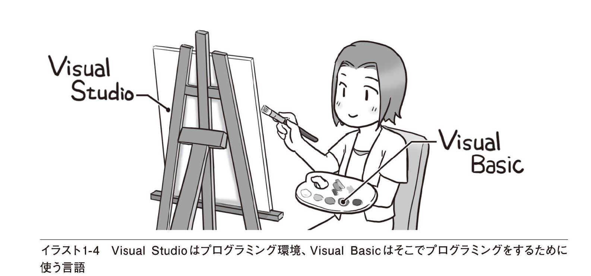
Visual Studioには、無償で提供されているVisual Studio Communityと、有償で提供されているVisual Studio Professional、Visual Studio Enterpriseの3種類があります（表1-1）。これらのほかにも、Visual Studio Express for Windowsや、Visual Studio Test Professionalなど、目的に合わせた詳細な追加プランがありますが、一般的には開発の規模に合わせて、表1-1のいずれかの製品を選択します。
これらの製品の違いは、同じ車のグレードの違いのようなものです。上位の製品ほど多くの機能が備わっており、当然のことながら値段も高くなります。
どの製品を使うかは利用者の目的次第ですが、本書ではプログラミングを学ぶという目的に合わせ、Visual Studio Communityを使うことにします。これは個人での開発やプログラミングの学習、小規模なアプリケーションの開発を目的として無償で提供されているものですが、その実力をなめてかかることはできません。Visual Studio Communityは、決して「お試し版」程度の機能限定版ではなく、本格的なプログラムを作成するのに十分すぎるほどのフル機能を備えています。次の項では、本書で取り上げたプログラムを例に、どのようなプログラムが作成できるかひととおり紹介しますが、それだけでもVisual Studio Communityの実力のほどがうかがえると思います。
Visual Studioの種類による機能の違い
最初から豊富な機能の一覧表を示しても、見慣れないツールの名前が次から次へと出てきて困惑するだけなので、ここではあえて掲載しないことにします。オプションによる機能の違いについては、https://www.visualstudio.com/vs-2015-product-editionsを参照してください。
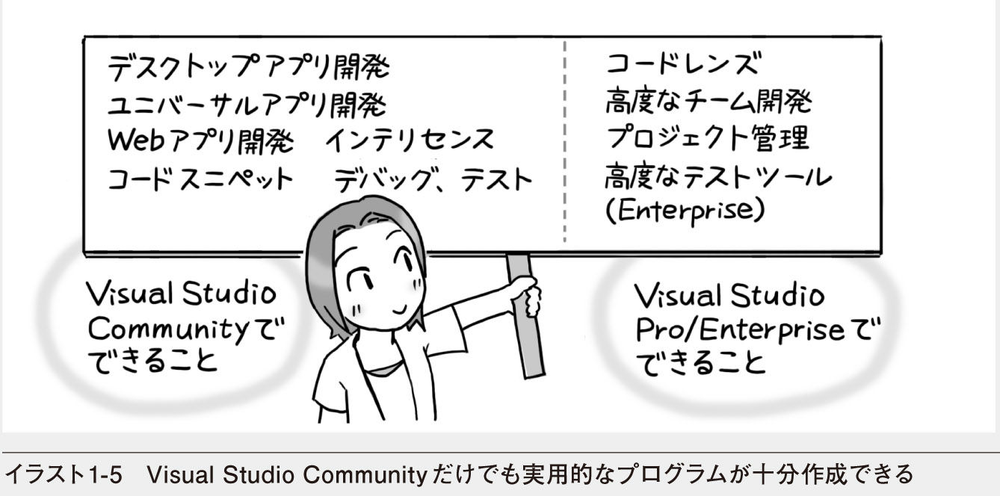
本書のプログラムは、すべてVisual Studio Communityで作成したものです。本書の説明もVisual Studio Communityでの操作にそって進めますが、プログラミングの方法については、どのエディションでも基本的に同じです。
なお、これ以降では、特に区別の必要がある場合を除いてVisual Studio Communityのことを単にVisual Studioと呼ぶことにします。
■Visual Basicで作成できるプログラム
本書ではVisual Studioという開発環境を利用し、Visual Basicというプログラミング言語でプログラムを作成していきます。そこで、Visual Basicでどのようなプログラムが作成できるか、簡単に紹介しておきましょう。以下の内容はあくまでも本書で作成したプログラムの例ですが、これだけでもVisual Basicの豊富な機能を垣間見ることができると思います。しかし、実際にできることはこれだけではありません。本書の内容は砂浜での水遊び的なレベルですが（それだけでも十分に楽しめると思います）、目の前にはさらなる大海が広がっているのです。
細かな用語はあまりに気にせず、どんなことができるか、ざっと眺めておいてください。
■Windows GUIプログラム
すでに説明したように、Visual Basicを利用すると、Windowsのグラフィカルユーザーインターフェイス（GUI）を利用したプログラムが簡単に作成できます。コンピューター関係の書籍に「簡単」と書かれているもので、本当に簡単であることはまれですが、これは正真正銘の簡単です。お絵描き感覚でウィンドウのデザインができるので、まったくの初心者でも、ほんの数分でWindowsのGUIプログラムが作成できます。
ウィンドウのデザインはきわめて簡単なので、とりあえず動くプログラムがすぐに作成できます。さらに、さまざまなコントロール（ラベルやボタンなどの部品にあたるもの）や、変数、条件分岐、繰り返し処理、配列、クラスなど、本書で学ぶVisual Basicの機能を利用すれば、より高度で多彩なプログラムも作成できるようになります。
■ファイル入出力を利用するプログラム
ファイルに保存されたデータを読み出してウィンドウに表示したり、処理したデータをファイルに書き込んだりするプログラムが作成できます。
ファイルとのデータのやりとりにはMicrosoft .NET Frameworkのクラスライブラリが利用できます。クラスライブラリとはプログラムから利用できる部品の集まりのようなものです。もちろん、Microsoft .NET Frameworkのクラスライブラリはファイル処理以外にもさまざまな目的に利用できます。ちなみに、ウィンドウに表示されているコントロールもクラスライブラリに含まれる部品の1つです。
■データベースを利用するプログラム
SQL ServerやAccessなどのデータベースを利用すれば、ファイル処理よりも高度なデータ処理ができます。Visual Basicにはそれらのデータベースを利用しやすくするためのコントロールが用意されています。簡単なものなら、コードを1行も書かずにデータベースを利用するプログラムが作成できます。

■さらに高度なプログラム
Visual Basicを利用すれば、ウェブサービスやアニメーションなど、高度なプログラムも作成できます。以下の例は基礎の範囲を大きく超えるので、紙面では説明しませんが、ダウンロード用のサンプルプログラムとして、詳しい説明とともに提供しています。Visual Basicでここまで（もっと先にも）行けるんだ！ という展望が得られると思います。ぜひ参考にしてください。
●ユニバーサルWindowsアプリケーション
ユニバーサルWindowsアプリケーションとは、パソコンだけでなく、タブレットやスマートフォンなどでも同様の操作ができるプログラムのことです。作成したプログラムは、Windowsストアで公開することもできます。
●ウェブサービスを利用するプログラム
インターネットのWorld Wide Web（WWW）で提供されているRSS（RDF Site Summary）などの情報サービスやTwitter API、Google Maps APIなど各種のウェブサービスもVisual Basicから利用できます。これらのサービスで使われているXML形式のドキュメントから特定のデータを検索するための方法が提供されています。
●Windows Presentation Foundationを利用するプログラム
Windows Presentation Foundation（WPF）とは、より魅力的なユーザーインターフェイスを提供するための機能の集まりです。Visual Basicでは、WPFに対応したプログラムを作成し、コントロールに表示効果を設定したり、2Dアニメーションや3Dアニメーションを表示したりすることができます。
このほか、Internet Explorerと同様、あるいはそれ以上の独自の機能を追加したウェブブラウザーや、より使いやすいメールクライアント、ワードプロセッサやスケジュール管理システムなどのビジネスプログラム、タイマーを使ったゲームプログラムなど、さまざまなプログラムが作成できます。実際、Visual Basicだけで作られた経理ソフトや給与管理システムなどの業務プログラムもめずらしくはありません。
1.2 Visual Studio Community 2015 のインストール
Visual Studio Community 2015（以下、Visual Studioと略記）はインターネットからダウンロードして、パソコンにインストールできるので、本書の解説で取り上げたサンプルプログラムをすぐに試すことができます。本書を読んで理解するだけでも十分な知識は得られますが、それはガイドブックを読んで旅先の情報を得るのと同じようなことです。知識を生きた経験として身に付けるためには、やはり実際に旅に出ることが必要です。ぜひ、サンプルプログラムを作成し、Visual Basicという世界への旅を体験してみてください。得られるのは知識だけではありません。実際にやってみなければ分からない貴重なノウハウも身に付くはずです。わくわくする感じも、読むだけではなかなか得られないものです。
旅に出るには、パスポートや搭乗券、ボストンバッグなどの用意が必要です。それと同じように、ここでVisual Studioをパソコンにインストールし、プログラミングの準備を整えておきましょう。
Visual Studioをインストールするには、マイクロソフトのウェブサイトにアクセスし、セットアッププログラムをダウンロードします。
Step1 マイクロソフトのウェブサイトにアクセスする
Microsoft Edgeなどのウェブブラウザーを起動し、http://www.visualstudio.com/にアクセスします。正しく接続されるとVisual Studioのウェブページが表示されます（画面1-7） 。
Step2 セットアッププログラムをダウンロードする
［Community 2015のダウンロード］をクリックすると、セットアッププログラムがダウンロードされ、画面の下にメッセージが表示されます。［実行］ボタンをクリックすれば、セットアッププログラムが起動します（画面1-8）。
Step3 セットアッププログラムを実行する
セットアッププログラムが起動すると、セキュリティの警告が表示されます。［実行（R）］ボタンをクリックすれば、インストールが開始されます。
続いて、インストール先のフォルダーやインストールするプログラムの種類を選択する画面が表示されます。インストール先のドライブに空き領域が少ない場合には、十分に空きのあるドライブを選択してください。［インストールの種類］については、必要に応じて後から変更できるので、ここでは標準設定のままとします。
ここからVisual Studioのインストールが始まります。パソコンやネットワークの性能によって異なりますが、インストールの終了までには数十分から1時間ぐらいの時間がかかります。その間、インストールの進行状況が表示されます（画面1-12）。
インストールが終了すると、画面1-13のような終了画面が表示されます。ここで［起動（L）］をクリックすると、Visual Studioが起動します。なお、インストールの開始時に［カスタム（U）］を選択して、インストールされるプログラムを追加した場合など、利用環境によってはパソコンの再起動が必要になる場合もあります。その場合は［起動（L）］の代わりに［今すぐ再起動（N）］が表示されているので、そのボタンをクリックしてパソコンを再起動してください。
Visual Studioは、これからよく使うことになるので、アイコンをタスクバーにピン留めしておくと便利です。タスクバーにピン留めするには、タスクバーに表示されたアイコンを右クリックして［タスクバーにピン留め］を選択します。
Chapter1のまとめ
● Visual Studioはお絵描き感覚でウィンドウのデザインができる、やさしいプログラミング環境です
● Visual Studioには、コードの入力を手助けしてくれる便利な機能が備わっています
● Visual Studioには、本格的な業務プログラムが作成できる豊富な機能が備わっています
● Visual Studioには、機能の違いにより、いくつかの製品があります
● Visual Studio 2015には有償のものと、無償で個人での開発や小規模な業務プログラムの開発に利用できるVisual Studio Community 2015があります
● 本書では、Visual Studio Community 2015を使って、Visual Basicのプログラミングを学びます
練習問題
［A］次の文章のうち、正しいものには○を付け、間違っているものには×を記入してください。
（ ） Visual Basicは初心者用のプログラミング言語なので、本格的な業務プログラムは作成できない
（ ） Visual Basicでは、コードを書かなくてもプログラムが作成できるが、コードを書いて、より高度なプログラムを作成することもできる
（ ） Visual Basicでは、データベースを利用するプログラムも作成できる
（ ） Visual Basicでは、ウェブサービスを利用するプログラムは作成できない
［B］以下の空欄を埋めるもっとも適切な用語を選択肢の中から選んでください。
Visual Basicを利用すると、初心者でも簡単にWindowsの（ 1 ）を利用したプログラムが作成できます。特別な命令を使わなくても、ウィンドウをお絵描き感覚で（ 2 ）できます。高度な業務プログラムを作成するには、（ 3 ）を記述する必要がありますが、（ 4 ）と呼ばれる機能により、次に入力できる単語が一覧表示されるので、選択肢から適切な単語を選ぶだけでプログラムが作成できます。また、コードスニペットと呼ばれる機能により、よく使われる（ 5 ）を自動的に挿入することもできます。
（a）デザイン
（b）インテリセンス
（c）グラフィカルユーザーインターフェイス
（d）構文
（e）コード
Chapter2
はじめてのプログラミング
Visual Studio Community 2015のインストールが終わったので、いよいよプログラミングに取り組みます。Visual Basicでは、前提知識は特に必要ではありませんが、ある程度の見通しを付けておいたほうがスムーズに学習が進むのも確かです。この章では、Visual Basicのプログラムを作成するにあたって、あらかじめ押さえておきたい最低限のポイントを示した後、プログラミングという作業の流れを追いかけていきます。
2.1 Visual Basicでのプログラミング
Visual Basicのプログラムとは／プロジェクトとは
2.2 プログラムを作成してみよう
ここで作成するプログラム／Visual Studioを起動する／プロジェクトを新規作成する／フォームをデザインする〜コントロールの配置／プロパティを設定する／コードを書く〜イベントハンドラーの作成／コードを簡単に入力する／メソッドを利用する／プログラムを実行する／プログラムのエラーに対処する／実行用プログラムのある場所
2.3 よく使うコントロール
よく使うコントロールの一覧
これから学ぶこと
● Visual Basicのプログラムがどのような要素から成り立っているかを知ります
● 簡単なプログラムを実際に作ってみて、Visual Basicでのプログラミングの流れを体験します
● Visual Basicのプログラムでよく使う部品（コントロール）の一覧を確認しておきます
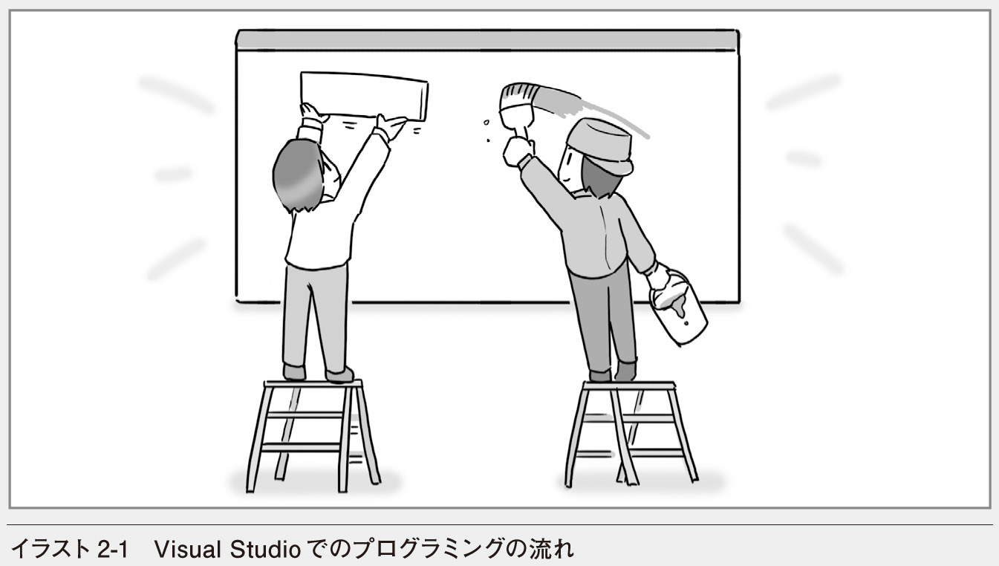
Visual Basicのプログラムを作成するには、まず、フォーム（ウィンドウ）の中にラベルやボタンなどの部品を配置します。これらの部品はコントロールと呼ばれます。次に、コントロールに表示される文字列や色などの性質を指定します。これらの性質はプロパティと呼ばれます。ボタンのクリックなど、コントロールで何かのできごとが起こったときには、イベントハンドラーと呼ばれるコードが自動的に実行されます。Windowsのプログラムを作成するということは、コントロールのプロパティに値を設定したり、イベントハンドラーで何を実行するかを記述したりすることにほかなりません。
2.1 Visual Basicでのプログラミング
プログラムとはコンピューターに仕事をさせるための手順書のようなものだとよくいわれます。手順書というと堅苦しく聞こえますが、料理のレシピや旅行の旅程表と同じようなものです。つまり、何をどのような順序でやるかというやり方を書いたものです。ここでは、日常の手順書とVisual Basicのプログラムを対比しながら、プログラミングに必要となる基本的な要素を確認します。
■Visual Basicのプログラムとは
レシピや旅程表には決まった書き方があります。例えば、レシピには食材の種類や分量、調理の方法など、料理を作るのに必要ないくつかの要素を書いておく必要があります。それと同じように、Visual Basicのプログラムに必要となる要素もやはりいくつかあります。では、Visual Basicで作成されたWindowsの一般的なプログラムを見ながら、何が必要になるかを確認してみましょう。
GUI以外のプログラムも作成できる
Visual Basicを利用して作成されるプログラムの多くはWindowsのグラフィカルユーザーインターフェイス（GUI）を利用したプログラムですが、Visual Basicではウィンドウを表示しないプログラムも作成できます。したがって、必ずしもVisual Basicのプログラム＝WindowsのGUIプログラムというわけではありません。
■コントロール
画面2-1はWindowsの一般的なプログラムです。このプログラムを見ると、ウィンドウの中に、ラベルやテキストボックス、ボタンといった部品が表示されているのが分かります。したがって、どのような部品を利用するか、それらをどう配置するかを決めることがプログラミングを始めるにあたってまず必要になります。
すでにさりげなく登場している言葉ですが、これらの部品のことをコントロールと呼びます。ウィンドウもコントロールの一種で、コントロールを配置するための台紙のように利用されるので、特にフォームと呼ばれます。
言い換えると、台紙の上に部品をペタペタと貼り付けていく感覚で、基本的な画面が簡単に作れるということです。
■プロパティ
ラベルやボタンに表示されている文字列はプログラムによっても、目的によっても異なります。文字列だけでなく、フォントや文字の色、背景の塗りつぶし色などさまざまな性質を決めることも必要です。このような、コントロールの性質のことをプロパティと呼びます。
■メソッド
コントロールには、性質だけでなくどのような動作ができるかも決められています。例えば、ボタンにはそのボタン自身を非表示にする動作や表示する動作が含まれています。そういった動作のことをメソッドと呼びます。メソッドを利用すれば、コントロールにさまざまな動作をさせることができるのです。
■イベントとイベントハンドラー
Visual Basicのプログラムは日常の手順書とは異なる点もあります。それは、単に手順を最初から最後まで並べて書いたものではないということです。レシピであれば、食材の種類や分量と、それらを調理する手順が書かれていて、その通りに順を追って進めていけば料理ができます。しかし、Visual Basicのプログラムは「あれをやってこれをやっておしまい」という作業の流れを一直線に書いただけのものではありません。
例えば、画面2-1には2つのボタンがありますが、プログラムを利用する人がどちらのボタンを先にクリックするか分かりません。したがって「このボタンをクリックした後、次のボタンをクリックする」といった順序は決められません。Visual Basicのプログラムでは、発想を逆転させ、「このボタンがクリックされたら○○する」ということを決めておきます。つまり、何らかのできごとに対して、どのような仕事をするかを決めておくのです。
このような「クリックされた」「キーが押された」などのできごとのことをイベントと呼びます。また、イベントが起こったときに実行する手続きのことをイベントハンドラーと呼びます。Visual Basicでは、イベントハンドラーを書いておけば、そのイベントが起こったときに、自動的にイベントハンドラーの内容が実行されます。
イベントハンドラーの内容は、Visual Basicというプログラミング言語の文法に従って書きます。
以上の話を図2-1にまとめておきましょう。プロパティ、メソッド、イベントといった用語も紹介しましたが、プログラミングを進めていくうちに自然に覚えてしまうので、この段階で理解できなかったとしても気にする必要はありません。
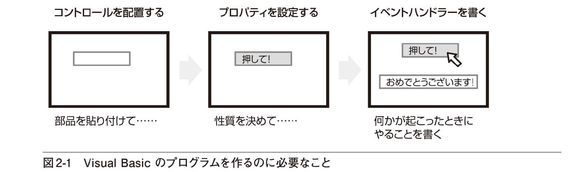
Visual Basicのプログラミングはまさにこの順序に従って進めることになります。
■プロジェクトとは
次の節に進んで、実際にプログラミングの流れを体験したいと、うずうずしている人も多いと思いますが、あと1つだけ用語を紹介しておきます。その用語とはプロジェクトです。
Visual Studioでは、1つのプログラムに含まれるさまざまな要素をプロジェクトと呼ばれるまとまりで管理しています。料理の話でいえば、紙に書かれた手順だけでなく、実際の食材や調味料、調理器具、盛りつけるためのお皿などをすべて含めたものがプロジェクトです。手順が分かっただけでは料理はできません。これらのすべてが揃って料理が完成します。Visual Studioのプロジェクトもそれと同じです。フォームやコントロール、イベントハンドラーなどのコードをすべてひとまとめにしてプロジェクトとして管理しているのです。
プロジェクトには、さらに実行用のプログラムや利用するデータベースなども含まれますが、詳細についてはプログラムを作りながら見ていくこととしましょう。
2.2 プログラムを作成してみよう
この節では、いよいよVisual Studioでのプログラムの作成から実行までの流れを追いかけます。旅行にたとえるとガイド付きのツアーのようなものです。細い路地に入り込みはしませんが、Visual Studioという世界の歩き方がひととおり分かるはずです。
■ここで作成するプログラム
はじめてのプログラミングなので、プログラムの機能よりも、プログラミングの流れを追いかけることを中心に手順を紹介しましょう。したがって、作成するプログラムはできるだけ簡単なものにします。イラスト2-5で完成時のイメージを確認しておきましょう。
このプログラムでは、［表示（S）］ボタンをクリックすると「Hello VB!」というメッセージが表示され、［終了（X）］ボタンをクリックするとプログラムが終了するものとします。
では、Visual Studioを起動して、プログラミングに取り組みましょう。ここから、以下の流れを追いかけます。
■Visual Studioの起動
■プロジェクトの作成
■コントロールの配置
■プロパティの設定
■イベントハンドラーの記述
■プログラムの実行
■Visual Studioを起動する
Visual Studioを起動する方法は、ワープロソフトや表計算ソフトなどのプログラムを起動するのとまったく同じです。Windows10では、スタートメニューの［すべてのアプリ］の一覧から選択して起動します。
❶ ［スタート］ボタンをクリックする
❷ ［すべてのアプリ］をクリックする
❸ ここを下にドラッグして表示をスクロールさせる
❹ ［Visual Studio 2015］をクリックする
Visual Studioが起動すると、画面2-3のような画面が表示されます。ウィンドウの中にはメニューバーやツールバーのほか［ツールボックス］や［スタートページ］などのタブが表示されています。どのようなものが表示されているかを確認してから先に進みましょう。
はじめて起動するときは少し時間がかかる
Visual Studioをインストールした後、はじめて起動するときには、ユーザーの利用環境が自動的に作成されます。そのため、起動には数秒〜十数秒の時間がかかります。
① メニューバー：
Visual Studioでプログラムを作成するために必要なメニューが表示される。そのときの作業内容によって表示が変わる
よく使う機能がボタンで選択できるようになっている。そのときの作業内容によって表示が変わる
③ スタートページ：
作業の開始に役立つ情報が表示される
ⓐ 最初によく行う作業の一覧が表示される
ⓑ 最近使ったプロジェクトの一覧が表示される
ⓒ 作業開始にあたってのガイダンスや開発ツールに関する最新の情報が表示される
④ ソリューションエクスプローラー：
プロジェクトの一覧や、プロジェクトに含まれるフォームやコードなどの一覧が表示される
画面の表示は作業の内容によって変わるので、ここにはまだ表示されていないものもあります。それらについては、そのつど紹介することにしましょう。ともあれ、Visual Studioが起動できたので、新しいプログラムを作成しましょう。
タスクバーにピン留めしておくと素早く起動できる
Visual Studioが起動するとタクスバーにアイコンが表示されます。そのアイコンを右クリックして［タスクバーにピン留め］を選択すれば、アイコンがタスクバーに常に表示されます。次からはアイコンをクリックするだけで起動できるようになります。
■プロジェクトを新規作成する
Visual Studioでは、プログラムに含まれるフォームやコードをプロジェクトというまとまりで管理しています。したがって、プログラムを作るためには、プロジェクトを新規作成する必要があります。画面2-4のようにメニューを選択してプロジェクトを新規作成するか、ツールバーの左の方にある［新しいプロジェクト］ボタンをクリックします。また、［最近使用したファイル］の上にある［新しいプロジェクト...］をクリックしても構いません。
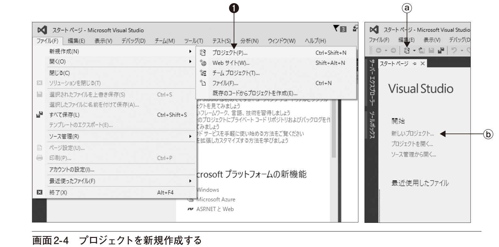
❶ メニューから［ファイル（F）］－［新規作成（N）］－［プロジェクト（P）...］を選択する
ⓐ ［新しいプロジェクト］ボタンをクリックしてもよい
ⓑ ［新しいプロジェクト...］をクリックしてもよい
いずれの方法でも、［新しいプロジェクト］ダイアログボックスが表示されます。このダイアログボックスで、これから作成するプロジェクトの種類を選択し、名前を付けます。ここでは、Visual Basicというプログラミング言語を使ってWindowsアプリケーションを作成するので、左側のリストで［インストール済み］－［テンプレート］－［Visual Basic］－［Windows］の順に階層を開き、中央の一覧から［Windowsフォームアプリケーション］を選びます。プロジェクトには分かりやすい名前を付けておきます。ここではShowMessageという名前にしましょう（画面2-5）。
❶ ［インストール済み］－［テンプレート］－［Visual Basic］－［Windows］の順に階層を開く
❷ ［Windowsフォームアプリケーション］をクリックする
❸ プロジェクト名を入力する
❹ ［OK］ボタンをクリックする
プロジェクトが作成されると、画面2-6のような画面が表示されます。画面の中央に大きく表示された部分を［フォームデザイナー］と呼び、その中にあるForm1というタイトルのウィンドウをフォームと呼びます。フォームはいわばプログラムの台紙にあたるようなもので、この上にラベルやボタンなどのコントロールを配置しながらプログラムのウィンドウをデザインしていくわけです。
① ［フォームデザイナー］：
ここでプログラムのウィンドウをデザインする
② フォーム：
プログラムのウィンドウをデザインするための台紙にあたる
③ ［ツールボックス］タブ：
フォーム上に配置できるコントロールの一覧。このタブをクリックすると、一覧が表示される
④ ［ソリューションエクスプローラー］：
プロジェクトやプロジェクトに含まれるフォームなどが一覧表示される
⑤ ［プロパティ］ウィンドウ：
フォームやコントロールの性質や設定を変更するためのウィンドウ
フォーム上に配置するコントロールは、ツールボックスから選択します。またコントロールのプロパティは［プロパティ］ウィンドウで指定します。
■フォームをデザインする〜コントロールの配置
フォームが表示されたので、コントロールをフォーム上に配置していきましょう。このプログラムはボタンをクリックしたらメッセージを表示するものなので、文字列の表示ができるLabelコントロールと、ボタンとしての働きを持つButtonコントロールを配置します。
［ツールボックス］タブをクリックし、コントロールの一覧を表示します。まず、一覧の中にある［Label］をクリックして、フォーム上に配置しましょう（画面2-7）。
❶ ［ツールボックス］タブをクリックする
② ［ツールボックス］の一覧が表示される
❸ ［コモンコントロール］をクリックする
④ 一般的に使われるコントロールの一覧が表示される
❺ ［Label］をクリックする
❻ フォーム上をクリックする
選択したコントロールをフォーム上に配置するには、フォームをクリックするだけで構いません。フォーム上をドラッグすれば、コントロールの位置やサイズを変えて配置することもできます。［ツールボックス］の背後にフォームが隠れて、フォームがクリックできないときには、もう一度［ツールボックス］タブをクリックするか、［フォームデザイナー］の空白の部分をクリックし、［ツールボックス］を非表示にしてからフォーム上をクリックするといいでしょう。
フォーム上に配置したコントロールは、ドラッグ操作で位置を変えたり、サイズを変えたりすることができます（画面2-8）。
❶ Labelコントロールにマウスポインターを合わせる
② マウスポインターが4方向の矢印の形に変わる
❸ ドラッグするとLabelコントロールが移動できる
Labelコントロールのサイズを変更するには
Labelコントロールのサイズは、表示される文字列の長さによって自動的に決められます。自由にサイズを変更したいときにはLabelコントロールのAutoSizeプロパティをFalseに設定します。
ツールボックスは常に表示しておくこともできます。［ツールボックス］というタイトルの右にある画鋲のアイコンをクリックしてみてください。ツールボックスが表示されたままになり、ツールボックスの背後にフォームが隠されることもなくなります。ディスプレイの解像度が大きければツールボックスを常に表示しておいたほうが使いやすいでしょう（画面2-9）。
❶ 画鋲のアイコン（）をクリックする
② ツールボックスが表示されたままになる
③ 画鋲のアイコンが縦向き（）になっている
では、同じようにして、Buttonコントロールを2つ配置してみましょう。ドラッグして位置やサイズも整え、画面2-10のようにしてください。また、フォームのサイズも変更しておいてください。
以上で、基本的なデザインができあがりました。次にフォームやコントロールの細かな設定を変えていきましょう。
■プロパティを設定する
すでに触れたように、プロパティとは性質とか属性といった意味です。フォームやコントロールのプロパティを変更することによって、表示されている文字列や色、サイズ、そのほかの設定を変えることができます。まず、Buttonコントロールに表示されているテキストを「Button1」から「表示（S）」に変えてみましょう。テキストを変更するには、Textプロパティに文字列を設定します（画面2-11）。
❶ Buttonコントロールをクリックして選択する
② 選択されているコントロールの名前がドロップダウンリストに表示される
❸ ［プロパティ］ウィンドウのTextの欄をクリックし、「表示(&S)」と入力する
コントロールを選択するときには、コントロールをダブルクリックしないように注意してください。もし、間違ってダブルクリックしてしまった場合は、自動的にイベントハンドラーが追加され、コードウィンドウが表示されますが、とりあえずはそのまま放置しておいて構いません。［Form1.vb［デザイン］］タブをクリックすれば元のフォームデザイナーの画面に戻ります。なお、イベントハンドラーの詳細については、P.52で説明します。
このように、プロパティを変更するには、対象となるフォームやコントロールをクリックし、［プロパティ］ウィンドウで値を指定するだけです。［プロパティ］ウィンドウの一覧は項目の分類によって並べられていますが、アルファベット順に表示することもできます。
❶ ［項目別］ボタンをクリックすると、プロパティが分類されて表示される
❷ ［アルファベット順］ボタンをクリックするとプロパティがアルファベット順に表示される
NameプロパティとTextプロパティの違いに注意
Nameプロパティはコントロールの名前そのものですが、Textプロパティはあくまでコントロールに表示される単なる文字列です。プログラミングにまだ慣れていない人の中には、NameプロパティとTextプロパティを混同する人が少なくありません。最初のうちは違いを意識しておくようにしましょう。
同じようにして、画面2-13と表2-1に従ってプロパティを変更しておきましょう。Nameプロパティはコントロールを識別するための名前です。後でコードを記述するときにこの名前を使うので、分かりやすい名前を付けるようにしましょう。
注意：FormのNameプロパティには、フォームの目的が分かるような名前を指定した方がいいのですが、本書の執筆時点ではNameプロパティを変更してもコードの一部が変更されず「Form1は<プロジェクト名>のメンバーではありません」というエラーが発生します。そのため、本書では、既定のForm1といった名前を変更しないことにします。Nameプロパティを変更してしまった場合は、エラーメッセージをダブルクリックし、コードウィンドウに表示されたコードの中の「Form1」をNameプロパティに指定した名前に変更します（この手順でフォームの名前が変えられます）。
最初は、Labelコントロールには何も表示されないようにしておきたいのでTextプロパティの文字列を削除しておきます。プロパティウィンドウの［Text］の欄を選択し、キーを押せば、設定内容が削除できます。文字列を削除すると、Labelコントロールに何も表示されなくなるので、フォーム上から消えたように見えますが、コントロールそのものが削除されたわけではありません。
表示されていないコントロールを選択するには
見えなくなっているコントロールを選択するには、コントロールのあった位置を囲むようにドラッグします。コントロールの位置が分からない場合は、［プロパティ］ウィンドウの上のほうにあるドロップダウンリストをクリックして、一覧の中から選択します。いずれの方法でも、選択されたコントロールが点線の枠で表示されます。
ところで、ButtonコントロールのTextプロパティに「&S」や「&X」のような文字列が指定されているのが気になっている人もいるかと思います。フォーム上のコントロールを見ると、「&」に続けて書かれた英字1文字にアンダーラインが表示されていることも分かります（画面2-13）。このような、「&」に続けて書いた文字はアクセスキーと呼ばれ、キーボードを使ってボタンなどを操作するときに使われます。例えば、Textプロパティに「表示（&S）」を指定したButtonコントロールであれば、アクセスキーは「S」となります。プログラムの実行時には+キーを押すことにより、このボタンが選択できます。
「&」やアクセスキーの文字は半角で入力する
「&」は半角で入力する必要があります。アクセスキーには任意の文字を指定できますが、日本語の文字を指定しても実行時に選択できないので、半角の英数字を指定するのが普通です。
以上でフォームのデザインは終わりです。ちょっと先走ってしまうことになりますが、試しにプログラムを実行してみましょう。ツールバーにある［開始］ボタン（）をクリックしてみてください。プログラムが実行され、これまでにデザインしたウィンドウが表示されます（画面2-14）。
❶ ［開始］ボタンをクリックする
② プログラムが起動した
❸ ［表示（S）］ボタンをクリックする
④ 何も起こらない
❺ ウィンドウ右上の［閉じる］ボタン（）をクリックしてプログラムを終了させる
この段階では、ウィンドウがそのまま表示されるだけです。例えば、［表示（S）］ボタンをクリックしても、何も表示されません。また、［終了（X）］ボタンをクリックしても何も起こりません。というのも、ここではButtonコントロールを配置してプロパティを設定しただけで、これらのボタンをクリックしたときに何をするか決めていないからです。プログラムの「動き」を決めるにはコードを記述する必要があります。
次は、コードを記述して動きのあるプログラムにします。実行したプログラムのタイトルバー右上にある［閉じる］ボタンをクリックするか、Visual Studioのツールバーにある［デバッグの停止］ボタン（）をクリックして、プログラムをいったん終了させておいてください。
■コードを書く〜イベントハンドラーの作成
プログラムがどのように動くのかを指示するためにはコードを書く必要があります。このプログラムでやりたいことは次の2つです。
［表示（S）］ボタンをクリックしたら、ラベルにメッセージを表示したい
［終了（X）］ボタンをクリックしたら、プログラムを終了させたい
では、メッセージを表示するところから見ていきます。まず、［フォームデザイナー］に表示されたフォーム上の［表示（S）］ボタンをクリックして選択します。次に［プロパティ］ウィンドウの上にある［イベント］ボタンをクリックし、イベントの一覧を表示します。
イベント一覧の中に［Click］があるので、その欄の右にShowMessageと入力しましょう（画面2-15）。
❶ ［表示（S）］ボタンをクリックして選択する
❷ ［イベント］ボタンをクリックする
❸ ［Click］の右に「ShowMessage」と入力する
コントロールをダブルクリックすると
画面2-15でボタンをダブルクリックするだけでもイベントハンドラーが作成され、画面2-16のようなコードウィンドウが表示されます。ただし、その場合「Private Sub」の後に入力されるプロシージャ名は「コントロール名_Click」となります。Subの後のプロシージャ名を「ShowMessage」に書き換えると、画面2-16と同じになります。なお、間違って作成してしまったイベントハンドラーを削除したい場合は、「Private Sub」から「End Sub」までを削除してください。
この［Click］というのはClickイベント、つまり「クリックされたとき」ということを表します。「ShowMessage」は、実行されるプロシージャ（手続き）の名前です。分かりやすいものであれば、別の名前を付けても構いません。
ShowMessageと入力して キーを押すと、画面2-16のようなコードウィンドウが表示されます。
コードウィンドウにはあらかじめコードが入力されています。その部分を抜き出してみると、LIST2-1のようになります。
2-1 作成されたイベントハンドラー
Public Class Form1 Private Sub ShowMessage(sender As Object, e As EventArgs) ⇒Handles btnMessage.Click End SubEnd Class画面2-14で指定したShowMessageがプロシージャ名で、Handlesの後に書かれているのが「どのコントロールのどのイベントが起こったときに実行するか」ということです。btnMessage.Clickとあるので「btnMessageという名前のコントロールがクリックされたとき」という意味になります（図2-2）。
このように、何かのイベントが起こったときに実行されるプロシージャをイベントハンドラーと呼びます。したがって、ShowMessageプロシージャはbtnMessageコントロールのClickイベントハンドラーである、ということになります。
コントロール名の表し方について
これ以降「btnMessageという名前のButtonコントロール」のことを単に「btnMessageコントロール」と表記し、ほかのコントロールについても同様に表します。例えば、「lblMessageという名前のLabelコントロール」は「lblMessageコントロール」と表記します。
あらかじめ入力されているコードにはほかにもいろいろと謎がありますが、いまの時点ではあまりに気にせず、自分のやりたいことだけを書きましょう。
やりたいこととは、
■lblMessageコントロールにメッセージを表示する
ということでしたね。これを、もう少しプログラミング的な言葉で表すと、
■lblMessageコントロールのTextプロパティにメッセージの文字列を代入する
ということになります。LIST2-1のPrivate SubとEnd Subの間にコードを書いて、以下のようにしてみましょう。①の部分が自分で入力するコードです（LIST2-2）。
2-2 メッセージを表示するためのコード
Private Sub ShowMessage(sender As Object, e As EventArgs) ⇒Handles btnMessage.Click lblMessage.Text = "Hello VB!" ●─── End Subコードを見ると、コントロールのプロパティが「コントロール名.プロパティ名」のように「.」（ピリオド）で区切って表されていることに気が付きます。このコードは、lblMessageコントロールのTextプロパティに"Hello VB!"という文字列を代入するという意味になります（図2-3）。「=」が代入を表す演算子ですが、ここでは「入れる」という意味だと思っておいてもらって構いません。なお、代入については3.3節で詳しく見ていきます。
プロパティの値は、フォームのデザイン時に［プロパティ］ウィンドウで設定するだけでなく、このようにしてプログラムの実行時にコードで設定できるのです。Textプロパティの値が変更されると、表示される文字列がその時点で変わります。
コード全体を見て、もう一度プログラムの動きを確認しておきましょう。これまでの流れをまとめると「btnMessageコントロールをクリックしたら、ShowMessageイベントハンドラーが実行され、lblMessageコントロールのTextプロパティに"Hello VB!"という文字列が代入される」ということが分かります（図2-4）。
これで、ボタンをクリックしたら、ラベルにメッセージが表示されるようになったわけです。
■コードを簡単に入力する
実際にコードを入力してみると、コードを1文字1文字入力しなくても、候補を選ぶだけで簡単に入力できることが分かります。LIST2-2のコードであれば、コードウィンドウで、lblまで入力した時点で、「lblMessage」というコントロール名がポップアップ表示されます（画面2-17）。
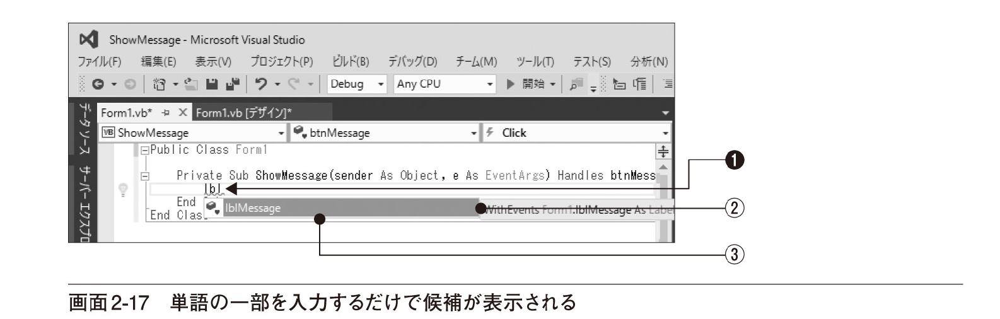
❶ 「lbl」まで入力する
② 候補が表示される
③ lblMessageが選択された状態になっている
この時点で「.」（ピリオド）を入力すると「lblMessage.」までが自動的に入力されます。さらに、続けて入力できる単語（プロパティやメソッド）の一覧も表示されます（画面2-18）。
❹ 「.」（ピリオド）と入力する
⑤ 「lblMessage.」までが自動的に入力され、次に入力できる単語の候補が表示される
❻ スクロールバーをドラッグして項目をクリックするか、方向キーを使って「Text」が選択された状態にする
一覧からプロパティ名を選び、キーを押すか、そのまま続けて次のコードを入力すれば、そのプロパティ名が自動的に入力されます。例えば、Textプロパティを選び、「=」と入力すると、「Text」が自動的に入力され、さらに「=」の次に入力できる候補が表示されます（画面2-19）。

❼ 「=」（イコール）を入力する
⑧ 「lblMessage.Text =」と入力される
⑨ 代入できる値の候補がさらに表示される
入力できる候補が多いと選択しづらいかもしれませんが、次に入力したい単語の先頭数文字が分かっていれば、候補が絞り込めるので、選択がかなり楽になります。この場合なら、「lblMessage.Te」まで入力すれば、「Te」で始まる単語だけが一覧に表示されます。
あとは、続けてコードを入力し、「lblMessage.Text = "Hello VB!"」というコードを完成させるだけです。
なお、このような、入力できる候補を一覧表示してくれる機能は、Visual Studioのインテリセンスに含まれる機能の1つです。
■メソッドを利用する
では、これまでの復習を兼ねて、［終了（X）］ボタンについてもイベントハンドラーを書いておきましょう。［Form1.vb［デザイン］］タブをクリックすれば、デザイナーウィンドウが表示できます。［終了（X）］ボタンを選択し、［プロパティ］ウィンドウで、［Click］イベントの欄にプロシージャ名（イベントハンドラー名）を入力しましょう。ここではExitProcと入力します。つまり、btnExitコントロールのClickイベントハンドラーをExitProcという名前にしたわけです。
❶ ［Form1.vb［デザイン］］タブをクリックする
② フォームデザイナーが表示される
❸ ［終了（X）］ボタンをクリックする
❹ ［プロパティ］ウィンドウの［イベント］ボタンをクリックする
❺ ［Click］の欄に「ExitProc」と入力する
コードウィンドウが表示されたら、LIST2-3のように入力しましょう。①の部分が入力すべきコードです。
2-3 プログラムを終了させるためのコード
Private Sub ExitProc(sender As Object, e As EventArgs) ⇒Handles btnExit.Click Application.Exit() ●───① End Subこのコードでは、ApplicationとExit()が「.」（ピリオド）で区切られて書かれています。Applicationというのは、このプログラムそのものを表すオブジェクトです。その後のExitは「終了する」という動作を表すメソッドです。メソッドには後ろに()を付ける必要があります（図2-5）。
多くのメソッドでは、()の中に引数と呼ばれるデータが指定できるようになっています。引数は「ひきすう」と読みます。引数はメソッドの動作のために使われるデータですが、詳細についてはChapter7で詳しく説明します。Exitメソッドのように、引数を必要としない場合でも()は省略できません。
（）は自動的に付加される
実際には()を入力しなくても、インテリセンスの機能により、自動的に()が付加されます。
フォームデザイナーやコードウィンドウを表示するには
フォームデザイナーやコードウィンドウのタブが表示されていない場合は、ソリューションエクスプローラーを使ってフォームデザイナーやコードウィンドウを表示します。フォームのファイル名をダブルクリックすればフォームデザイナーが表示されます。フォームのファイル名を選択して［コードの表示］ボタンをクリックすれば、コードウィンドウが表示されます（画面2-21）。
オブジェクトについてはChapter8で改めて説明しますが、さまざまな機能を持った部品のことだと考えておいてください。......というと、コントロールとどう違うのかと疑問に思う人も多いでしょう。実は、コントロールもオブジェクトの一種です。とりあえずは、イラスト2-6のように理解しておくといいでしょう。
コントロールの多くはLabelやButtonなどのように、ユーザーインターフェイス部品として使われます。しかし、Applicationオブジェクトはユーザーインターフェイスを提供する部品ではありません。直接には見えない部品ですが、さまざまな機能を持っています。自動車の部品にもハンドルやメーターのように目に見えるもの、直接操作できるものがありますが、一方でエンジンの中のバルブ（弁）や変速機のギアのように目に見えないところで使われる部品もあります。それと同じことです。
■プログラムを実行する
コードがすべて入力できたら、プログラムを実行してみましょう。ツールバーにある［開始］ボタン（）をクリックしてみてください。プログラムが実行され、ウィンドウが表示されたら［表示（S）］ボタンをクリックしてメッセージを表示してみましょう。画面2-22のようにメッセージが表示されれば完成です。［終了（X）］ボタンをクリックし、プログラムが終了することも確認しておいてください。
❶ ［表示（S）］ボタンをクリックする
② メッセージが表示される
❸ ［終了（X）］ボタンをクリックする
④ プログラムが終了する
プログラムを実行すると、プロジェクトは自動的に保存されます。プログラムを実行せずに変更内容を保存しておきたいときは、メニューバーから［ファイル（F）］−［すべてを保存（L）］を選択してください。内容が変更されているときには、フォームデザイナーやコードウィンドウのタブに「*」が表示されています（画面2-23）。
Visual Studioのウィンドウの右上にある［閉じる］ボタン（）をクリックすれば、Visual Studioの開発環境も終了します。
① 変更がある場合は「*」が表示されている
❷ ［ファイル（F）］−［すべてを保存（L）］を選択する
■プログラムのエラーに対処する
Visual Studioでは、コードを入力するときに単語の候補が表示されるので、単語のつづりを間違う可能性はずいぶんと少なくなっています。しかし、もし間違いがあれば、問題のある単語の下に波線が表示されます（画面2-24）。
このプログラムではコードが数行しかないので、間違いにも気付きやすいですが、間違いに気付かずに、そのまま［開始］ボタンをクリックして実行しようとすると、エラーメッセージが表示されます（画面2-25）。
❶ ［開始］ボタンをクリックする
② 「ビルドエラーが発生しました」というメッセージが表示される
❸ ［いいえ（N）］をクリックする
④ エラーメッセージが表示される
プログラムにエラーがあると、当然プログラムは実行できません。「ビルドエラーが発生しました。続行して、最後に成功したビルドを実行しますか？」というメッセージが表示されたときに［はい（Y）］をクリックすると、以前に間違いなく実行できたプログラムがあればそれをもう一度実行することになります。［いいえ（Y）］をクリックすれば、エラーメッセージが表示されます。一覧表示されたエラーメッセージをダブルクリックすると、カーソルがそのエラーのある行に移動するので、つづりの間違いなどは簡単に修正できます。修正できたら、もう一度実行してみましょう。なお、ビルドとは、私たちが作ったプログラム（ソースプログラム）を機械語に翻訳し、実行用プログラムを作成することです。
エラーを自動的に訂正することもできる
エラーのある行の前には電球のようなアイコンが表示されています。このアイコンをクリックすると訂正の方法が一覧表示されます。ただし、かなりプログラミングに慣れていないと、どれを選んでいいのか分からない場合も多く、かえって混乱することもあります。今の段階では不用意に項目を選択しないほうが無難です。
■実行用プログラムのある場所
最後に1つ補足です。［開始］ボタンをクリックすると、デバッグモードでプログラムが実行されます。デバッグとはプログラムのエラーを発見し、修正するという意味です。この場合、実行用のプログラムは、プロジェクトを保存したフォルダーの下にあるbinフォルダーの下のDebugフォルダーに作成されます。このプログラムではDebugフォルダーにあるShowMessage.exeという名前のファイルが実行用のプログラムです。エクスプローラーの標準設定では、ファイル名の拡張子（.exe）が表示されないことに注意してください（画面2-27）。
Debugフォルダーに作られた実行用プログラムはあくまでもテスト用に使うプログラムです。プログラムが最終的に完成し、配布できるようになったときには［開始］ボタンの隣にある［ソリューション構成］リストから［release］を選択して、メニューから［ビルド］－［ソリューションのビルド］を選択します。すると、binフォルダーの下のReleaseフォルダーに配布用のプログラムが作成されます。なお、［開始］ボタンをクリックすると、そのままプログラムが実行されます。
プロジェクトが保存されている場所は？
画面2-27をよく見れば分かりますが、プロジェクトに含まれるすべてのファイルは、通常、［ドキュメント］－［Visual Studio 2015］－［Projects］の下の<ソリューション名>フォルダーに保存されています。なお、ソリューションとは複数のプロジェクトをまとめたものです。下のColumnを参照してください。
ソリューションとは
Visual Basicのプログラムはプロジェクトというまとまりで管理されています。さらに、関連のあるいくつかのプロジェクトは、ソリューションと呼ばれるまとまりで管理されています。つまり、ソリューションには複数のプロジェクトを含めることができるというわけです。
ワープロソフトや表計算ソフトでは、エクスプローラーに表示された文書やブックのアイコンをダブルクリックすれば、プログラムが起動され、データが読み込まれます。Visual Studioでも、同じ方法でプロジェクトを開くことができます。エクスプローラーに表示されたソソリューションのアイコンをダブルクリックすれば、Visual Studioが起動するとともにソリューションに含まれるプロジェクトが読み込まれます。1つのソリューションに複数のプロジェクトがある場合には、すべてのプロジェクトが読み込まれます。
なお、新しいプロジェクトを作成すると、そのプロジェクトを含むソリューションも自動的に作成されます。本書で取り扱うサンプルプログラムはすべて、1つのソリューションに1つのプロジェクトが含まれたものになっています。
2.3 よく使うコントロール
Chapter3からは本格的にVisual Basicのプログラミングに取り組んでいきます。それに先だってよく使われるコントロールを紹介しておきましょう。料理でいえば、利用できる食材の一覧です。美味しい料理を作るためには上手に食材を組み合わせ、素材を生かすような調理法が必要です。プログラミングという調理法を学ぶにあたって、コントロールという食材の性質や働きを確認しておきましょう。
■よく使うコントロールの一覧
Visual Basicには数多くのコントロールが標準で用意されています。それらのうち、一般的なプログラムでよく使われるものを表2-2にまとめておきました。利用できるコントロールにどのようなものがあるかを知りたいときには以下の表を参照してください。
上記のコントロール以外にも、プログラムをより使いやすくするコントロールや、より高度な機能を提供するコントロールもたくさんあります。いわば、料理の味を引き立たせるためのスパイスや高級食材といった感じのものです。これらについては表2-3にまとめておきます。
ツールボックスにはこれらのコントロールが表に示したような分類に従って表示されます。ただし、［すべてのWindowsフォーム］の下には分類に関係なくほとんどすべてのコントロールがアルファベット順に表示されています。表の最後にある「その他」はここで示したツールボックスの分類に入っていないコントロールのうちよく使われるものを一覧にしたものです。
なお、［ポインター］はコントロールではなく、そのときに選択しているコントロールの選択状態を解除し、通常のマウスポインターに戻すためのアイコンです。
Chapter2のまとめ
● Visual Studioではプロジェクトというまとまりでプログラムを管理しています
● Visual StudioでWindowsのプログラムを作成するには、まず、フォームにコントロールを配置します
● コントロールの性質はプロパティと呼ばれ、フォームのデザイン時に変更できます
● コントロールの動作はメソッドと呼ばれます。メソッドを呼び出すにはコードを書く必要があります
● コントロールがクリックされるなど、何かが起こったときにはイベントハンドラーと呼ばれる手続きが自動的に呼び出されます
● イベントハンドラーにコードを書いておけば、コントロールで何かが起こったときに、プロパティを変更したり、メソッドを呼び出したりできます
練習問題
［A］ Visual Basicで使われる用語と、その正しい説明を線で結んでください。
［B］ （1）以下のコードの説明を埋めるもっとも適切な用語を選んでください。
① Private Sub ShowMessage(sender As Object, e As EventArgs) ⇒ Handles btnMessage.Click② lblMessage.Text = "Hello VB!"③ End Sub９ このコードはbtnMessageという（ ア ）のClick（ イ ）が起こったときに実行される（ ウ ）です。処理の内容はlblMessageという（ ア ）のText（ エ ）に文字列を代入し、その文字列を表示するというものです。"Hello VB!"という文字列がText（ オ ）です。
（a） イベントハンドラー （b）プロパティ （c）イベント
（d） コントロール （e）プロパティに設定する値
（2） 上のコードのうち、プログラムを作る人がコードウィンドウで記述しなければいけないのはどの行でしょう。正しいものに○を、間違っているものに×を記入してください。
（ ） ①〜③すべて （ ）②だけ （ ） ②と③ （ ）③だけ
（ ） どの行も記述しなくてよい
［C］ 2.2節で作成したプロジェクトを開き、別のメッセージを表示するようにShowMessageイベントハンドラーを書き換えてみてください。メッセージの内容は好きな言葉で構いません。
Part2
Visual Basicの
基礎を身に付ける
Part1ではVisual Basicでプログラムを作成する手順を学びました。このPartでは、VisualBasicのプログラミング言語としての基礎を学びます。単にさまざまなコントロールの使い方を知るのではなく、変数や定数、条件分岐、繰り返し処理、配列、プロシージャ、クラスなどをどう記述するかをしっかりと理解することに重点を置きます。プログラムを作るためのルールを身に付けることは、プログラミングを自由自在に進めるための基本です。一歩ずつ確実に見ていきましょう。
Chapter3
数値や文字列を取り扱う
この章では、コードの書き方についての基本的なルールを確認した後、変数や演算といったプログラミングの基本を見ていきます。便利なコントロールがたくさん用意されているといっても、それらを並べただけでは目的に合ったプログラムとしては動きません。コントロールをいかに組み合わせ、連動させ、目的の結果を得るかが重要です。そのための基礎を身に付ける最初のステップです。
3.1 コードの書き方
キーワード／演算子／リテラル／コメント／ステートメントを複数行に書く
3.2 変数と定数
変数を利用する／何を変数として宣言するのか／変数のデータ型／変数を初期化する／値型の変数と参照型の変数／変数のスコープ／変数のアクセスレベル／定数を利用する
3.3 代入と演算
代入とは／変数のデータ型と代入の注意点／さまざまな演算／演算子の優先順位／演算の精度
3.4 プログラミングにチャレンジ
時間を変換するプログラム／フォームのデザイン／タブオーダーの設定／イベントハンドラーの記述／プログラムを実行する
これから学ぶこと
● Visual Basicではどのようなキーワードが使われるかを学びます
● Visual Basicのコードを書くための基本的なルールを学びます
● 変数や定数の使い方を学びます
● 代入や演算の方法を学びます
● この章で学んだことがらを利用してプログラムを作成します
この章ではコードの基本的な書き方を学び、変数や演算を利用したプログラムを作ります。時給を計算する場合には、時と分で表された時間を小数に変換すると便利です。例えば、4時間30分を4.5時間のように表せば、単純な掛け算で給与が求められます。作成するのは単純なプログラムですが、プログラミングの基礎を身に付ける最初のステップです。すべてはここから始まります。
3.1 コードの書き方
Visual BasicではLabelコントロールやTextBoxコントロール、Buttonコントロールなどの部品を使ってウィンドウをデザインします。それらの部品を使えば、データを入力したり、プログラムの動きを決めたりすることもできます。しかし、本格的なプログラムを作成するには、コードの書き方の基本を身に付けておく必要があります。ここでは、コードの中に出てくるいくつかの要素を紹介します。物語に出てくる登場人物の紹介といった程度の気分で、気楽に読み進めてください。プログラミングを始めたくてうずうずしている人は、先に3.4節の「プログラミングにチャレンジ」に取り組んでもらっても構いません。
■キーワード
Chapter2では、プログラミングの手順を見ていく中で、最後に以下のようなコードを書きました。実際に記述した内容は1行だけですが、あらかじめ入力されているコードも含めてざっと見渡してみるといろいろなことに気が付くと思います（LIST3-1）。
3-1 Chapter2で作成したイベントハンドラー
Public Class Form1 Private Sub ShowMessage(senderAs Object, eAs EventArgs) ⇒Handles btnMessage.Click lblMessage.Text = "Hello VB!"End SubEnd Classコードウィンドウの表示を見ると、それぞれの単語が異なる色で表示されています。例えば、Public、Class、Private、Sub、Asなどは青い色で表示されています（紙面では波線の箇所）。これらの青い色の文字で表示されている単語はキーワードと呼ばれるもので、使い方の決まった単語です。キーワードにはあらかじめ決められた働きがあるので、その働きに合わせた使い方をする必要があります。例えば、キーワードを次の節で説明する変数や定数の名前として使うことはできません。
コードのフォントや色をカスタマイズするには
メニューバーから［ツール（T）］－［オプション（O）...］を選択し、［オプション］ダイアログボックスを表示します。続いて、ダイアログボックスの左のリストから［環境］－［フォントおよび色］を選択すれば、フォントや表示色の設定画面が表示されます。
よく使われるキーワードには以下のようなものがあります。しかし、ここですべてを覚える必要はありません。これらのキーワードの働きを理解し、使いこなせるようになることはプログラミングを身に付けるうえできわめて重要なことですが、プログラミングを学ぶうちに自然に覚えてしまうので、ざっと目を通しておくだけで十分です。
And As Boolean Byte Call Case CatchClass Const Continue Date Default Dim DoDouble Each Else ElseIf End EndIf ErrorEvent Exit False For Function Get HandlesIf Imports In Integer Is Long LoopMe Mod New Next Not Nothing ObjectOf On Option Or Private Property PublicReturn Select Short Single Static Step StopString Sub Then Throw To True TryWend When While Withこれらのキーワードはすべて半角文字で入力することに注意してください。全角文字で入力しても自動的に半角に変換されるので神経質になる必要はありませんが、プログラムのコードは、コメントや文字列以外は半角英数字で入力するのが基本です。
LIST3-1のコードを見ると、ほかにも、単語の区切りに半角スペースが使われていること、「.」（ピリオド）で区切られた単語があること、()で囲まれた単語があること、SubとEnd Sub、ClassとEnd Classが対になっていることなどに気が付くと思います。しかし、一度にたくさんのことを詰め込んでも身に付きません。Chapter4以降で少しずつ見ていくことにしましょう。
■演算子
プログラムの中では、さまざまな計算をします。足し算、引き算、掛け算、割り算といった数値の計算のほか、大小の比較をしたり、複数の文字列をつないだりすることもあります。このような操作のことを演算と呼びます。演算とは、広い意味での計算のことといえるでしょう。演算に使う記号や単語のことを演算子といい、以下のようなものがよく使われます。
■算術演算子 ^ * / \ Mod + -
■代入演算子 = ^= *= /= \= += -= &=
■比較演算子 < <= > >= = <>
■連結演算子 & +
■論理演算子 And Not Or Xor AndAlso OrElse
演算子の使い方については、3.3節で詳しく見ます。なお、論理演算子については4.2節で詳しく説明することとします。
■リテラル
リテラルという言葉にはあまりなじみがないかもしれませんが、日本語にすると「文字通りの」といった意味で、Visual Basicでは、決まった値のことをいいます。例えば、123という数値や"Hello VB!"という文字列がリテラルと呼ばれます。つまり、リテラルとは値そのもののことです。表3-1にリテラルの例を示します。
表3-1の例を見て気付くかもしれませんが、123とそのまま数字を書くと数値と見なされ、"123"のように二重引用符で囲むと文字列と見なされます。数値は足し算や掛け算などの計算に使えますが、文字列は数学的な計算には基本的には使えません。
文字列の内容には全角文字が使えますが、二重引用符は半角で入力します。数値を表す場合は半角文字を使います。数値に全角文字は使えません。
二重引用符などの囲み文字で囲んだり、末尾に型文字と呼ばれる文字を付けることによってリテラルのデータ型を明示的に表すこともできます（表3-2）。
浮動小数点数とは小数部のある数値を近似値で表したものです。浮動小数点数にも整数にもいくつかの型がありますが、特に何も指定しない場合、小数点付きの数値リテラルは倍精度浮動小数点型と見なされ、整数のリテラルは整数型と見なされます。これらのデータ型についての詳細は、次の節で説明します。
整数は&Hを先頭に付けると16進数と見なされ、&Oを先頭に付けると8進数と見なされます。例えば、&H1Aは16進数の1Aを表し、&O32は8進数の32を表します。10進数、16進数、8進数の対応は以下のとおりです（表3-3）。
■コメント
ShowBirthday
Visual Basicでは、「'」（単一引用符）から行末まではコメントと見なされます。コメントはプログラムの実行には何も影響を与えないので、コードの説明などを書いておくことができます。コメントには半角文字、全角文字のいずれも使えます（LIST3-2）。
3-2 コードにコメントを書いた例
Private Sub ShowBirthday(sender As Object, e As EventArgs) ⇒Handles btnShow.Click ' メッセージボックスに日付を表示します MessageBox.Show(#3/14/2016#) ' #で囲むと日付型のリテラル End Sub適度にコメントを入れておくと、コードが読みやすくなります。自分で書いたコードでも、時間が経てば何をするためのコードであるか忘れてしまいがちです。また、ほかの人が仕事を引き継いでこのコードを利用するかもしれません。仕事の効率という観点からも必要に応じてコメントを入れておくようにしましょう。
メッセージボックスを表示するには
MessageBoxクラスのShowメソッドを利用すると、メッセージボックスを表示できます。例えば、LIST3-2のイベントハンドラーが実行されると、以下のようなメッセージボックスが表示されます。
■ステートメントを複数行に書く
Visual Basicの各行のコードはステートメントとも呼ばれます。ステートメントは 演算子や「,」の後であれば改行できます。また、「(」の後や「)」の前でも改行できます。ただし、スペースで区切られている単語の間で改行したいときには、普通、行が次に続くことを表すため、スペースと「_」（アンダースコア）を行末に入れておく必要があります。もちろん、単語の途中で改行することはできません。以下の例では、「Object,」の後ろには「_」を入れても、そのまま改行しても構いませんが、「As」の後や「Handles」の後で改行するにはスペースと「_」が必要です（LIST3-3）。
3-3 「_」（アンダースコア）を使って長い行を複数行に分ける
Private Sub ShowBirthday(sender As Object, _ e As EventArgs) Handles btnShow.Click ' メッセージボックスに日付を表示します MessageBox.Show(#3/14/2016#) ' #で囲むと日付型のリテラル End Subただし、本書では、どこまでを1行で記述するかが分かるように、LIST3-2のようにできるだけ行を分割せずに を使って行が続いていることを表します。
長い行を折り返して表示するには
メニューバーから［ツール（T）］－［オプション（O）...］を選択し、［オプション］ダイアログボックスを表示します。続いて、ダイアログボックスの左のリストから［テキストエディター］－［Basic］
を選択すれば、設定画面に［テキストを折り返す（W）］というチェックボックスが表示されます（画面3-2）。この項目をクリックしてチェックマークを付けておけば、コードウィンドウの右端で長い行が折り返して表示されます。また、その下の［右端の折り返しの記号を表示（S）］にチェックマークを付けておけば、コードが折り返されたことが分かるように、右端に記号が表示されます（画面3-3）。
データ型を厳密に取り扱うには
OptionStrictTest
Visual Basicの標準的な設定では、データ型が異なっていても計算ができるように、データ型が自動的に変換されるようになっています。例えば、100 + "123"という式では、"123"が数値に変換できるので223という結果が求められます。ただし、100 + "123x"の"123x"は数値に変換できないので、エラーとなります。
データ型が自動的に変換されるのは一見便利なように思えますが、実際には思わぬ誤作動のもとになる危険があります。しかも原因が分かりにくく、修正に時間がかかることがあるので、十分な注意が必要です。そのため、"123"をあくまでも文字列と見なし、100 + "123"をエラーとするなど、データ型をできるだけ厳密に取り扱うように設定しておくこともできます。そのためには、コードウィンドウの先頭にOption Strict Onと記述しておきます（画面3-4）。
❶ Option Strict Onと記述しておいた
❷ i = 100 + "123"というコードを書く
❸ ［開始］ボタン（）をクリックしてプログラムを実行
❹ 「ビルドエラーが発生しました。続行して、最後に成功したビルドを実行しますか？」というメッセージが表示されるので［いいえ］をクリックする
⑤ データ型が変換できないというエラーが表示された
プロジェクト全体でデータ型を厳密に取り扱うようにするには、プロジェクトのプロパティを表示し、Option Strictの設定をオンにしておきます（画面3-5）。このように設定しておくと、コードウィンドウでOption Strict Onを記述する必要はありません。
❶ ［プロジェクト（P）］−［＜プロジェクト名＞のプロパティ（P）...］を選択する
② プロジェクトのプロパティを設定するためのウィンドウが表示される
❸ ［コンパイル］タブをクリックする
❹ ［Option Strict（S）:］をクリックし、［On］を選択する
確認問題
1. 左側の言葉の説明として適切なものを右側から選んで線で結んでください。
2. 以下のリテラルのデータ型を答えてください。
1234 ＿＿＿＿＿＿＿＿＿
"こんにちはVB" ＿＿＿＿＿＿＿＿＿
3.14 ＿＿＿＿＿＿＿＿＿
"1.4142" ＿＿＿＿＿＿＿＿＿
3. 以下の文章のうち正しいものには○を、間違っているものには×を記入してください。
（ ） 引用符で囲んだ文字列リテラルの内容やコメントの文字列には全角文字が使える
（ ） 123xのように数値に文字を含めても123のような数値と見なされる
（ ） コードは行の途中で自由に改行できる
（ ） コメントの中にはキーワードと同じ文字列を含め、何を書いてもよい
3.2 変数と定数
本格的なプログラムを作るには、さまざまなデータを取り扱う必要があります。前節では、リテラルと呼ばれる決まった値のデータの書き方を説明しましたが、プログラムの中で使われるデータはいつも決まった値というわけではありません。例えば、売上金額は商品がどれだけ売れたかによって変わります。また、預金残高はいくら預けていくら引き出したかによって値が変わります。そのようなデータを表すためには変数を使います。ここでは変数の書き方や使い方と、リテラルを使いやすくするための定数について学びます。
■変数を利用する
VariableNameTest
変数とは、データを入れるための箱のようなものだとよくいわれます。もちろんただの箱とは違うところもありますが、最初のうちはそのような理解で十分です。プログラムに仕事をさせるということは、変数という作業用の箱を用意して、そこにデータを入れたり、そこからデータを取り出したりしながら、目的の結果を得ることだと考えていいでしょう。
プログラムを作成するときには、どのような変数を利用するかをあらかじめ書いておく必要があります。そのようなコードを書くことを変数の宣言といいます。
日常の作業でもきちんと仕事をするためには、ただ「箱」を用意するだけでなく、その箱に名前を付けておきます。また、何を入れるかによって利用する箱を変える必要もあります。それと同じように、Visual Basicでも、変数を宣言するときには変数の名前と変数のデータ型を書きます。以下の例が変数の宣言例です（LIST3-4）。
3-4 さまざまなデータ型の変数を宣言する
Dim i As Integer ●───整数型の変数iを宣言Dim Weight As Double ●───倍精度浮動小数点型の変数Weightを宣言Dim ClientName As String ●───文字列型の変数ClientNameを宣言これらの例からある程度想像できると思いますが、変数の基本的な宣言方法は、以下のようになります（図3-1）。
最初のDimが「これから変数を宣言しますよ」という意味のキーワードです。Asは日本語でいえば「〜として」です。したがって、最初の宣言は、
「iという名前の変数を、整数（Integer）として用意しておきますよ」という意味になります。LIST3-4の2番目の宣言は、小数点以下のある数値を取り扱うための変数の宣言です。データ型としては、精度の違いによりDoubleまたはSingleを指定します。精度に関する詳細についてはP.88を参照してください。3番目の文字列型の変数については説明不要でしょう。実は、整数型や浮動小数点型と文字列型には、大きな違いがあるのですが、それについては後のお楽しみとしましょう（P.89）。
変数にDimというキーワードを使う理由
DimというのはDimension（配列）の略です。変数の宣言にDimというキーワードを使うことに違和感を覚える人もいるかもしれません。実は、初期のBasicでは、特に変数は宣言しなくても使えました（現在でも、宣言しなくても変数が使えるように設定することができます）。しかし、配列を利用するときには宣言が必要でした。変数の宣言にDimを使うのは、配列の宣言に使ったDimが、変数の宣言にも使われたためだといわれています。
変数名には、その変数をどのような目的で使うかがよく分かるような名前を付けておきます。さきほどの例でいえば、Weightは何かの重さであるということが分かりますし、ClientNameは顧客の名前であることが分かります。ただし、変数名に使える文字には以下のような制限があるので注意してください。
■変数名には、英字、数字、日本語文字、「_ 」（アンダースコア）が使える
■変数名は数字で始まっていてはいけない
■途中に空白文字を入れてはいけない
例えば、以下のような名前は変数名として使えます。
Counter Sum2016 売上金額 Student_Numberしかし、以下のような名前は変数名としては使えません。
Counter¥ ●───記号「¥」が使われている
2016Sum ●───数字で始まっている
売上 金額 ●───途中に空白文字が入っている
といっても、それほど神経質になる必要はありません。使えない文字を利用して変数を宣言しようとすると、エラーメッセージが表示されるのですぐに分かります（画面3-6）。
変数名の付け方
変数は、変数名に使える文字を使って宣言するというのは当然のことですが、分かりやすい名前を付けるということについてはさまざまな考え方があります。とりわけ、議論の的になるのがハンガリアン記法と呼ばれる命名法です。ハンガリアン記法はマイクロソフトでExcelなどを開発していたチャールズ・シモニーが考案した命名法で、変数名の前に変数の用途やデータ型を表す文字列（プレフィックス）を付けるというものです。例えば、文字列であることが分かるようにstrを付け、strClientNameにするというのがそれにあたります。当初は、変数の種類が分かりやすいなどの理由で歓迎されていましたが、現在では、プレフィックスの付け方に明確な基準がなくかえって混乱のもととなる、多くのプログラミング言語でデータ型のチェックが厳密に行われるので、データ型を変数名に含めるのは無駄である、といった理由からあまり推奨されていません。
実は、ハンガリアン記法にはアプリケーションハンガリアンと呼ばれる方法とシステムハンガリアンと呼ばれる方法があります。アプリケーションハンガリアンは変数のデータ型ではなく、変数の意味や目的が分かるようなプレフィックスを付ける方法です。例えば、相対位置（Relative Position）を表すためにrpを付け、rpTargetのように書くのがこの方法です。このようにすれば、この変数が何らかの基準から見た位置であるということが分かり、間違って絶対位置で計算してしまうことがなくなります。コントロール名にlblMessageのような名前を付け、Labelコントロールであるということが分かるようにするのも、どちらかというとデータ型の区別よりは意味や目的に重点を置いた考え方といえるでしょう。
一方のシステムハンガリアンはデータ型を表すものです。例えば、strClientNameという書き方はシステムハンガリアンにあたります。実は、ハンガリアン記法に対する批判はほとんどがこのシステムハンガリアンに対するものです。
Visual Basicでは、標準の設定（Option StrictがOffの状態）ではデータ型のチェックが厳密に行われず、自動的にデータ型が変換されるので、システムハンガリアンを使ってデータ型を変数名に含めることにもある程度の利点は認められます。しかし前節のコラム「データ型を厳密に取り扱うには」でも解説したように、データ型のチェックを厳密にしておけば、システムハンガリアンに頼らず、思わぬミス（多くの場合見つけるのが難しいミス）を防ぐことができます。
本書でもシステムハンガリアンはできるだけ避けるようにします。一方、コントロール名などには、目的が分かるようなプレフィックスを付けることにします。なお、企業や部署ごとに詳細な命名基準を決めている場合には、その方法にそって変数名を付けるようにしてください。
■何を変数として宣言するのか
宣言の書き方は分かっても、プログラミングがはじめてという人には、何を変数にすればいいのか分からないという人が多いようです。多くのプログラミング入門書はその疑問や悩みに答えてくれていません。しかし、原則は意外に簡単です。例えば、4時間30分のような「時」と「分」を4.5時間のような小数に変換するプログラムを考えてみましょう。
まず「時」と「分」が必要......と考えがちですが、実はそれは間違いです。最初に考えるべきものは結果として欲しいものです。この例でいえば、結果として欲しいものは小数で表された時間ですから、それをまず変数として宣言します。小数点以下の値があるので、Double型とすればいいでしょう。変数名をWorkingTimeとすれば、以下のように宣言できます。
Dim WorkingTime As Double結果として欲しいものが分かれば、次にその結果を得るために必要なものを洗い出します。この例なら、「時」と「分」です。いずれも整数なので、以下のように宣言しましょう。
Dim WorkingHour As IntegerDim WorkingMinute As Integer必要な変数を洗い出す手順を図にしてみると、次ページのイラスト3-4のようになります。入力とはプログラムに与えるデータのことです。処理はプログラムの働きですね。そして、出力とはプログラムから出てくる結果です。
プログラムの動作は「入力→処理→出力」のように流れるので、ともすれば入力や処理を先に考えがちです。しかし、重要なのは、出力を先に考えるということです。そしてその出力を得るために必要な入力は何かということを考えます。どんな処理をするかは最後に考えます。
少しばかり先走りになりますが、Visual Basicのフォームも含めた処理の全体像を示すと図3-2のようになります。
① フォームをデザインする
② 結果として求めたい値を入れる変数を用意する
③ ④ 結果を求めるのに利用できる値を入れる変数を用意する
①のフォームのデザインはChapter2の知識でできます。フォームのデザイン時にもやはり結果として欲しいものを先に考える必要があります。②〜④はここで学んだ変数の宣言です。変数の宣言も結果として欲しいものから考えます。
残る作業は枠で囲んで記した処理を記述するだけです。プログラムの処理では、変数に値を入れたり、変数の値を利用したりします。しかし、あせらずにゆっくりと進めましょう。処理については3.4節で説明するので、ここでは、変数の宣言がプログラムの骨格をはっきりさせるための第一歩だということを理解しておけば十分です。
では、変数についてもう少し詳しく見ておきましょう。といっても、ここからの話はかなり細かくなるので、はじめての方や先を急ぐ方は次の節まで読み飛ばしてもらっても構いません。ただし、値型の変数と参照型の変数については、少しだけ気にしておいてください。
変数を利用するか、プロパティに直接代入するか
この例では、コントロールのプロパティだけを使い、変数を使わずにプログラムを作ってしまうこともできます。しかし、最初のうちは前ページで説明したような手順にそって、変数を用意し、ステップをきちんと押さえながらプログラムを作ったほうがいいでしょう。また、プログラムが複雑になってくると、コントロールのプロパティをそのまま使うよりも、いったん変数に値を入れておいたほうが、コードが分かりやすくなります。このように、ビュー（表示されているもの：図3-2の①にあたる）とコンテンツ（内容：図3-2の②〜④にあたる）を分けることはプログラミングだけでなくウェブデザインなどでも重要な考え方です。なお、複雑な作業をする場合には、途中の結果を入れておくための作業用の変数が必要になることもあります。
■変数のデータ型
変数のデータ型のうち、よく使われるものを表3-4にまとめておきました。変数に代入したいデータの内容に合わせて、適切な型を指定して宣言しましょう。
■変数を初期化する
変数の宣言の後に「=」と値を書くと、変数に初期値が設定できます。
（例）Dim HitPoint As Integer = 100 ●─── 整数型の変数HitPointを宣言し、初期値として100を入れておくデータ型の指定を省略すると？
Visual Basicの標準的な設定では、「As データ型」を省略すると、初期値のデータ型に従って変数のデータ型が自動的に決められます。初期値を設定していない場合はObject型と見なされます。「As データ型」を省略できないようにするには、コードの先頭にOption Strict Onと記述しておくか、プロジェクトのオプションでOption StrictをOnに設定しておきます。設定の方法については前節のコラム「データ型を厳密に取り扱うには」を参照してください。
■値型の変数と参照型の変数
変数には、値型の変数と参照型の変数があります。表3-4に示した変数のうち、IntegerやDoubleなどは値型の変数で、Stringだけが参照型の変数です。
値型の変数とは、まさにデータを入れる箱のようなもので、その変数に値が記憶されます。例えば、
Dim HitPoint As Integer = 100と宣言すると、HitPointという名前の整数型の「箱」が作られ、そこに100という値が初期値として入れられます。イメージとしては図3-3のような感じです。
一方の参照型の変数には、値そのものは入れられません。参照型の変数には、値がどこにあるかという情報が入れられるのです。つまり、参照型の変数は「箱」ではなく、「宝の地図」のようなものです。例えば、
Dim ClientName As Stringと宣言すると、ClientNameという名前で白紙の「宝の地図」が作られます。宝の地図にはまだ何も書き込まれていないので、お宝（＝文字列）がどこにあるか分かりません。図3-4のようなイメージで理解しておくといいでしょう。
ClientNameを宣言するだけでなく、初期値も設定してみましょう。
Dim ClientName As String = "春日由貴"このように書くと、ClientNameに「春日由貴」という文字列が入れられるのではなく、文字列そのものはメモリ内の別の場所に記憶され、ClientNameという変数には、その文字列がどこにあるかということだけが記憶されます。イメージとしては図3-5のような感じです。
値型と参照型の区別は、代入を実行する場合やプロシージャの引数を指定する場合、クラスを利用する場合に重要になってきます（7.4節、8.2節で詳しい説明をします）。
変数に初期値を設定していない場合は？
Integer型の変数に初期値を設定していない場合は0が既定値として入れられています。しかし、必要に応じて初期値はきちんと設定しておくようにしましょう。たとえ初期値が0の場合でも、初期値が設定されていることが分かるように記述しておくべきです。なお、String型の変数に初期値を設定していない場合はNothingという特別な値（何も参照していないということを表す値）が入れられています。図3-4の白紙の地図のようなイメージで理解しておくといいでしょう。
■変数のスコープ
ScopeTest
変数には有効範囲があります。この有効範囲のことを変数のスコープと呼びます。スコープとは視野という意味です。つまり、変数がどの範囲で使えるかということです。例えば、Sub ... End Subの中で宣言された変数はその範囲の中でのみ有効です。LIST3-5の例では、フォームにButtonコントロールを2つ配置し、それぞれのClickイベントハンドラーでxという変数の値をメッセージボックスに表示します。
しばらくVisual Basicの文法の話が続いたので、このあたりでおさらいも兼ねてプロジェクトを作成し、試してみるといいでしょう。ダウンロード用のサンプルでコードを確認して、実行してみるだけでも構いません。ただし、⑥の行はエラーとなるので、実行する前に行の先頭に'を付けてコメント行にしておいてください。
3-5 モジュールレベル変数とプロシージャレベル変数
Public Class Form1 Dim x As String = "外側のx" ●───①このxはForm1の中で有効 Private Sub ShowString1(sender As Object, e As EventArgs) ⇒Handles Button1.Click Dim x As String = "内側のx" ●───②このxはShowString1プロシージャの中でのみ有効 Dim y As String = "内側のy" ●───③このyはShowString1プロシージャの中でのみ有効 Debug.WriteLine(x) ●───④このxはForm1で宣言されたもの。したがって結果は「外側のx」 End Sub Private Sub ShowString2(sender As Object, e As EventArgs) ⇒Handles Button2.Click Debug.WriteLine(x) ●───⑤このxはForm1で宣言されたもの。したがって結果は「外側のx」 Debug.WriteLine(y) ●───⑥このyはShowString1プロシージャの中で宣言されたものなので、ここでは使えない（エラーとなる） End SubEnd Class実際には、同じ名前の変数を別のスコープで使うのは避けたほうがいいのですが、ここでは、スコープの違いを理解するためにあえて同じ名前を付けてみました。コードを見ると、Form1の中にプロシージャが2つあることが分かります（画面3-7）。
プロシージャとはひとまとまりの手続きのことで、Subで始まりEnd Subで終わるものは特にSubプロシージャと呼ばれます。Subの前に付いているPrivateというキーワードについては、P.94で説明していますが、プロシージャでの指定についてはP.247で説明します。とりあえず、後の楽しみにとっておきましょう。
プロシージャの中にあるDebug.WriteLineは、コードウィンドウの下にある出力ウィンドウに結果を表示するためのメソッドで、変数の値などをテスト用に表示するのによく使われます。
出力ウィンドウが表示されないときは
出力ウィンドウが自動的に表示されないときには、［デバッグ（D）］−［ウィンドウ（W）］−［出力（O）］を選択してください。なお、設定によっては、出力ウィンドウではなくイミディエイトウィンドウに結果が表示されることもあります。この設定を変更するには、まず［オプション］ダイアログボックスでの左側のリストから［デバッグ］−［全般］を選択し、右側の一覧で［出力ウィンドウの文字をすべてイミディエイトウィンドウにリダイレクトする］チェックボックスのオン／オフを切り替えます。標準の設定はオフで、結果は出力ウィンドウに表示されます。
LIST3-5の①で宣言されているxという変数を見てください。宣言はForm1の内側にあり、プロシージャの外側にあります。このような場合、変数はForm1というフォームの中で有効になり、Form1に含まれるどのプロシージャからも使えるものとなります。このようにフォームやクラスなどの中で使われる変数のことをモジュールレベル変数と呼びます。モジュールレベル変数は、そのモジュールの中であればどこでも使えます。
一方、②と③では、ShowString1プロシージャの中で変数を宣言しています。この場合の変数xはモジュールレベル変数のxとは別のものとして扱われ、ShowString1プロシージャの中でのみ有効となります。変数yもこのプロシージャの中でだけ有効です。これらはプロシージャレベル変数と呼ばれます。④に書かれているxはプロシージャレベル変数のxなので、Button1をクリックしたときに出力ウィンドウに表示される結果は"内側のx"となります。
ShowString1プロシージャで、モジュールレベル変数のxを利用したいときには、Me.xと記述します。Meは現在のクラス（この場合はForm1）を表すキーワードです。
次にShowString2プロシージャを見てみましょう。⑤では、モジュールレベルの変数xをそのまま使っています。したがって結果は"外側のx"となります。⑥でも変数yの値を使っていますが、yはShowString2プロシージャの中でも、Form1でも宣言されていません。yはShowString1プロシージャの中で宣言されたものなので、その範囲外であるShowString2プロシージャでは使えません。［開始］ボタン（）をクリックして、プログラムを実行しようとすると、ここでビルドエラーとなってしまいます。
LIST3-5のコードを単純化して図に表すと図3-6のようになります。ここでもう一度、変数のスコープを確認しておきましょう。
また、IfステートメントやForステートメントのブロック内で宣言された変数は、そのブロック内でだけ有効です。IfステートメントについてはChapter4で、ForステートメントについてはChapter5で詳しく解説するので、コードの例だけを示しておきましょう（LIST3-6）。
3-6 ブロックレベル変数の例
If i > 100 Then Dim z As String = "Level Up!" ●───Ifステートメントの中で変数zを宣言End IfDebug.WriteLine(z) ●───Ifステートメントの外では変数zは使えない（エラーとなる）変数が目的の場所以外で使われると、プログラムのミスなどによって、思わぬところで値が変更されてしまう危険があります。したがって、必要なところでのみ変数が使えるように、スコープはできるだけ狭くしておきましょう。
■変数のアクセスレベル
AccessLevelTest
モジュールレベルの変数では、Dimの代わりにPublicやPrivateを指定することにより、モジュールの外からその変数を利用できるかどうかを指定できます。Publicを指定するとモジュールの外から変数を利用できるようになり、Privateを指定するとモジュールの中でのみ変数が利用できるようになります。
例えば、プログラムにForm1とForm2という2つのフォームがあった場合、LIST3-7のようにPublicを指定して変数を宣言すると、Form2からForm1の変数MaxSeatCountが利用できます。
3-7 ほかのフォームで宣言されている変数を利用する
（Form1のコードウィンドウの内容）Public Class Form1 Public MaxSeatCount As Integer = 200 ●───① orm1でPublicを指定して変数MaxSeatCountを宣言 Private Sub ShowForm2(sender As Object, e As EventArgs) ⇒Handles btnShowForm2.Click Form2.Show() ●───②Showメソッドを使ってForm2を表示 End SubEnd Class（Form2のコードウィンドウの内容）Public Class Form2 Private Sub ShowValue(sender As Object, e As EventArgs) ⇒Handles btnShowValue.Click Debug.WriteLine(Form1.MaxSeatCount) ●───③ Form1のMaxSeat Countの値を出力。結果は200 End SubEnd Classプロジェクトにフォームを追加するには、メニューから［プロジェクト］－［Windowsフォームの追加］を選択し、ファイル名を付けて［追加］ボタンをクリックします。Form1にbtnShowForm2というボタンを配置し、追加したForm2にbtnShowValueというボタンを配置すれば、LIST3-7のコードが入力できます。
このプログラムを実行するとForm1が表示されます。Form1に表示されたbtnShowForm2ボタンをクリックするとForm2が表示されます。Form2にはbtnShowValueボタンが表示されているので、それをクリックすると、Form1で宣言した変数MaxSeatCountの値が表示されます。
ほかのフォームで宣言されているPublic変数を利用するには、③のように「フォーム名.変数名」と書きます。
しかしながら、①でPublicの代わりにPrivateやDimを指定すると、Form2からはForm1の変数MaxSeatCountが利用できなくなります。したがって、そこでビルドエラーになってしまいます。図3-7でPublicとPrivateの違いを確認しておきましょう。
変数がほかの場所で使われ、値が変更されてしまうと、思わぬエラーを起こす可能性があります。アクセスレベルについてもできるだけ範囲を狭めるようにし、どうしてもPublicにする必要のある場合を除いて、Privateで宣言しておくようにしましょう。なお、Dimを指定した場合は、Privateが指定されたものと見なされますが、アクセスレベルが明確に分かるようにPrivateと明記するようにしましょう。
Debug.WriteLine、Debug.Print、Console.WriteLineの違い
Debug.WriteLineメソッドの代わりにDebug.Printメソッドを使っても同じ結果が得られます。ただし、WriteLineメソッドでは指定されたさまざまなデータを自動的に文字列に変換して出力してくれますが、Debug.Printメソッドに指定できるのは文字列型のデータのみです。したがって、Option StrictがOnの場合は、データ型の変換が必要です。LIST3-7の場合であれば、③のコードは
Debug.Print(Form1.MaxSeatCount.ToString())とする必要があります。
なお、出力ウィンドウに結果を表示するにはConsole.WriteLineメソッドも使えます。このメソッドはウィンドウを表示しないコンソールアプリケーションで、実行結果を表示するのに使われます。本書で取り上げている例では動作の違いはありませんが、コマンドプロンプトで実行すれば、画面にConsole.WriteLineメソッドの結果が表示されます。一方、Debug.WriteLineメソッドやDebug.Printメソッドは実行結果を表示するためのメソッドではなく、プログラムの動きをチェックするために使うものなので、コマンドプロンプトで実行しても結果は表示されません。
■定数を利用する
定数とは、リテラルに分かりやすい名前を付けたものです。Constステートメントを使うと定数が宣言できます。変数には自由に値を入れることができますが、定数では宣言時に指定した値を後で変更することはできません。例えば、性別を表すときに、男性ならば0、女性ならば1という値を使いたいときには、LIST3-8のように定数を宣言しておくと便利です。
3-8 男性と女性を表す定数を宣言する
Const MALE As Integer = 0Const FEMALE As Integer = 1このように宣言すると、プログラムの中で男性を表したいときに0という値の代わりにMALEという名前が使えます。0のような数値だと意味がまったく分かりませんが、MALEと書けば性別を表す値であり、男性であるということがすぐに分かります。定数の宣言のしかたは以下のとおりです（図3-8）。
変数と定数の違いは、値が変更できるかできないかです。定数に設定した値は後から変更することはできません。
定数の名前の付け方は、変数の場合と同じです。ただし、それが定数と分かるように大文字で書くことが多いようです。もちろん、誤解がないことが確実な場合は小文字で書かれることもあります。
確認問題
1. 次の単語のうち、変数名として使えるものには○を、使えないものには×を記入してください。
（ ）Person
（ ）Kiso!VB
（ ）first_day_of_the_week
（ ）2ndDay
（ ）Sub
（ ）総合計
2. 以下の空欄に適切なキーワードを入れて、変数の宣言を完成させてください。
Dim Counter As （ ） ...... 整数型の変数Counterを宣言する
Dim Depth As （ ） ...... 倍精度浮動小数点型の変数Depthを宣言する
（ ） STUDENT As Boolean = True
...... STUDENTという名前のブール型定数を宣言し、その値をTrueとする
（ ） GrandTotal As （ ）
...... 整数型のプライベート変数GrandTotalを宣言する
3. 以下の文章のうち正しいものには○を間違っているものには×を記入してください。
（ ） 変数を宣言すればプログラムの中のどの場所でも自由にその変数が使える
（ ） 変数の宣言に続けて「= 値」と書くと変数に初期値を設定しておくことができる
（ ） Publicキーワードを使って変数を宣言すると、ほかのフォームからでもその変数が利用できる
（ ） 定数の名前は必ず大文字で書く
（ ） 定数としてリテラルに名前を付けても、後からその値を変えることができる
3.3 代入と演算
前節では変数の宣言方法について見てきました。ここからは変数やリテラルを使ってさまざまな計算をする方法を見ていきましょう。計算といっても四則演算だけでなく、代入や文字列の連結、比較なども含めた広い意味での計算なので、これらをまとめて演算と呼びます。そして演算のために使うキーワードを演算子と呼びます。
■代入とは
AssignTest
代入とは、変数にデータを入れることで、「=」という演算子を使って表します。まずは例を見てみましょう。変数の型が分かるように変数の宣言から示しておきます（LIST3-9）。
3-9 さまざまな変数に値を代入する
（例1）Dim Counter As Integer ' 整数型の変数Counterを宣言Counter = 0 ' Counterに0を代入（例2）Dim Height As Double ' 倍精度浮動小数点型の変数Heightを宣言Height = 1.72 ' Heightに1.72を代入（例3）Dim GroupName As String ' 文字列型の変数GroupNameを宣言GroupName = "営業グループ" ' GroupNameに"営業グループ"という文字列を代入代入の一般的な書き方は以下のようになります（図3-9）。
「=」は等しいという意味ではなく、右辺の値を左辺に入れるという意味です。実は、代入には単純にデータを箱に入れるのとは違う面があります。「代入」という言葉が示すように、これまで変数に入っていたデータの「代わりに」新しいデータを「入れる」ということです。したがって、次のような代入もできます（LIST3-10）。
3-10 これまでに入っていた値の代わりに別の値を入れる
Dim Counter As Integer = 1 ' 整数型の変数Counterを宣言し、初期値1を代入Counter = 2 ' Counterに2を代入この例の2行目ではCounterに2を代入します。それまではCounterに1が入っていましたが、その代わりに2を入れるというわけです。したがって、Counterの新しい値は2になります。
代入の右辺にはリテラルだけでなく変数を書くこともできます。例えば、CounterにInitialNumberという変数の値を代入する場合は、以下のようなステートメントとなります。
Counter = InitialNumberまた、次のような式も書けます。変数の値を増やすときにはこのような書き方をするのがお決まりのパターンです（LIST3-11）。
3-11 変数の値を1増やす
Counter = 2Counter = Counter + 1 ' Counterの値を1増やすこの例も2行目に注目してください。ここではCounterの値に1加えた値をCounterに代入します。それまでCounterに入っていた2という値に1を加えた値を、元の値の代わりにCounterに入れるというわけです。したがって、Counterの値は3になります（図3-10）。
なお、変数の値を増やす演算は「+=」という演算子を使って書くこともできます。次のように「+=」の後に増やしたい値を書くだけです。この書き方のほうが変数の値を増やしていることがよく分かります。
Counter += 1■変数のデータ型と代入の注意点
代入は変数に値を入れるだけなので簡単なことのように見えますが、いくつか注意点があります。それらの注意点をまとめておきましょう。
■変数のデータ型と代入できるデータの種類
最初の注意点は、変数の型によって代入できるデータの種類に制限があるということです。例えば、Integer型の変数に文字列を代入することはできません。これも例を見てみましょう。以下のように書くとエラーとなります。
Dim Counter As IntegerCounter = "第1回" ' エラーとなる例Visual Basicの標準の設定（Option StrictがOffの状態）では、データの内容が解釈され、可能な限り代入先に合わせてデータ型が変換されます。したがって、文字列が数値として解釈できる場合は自動的に数値に変換されて代入されます。以下の例でCounterがInteger型であれば"123"という文字列が123という整数に変換されて代入されます。
Counter = "123" ' データ型が自動的に変換される例このような、自動的なデータ型の変換は便利なように思えますが、すでに触れたように思わぬ落とし穴になることも多いので、十分に注意する必要があります。例えば、txtStartNumberという名前のTextBoxコントロールがあるとします。このTextプロパティの値（これはString型です）をCounterに代入する場合を考えてみましょう。図で表すと図3-11のような感じです。
この場合だと、次のようなコードを書けばよさそうです。
Counter = txtStartNumber.Textしかし、操作を間違ってtxtStartNumberコントロールに数値と解釈できない文字列を入力してしまったらどうでしょう。プログラムはエラーとなり、実行を停止してしまいます。このような場合には入力したデータが適切であるかどうかチェックしておく必要があります。具体的な対処法は4.2節で説明します。
■代入の精度
PrecisionTest
次は、Single型やDouble型の値をInteger型の変数に代入する場合の注意です。Integer型の変数には整数しか入れられないので、浮動小数点数を代入すると小数点以下が銀行型丸め（P.102参照）という方法で四捨五入されてしまいます。次の例ではAgeという変数はInteger型です。したがって、21.5という値を代入しようとしても、小数点以下が四捨五入された22が代入されることになります（LIST3-12）。
3-12 Integer型の変数に浮動小数点数を代入する
Dim Age As IntegerAge = 21.5Debug.WriteLine(Age) ●───結果は22と表示されるつまり、精度（表現できる値の範囲）の小さい変数に、精度の大きな値を代入すると、代入先に合わせて精度が小さくなるように自動的に変換されるというわけです。その場合には代入しようとする値によってはエラーとなったり、情報が失われる可能性があることに注意してください。
Option StrictがOnの場合には、Age =21.5という代入ステートメントはデータ型が一致しないのでエラーになります。エラーにならないようにするにはAge = CInt(21.5)のように明示的に型変換をする必要があります。CIntは文字列や浮動小数点数の整数化に使われる関数です。なお、CIntの代わりに、Convert.Int32を使って、Convert.Int32(21.5)と書くこともできます。
逆に、Single型やDouble型の変数に整数を代入しようすると、自動的に浮動小数点数に変換されて代入されます。精度の大きな変数に精度の小さな値を代入するときには、自動的に精度が大きくされるというわけです。このように、代入によって精度が下がらない場合は、Option StrictがOnでもエラーにはなりません。以下の例では、HeightというDouble型の変数に172という整数を代入していますが、この場合は倍精度浮動小数点数に変換された値が代入されます。出力ウィンドウには172とだけしか表示されませんが、正しく変換されています（LIST3-13）。
3-13 Double型の変数に整数を代入する
Dim Height As DoubleHeight = 172Debug.WriteLine(Height) ●───結果は172と表示される整数型への代入やでは銀行型丸めと呼ばれる四捨五入が行われる
整数型の変数に浮動小数点数を代入したりCInt関数を使って文字列や浮動小数点数を整数化するとき、小数点以下は銀行型丸めと呼ばれる特殊な四捨五入の方法が使われます。銀行型丸めでは、0.5を四捨五入した結果がいちばん近い偶数になるように切り上げ、または切り下げが行われます。例えば、0.5に近い偶数は0なので、CInt(0.5)では切り下げが行われ、結果は0となります。一方1.5に近い偶数は2なので、CInt(1.5)では切り上げが行われ、結果は2となります。
通常の四捨五入や切り上げ、切り下げをするには
数値の丸めにはいくつかの方法があります。ここではMathクラスのRoundメソッドを使って四捨五入や切り上げ、切り下げをする方法を紹介しましょう。Roundメソッドでは、銀行型の丸めも通常の四捨五入もできます。21.5だと同じ結果になるので、22.5で試してみましょう。
Age = Math.Round(22.5, MidpointRounding.ToEven) ●───銀行型の丸め。結果は22 Age = Math.Round(22.5, MidpointRounding.AwayFromZero) ●───通常の丸め。結果は23四捨五入したい数値の後に、カンマで区切ってMidpointRounding.ToEvenを指定するか、カンマも含めて省略すると銀行型の丸めになります。一方、MidpointRounding.AwayFromZeroを指定すると通常の四捨五入になります。
Roundメソッドでは、四捨五入の桁位置も指定できます。例えば、小数点以下第2位が求められるように四捨五入するには
Pi = Math.Round(3.1415, 2, MidpointRounding.AwayFromZero)のように、求めたい桁位置（この場合は2）を数値の後に指定します。
なお、切り上げにはMath.Ceilingメソッドを使い、切り下げにはMath.FloorメソッドやInt関数を使います。例えば、Math.Ceiling(3.14)は4になり、Math.Floor(3.14)やInt(3.14)は3になります。※1
※1 負の数を指定したときに注意が必要です。正確には、Math.Ceilingは指定した値以上の最小の整数を返します。したがって、Math.Ceiling(-3.14)は-3です。一方、Math.FloorやIntは指定した値以下の最大の整数を返します。したがって、Math.Floor(-3.14)やInt(-3.14)は-4となります。
■参照型の変数への代入
StringTest
Integer型の変数やDouble型の変数への代入は、箱にデータを入れるというイメージでとらえることができますが、String型など参照型の変数への代入はしくみが異なっています。
String型の変数には文字列そのものではなく参照が入っています。したがって、LIST3-14のように代入すると、参照が代入されます。
3-14 String 型の変数に代入する
Dim ClientName As String = "春日由貴" ●───①Dim OwnerName As StringOwnerName = ClientName ●───②コードを見ると、値型の変数の場合とさほど変わらないように見えます。しかし、しくみを図で表してみると、その違いが分かるはずです（図3-12）。
図の中に書かれている200というのは文字列のある場所を表します。この数字には特に意味はありません。仮に200番という場所だとして考えてみましょう、というだけの意味です。①では文字列が作られ、その参照（200という値と考えるといいですね）がClientNameに代入されます。実線の矢印はデータの流れを表しますが、点線の矢印は参照の方向を表していることに注意してください。つまり、点線の矢印はClientNameを見れば、記憶されている文字列にたどり着けるという矢印です。②では参照をOwnerNameに代入しているので、OwnerNameを見ても記憶されている文字列にたどり着けるということが分かります。したがって、
Debug.WriteLine(ClientName)でも
Debug.WriteLine(OwnerName)でも、「春日由貴」という文字列が出力ウィンドウに表示されます。
■文字列の変更
文字列の取り扱いにはさらに注意点があります。String型の変数で参照される文字列はその内容を変更することができません。といっても代入ができないという意味ではありません。以下のコードを見てください（LIST3-15）。
3-15 別の文字列を代入する
Dim ClientName As String = "春日由貴"ClientName = "松岡歩"この場合、元の文字列が「春日由貴」から「松岡歩」に変更されたわけではなく、元の「春日由貴」という文字列が破棄された後、新しい「松岡歩」という文字列が別に作成され、その参照がClientNameに代入されるのです（図3-13）。
さらに、以下のコードを見てください（LIST3-16）。
3-16 参照を代入した後、別の文字列を代入する
Dim ClientName As String = "春日由貴" ●─── ①Dim OwnerName As StringOwnerName = ClientName ●───②ClientName = "松岡歩" ●───③Debug.WriteLine(OwnerName)このコードで出力ウィンドウに表示されるOwnerNameはどちらの名前でしょう。少し考えてみてください。「春日由貴」でしょうか「松岡歩」でしょうか。答えは「春日由貴」です。図3-14でしくみを確認してみましょう。
OwnerNameとClientNameが同じ文字列を参照しているので、ClientNameに文字列（松岡歩）を代入すると、OwnerNameも新しい文字列になると考えてしまいそうです。図3-14の左側がそれを表したものですが、実際にはこうはなりません。文字列を代入すると、これまでの文字列とは別の場所に、新たに記憶されるので、右側のようになります。OwnerNameは元の文字列を参照したままですが、ClientNameは新しく作成された文字列を参照するようになります。
このことからも、String型の変数に文字列を代入すると、これまでの文字列が置き換えられるのではなく、新しい文字列が作られ、その参照が変数に代入されるということが分かります。
StringBuilderクラスの場合
String型の変数と似たものにStringBuilderクラスがあります。StringBuilderクラスのオブジェクトの場合、文字列の内容を直接変更することができます。したがって、StringBuilderクラスを使った場合は図3-14の左側のような動作になります。なお、クラスとオブジェクトについてはChapter8で詳しく解説します。
いかがでしょう。かなり込み入った話になりましたが、この段階では十分に理解できなくても心配には及びません。実は、この話は、経験のあるプログラマーでも、完全に理解するには時間がかかる話です。しかし、必ず「ああ、そういうことだったのか」と腑に落ちる日が来るので、あまり気にせず少しずつ慣れていくようにしましょう。
■さまざまな演算
CalcTest
代入以外の演算も見ていきましょう。まずは、よく使われる四則演算と文字列連結の例から見てみます。すでに足し算（加算）のための「+」演算子は出てきています。引き算（減算）には「-」演算子を、掛け算（乗算）には「*」演算子を、割り算（除算）には「/」演算子を使います。またべき乗には「^」演算子を使います。文字列の連結には「&」演算子を使います（LIST3-17）。
3-17 さまざまな演算の例
（加算の例）GrandTotal = SubTotal1 +SubTotal2 ●───SubTotal1とSubTotal2を加算した値をGrandTotalに代入（乗算の例）Kakaku = Teika * 1.05 ●───Teikaに1.05を掛けた値をKakakuに代入（べき乗の例）apY = apX ^ 2 + 1 ●───apXを2乗した値に1を加えた値をapYに代入（文字列連結の例）FullName = "日向" & "とも子" ●───"日向"と"とも子"を連結した文字列をFullNameに代入■乗算・除算が優先
四則演算のための演算子は、数学の式と同じように乗算や除算が加算、減算よりも優先されます（図3-15）。
したがって、
z = 1 + 2 * 3なら、zには7が代入されます。
■ ()が優先
数学の式と同じように()で囲めば、その中の式が先に計算されます（図3-16）。
したがって、
z = (1 + 2) * 3なら、zには9が代入されます。
■べき乗は乗算・除算よりも優先
べき乗は乗算や除算よりも優先されます（図3-17）。
したがって、
w = 2 * 3 ^ 2なら、wには18が代入されます。なお、2*3を先に計算したいときには、()で囲んで
w = (2 * 3) ^ 2とするといいでしょう。この場合は6^2つまり36がwに代入されます。
■演算子の優先順位
よく使われる演算子には表3-5のようなものがあります。1つのステートメントに複数の演算子がある場合、優先順位の高いものから先に演算が行われます。優先順位が同じである場合は左から右へと演算が行われます。
このほかにもさまざまな演算子がありますが、ほぼ数学での計算の方法と同じです。ただ、少し見慣れないのは表の下の方にある比較演算子や論理演算子でしょう。比較演算子では、大小関係が成り立てばTrue、成り立たなければFalseとなります。表3-5の例として示した
Flag = a <= 10であれば、aが10以下ならTrueとなり、そうでなければFalseとなります。そのいずれかの値がFlagに代入されます。この式の=は比較演算子ではなく、代入演算子です。ただし、この式がIfステートメントなどの条件として書かれている場合は、＝は「等しい」という意味の比較演算子になります。詳細についてはChapter4で改めて説明します。
浮動小数点数の比較には要注意
CompareTest
浮動小数点数はあくまで近似値なので、比較演算子を使って比較すると、日常の感覚とは異なる結果になることがあります。例えば、0.1*3と0.3は等しくなりません。0.1は浮動小数点数では0.1よりわずかに大きな値になっており、0.3は0.3よりわずかに小さい値になっているからです。このような問題を回避するためには、誤差が許容できる範囲を決めておき、四捨五入によって微小な差を無視するようにします。例えば、Math.Roundメソッドを使って小数点以下第2位までを求めるようにすれば期待した結果が得られます。
Debug.WriteLine(0.1 * 3 = 0.3) ●───Falseと表示される Debug.WriteLine(Math.Round(0.1 * 3, 2) = Math.Round(0.3, 2)) ●───Trueと表示される論理演算子のANDは、両方がTrueのときTrueとなり、ORはどちらか一方がTrueのときにTrueとなります。NOTはTrueとFalseを反転させます。したがって、例として示した
Flag = (a>10) AND (b>10)では、a>10が成り立ち、かつ、b>10が成り立っているときに、FlagにTrueが代入されます。どちらか1つでも成り立たないときにはFlagにはFalseが代入されます。
■演算の精度
DivideTest
Visual Basicでは、できるだけ精度が落ちないように演算が行われます。例えば、整数と整数を加算すると結果は整数となりますが、整数と倍精度浮動小数点数を加算すると、結果は倍精度浮動小数点数になります。ただし、整数を整数で割ると、倍精度浮動小数点数として結果が求められることに注意してください。整数同士の演算でも、例えば3/4のような演算をする場合、結果が小数になることがあるからです。CやJavaといったほかのプログラミング言語では、整数同士の演算は整数で実行され、小数点以下が切り捨てられるので、経験のある人には違和感があるかもしれませんが、注意が必要です。LIST3-18の例を見てください。
3-18 整数同士の除算で注意すべき点
Dim x As Doublex = 3 4 ●───34の結果は0.75。0.75がxに代入されるDim x As Integerx = 3 4 ●───34の結果は0.75。ただし、xはInteger型なので、0.75の小数点以下が銀行型丸めにより四捨五入され、1がxに代入されるただし、Option StrictがOnの場合はLIST3-18の下の例はエラーとなります。その場合はx=CInt(3/4)とします。なお、「¥」演算子を使って割り算をすると小数点以下が切り下げられ、結果が整数で求められます。この例も見ておきましょう（LIST3-19）。
3-19 除算の結果を整数で求める「¥」演算子を使う
Dim x As Integerx = 3 ¥ 4 ●───3¥4の結果は0.75の小数点以下を切り下げた0となる。0がxに代入さるModという演算子も比較的よく使います。これは余りを求める演算子です。例えば、7を3で割ると、2余り1です。したがって、Mod演算子を使って余りを求めると結果は1となります（LIST3-20）。
3-20 Mod演算子を使って剰余を求める
Dim w As Integerw = 7 Mod 3 ●───7を3で割った余りは1。1がwに代入される演算子の一覧表にはまだまだ見慣れないものがありますが、ここでは基本的なものだけにとどめ、プログラミングの学習を進めていきながら必要に応じて覚えていくこととしましょう。
確認問題
1. 以下の文章のうち正しいものには○を、間違っているものには×を記入してください。
（ ） 代入とはそれまでの変数に入っていた値の代わりに新しい値を入れることである
（ ） 代入時には自動的にデータ型が変換されるので、Integer型の変数にはどんな文字列でも代入できる
（ ） 整数同士の演算は必ず整数の結果が得られる
（ ） 優先順位の低い演算を先に実行したいときには()で囲むとよい
（ ） String型の変数に文字列を代入すると、文字列そのものが変数に代入される
2. 次の演算を実行したとき、変数xにはどのような値が入るでしょうか。Option StrictはOffであるものとします。
（1） Dim x As Integer
x =1 +2 *3
（2） Dim x As Integer
x =3.14 *3 ^2
（3） Dim x As Double
x =10 /4
（4） Dim x As String
x = "123" & "456"
（5） Dim x As Boolean
x = (1>2)
3. 以下の文章で示された変数の宣言と演算を行うコードを書いてください。
（1）整数型の変数WeekNumberを宣言し、初期値として0を代入する
（2）変数WeekNumberに変数CurrentDayを7で割った値を代入する
（3）変数StartOffsetの値に CurrentDayを7で割った余りを加算して、変数DayOfWeekに代入する
3.4 プログラミングにチャレンジ
この章では変数や演算などについて学びました。ここではそれらを利用したプログラムを作ります。これまでに学んだ知識はどれも重要なものばかりですが、まだ断片的な知識でしかありません。そこで、1つのプログラム全体を作っていく中で、それらの知識がどのように使われるかを実践的に見ていこうというわけです。作成するプログラムは時間の単位を変換するプログラムです。
■時間を変換するプログラム
ConvertTime
私たちが時間を数えるときには4時間30分のように「時」と「分」を使うのが普通です。しかし、時給を計算するときには、それを4.5時間のように小数で表すほうが便利です。例えば時給が950円なら、950×4.5という掛け算をするだけで給与が求められます。そこで、時と分を使って表された時間を小数に変換して表示するようなプログラムを作ってみたいと思います。どのようなプログラムになるか、フォームのイメージをつかんでおきましょう。
見てのとおり、時間を換算するだけのシンプルなプログラムです。表示されている内容にも謎めいたものは何もありません。では、さっそくフォームのデザインから取りかかりましょう。
■フォームのデザイン
プログラムの作成を始めたばかりなので、不慣れな人も多いでしょう。そこで、これまでのおさらいを兼ねて、新しいプロジェクトを作成するところから始めてみましょう。Visual Studioを起動し、画面3-8の手順で新しいプロジェクトを作成し、プロジェクト名を入力しましょう。プロジェクト名はConvertTimeとします。
❶ メニューから［ファイル（F）］−［新規作成（N）］－［プロジェクト（P）...］を選択する
② ［新しいプロジェクト］ダイアログボックスが表示される
❸ 左側のリストで［インストール済み］－［テンプレート］－［Visual Basic］－［Windows］の順に階層を開く
❹ ［Windowsフォームアプリケーション］をクリックする
❺ プロジェクト名を入力する。ここでは「ConvertTime」とする
❻ ［OK］ボタンをクリックする
プロジェクト名を入力し、［OK］ボタンをクリックすると何もコントロールが配置されていないフォームが表示されます。そのフォーム上にコントロールを配置していきます。このプログラムで利用するのはLabelコントロールが4つ、TextBoxコントロールが2つ、Buttonコントロールが2つです。ツールボックスから必要なコントロールを選択し、フォームをクリックしてコントロールを配置していってください。画面3-9に示した画面を参考にしてコントロールの位置やサイズを整え、表3-6の内容に従って、利用するコントロールのプロパティを設定してください。
フォームのAcceptButtonプロパティやCancelButtonプロパティを指定するときにはフォーム上に配置されたボタンの名前が選択できます。したがって、Buttonコントロールを配置してからこれらのプロパティを設定してください。なお、ButtonコントロールのNameプロパティを変更すると、AcceptButtonプロパティやCancelButtonプロパティに設定されている名前も自動的に変わります。
■タブオーダーの設定
フォームのデザインができたら、すぐにコードの記述に移りたいところですが、その前にこのプログラムを使いやすくするための設定を1つ付け加えておきましょう。それはタブオーダーの設定です。プログラムの実行時にキーを押すと、入力できるコントロールが順に変わりますが、この順序のことをタブオーダーといいます。また、そのとき入力できるコントロールのことをフォーカスのあるコントロールといいます。
設定方法は簡単です。Visual Studioのメニューから［表示（V）］－［タブオーダー（B）］を選択し、フォーム上のコントロールをタブオーダーの順にクリックしていくだけです。最初はコントロールを配置した順に番号が表示されていますが、コントロールをクリックすると、その順にタブオーダーの番号が0、1、2......と変わります。左から右、上から下へと自然な操作ができるような順序でコントロールをクリックし、タブオーダーを設定しておいてください（画面3-10）。
❶ ［表示（V）］−［タブオーダー（B）］を選択する
② タブオーダーの番号が表示される
❸ タブオーダーを設定したい順にコントロールをクリックしていく
❹ eキーを押すとタブオーダーの設定が終わり、元の画面に戻る
ここでは、Labelコントロールにもタブオーダーを設定していることに注意してください。Labelコントロールは入力には使われませんが、アクセスキーを押すと、その次にタブオーダーのあるコントロールにフォーカス（入力や選択などの操作ができる状態）が移るようになっているからです。例えば、+Hキーを押すと、［時間（H）:］の次にタブオーダーのあるtxtHourコントロールにフォーカスが移ります。このように、タブオーダーを適切に設定しておけば、マウスだけでなくキーボードで操作するときにもプログラムが使いやすくなります。
■イベントハンドラーの記述
準備が整ったので、コードを書いていきましょう。このプログラムでは［変換（V）］ボタンをクリックしたときに、時間の変換を実行します。したがって［変換（V）］ボタンのClickイベントハンドラーをまず作成します。イベントハンドラーの作成方法もChapter2で見ましたが、おさらいを兼ねて画面3-11で手順を見ておきましょう。

❶ ［変換（V）］ボタンをクリックして選択する
❷ プロパティウィンドウの［イベント］ボタン（）をクリックする
❸ ［Click］の欄にイベントハンドラーの名前を入力する
イベントハンドラーはDoConvertという名前にします。画面3-11の❸でDoConvertと入力してキーを押すと、以下のコードがあらかじめ入力されたコードウィンドウが表示されます。
Private Sub DoConvert(sender As Object, e As EventArgs)⇒Handles btnConvert.Click End SubこのSub ... End Subの間にコードを書いていきましょう。
コードを書くときにはまず変数の宣言から始めます。3.2節でも説明したように、結果として欲しいものを最初に変数として表します。このプログラムでは小数で表された時間を求めたいので、以下のようにDouble型の変数を宣言すればいいでしょう。
Dim WorkingTime As Double ' 小数で表された時間次に宣言するのは、結果を求めるために利用できる変数です。このプログラムでは時と分を利用します。これらは整数型で構いません。3.2節では変数を1つずつ宣言していましたが、以下のように「,」（カンマ）で区切れば一度に宣言できます。
Dim WorkingHour, WorkingMinute As Integerこの後は、TextBoxコントロールに入力されたデータを変数に入れ、計算を実行した後、計算の結果をLabelコントロールに表示します。3.2節では変数に注目して全体像を見ましたが、ここでは処理に注目して見ておきましょう（図3-18）。
本来なら、入力されたデータが数値として正しいものであるかといったチェックが必要なのですが、とりあえず正しく入力されたものとして書いてみます。TextBoxコントロールに入力されたデータはTextプロパティで参照できます。TextプロパティはString型なので、CInt関数を使ってInteger型に変換してからWorkingHourやWorkingMinuteに代入しましょう。
WorkingHour = CInt(txtHour.Text) ●───図の①WorkingMinute = CInt(txtMinute.Text)
txtHourやtxtMinuteに数値と見なせる文字列が入力されていれば、WorkingHourやWorkingMinuteに整数の時間や分が代入されます。
続いて、WorkingHourとWorkingMinuteを使って小数で表した時間を計算します。60分が1時間なので、分を60で割れば小数部分が求められます。例えば、30分は30/60=0.5時間です。したがって、以下のようなステートメントが書けます。
WorkingTime = WorkingHour + WorkingMinute / 60 ●───図の②最後に、求められた時間を表示します。これはWorkingTimeの値をlblTimeコントロールのTextプロパティに代入するだけです。WorkingTimeはDouble型の数値なので、ToStringメソッドを使って文字列に変換し、lblTime.Textに代入します。
lblTime.Text = WorkingTime.ToString() ●───図の③これで、小数で表された時間がフォーム上のlblTimeコントロールに表示されるようになりました。
データ型を自動的に変換したいときは
Option StrictがOffであれば、データ型が自動的に変換されるので、以下に示す左側のコードは右側のように書くこともできます。
WorkingHour = CInt(txtHour.Text) ←→ WorkingHour = txtHour.TextlblTime.Text = WorkingTime.ToString()←→ lblTime.Text = WorkingTime以上でコードの主要な部分はできあがりです。プログラムを終了させるためのイベントハンドラー（btnExitのClickイベントハンドラー）と合わせて、全体を示しておきましょう（LIST3-21）。
3-21 時間を変換するプログラムのコード全体
Private Sub DoConvert(sender As Object, e As EventArgs) ⇒Handles btnConvert.Click Dim WorkingTime As Double Dim WorkingHour, WorkingMinute As Integer ' 入力された時間と分を数値に変換する WorkingHour = CInt(txtHour.Text) WorkingMinute = CInt(txtMinute.Text) ' 時間の計算をする WorkingTime = WorkingHour + WorkingMinute / 60 ' 時間を表示する lblTime.Text = WorkingTime.ToString() End Sub Private Sub ExitProc(sender As Object, e As EventArgs) ⇒Handles btnExit.Click Application.Exit() End Subプログラミングに少し慣れてくると、変数を一切使わずにこのプログラムが作成できることに気付く人もいるでしょう。実際、DoConvertプロシージャは以下の1行だけでも同じように動作します。
lblTime.Text = (CInt(txtHour.Text) + CInt(txtMinute.Text) / ⇒60).ToString()しかし、時間や分の計算がより複雑になってくると、これだけではプログラムが分かりにくくなり、かえって冗長になることもあります。やはり、何を結果として求めたいのか、そのために何が使えるのかをきちんと洗い出して、変数として宣言しておくほうが確実です。
また、このプログラムでは入力された文字列が数値と見なせるかどうかのチェックをしていません。したがって、［時（H）:］や［分（M）:］に数値と見なせない文字列を入れて［変換（V）］ボタンをクリックするとエラーになってしまいます。対処法については4.2節で説明しますが、このような問題に対処するためにも、変数を用意しておく必要があります。
■プログラムを実行する
コードがすべて入力できたら、［開始］ボタン（）をクリックして、プログラムを実行します。画面3-12のような画面が表示され、時間の変換ができれば完成です。
❶ 時を入力する
❷ 分を入力する
❸ ［変換（V）］ボタンをクリッ クする
④ 時間が小数で表示される
入力した文字列が数値に変換できない場合は［変換（V）］ボタンをクリックしたときにエラーとなり「＜エラーの種類＞はハンドルされませんでした。」といったメッセージが表示されます（画面3-13）。その場合は、［中断（B）］ボタンをクリックしてダイアログボックスを閉じ、ツールバーの［デバッグの停止］ボタン（）をクリックしてプログラムを終了させてください。
Chapter3のまとめ
● Visual Basicのコードで、決まった働きのある単語はキーワードと呼ばれます
● コードに含まれる「'」（単一引用符）から行末まではコメントと見なされ、プログラムの実行には影響を与えません
● 変数には値型の変数と参照型の変数があります。値型では、データが変数にそのまま入れられます。参照型では、データがどこにあるかという情報が変数に入れられます
● 変数を利用するためには、あらかじめDimステートメントを使って、変数を宣言しておく必要があります
● 変数にはスコープがあり、どの範囲で使えるかが決まっています
● 変数にはアクセスレベルがあります。Dimの代わりにPrivateを指定するとモジュールの中でだけ使う変数になり、Publicを指定するとモジュールの外からでも使える変数になります
● ある決まった値をそのまま表したものをリテラルと呼びます
● 定数を利用すると、リテラルに名前を付けることができます
● 代入や四則演算、文字列の連結など、広い意味での計算のことを演算と呼び、演算に使われる記号や単語のことを演算子と呼びます
● 演算子には優先順位があります。式を()で囲むとその中の演算を優先させることができます
● 数値と見なせる文字列や浮動小数点数を整数に変換するにはCInt関数を使います
● 数値を文字列に変換するにはToStringメソッドを使います
練習問題
［A］サンプルプログラムを拡張し、支給額を計算できるプログラムを作成してください。プロジェクト名はCalcPaymentとし、時給はTextBoxコントロールに入力するものとします。実行結果が以下の画面のようになるプログラムとしてください。支給額は「時給×小数で表した時間」で求められます。なお、支給額は小数点以下を切り上げるものとします。
［B］新しいプロジェクトを作成し、指定された値を黄金比に分割するプログラムを作成してみてください。黄金比とは、もっとも美しいとされる比率で、で表されます。プロジェクト名などは自由につけてください。
平方根（ルート）の値を求めるには、Math.Sqrtメソッドが使えます。例えば、√5であれば、Math.Sqrt(5)で求められます。
実行結果は以下の図のようになります。
Chapter4
条件によって処理を変える
日常生活で人がさまざまな判断をするのと同じように、プログラムでも「〜ならば〜する」という判断ができます。コンピューターは融通が利かないとよくいわれますが、何が何でも決まった処理しかしないというわけではありません。条件分岐を利用すれば、条件によって実行するステートメントを変えることができるのです。さまざまな状況に対応できる使いやすいプログラムを作るためには条件分岐が欠かせません。
4.1 条件分岐の考え方
4.2 Ifステートメントを利用する
条件が満たされたときに処理を実行するIf ... Then ...ステートメント／条件が満たされないときの処理も書くIf ... Then ... Elseステートメント／より複雑な条件分岐にも対応するIf ... Then ... Else ... End Ifステートメント／複数の条件を組み合わせる／AndAlso演算子とOrElse演算子
4.3 Ifステートメントによる多分岐
Ifステートメントを入れ子にする／ElseIfを利用した多分岐
4.4 Select Caseステートメントによる多分岐
多分岐を簡潔に書く
4.5 プログラミングにチャレンジ
割引価格を計算するプログラム／フォームのデザイン／RadioButtonコントロールとコンテナー／イベントハンドラーの記述／プログラムを実行する
これから学ぶこと
● Ifステートメントの使い方を学び、実行するステートメントを条件によって変えられるようにします
● Ifステートメントを組み合わせて使う方法を学び、さまざまな条件によって異なるステートメントを実行できるようにします
● Select ... Caseステートメントの使い方を学び、式の値によって異なるステートメントを実行できるようにします
● この章で学んだことがらを利用してプログラムを作成します
この章では条件によって異なるステートメントを実行する方法を学び、判断のできるプログラムを作ります。例えば、学生であれば定価の1割引の価格を販売価格とし、株主であれば1割5分引の価格を販売価格とするというような、割引価格を求めるプログラムの作成を目標にします。
4.1 条件分岐の考え方
私たちは日常生活の中で状況に合わせてさまざまな判断をしています。降水確率が50％以上であれば傘を持って出かける、財布の中に1,000円以上あれば喫茶店でコーヒーを飲む、距離が1キロ未満であればバスに乗らずに歩く......などなど枚挙にいとまがありません。
日常生活で人がさまざまな判断をするのと同じように、プログラムでも条件によって異なるコードが実行できます。ただし、コンピューターには「雨が降りそうだったら傘を持って出かける」というようなあいまいな判断はできません。「雨が降りそう」だけでは明確な基準が示されていないからです。コンピューターは人間のように気を利かせたり、不十分な情報からでも適当に判断することができないので、「降水確率が50％以上か」のようにYESかNOで明確に答えられる条件を指定する必要があります。
別の例でもう少し詳しく考えてみましょう。例えば、3,600円の商品があり、学生割引が適用できるものとします。割引率を10％とすると、学生であるか学生でないかによって、価格の計算方法を変える必要があります。学生であるか学生でないかはYESかNOで答えられるので、条件による計算方法の違いは以下のような考え方で書けばいいということになります。
もし身分が学生であれば 販売価格 = 標準価格 * 0.9そうでなければ 販売価格 = 標準価格このように、日常の言葉を使ってプログラムの処理を表したものを擬似コードと呼ぶことがあります。実際には「もし」や「そうでなければ」の代わりに「If」や「Else」といった英単語を使って簡潔に書きます。
また、処理の流れを視覚的に分かりやすくするために図4-1のような図で書くこともあります。このような図をフローチャート（流れ図）と呼びます。
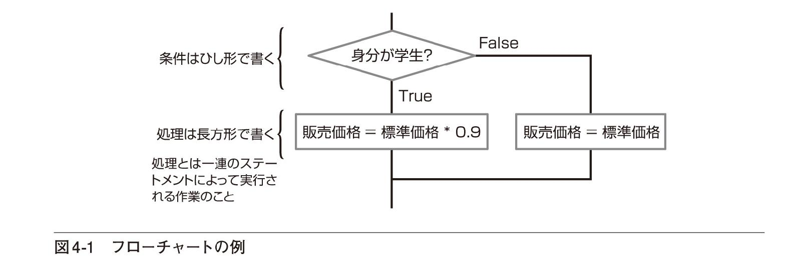
フローチャートでは、条件をひし形で表し、処理を長方形の箱で表します。処理の流れは線で示され、原則として上から下へ、左から右へと進みます。条件を示すひし形からは線が2本出ていることに注意してください。ここで処理が分岐します。
擬似コードとフローチャート
本書では、日常の言葉に近い書き方の擬似コードとフローチャートの両方を必要に応じて掲載し、処理の内容や流れが分かるようにします。
ところで、これまでは日常の言葉を使って、条件に指定できるのは「YESかNOで答えられること」と解説してきましたが、Visual Basicをはじめとするプログラミング言語では、True（真）かFalse（偽）かによって条件を判定します。Trueは条件として指定した式が成り立つこと、Falseは式が成り立たないことと考えるといいでしょう。したがって、厳密には「学生であれば」は「身分が学生であるということがTrueであれば」と考える必要があります。
図4-1のフローチャートでは、条件がTrueの場合、処理の流れは下方向に進みます。条件がFalseの場合、処理の流れは右方向に進みます。したがって、身分が学生であるという条件が成り立つときには、標準価格の10％引の価格（つまり標準価格に0.9を掛けた値）が販売価格になります。しかし、身分が学生であるという条件が成り立たないときには標準価格がそのまま販売価格になるわけです。
条件分岐の考え方についてはだいたい理解できたでしょうか。実際にはより複雑な条件判断が必要になることがありますが、次の節でコードの書き方を確認し、その中で分岐のさまざまなパターンについても見ていくこととしましょう。なお、先にプログラミングを体験してみたい人は4.5節の「プログラミングにチャレンジ」に取り組んでいただいても構いません。その後、じっくりと解説を読み進めていってください。また、これ以降の章も同じように読み進めていただいて構いません。
確認問題
1. 以下の文章のうち正しいものには○を、間違っているものには×を記入してください。
（ ） コンピューターは人間の直感にあたるような機能を持っているので、あいまいな状況でも適切に判断ができる
（ ） 条件によって異なる処理をすることは人間にのみ可能であって、コンピューターにはできない
（ ） プログラムで条件分岐を行うには、YESかNO（TrueかFalse）が決められる明確な基準が必要である
（ ） 処理の流れを表すフローチャートで、条件分岐は長方形の箱で表される
4.2 Ifステートメントを利用する
条件分岐を利用したプログラムを作成するには、どのような条件のときに何を実行するか、あらかじめ明確にしておく必要があります。そのうえで、Visual Basicの文法に従ってコードを書いていきます。簡単な例から少しずつ複雑なものへと進めていきます。急がず確実に理解を深めていってください。
■条件が満たされたときに処理を実行するIf ... Then ... ステートメント
IfTest1
簡単な例から始めます。まず、65歳以上の人は会費を2割引にするという例を考えてみましょう。割引率を求めるための処理を日本語の擬似コードで表すと以下のようになります。
もし年齢が65以上であれば 割引率に0.2を代入する条件分岐はIfステートメントを使って書きます。「もし」にあたるキーワードがIfで、「であれば」にあたるキーワードがThenです。年齢がAgeという変数に入っていて、割引率をDiscountRateという変数に入れるのであれば、以下のようにコードが書けます。
If Age >= 65 Then DiscountRate = 0.2 ●───Ageの値が65以上であれば、DiscountRateに0.2を代入する条件はAge >=65で、条件を満たしたときにはDiscountRate =0.2が実行されます。この程度であれば、コードを見るだけでだいたいの意味は想像できるでしょう。しかし、自分でコードを書くためには書き方や意味を正確に知っておく必要があります。図4-2で書き方を確認した後、ポイントを確認しておきましょう。
Ifの後には条件を表す式を書き、Thenの後にその条件が満たされたとき（式の値がTrueのとき）に実行するステートメントを書きます。条件が満たされないときには、何もせずに次のコードに進みます。ステートメントは、あまりなじみのない言葉かもしれませんが「文」といった意味です。
この書き方では、Ifから始まるコードをすべて1行で書かなくてはならないことに注意してください。したがって、複雑なステートメントを書くのには、この書き方は向いていません。もう少し柔軟性のある書き方については後で説明します。
コードスニペットを利用して自動的にコードを入力する
「If条件」まで入力しキーを押して改行すると、コードスニペットの働きにより自動的に「Then」と「End If」が入力され、P.130の複数行形式のIfステートメントになります。
Ifステートメントの意味についてもう少し考えてみましょう。図4-2では、Ifの後に条件を書くと記されていますが、正確にはTrue（真）かFalse（偽）の値が求められる式を書きます。条件を表すために使う比較演算子や論理演算子については、すでにP.108の表3-5で触れていますが、数学の大小比較とほぼ同様の書き方です。例えば、「If Age >=65 Then」の正確な意味は「Ageが65以上であるという式がTrueであれば」ということになります。
したがって、以下のような書き方もできます。
Dim ReverseFlag As Boolean :If ReverseFlag Then xDirection = -1 ●───ReverseFlagの値がTrueであればxDirectionに-1を代入する一見しただけでは条件が書かれていないように見えますが、ReverseFlagの値はTrueかFalseに決まるので、文法的に正しいステートメントです。なお、この例は、左右に移動する物体があって、状況に応じて移動方向が変わるような場合に利用できるコードです。ReverseFlagの値がTrueになると、移動方向を表す変数xDirectionの値が-1になるので、その値を移動量に掛けてやれば移動方向が反転するというわけです。
条件に数値を指定すると？
Visual Basicでは0がFalseと見なされ、0以外の数値はTrueと見なされます。したがって、あまり意味はありませんが、If1 Then ...というステートメントを書くこともできます。その場合、式は常にTrueとなるので、Then以下が必ず実行されます。
■条件が満たされないときの処理も書くIf ... Then ... Elseステートメント
IfTest1
次に、条件が満たされないときにも何らかの処理を実行する例を見てみましょう。スマートフォンなどの料金プランの中には、一定の限度額を超えたら定額にするというものがあります。そのような場合、擬似コードは以下のようになります。
料金が限度額を超えたら、料金に限度額を代入する。そうでなければ加算された料金を代入する「そうでなければ」にあたるキーワードは「Else」です。料金を表す変数をChargeとし、限度額をLIMITという定数とすれば、コードは以下のようになります。
Work = Charge + Count ●───これまでの料金に、新たに利用した金額を加えた値を作業用の変数Workに代入するIf Work > LIMIT Then Charge = LIMIT Else Charge = Work ●───Workの値がLIMITより大きければ、ChargeにLIMITの値を代入する。そうでなければ、ChargeにWorkの値を代入する
図4-3で書き方を確認しておきましょう。この書き方でもステートメントをすべて1行に書く必要があります。
Else以下を省略すると、図4-2の書き方と同じになります。
複数のステートメントを1行で書くには
複数のステートメントを書きたい場合には、ステートメントを1行にまとめるための区切り記号「：」を使って以下の例のようにします。
If x <= 0 Then x = 0: dirLeft = True Else x -= 1普通は、次の項で説明する複数行の形式でIfステートメントを書いたほうが、コードが見やすくなりますが、短いステートメントの場合、複数行に書くよりも「：」を使って1行にまとめたほうが見やすくなることがあります。
ここで示したIfステートメントの例は、スマートフォンの料金のほか、ゲームなどで主人公が壁のところまで移動したらそれ以上動けないようにする処理など、ある値を増やしていっても一定の限界を超えないようにするような場合に活用できるパターンです。なお、このような場合、Ifステートメントを使わず、小さい値を求めるためのMath.Minメソッドを使って
Charge = Math.Min(LIMIT, Work)と書くこともできます。LIMITとWorkの小さい方が求められるので、Chargeの値はLIMITを超えることはありません。
■より複雑な条件分岐にも対応するIf ... Then ... Else ... End Ifステートメント
IfTest2,ConvertTime2
これまで見てきたIfステートメントの書き方では、条件が満たされたときや条件が満たされないときに実行できるステートメントは1つだけでした。しかし、実際にプログラムを作るときには、Ifの中で複数のステートメントを実行したいこともよくあります。そのような場合は、Ifの最後をEnd Ifで閉じ、Thenの範囲やElseの範囲を明確にします。これまで見てきた例を複数行の形式で書き直してみましょう（LIST4-1）。
4-1 複数行形式のIfステートメント
If Age >= 65 Then DiscountRate = 0.2 ●───Ageの値が65以上であれば、DiscountRateに0.2を代入するEnd IfWork = Charge + Count ●───これまでの料金に、新たに利用した金額を加えた値を作業用の変数Workに代入するIf Work > LIMIT Then Charge = LIMIT ●───Chargeの値がLIMITより大きければ、ChargeにLIMITの値を代入するElse Charge = Work ●───そうでなければ、ChargeにWorkの値を代入するEnd If処理内容は前項で見たものと同じで、Then以下のステートメントやElse以下のステートメントも1行しか書いていませんが、こちらのほうがずいぶんと見やすいはずです。ごく簡単なIfステートメントであれば前項の書き方でも構いませんが、一般にはこちらの書き方のほうがいいでしょう（図4-4）。
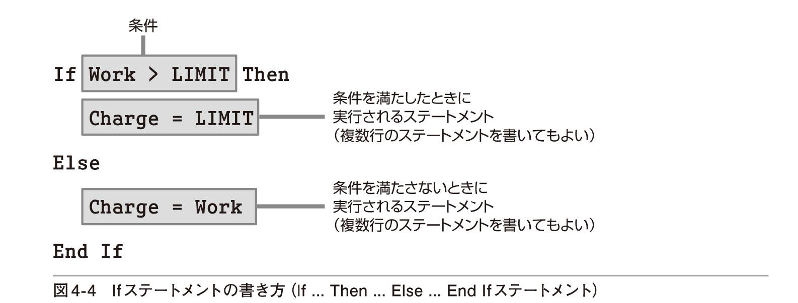
このように書くと、条件を満たしたときに実行されるステートメントの範囲と、条件を満たしていないときに実行されるステートメントの範囲がはっきりと区別できます。
もちろん、「実行されるステートメント」の箇所には、複数のステートメントを書くことができます。そういった例も含めていくつかの実用的な例を見ておきましょう。まず、文字列の長さを調べる例です（LIST4-2）。
4-2 文字列の長さが8文字未満ならメッセージを表示する
If UserName.Length() < 8 Then ●───UserNameという文字列の長さが8文字未満なら MessageBox.Show("8文字以上入力してください") ●─── メッセージを表示するEnd Ifこの例では、UserNameはString型の変数とします。String型の変数では、長さを求めるためのLengthというメソッドが使えます。つまり、変数名.Length()と書くことにより、文字列の長さが求められます。
では、別の例も見てみましょう。TextBoxコントロールに入力された文字列が整数に変換できなかったら、メッセージを表示し、もう一度そのTextBoxコントロールに入力できるようにする例です（LIST4-3）。この例は「分」が整数に変換できる文字列かどうかというチェックのみなので、実際に動くプログラムにするためには「時」のチェックも必要です。Chapter3のConvertTimeプロジェクトに、そういったチェックを付け加えたプロジェクトをConvertTime2という名前で用意しておきました。ぜひ、ダウンロードしてコードと動作を確認してみてください。
4-3 TextBoxコントロールに整数と見なせる数字が入力されていないときに再入力できるようにする
If Integer.TryParse(txtMinute.Text, WorkingMinute) = False Then MessageBox.Show("数値が入力されていません") ●─── メッセージを表示する txtMinute.Focus() ●───txtMinuteにフォーカスを移動する txtMinute.SelectAll() ●───txtMinuteのテキスト全体を選択する Exit Sub ●───プロシージャを抜けるElse WorkingTime = WorkingHour + WorkingMinute / 60End IfInteger.TryParseは、文字列を整数に変換するためのメソッドです。CInt関数と似ていますが、Integer.TryParseメソッドでは小数を表す文字列を指定すると変換ができません。CInt関数では小数を表す文字列を指定すると、その小数を四捨五入した整数が求められます（P.102、P.116参照）。また、Integer.TryParseメソッドでは文字列が整数に変換できない場合には、Falseが結果として返されますが、CInt関数では例外が発生します（例外についてはChapter9を参照）。
Integer.TryParseメソッドの書き方は次のとおりです（図4-5）。
文字列が整数と解釈できる場合には、整数型の変数に変換結果が入れられます。正しく整数に変換できた場合にはこのメソッドの結果はTrueとなり、整数に変換できない場合には、結果がFalseとなります（図4-6）。

関数やメソッドの結果が何らかの値になることを、関数やメソッドが値を返すといいます。返された値は変数に代入したり、Ifステートメントの条件判断に使うことができます。
TextBoxコントロールのFocusメソッドは、そのコントロールを入力できる状態にするためのメソッドです。また、SelectAllメソッドは、TextBoxコントロールに入力されているすべての文字列を選択された状態にするメソッドです。なお、コントロールが入力できる状態にあることをフォーカスがあるといい、入力できるコントロールを変更することをフォーカスを移動するといいます。
■複数の条件を組み合わせる
これまでのIfステートメントには条件が1つしかありませんでしたが、複数の条件について調べなくてはならない場合もあります。例えば、コレステロール値が110以上250以下であれば、標準の範囲であるものとするとか、学科試験の成績が90点以上、かつ、実技試験の成績が80点以上で合格とするとか、成績の評価が「S」または「A」であれば給付金の対象となる、などさまざまな例があるはずです。And演算子やOr演算子を利用すると、このような複数の条件を組み合わせることができます。順に見ていきましょう。
■And演算子
IfTest3
And演算子は論理積を求めるための演算子で、Andの前後に書いた式が両方ともTrueであれば結果がTrueになります。簡単にいえば、2つの条件の両方が成立するときだけ、条件が成立することになります。1つでも条件が成立しないと、全体の条件は成立しません。LIST4-4は、コレステロール値が標準値の範囲内に入っているかどうかを調べる例です。コレステロール値はCholという変数に入っているものとし、この値が110以上、250以下であれば「標準値の範囲内です」をMessageに代入し、そうでなければ「標準値の範囲外です」をMessageに代入します。
4-4 変数の値が一定の範囲に入っているかどうかを調べる例
If Chol >= 110 And Chol <= 250 Then ●─── Cholの値が110以上であり、かつ、Cholの値が250以下であれば Message = "標準値の範囲内です"Else Message = "標準値の範囲外です"End IfCholの値が110以上、250以下というのは、日常の感覚では以下のように書きたくなります。しかし、これでは必ずしも正しく動作しないので注意が必要です。
If 110 <= Chol <= 250 Then例えば、Cholの値が300の場合を考えてみましょう。まず
110 <= Chol ●─── 110 <= 300は成り立つので、この結果はTrueが実行されるので、この値はTrueになります。この結果と250を比較して
True <= 250 ●───True(-1) <= 250は成り立つので、この結果もTrueが実行されますが、これもTrueになります。なぜなら、整数型の変数に代入したり、整数と比較したりするときにはTrueは-1と見なされるからです※1。とすると、Cholの値が300であるにもかかわらず、110以上、250以下の範囲に入っていることになってしまい、正しい結果が得られません。
したがって、変数の値がある範囲に入っているかどうかを調べたいときには、LIST4-4に示したように「下限値以上であり、かつ上限値以下である」というような式を書く必要があります。なお、Option StrictをOnにしていると、データ型の違いが厳密にチェックされるので、正しく動作しない場合の書き方ではエラーになります。
別の例を見てみましょう。複数の変数を使った条件を組み合わせることもできます。LIST4-5は、筆記試験の成績と実技試験の成績がいずれも基準値を満たしていれば合格とする例です。筆記試験の成績はExamScoreに、実技試験の成績はSkillScoreに入っているものとします。ExamScoreが90以上であり、かつSkillScoreが80以上である場合のみ合格とします。
4-5 複数の変数がすべて基準値以上であるかを調べる例
If ExamScore >= 90 And SkillScore >= 80 Then Grade = "合格"Else Grade = "不合格"End If※1 Trueを整数として扱うと-1になり、Falseを整数として扱うと0になります。一方、整数を真偽値として扱うときには0以外がTrue、0がFalseとして扱われます（P.128を参照してください）。
■Or演算子
IfTest4
Orは論理和を求める演算子で、Orの前後に書いた式のどちらかがTrueであれば結果がTrueになります。こちらは、いずれか1つの条件が成立すれば、全体の条件が成立することになります。もちろん、両方の条件が成立していても構いません。例を見てみましょう。成績の評価が「S」または「A」であれば給付金の対象であることを表示してみます。成績の評価がGradeという変数に入っているものとすれば、LIST4-6のように書けます。
4-6 変数の値がいずれか1つに一致するかどうかを調べる例
If Grade = "S" Or Grade = "A" Then Message = "給付金の対象となります"Else Message = "給付金の対象となりません"End If念のため、複数の変数を使った条件の例についても見ておきましょう。第1回の試験の成績と第2回の試験の成績のいずれかが基準値を満たしていれば合格とする例です。第1回の成績はFirstScoreに、第2回の成績はSecondScoreに入っているものとします。第1回の合格基準を90点以上とし、第2回の合格基準を80点以上とすればLIST4-7のように書けます。もちろん、両方の成績が基準点以上であっても合格です。
4-7 複数の変数のいずれかが基準値以上であるかを調べる例
If FirstScore >= 90 Or SecondScore >= 80 Then Grade = "合格"Else Grade = "不合格"End If■AndAlso演算子とOrElse演算子
IfTest5
And演算子やOr演算子に似た演算子にAndAlso演算子とOrElse演算子があります。これらは、見た目の動作としてはAnd演算子やOr演算子と同じですが、処理効率のいい演算子です。それぞれ詳しく見てみましょう。
■AndAlso演算子
AndAlso演算子では、前に指定した式がFalseなら後ろの式を評価せずに（調べずに）、結果としてそのままFalseを返します。And条件の場合、両方の式がTrueである場合にだけ結果がTrueになるので、最初の式がFalseであればその時点で結果がFalseであることは明らかだからです。And演算子は両方の式を評価しますが、AndAlso演算子は不必要な式の評価はしないというわけです。LIST4-8はAnd演算子のところで見た例と同じ処理を、AndAlso演算子を使って書いたものです。
4-8 AndAlso演算子の利用例
If ExamScore >= 90 AndAlso SkillScore >= 80 Then Grade = "合格"Else Grade = "不合格"End Ifこの例では、ExamScoreが90未満であればその時点でFalseだと分かるので、後のSkillScore >=80は調べる必要がありません。その場合は、すぐにElseの後のステートメントを実行します。
■OrElse演算子
一方のOrElse演算子では、前に指定した式がTrueなら後ろの式を評価せずに、結果としてそのままTrueを返します。Or条件の場合、いずれかの式がTrueであれば、結果がTrueになるので、最初の式がTrueであればその時点で結果がTrueであることは明らかだからです。Or演算子は両方の式を評価しますが、OrElse演算子は不必要な式の評価はしないというわけです。LIST4-9はOr演算子のところで見た例と同じ処理を、OrElse演算子を使って書いたものです。
4-9 OrElse演算子の利用例
If Grade = "S" OrElse Grade = "A" Then Message = "給付金の対象となります"Else Message = "給付金の対象となりません"End Ifこの例では、Gradeが「S」であればその時点でTrueだと分かるので、後のGrade = "A"は調べる必要がありません。その場合はすぐにThenの後のステートメントを実行します。
AndAlso演算子やOrElse演算子でなければできないこと
IfTest6
AndAlso演算子やOrElse演算子は、後ろの式が前の式に依存するような場合に便利です。例えば、以下のコードでは、objという変数がrbOptionというRadioButtonコントロールであり、かつCheckedプロパティがTrueであるとき、メッセージを表示します。
If obj Is rbOption And obj.Checked Then MessageBox.Show("ラジオボタンがチェックされています")End IfIs演算子は、変数が同じオブジェクトを参照しているかを調べる演算子です。要するにobjがrbOptionというコントロールであるかどうかを調べています（オブジェクトを参照する変数については8.2節で詳しく説明します。とりあえずはこう考えておいてください）。
この場合、もしobjがrbOptionでなく、CheckedプロパティのないLabelコントロールなどを参照していると、Andの後ろのobj.Checkedという部分が実行時にエラーとなってしまいます。And演算子を使った場合は、両方の式を調べるので、objがrbOptionであるかどうかにかかわらず、obj.CheckedがTrueであるかどうかも調べられてしまうからです。Trueかどうか以前に、LabelコントロールにはそもそもCheckedプロパティがないわけですから、当然エラーになるわけです。
しかし、以下のようにAndの代わりにAndAlsoを使えば、obj Is rbOptionという式がTrueであるときだけobj.CheckedがTrueであるかどうかが調べられます（obj Is rbOptionがFalseであれば、その時点でFalseとなるのでobj.Checkedを調べることはありません）。したがって、objが参照しているコントロールがLabelコントロールなどであっても実行時にエラーとならず、正しく条件分岐ができます。
If obj Is rbOption AndAlso obj.Checked Then MessageBox.Show("ラジオボタンがチェックされています")End If確認問題
1. 以下の文章のうち正しいものには○を、間違っているものには×を記入してください。
（ ） Ifステートメントの条件にあたる部分には、結果がTrueかFalseになる式を書く
（ ） Ifステートメントの中に、区切り記号「：」を使わず複数のステートメントを書きたいときには、最後にEnd Ifを書く
（ ） Ifステートメントには必ずElseキーワードを書く必要がある
（ ） Or演算子を使うと、少なくとも一方の条件を満たすときに処理を実行するIfステートメントが書ける
2. 説明に従って以下の空欄を埋め、Ifステートメントを完成させてください。
（1） If（ ）Then ●───変数apXの値が100を超えたら apX = 0 ●─── apXに0を代入する End If（2） If（ ）Then ●───変数OptionFlagの値がTrueであれば btnOption.Focus() ●───btnOptionにフォーカスを移動
（ ） ●─── そうでなければ
txtName.Focus() ●─── txtNameにフォーカスを移動 End If（3） If Confirm = "Y"（ ）NeedConfirm = False Then ●───Confirmの値が"Y"であるか、NeedConfirmの値がFalseであれば lblOrder.Text = "注文処理を実行しました" ●─── lblOrderに「注文処理を実行しました」と表示 End If4.3 Ifステートメントによる多分岐
前節では、簡単な例から条件を組み合わせて指定する例までを見ましたが、基本的には、条件が満たされた場合と条件が満たされない場合の2つに分岐するだけでした。しかし、現実にはより複雑に分岐することがあります。この節では、Ifステートメントの中にさらにIfステートメントがあるような場合について見ていきます。
■Ifステートメントを入れ子にする
NestTest1
Ifステートメントを組み合わせると、これまでに見たような2分岐の処理だけでなく、多くの場合分けがある多分岐の処理を書くこともできます。具体例で見てみましょう。あらかじめ決められたランクと購入金額により会員の種別を決めるような処理を想像してみてください。
まず、会員のランクが「A」であるかそうでないかによって、どの会員になれるかが決まるものとします。会員ランクが「A」の場合、購入金額が10,000円以上であればプレミアム会員になれますが、そうでなければゴールド会員となります。会員ランクが「A」でない場合、購入金額が20,000円以上であればゴールド会員になれますが、そうでなければ通常会員となります。日本語の擬似コードでこの処理を書いてみましょう。
もし 会員のランクが「A」であれば もし、購入金額が10,000円以上であれば プレミアム会員とする そうでなければ ゴールド会員とするそうでなければ もし、購入金額が20,000円以上であれば ゴールド会員とする そうでなければ 通常会員とするちょっと見ただけでは、何がどうなっているのか分からない人もいるでしょう。最初は会員のランクが「A」であるかどうかで分岐します。その次は購入金額がいくらであるかで分岐します。分かれ道の先にまた分かれ道があるようなイメージを思い浮かべるといいでしょう。フローチャートにすると、流れが理解しやすくなります（図4-7）。
① ランクによる条件分岐
② ランクが「A」のときの購入金額による条件分岐
③ ランクが「A」でないときの購入金額による条件分岐
フローチャートのひし形1つがIfステートメント1つにあたるので、それをそのまま表現するだけでコードが書けます。会員のランクがCustomerRankという変数に入れられており、購入金額がSalesという変数に入れられているものとしましょう。会員の種別はlblGradeというLabelコントロールに表示するものとします。すると、コードはLIST4-10のようになります。まずはコードをざっと眺めておいてください。その後、詳しい説明をします。
4-10 会員のランクと購入金額により会員種別を決めるコードをIfステートメントの入れ子で書く
If CustomerRank = "A" Then ●―――CustomerRankが"A"であれば If Sales >= 10000 Then ●―――Salesが10000以上であれば lblGrade.Text = "プレミアム会員" Else ●―――そうでなければ（Salesが10000以上でなければ） lblGrade.Text = "ゴールド会員" End IfElse ●―――そうでなければ（CustomerRankが"A"でなければ） If Sales >= 20000 Then ●―――Salesが20000以上であれば lblGrade.Text = "ゴールド会員" Else ●―――そうでなければ（Salesが20000以上でなければ） lblGrade.Text = "通常会員" End IfEnd IfIf ... Then ... Else ... End Ifの書き方はこれまでと同じですが、Thenの後やElseの後に、さらにIfステートメントが書かれています。このように、Ifステートメントの中にさらにIfステートメントを書くことを入れ子とかネストと呼びます。
まず、条件は後回しにして、明確にしておくべきことが1つあります。それは、結果として何が欲しいかということです。ここで欲しいものは会員の種別です。もっと具体的にいうと、
lblGrade.Text = "プレミアム会員"lblGrade.Text = "ゴールド会員"lblGrade.Text = "通常会員"のいずれかを実行したいということです。これらのコードを条件によってどう振り分けるか、というのが課題となるわけです。
では、このようなコードが確実に書けるように、入れ子の作り方を見ていきましょう。どんなに複雑な入れ子でも、鉄則は上位のレベルから順に考えていくということです。この例では、まずCustomerRankが"A"であるか、そうでないかによって異なる処理をします。まだ細かな処理について考える必要はありません。フローチャートの①にあたる部分からおおまかに考えましょう。図にすると図4-8のようになります。簡単な2分岐なのでこれまでの知識で十分理解できるはずです。
次に、CustomerRankが"A"であるときの処理の中身を考えます。これはフローチャートの②にあたる部分です。上位のレベルも下位のレベルも考える必要はありません。このレベルだけを考えます。Salesの値によってプレミアム会員にするかゴールド会員にするかという条件分岐であることが分かります（図4-9）。
CustomerRankが"A"でないときの処理の中身も同じように考えることができます。これはフローチャートの③にあたる部分です（図4-10）。
上位のレベルの処理を洗い出した後、続いて下位のレベルの処理をすべて洗い出せば、あとはそれらをすべて組み合わせて書くだけです。図4-9と図4-10を、最初の図4-8に埋め込んでやれば、Ifステートメントの入れ子が完成していることに気付くと思います。また、得られる会員種別にも漏れがなく、条件によってきちんと結果が求められることも分かります。
■ElseIfを利用した多分岐
NestTest2
条件が満たされないときに、さらに条件分岐していく場合にはElseIfというキーワードを使って簡潔に多分岐のステートメントを書くことができます。例えば、得点が60点未満のときは評価を「不可」とし、60点以上70点未満のときは評価を「可」、70点以上80点未満のときは「良」、80点以上のときは 「優」とする例を考えてみましょう。この場合も、結果として欲しいものを最初に洗い出しておきます。結果は「不可」「可」「良」「優」のいずれかで、それ以外はありません。問題は、これらを条件によってどう振り分ければいいかということです。日本語で書いた擬似コードは以下のようになります。
もし 得点が60点未満であれば 評価を不可とするそうでなければ もし 得点が70点未満であれば 評価を可とする そうでなければ もし 得点が80点未満であれば 評価を良とする そうでなければ 評価を優とするこのように「〜以上〜未満」という条件がいくつもあり、それらの条件によって複数の場合分けをするときには、端から順に考えていくと分かりやすくなります。最初は60未満について考え、次にそうでない場合のうち70未満について考え、次にそうでない場合のうち80未満について考える......という具合です。「であれば」や「そうでなければ」の次の行を字下げして書くのが分かりやすくするためのコツです。
この例についてもフローチャートで処理の流れを見ておきましょう（図4-11）。
① 得点が60点未満であるかどうかによる条件分岐
② 得点が70点未満であるかどうかによる条件分岐
③ 得点が80点未満であるかどうかによる条件分岐
このフローチャートは、これまでのフローチャートとTrueとFalseの向きが異なることに注意してください。これまでと同じようにTrueを下方向に、Falseを横方向に書くこともできますが、横長になってしまうので向きを変えて多分岐であることがよく分かるようにしただけのことです。
このように表しても、ひし形1つがIfステートメント1つにあたります。得点がScoreという変数に入れられており、評価をGradeという変数に入れるのであれば、コードはLIST4-11のようになります。これについてもコードをざっと眺めておいてください。後で考え方を詳しく説明します。
4-11 得点により何段階かの評価を決めるコードをElseIfによる多分岐で書く
If Score < 60 Then ●―――Scoreが60未満であれば Grade = "不可"ElseIf Score < 70 Then ●―――そうではなく（Scoreが60以上であり）、Scoreが70未満であれば Grade = "可"ElseIf Score < 80 Then ●―――そうではなく（Scoreが70以上であり）、Scoreが80未満であれば Grade = "良"Else ●―――そうでなければ（Scoreが80以上であれば） Grade = "優"End Ifでは、このようなコードを確実に書くための考え方を説明しましょう。すでに少し触れましたが、基本は「端から考える」です。まず、得点が60点未満の場合と、そうでない場合に分けます。得点が60点未満の場合は評価を「不可」とします。そうでない場合は「可」「良」「優」のいずれかになりますが、ここではまだ考えません。それが図4-12の①の部分です。
次に、「そうでない場合（得点が60点以上の場合）」のことを考えます。これは図4-12の②の部分です。得点が70点未満の場合は評価を「可」とします。そうでない場合は「良」「優」のいずれかになりますが、やはりまだ考えません。
最後に、「そうでない場合（今度は得点が70点以上の場合）」を考えます。これが図4-12の③の部分です。すると、得点が80点未満の場合は評価が「良」であり、そうでない場合は評価が「優」となることが分かります。これですべての場合が洗い出されました。

① 得点が60点未満であるかどうかを考える。60以上のときはまだ考えない
② 得点が70点未満であるかどうかを考える。70以上のときはまだ考えない
③ 得点が80点未満であるかどうかを考える
この図をそのままコードにすると、以下のようになります。最初に書いた擬似コードともほぼ同じです。
If Score < 60 Then Grade = "不可"Else If Score < 70 Then Grade = "可" Else If Score < 80 Then Grade = "良" Else Grade = "優" End If End IfEnd IfこのコードのElse IfはElseIfという1つのキーワードにできます。また、最後のEnd Ifは1つにまとめられます。そうすれば、図4-13の右側のような簡潔なコードにできます。
ElseとIfの間にはスペースが入らないことに注意してください。ただし、実際に入力するときには途中にスペースを入れてElse Ifと入力しても、自動的に1つの単語に訂正されます。書き方をまとめると、次のようになります（図4-14）。
実用的には、これまでのように順を追って考えなくても、1つのパターンとして覚えておいても構わないでしょう。実際、条件1が満たされたときには最初のステートメントを実行し、それ以外の場合で条件2が満たされたときには次のステートメントを実行し、......という具合に書いていけば間違いありません。
条件分岐はさまざまな表し方がある
どんな場合でも、条件の指定方法には何通りかの方法があります。例えば「65歳以上」というのは「65歳未満ではない」というのと同じことです。「○○という条件にあてはまっている場合で、△△という条件にあてはまる場合」も入れ子で表したり、And演算子やAndAlso演算子を使って表したりできます。例えば、LIST4-10の例も、以下のように表せます。
If CustomerRank = "A" AndAlso Sales >= 10000 Then lblGrade.Text = "プレミアム会員" ElseIf CustomerRank = "A" OrElse Sales >= 20000 Then lblGrade.Text = "ゴールド会員" Else lblGrade.Text = "通常会員" End If行数は少なくて済みますが、これでは条件が複雑になりすぎて何を判定しているのかがきわめて分かりにくくなります。実際には、入れ子にしたほうが分かりやすい場合も、And演算子やOr演算子を使ったほうが分かりやすい場合もあり、いちがいにどちらがいいとはいえませんが、できるだけ人間が読んでもスッキリと分かる書き方にしてください。条件が分かりにくいと、本来あてはまるべき条件にあてはまらない値が出てくるなど、思わぬエラーのもととなるからです。後でプログラムを修正する必要が生じた場合にも、条件が分かりにくいと作業の効率が落ちてしまいます。分かりやすいコードを書くには、この節で説明したように、上位のレベルから考えるのが基本です。
確認問題
1. 説明に従って以下の空欄を埋め、Ifステートメントを完成させてください。
（1） ウェストのサイズによって、S、M、L、LLを決める
If Waist < 64 Then ●―――Waistが64未満であれば ItemSize = "S" ●―――ItemSizeに"S"を代入する （ ）Waist < 70 Then ●―――上記にあてはまらず、Waistが70未満であれば （ ）ItemSize = "M" ●―――ItemSizeに"M"を代入する Waist < 77 Then ●―――上記にあてはまらず、Waistが77未満であれば ItemSize = "L" ●―――ItemSizeに"L"を代入する （ ） ●―――上記にあてはまらなければ ItemSize = "LL" ●―――ItemSizeに"LL"を代入する End If。（2） TextBoxコントロールに整数と見なせる数字が入力されているかどうかを調べる
If Integer.TryParse(txtHour.Text, WorkingHour) = False Then ●―――txtHourに入力されている文字列を整数に変換しWorkingHourに入れる。変換できなければ以下のコードを実行する MessageBox.Show("時間が正しく入力されていません") txtHour. （ ） ●―――txtHourにフォーカスを移動 txtHour. （ ） ●―――txtHourに入力されている文字列を選択する Integer.TryParse(txtMinute.Text, WorkingMinute) = ⇒ ●―――上記以外で、txtMinuteに入力されている文字列を整数に変換し、WorkingMinuteに入れる。変換できなければ以下のコードを実行する False Then MessageBox.Show("分が正しく入力されていません") txtMinute. （ ） ●―――txtMinuteにフォーカスを移動 txtMinute. （ ） ●―――txtMinuteに入力されている文字列を選択する （ ） ●―――上記以外であれば WorkingTime = WorkingHour + WorkingMinute / 60 lblTime.Text = WorkingTime.ToString() End If2. 上記の（2）で、時間が24以上になったり、分が60以上になった場合にもエラーメッセージを表示するコードを追加してみてください。
4.4 Select Caseステートメントによる多分岐
1つの式や変数の値によって何通りかの異なる処理をしたい場合には、Ifステートメントによる多分岐よりもSelect Caseステートメントを使った多分岐が便利です。例えば、指定された日付が何月であるかによって実行する処理を変えたり、いくつかの（例えば1番から4番までの）選択肢のどれを選んだかによって実行する処理を変えたりするときに使えます。値の範囲や大小比較もできます。
■多分岐を簡潔に書く
CaseTest1
Select Caseステートメントを使うと便利な処理の例を見てみましょう。日本では1月は「睦月」、2月は「如月」......のように月に和名が付けられています。このような場合、何月であるかによって、月の和名が決まります。つまり、月を表す数値を指定すれば、それに対応する文字列が求められるわけです。
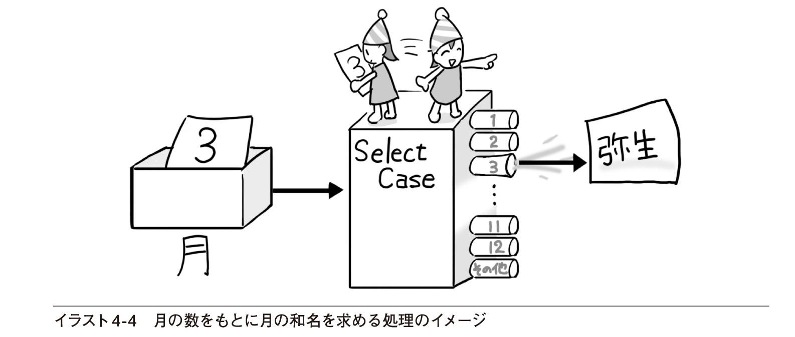
処理そのものは簡単なので、擬似コードやフローチャートを描くまでもないでしょう。月を表す数値がMonthNumberという変数に入れられており、求めたい月の和名をMonthNameという変数に入れるものとして、さっそくコードを書いてみましょう（LIST4-12）。
4-12 月を表す数値をもとに、月の和名を求める
MonthNumber = Today.Month Select Case MonthNumber Case 1 MonthName = "睦月" Case 2 MonthName = "如月" Case 3 MonthName = "弥生" Case 4 MonthName = "卯月" Case 5 MonthName = "皐月" Case 6 MonthName = "水無月" Case 7 MonthName = "文月" Case 8 MonthName = "葉月" Case 9 MonthName = "長月" Case 10 MonthName = "神無月" Case 11 MonthName = "霜月" Case 12 MonthName = "師走" Case Else MonthName = "不明" End Select最初の行は、今日の日付から月の値を求めるためのコードです。Todayは現在の日時を表すDate型の値を返し、さらにMonthプロパティは月の値を整数として返します。これで、今日の月がMonthNumberに代入されます。理詰めで表現するとけっこう難しくなりますが、要するにToday.Monthと書けば月の値が求められるというわけです。
続く、Select Caseが多分岐のためのステートメントです。Select Caseの後には値を調べたい式を書きます。この例では、月を表す数値を調べるので、MonthNumberという変数を書いています。その後に、それぞれの場合によって実行する処理を書きます。場合分けはCaseの後に書いた式の値と一致するかどうかで決められます。値が一致すればそこに書かれているステートメントを実行し、それ以外のステートメントは実行されません。どの値にも一致しない場合はCase Elseの後に書かれているステートメントを実行します。最後にEnd Selectを書いて終わりです。書き方をまとめておきましょう（図4-15）。
ここでは、それぞれの場合に実行するステートメントを1つずつしか書いていませんが、複数のステートメントを書くこともできます。さらに、Caseの後の式には複数の値を書いたり、値の範囲を書いたりすることもできます。便利な使い方ができるので、いくつかのパターンを見ておきましょう。
■複数の値と一致させる例
CaseTest2
Caseの後には、複数の値を「,」（カンマ）で区切って書くこともできます。その場合、それらの値のいずれかに一致すれば、Caseの後のステートメントが実行されます。色の名前をもとに、ウェブページなどで使われるカラーコードを求める例で見てみましょう。例えば、「red」という色の名前から「#FF0000」というカラーコードを求めます。「cyan」と「aqua」はいずれも同じ色で、カラーコードは「#00FFFF」です。また「magenta」と「fuchsia」も同じ色で、カラーコードは「#FF00FF」です。色の名前がColorNameという変数に入っており、求めたいカラーコードをColorCodeという変数に入れるのであれば、LIST4-13のようなコードが書けます。
4-13 色の名前からカラーコードを求める
Select Case ColorName ●―――ColorNameの値によって処理を振り分ける Case "red" ●―――"red"に一致する場合 ColorCode = "#FF0000" Case "cyan", "aqua" ●―――cyan"または"aqua"に一致する場合 ColorCode = "#00FFFF" Case "magenta", "fuchsia" ●―――"magenta"または"fuchsia"に一致する場合 ColorCode = "#FF00FF"End Selectこの例では、Case Else以下が書かれていないので、どの値にも一致しない場合は何もせずに次に進みます。
■値の範囲を指定する例
CaseTest3, CaseTest4
Caseの後には値の範囲も指定できます。書き方は以下の2通りです。
式1 To 式2 ●―――式1の値から式2の値までIs 比較演算子 式 ●―――式の値より小さい、より大きいなど例えば、年度を3か月ごとに、第1四半期、第2四半期、第3四半期、第4四半期と4つに分けることがあります。年度が4月から始まるとすると、4月から6月が第一四半期となります。月をもとに、その月が第何四半期であるかを求めるコードを書いてみましょう。月がMonthNumberという変数に入っており、第何四半期であるかをTermNumberという変数に入れるのであればLIST4-14のようなコードになります。
4-14 月を表す数値をもとに第何四半期かを求める
Select Case MonthNumber ●―――MonthNumberの値によって処理を振り分ける Case 4 To 6 ●―――4から6に一致する場合 TermNumber = 1 Case 7 To 9 ●―――7から9に一致する場合 TermNumber = 2 Case 10 To 12 ●―――10から12に一致する場合 TermNumber = 3 Case 1 To 3 ●―――1から3に一致する場合 TermNumber = 4End Select比較演算子を使う方法も見ておきましょう。Ifステートメントを使って書いた成績評価のコードも、Select Caseステートメントを使えば簡潔に書けます。得点がScoreという変数に入っており、評価をGradeという変数に入れるものとします（LIST4-15）。
4-15 得点をもとに成績の評価を求める
Select Case Score ●―――Scoreの値によって処理を振り分ける Case Is < 60 ●―――60未満の場合 Grade = "不可" Case Is < 70 ●―――70未満の場合 Grade = "可" Case Is < 80 ●―――80未満の場合 Grade = "良" Case Else ●―――上記以外の場合 Grade = "優"End SelectIsの後で使える比較演算子は、「<」「<=」「=」「>=」「>」です。さらに「,」（カンマ）で区切って複数の式を書くこともできます。ただし、以下のような書き方には注意が必要です。
Case Is >= 60, Is < 70この書き方では、60以上70未満の範囲を表すことはできません。「,」で区切って複数の式を書くと「または（Or）」の意味になるので、ここでの指定は60以上または70未満という意味になります。したがって、すべての値が一致することになってしまいます。しかし、「かつ（And）」を表そうとして
Case Is >=60 And Is < 70のように書いてもうまくいきません。これは文法的に正しくないのでエラーとなってしまいます。
Scoreが整数の場合、
Case 60 To 69と書けば、60以上70未満が表せます。
確認問題
1. 以下の文章のうち正しいものには○を、間違っているものには×を記入してください。
（ ） Select Caseステートメントを使えば、多分岐の処理が簡潔に記述できる
（ ） Select Caseの後には複数の式を書くことができ、それらの式がCaseの後に書かれた1つの値に一致するかどうかを調べられる
（ ） Select Caseの後には式を1つ書くことができ、その式がCaseの後に書かれたいくつかの値に一致するか、あるいは一定の範囲に入っているかどうかを調べられる
（ ） Caseの後に「,」（カンマ）で区切って複数の式を書くと「または」の意味になる
2. 説明に従って以下の空欄を埋め、Select Caseステートメントを完成させてください。
（1） （ ）（ ） Direction ●―――変数Directionの値を調べる Case DIRUP ●―――定数DIRUPと等しければ apY -= 1 ●―――apYを1減らす Case DIRDOWN ●―――定数DIRDOWNと等しければ apY += 1 ●―――apYを1増やす Case DIRLEFT ●―――定数DIRLEFTと等しければ apX -= 1 ●―――apXを1減らす Case （ ） ●―――上記以外の場合は apX += 1 ●―――apXを1増やす End（ ）（2） Select Case MemberID Mod 10 ●―――変数MemberIDを10で割った余りを調べる Case（ ） ●―――値が0か5であれば PrizeName = "特賞" Case（ ） ●―――値が5より小さければ PrizeName = "当選" Case Else PrizeName = "落選" End Select4.5 プログラミングにチャレンジ
4.1節から4.4節までで条件分岐についての基本的な知識を紹介したので、実践に移りましょう。ここでは標準価格から割引価格を求めるプログラムを作ります。割引価格は学生であるか株主であるかによって変わるものとします。プログラムの完成イメージをラフスケッチするところから始めましょう。
■割引価格を計算するプログラム
CalcPrice
多くの商品やサービスで、学生や会員などの条件による割引価格が適用されています。ここでも割引価格を求めるプログラムを作成してみます。標準価格は3,600円に決まっているものとして、学生であれば1割引、株主であれば1.5割引の割引価格を求めることとします。どの割引を適用するかはRadioButtonコントロールで選択できるようにします。プログラムの完成イメージはイラスト4-5のような感じです。
完成イメージが確認できたら、Windowsフォームアプリケーションの新しいプロジェクトを作成しておいてください。プロジェクト名はCalcPriceとします。続いて、フォームをデザインします。
■フォームのデザイン
画面4-1にならってフォームにコントロールを配置していきましょう。設定すべきプロパティは表4-1にまとめておきました。
① Textプロパティに文字列を設定していないので内容は表示されていないが、標準価格と販売価格を表示するためのLabelコントロールを配置する
■RadioButtonコントロールとコンテナー
RadioButtonTest
RadioButtonコントロールは本章ではじめて使うコントロールです。イベントハンドラーを書く前にRadioButtonコントロールの使い方を見ておきましょう。
RadioButtonコントロールは複数のコントロールでひとまとまりのグループになっていて、その中の1つだけが選択できるようになっています。例えば、RadioButtonコントロールをフォームに配置したとき、1つのRadioButtonコントロールをクリックしてチェックされた状態にすると、ほかのRadioButtonコントロールのチェック状態は解除されます。この場合はフォームに配置されたRadioButtonコントロールが1つのグループとして取り扱われていることになります。
では、図4-16のように、4つのRadioButtonコントロールを2つのグループに分けたいときにはどうすればいいでしょうか。
このままだと、フォーム上に配置した4つのRadioButtonコントロールが1つのグループになり、どれか1つだけしか選択できないようになってしまいます。例えば、［普通］にチェックされている状態のとき、［吉祥寺支店］をクリックすると、［普通］のチェックが外れてしまいます。
複数のグループに分けるには、ツールボックスの［コンテナー］の一覧にあるGroupBoxコントロールやPanelコントロールをフォームに配置し、その中にRadioButtonコントロールを配置します（画面4-2）。

これでグループが2つできました。それぞれのグループでRadioButtonコントロールが選択できるようになっています。左側のグループでの選択は右側のグループの選択には影響を及ぼしません。また、右側のグループでの選択も左側のグループの選択には影響を及ぼしません。このように、グループ化のために使われるGroupBoxコントロールやPanelコントロールのことをコンテナーと呼びます。フォームもコンテナーの1つです。イメージとしては図4-17のような感じです。
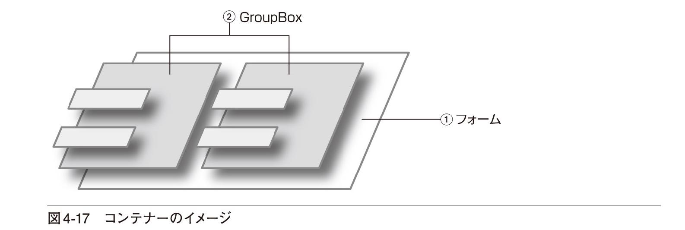
① フォームはGroupBoxコントロールのコンテナーとなっている
② GroupBoxコントロールはRadioButtonコントロールのコンテナーとなっている
RadioButtonコントロールのチェック状態を手動で設定するには
RadioButtonコントロールのAutoCheckプロパティをFalseに設定すると、ほかのRadioButtonコントロールをチェックしても、自動的にチェックが外されることがなくなります。この機能はRadioButtonコントロールをグループから外すためではなく、正しいRadioButtonコントロールがチェックされたかどうかを調べ、手動でチェック状態を変えるために使われます。
■イベントハンドラーの記述
RadioButtonコントロールの使い方が分かったところで、次はコードの記述です。コードの中心となるのはイベントハンドラーです。しかし、いきなりイベントハンドラーを書き始めるのは無理なので、イラスト4-6でおおまかな処理のイメージを確認し、どのような変数が必要になるかをあらかじめ洗い出しておきましょう。それだけでずいぶん見通しがよくなります。
RadioButtonを使ったり、条件によって場合分けをしたりはするものの、結局のところ求めたいものは販売価格です。したがって、販売価格を表す変数をまず宣言しておく必要があります。販売価格は極端に大きな数値にはならないのでInteger型を使いましょう。
Dim SalesPrice As Integer販売価格を求めるために利用できる値は、もちろん標準価格です。このプログラムでは標準価格を3,600円と決めているので、定数として宣言すればいいでしょう。
Const StandardPrice As Integer = 3600割引の条件はRadioButtonコントロールの状態を調べれば分かるので、特に変数は必要なさそうです。また、割引率も販売価格を計算する式の中でリテラルとして書けばいいので、宣言は必要なさそうです。
変数や定数を宣言するときには、スコープも重要になってきます。つまり、変数や定数をどこで使うかによって宣言の場所が変わるからです。そこで、変数や定数が使われるイベントハンドラーを洗い出してみましょう。プログラムの実行や操作の流れにそって、それぞれのコントロールについて考えてみると、表4-2のような3つのイベントハンドラーが必要であると分かります。
（注）フォームのLoadイベントハンドラーはフォームがはじめて表示される直前に呼び出され、RadioButtonのCheckedChangedイベントハンドラーは、RadioButtonがクリックされチェック状態が変わったときに呼び出されます。
注意すべき点は複数のイベントハンドラーで使われる変数や定数です。表を見ると、標準価格（StandardPrice）が複数の場所で使われることが分かります。フォームのLoadイベントハンドラーとRadioButtonのCheckedChangedイベントハンドラーです。このような変数や定数はモジュールレベルで宣言する必要があります。プロシージャレベルで宣言すると、複数のイベントハンドラーで共通に使うことができません。
一方、販売価格（SalesPrice）はRadioButtonコントロールのCheckedChangedイベントハンドラーでしか使われないということが分かります。したがって、販売価格はプロシージャレベルで宣言します。
以上で、必要な変数と変数のスコープ、イベントハンドラーが洗い出せました。では、イベントハンドラーの内容を見てみましょう。
■フォームのLoadイベントハンドラー
フォームがはじめて表示される直前に実行したいことは、フォームのLoadイベントハンドラーに書きます。画面4-3のようにしてイベントハンドラーを追加しましょう。イベントハンドラーの名前はInitProcとします。
❶ フォームをクリックして選択する
❷ ［イベント］ボタン（）をクリックする
❸ ［Load］の右に「InitProc」と入力する
入力するコードは以下のとおりです。イベントハンドラーの前に、モジュールレベルの定数として標準価格（StandardPrice）を宣言していることに注意してください（LIST4-16）。
4-16 モジュールレベルの定数の宣言とフォームのLoadイベントハンドラー
Public Class Form1 Const StandardPrice As Integer = 3600 ' 標準価格は3600円 Private Sub InitProc(sender As Object, e As EventArgs)⇒Handles MyBase.Load lblStandardPrice.Text = StandardPrice.ToString("#,##0円") End Subこのイベントハンドラーの処理はStandardPriceの値をlblStandardPriceコントロールに表示するだけです。ただし、StandardPriceはInteger型なので、lblStandardPriceコントロールのTextプロパティに代入するためにはToStringメソッドを使って文字列に変換しておく必要があります。
コードを見ると、ToStringメソッドの引数として「"#,##0円"」が指定されていることが分かります。これは文字列に変換するときに適用される書式です。これまで見てきたToStringメソッドは数値を文字列にそのまま変換するだけでしたが、ToStringメソッドには書式を指定して文字列に変換する便利な機能があるのです。
書式指定文字は桁数や数字の表示方法を示すもので、「#」や「0」はその桁位置に数字を出力することを示します。ただし「#」を書いた場合は、元の数値が桁数に満たないときには何も出力しません。「0」を書いた場合は、元の数値が桁数に満たないときには「0」を出力します（図4-18）。
また、「,」（カンマ）は桁区切りを示します。桁数が「,」の位置を超えたときには途中に「,」を挿入します（図4-19）。
書式指定文字以外の文字はそのまま出力されます。したがって、LIST4-16の例の「円」はそのまま出力されます（図4-20）。
標準の数値書式指定子を利用するには
ここで紹介した書式指定文字はカスタム数値書式指定文字列と呼ばれるものです。標準の数値書式指定文字列を使うと、よく使われる書式を簡単に指定できます。標準の数値書式指定文字列はデータの種類を表す文字と精度の組み合わせで指定します。例えば、10進数は「D」で表されるので、"D5"と書けば10進数5桁で出力するという意味になります。また、小数点付きの数値は「F」で表されるので、"F3"は小数点以下3桁を出力するという意味になります。例えば、1234.ToString("D5")の結果は"01234"となります。
■RadioButtonコントロールのイベントハンドラー
RadioButtonコントロールは3つありますが、別々にイベントハンドラーを書くのではなく、同じイベントハンドラーで処理を実行できるようにしましょう。まず、rbNoneコントロールのCheckedChangedイベントハンドラーを追加してください。イベントハンドラーの追加方法は画面を出して説明しなくてももう大丈夫ですね。［フォームデザイナー］でrbNoneコントロールを選択し、［プロパティ］ウィンドウの［イベント］ボタン（）をクリックします。［CheckedChanged］の右にイベントハンドラーの名前を入力するとLIST4-17のようなコードが表示されます。ここでは、イベントハンドラーの名前をRecalcとしました。
4-17 rbNoneコントロールのCheckedChangedイベントハンドラー
Private Sub Recalc(sender As Object, e As EventArgs) HandlesrbNone.CheckedChanged End Sub次に、rbStudentコントロールのイベントハンドラーを追加するのですが、［プロパティ］ウィンドウのCheckedChangedの欄に新しいイベントハンドラー名を入力するのではなく、すでに作成したRecalcプロシージャを選択します（画面4-4）。
❶ rbStudentコントロールをクリックして選択する
❷ ［イベント］ボタン（）をクリックする
❸ ［CheckedChanged］をクリックする
❹ ［∨］をクリックする
⑤ すでに作成されているイベントハンドラーの一覧が表示される
❻ ［Recalc］をクリックする
すると、コードはLIST4-18のように変わります。
4-18 イベントハンドラーを共有する
Private Sub Recalc(sender As Object, e As EventArgs) HandlesrbNone.CheckedChanged, rbStudent.CheckedChanged End Subこれで、rbNoneコントロールのCheckedChangedイベントハンドラーもrbStudentコントロールのCheckedChangedイベントハンドラーも同じRecalcというプロシージャになり、いずれのイベントが起こってもRecalcプロシージャで処理されることになります。
同様にしてrbHolderコントロールのイベントハンドラーにもRecalcプロシージャを指定しましょう。コードは以下のようになります（LIST4-19）。
4-19 すべてのRadioButtonコントロールで、CheckedChangedイベントハンドラーを共有した
Private Sub Recalc(sender As Object, e As EventArgs) HandlesrbNone.CheckedChanged, rbStudent.CheckedChanged,rbHolder.CheckedChanged End Subイベントハンドラーの共有を直接コードに書くには
プロパティウィンドウのイベント一覧で共有したいイベントハンドラーを選択せず、LIST4-19のように、SubプロシージャのHandlesの後に複数の「コントロール名.イベント名」を「,」（カンマ）で区切って直接書いても構いません。
イベントハンドラーの中身は、RadioButtonの状態を調べ、割引を適用した販売価格を求めるだけです。RadioButtonの状態によって計算の方法が変わるので、条件分岐のIfステートメントを使えばいいでしょう。まず、日本語の擬似コードを書いて、流れを確認しておきましょう。
もし「割引なし」がチェックされていれば 販売価格に標準価格を代入するそうでなければ もし「学生割引」がチェックされていれば 販売価格に標準価格×0.9を代入する そうでなければ 販売価格に標準価格×0.85を代入する多分岐のIfステートメントであることはすぐに分かります。また、「そうでなければ」「もし」と続いているので、ElseIfを使えば簡潔に書けることも分かります。注意すべき点は「株主優待」がチェックされているかどうかを調べずに、最後の「そうでなければ」の後に書いてあることです。これは、3つのRadioButtonコントロールが1つのグループになっているからです。「割引なし」も「学生割引」もチェックされていなければ、必ず「株主優待」がチェックされているはずです。
では、最初に洗い出した変数SalesPriceを宣言してからIfステートメントを書いてみましょう。RadioButtonコントロールがチェックされていればCheckedプロパティの値がTrueとなっており、チェックされていなければFalseとなっているので、それを利用して条件を書きます。なお、販売価格は小数点以下を切り下げて求めることとします。小数点以下の切り下げにはMath.FloorメソッドかInt関数が使えますが、ここではInt関数を使ってみます（LIST4-20）。
4-20 割引価格を計算するためのコード（全体）
Private Sub Recalc(sender As Object, e As EventArgs) HandlesrbNone.CheckedChanged, rbStudent.CheckedChanged,rbHolder.CheckedChanged Dim SalesPrice As Integer If rbNone.Checked Then SalesPrice = StandardPrice ElseIf rbStudent.Checked Then SalesPrice = CInt(Int(StandardPrice * 0.9)) Else SalesPrice = CInt(Int(StandardPrice * 0.85)) End If lblSalesPrice.Text = SalesPrice.ToString("#,##0円") End SubCheckedChangedイベントハンドラーが実行されるタイミング
フォームが表示される直前にもRadioButtonコントロールのチェック状態が設定されます。したがって、このイベントハンドラーは最初に1回実行されます。フォームのLoadイベントハンドラーで販売価格を計算していないにもかかわらず、プログラムを実行すると販売価格が表示されるのはそのためです。
チェックが外れたときにもCheckedChangedイベントハンドラーは実行される
LIST4-20のコードでは、RadioButtonコントロールをクリックしてチェックされた状態を変えると、イベントハンドラーが2回実行されてしまいます。例えば、rbNoneコントロールがチェックされた状態のときにrbStudentコントロールをクリックすると、まず、rbNoneコントロールのチェックが外れるので、このイベントハンドラーが実行されます。次にrbStudentコントロールがチェックされた状態になるので、またこのイベントハンドラーが実行されます。このプログラムでは、同じ計算を2回実行するだけなので正しい結果が得られますが、値を加算する処理やメッセージボックスを表示する処理がある場合には、値を余計に加算してしまったり、メッセージボックスが余計に表示されたりするので、注意が必要です。
■btnExitのイベントハンドラー
［終了（X）］ボタン（btnExit）のClickイベントハンドラーは簡単です。プログラムを終了させるコードを書いておいてください（LIST4-21）。
4-21 プログラムを終了させるためのコード
Private Sub ExitProc(sender As Object, e As EventArgs) HandlesbtnExit.Click Application.Exit() End Sub■プログラムを実行する
コードがすべて入力できたら［開始］ボタン（）をクリックして、プログラムを実行します。RadioButtonコントロールをクリックし、チェック状態を変えると販売価格が変わります（画面4-5）。
❶ ［学生割引（T）］をクリックする
② 標準価格の1割引の価格が表示される
このプログラムでは、多分岐のIfステートメントを使いました。Select Caseステートメントのほうが簡潔に書けるのでは、と思った人もいるかもしれませんが、テストする式が1つではなく、それぞれのRadioButtonコントロールのCheckedプロパティなのでSelect Caseステートメントは使えません。疑問に思った人は、Ifステートメントの書き方とSelect Caseステートメントの書き方をもう一度見比べておいてください（P143、150）。
Chapter4のまとめ
● 条件により異なる処理をするにはIfステートメントが使えます
● And演算子やOr演算子を利用すると、条件を組み合わせることができます。And演算子は「かつ」という意味になり、Or演算子は「または」という意味になります
● And演算子やOr演算子の代わりに、処理効率のよいAndAlso演算子やOrElse演算子を使うこともできます
● Ifステートメントの中に、さらにIfステートメントを書くことを「入れ子」または「ネスト」といい、複雑な条件分岐も実現できます
● Select Caseステートメントを利用すると、指定した式の値によって処理をいくつかに分岐させることができます
練習問題
［A］ サンプルプログラムを拡張し、標準価格を3,600円に固定せず、TextBoxコントロールに入力して計算できるようにしてください。プロジェクト名はCalcPrice2とします。実行結果は以下の画面のようになればいいでしょう。なお、RadioButtonのチェック状態が変わったときではなく［計算（C）］ボタンがクリックされたときに販売価格を計算し直すようにしてください。
［B］ P.151のLIST4-15を参考にして、入力された得点により評価を表示するプログラムを作成してください。プロジェクト名はShowGradeとし、フォームのデザインは自由とします。
Chapter5
処理を繰り返す
私たち人間は単調な作業を繰り返すとすぐに飽きが来てしまいます。しかし、コンピューターは何千回、何万回であっても、文句1つ言わずに単調な作業を繰り返し実行してくれます。そこがコンピューターの面目躍如たるところといってもいいでしょう。この章では繰り返し処理の方法を学び、データを集計したり、検索したりするための基礎を身に付けます。
5.1 繰り返し処理の考え方
後判断型の繰り返し処理／前判断型の繰り返し処理／Until型の繰り返し処理とWhile型の繰り返し処理
5.2 Do...Loopステートメントを利用した繰り返し処理
条件が満たされるまで処理を繰り返す（後判断－Until型）／条件が満たされている間処理を繰り返す（後判断－While型）／条件が満たされるまで処理を繰り返す（前判断－Until型）／条件が満たされている間処理を繰り返す（前判断－While型）／前判断型の繰り返し処理がよく使われる例
5.3 For...Nextステートメントを利用した繰り返し処理
初期値、終了値、増分値を指定して処理を繰り返す
5.4 For Each...Nextステートメントを利用した繰り返し処理
コレクションの要素を繰り返し処理する
5.5 繰り返し処理を途中で抜ける
Do ... Loopステートメントを途中で抜ける〜Exit Doステートメント／For...Next／For Each...Nextステートメントを途中で抜ける〜Exit Forステートメント
5.6 プログラミングにチャレンジ
最高点を求めるプログラム／フォームのデザイン／イベントハンドラーの記述／プログラムを実行する
これから学ぶこと
● Do ... Loopステートメントの使い方を学び、条件が成立するまで（または成立する間）繰り返し処理を実行します
● For ... Nextステートメントの使い方を学び、一定の回数の繰り返し処理を実行します
● For Each ... Nextステートメントの使い方を学び、コレクションの要素をすべて処理します
● 繰り返し処理を途中で抜け出す方法を学びます
● この章で学んだことがらを利用してプログラムを作成します
この章では繰り返し処理を実行する方法を学び、集計や検索のための基礎を身に付けます。繰り返し処理には、条件を満たすまで繰り返す、条件を満たす間繰り返す、一定の回数繰り返す、などいくつかのパターンがあり、実行したい処理の特徴に合わせて使い分けることができます。この章の最後ではいくつかのデータをすべて調べ、その中から最大の値を求めるプログラムを作成します。
5.1 繰り返し処理の考え方
これまでの章で取り扱ってきた演算や条件分岐のプログラムを見て、これなら電卓でやったほうが早いという感想を持った人もいるでしょう。実際、簡単な計算ならそれで十分対処できます。しかし、何十回、何百回と同じ計算をするとなるとコンピューターでなければほとんど不可能です。このように、同じ処理を何度も実行することを繰り返し処理といいます。
ただし、「同じ処理」といっても、まったく同じことを繰り返すわけではなく、やり方が同じことを何度も繰り返すということです。例えば、繰り返し処理の中で使われる変数の値は毎回違うのが普通です。何人かの身長のデータを処理する場合、全員の身長が同じということはありえません。身長を表す変数の値は毎回違っているはずです（イラスト5-2）。
また、「何度も実行する」といっても、普通は無限に繰り返し処理を実行し続けるわけではありません。何らかの条件にあてはまったら繰り返しを終了しなくてはなりません。例えば、100人分のデータを処理するなら、処理を100回実行したら繰り返しを終了しなければなりません（イラスト5-3）。
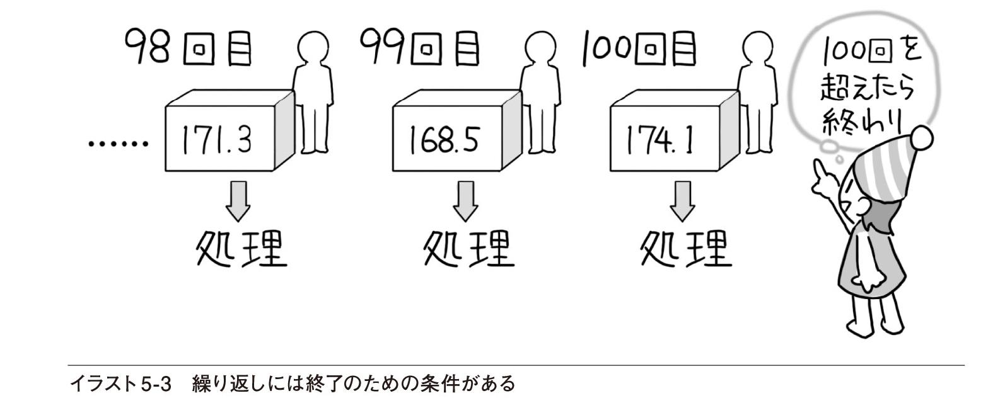
決まった回数だけ繰り返し処理を実行するには、繰り返しの回数を数えておく必要があります。そのためには、繰り返しの回数を記憶しておくための変数が必要になります。変数の値が繰り返し処理を続けるか終了させるかを決める条件になるというわけです。
繰り返し処理を終了させる条件は回数だけではありません。変数の値が特定の値になるまで繰り返すことも考えられます。また、データがなくなるまで処理をすることもあるでしょう。いずれにしても繰り返し処理を理解するためのポイントは、どういう条件で繰り返しを終了させるかということです。
終了をどのようなタイミングで判定するかによって、繰り返し処理には後判断型と前判断型があります。では、比較的理解しやすい後判断型から見ていきます。
■後判断型の繰り返し処理
具体的な例として、3人の点数の平均値を求める処理を例に考えてみます。考え方は10人でも100人でも同じですが、繰り返し処理の内容を逐一追いかけて見るために3人だけにします。
基本に忠実に進めましょう。処理の内容を考える前に、変数として必要なものを洗い出しておきます。まず、結果として欲しいものからです。平均値を求めるわけですから、平均値を記憶しておくための変数が必要です。次に、結果を求めるために利用できる値を考えます。平均値は合計点÷人数で求められるので、合計点と人数も必要になります。この例では人数は3人と分かっていますが、分からない場合には繰り返しの回数を数えていくと最後に人数が求められるはずです。いずれにしても繰り返しの回数を記憶しておくための変数も必要になります。
では、処理を1ステップずつ順に書いてみます（図5-1）。3人の点数を60点、72点、65点としましょう。答えを先にいうのは反則ですが、平均点が65.66...になれば正解です。
最初は、繰り返しの回数は0、合計点も0です。平均値はまだ求められません。
合計点が求められれば、あとはそれを3で割って平均点を求めるだけです。この図を見ても分かるように、処理は上から下へと進みますが、1回目、2回目......と横方向に網掛けされている処理はすべて同じで「得点を加算→回数を加算→（終了条件の判定）」となっています。日本語で擬似コードを書くと以下のようになるでしょう。
※以下を繰り返す 合計点に得点を加算する 回数に1を加算する※に戻る。ただし、回数が3以上になれば終わりVisual Basicでのコードも、ほぼこの形になります。コードの書き方については後で詳しく説明しますが、このような繰り返しを後判断型の繰り返し処理といいます。後判断型の繰り返し処理の場合、1回目の処理は必ず実行されることに注意が必要です。
■前判断型の繰り返し処理
実際のプログラムでは、はじめから条件を満たしていれば処理をまったく実行しないこともあります。例えば「所持金が10,000円以下になるまで一定の金額を減らしていく」といった処理の場合、はじめから所持金が10,000円以下であれば、処理を実行する必要がありません。そのような場合、繰り返し処理は次のような流れになります。
※以下を繰り返す。ただし、所持金が10,000円以下になれば終わり 所持金から一定の額を減算する※に戻るこちらは前判断型の繰り返し処理です。前判断型の繰り返し処理では、繰り返しの中の処理をまったく実行しないこともあります。なお、この場合は所持金がいくらであるかを調べればいいので、回数を数える必要はありません。
平均点を求める例の場合は、必ず1回以上実行することが分かっているので、どちらの方法を使っても同じ結果が得られます。念のため、図5-2で、前判断型の繰り返し処理にしたときの流れを見ておきましょう。
この場合も、処理は上から下へと進みますが、1回目、2回目......と横方向に網掛けされている処理はすべて同じで「（終了条件の判定）→得点を加算→回数を加算」となっています。
この方法の利点は人数が0人の場合にも対処できるということです。合計が求められたら、あとは人数で割り算をして合計を求めるだけです。もちろん、人数が0人の場合、0で割り算をするとエラーになるので、平均値を求めるときにはそれに対処することも必要ですが、繰り返し処理そのものはうまくできます。
■Until型の繰り返し処理とWhile型の繰り返し処理
これまで、繰り返しを終了させるための条件を「3以上になれば終わり」のように書いてきましたが、「3未満である間繰り返す」と言い換えても同じことです。「〜になれば終わる」のほうはUntil型、「〜の間繰り返す」のほうはWhile型と呼びます。
Until型では、条件が満たされていない間、繰り返しを実行します。そして、条件が満たされると繰り返しを終了します。一方のWhile型では、条件が満たされている間、繰り返しを実行します。そして、条件が満たされなくなると繰り返しを終了します。
したがって、繰り返し処理には次に示すような4つのパターンがあることが分かります。
■後判断−Until型
■後判断−While型
■前判断−Until型
■前判断−While型
次の節では、これらの4つの繰り返し処理についてコードの書き方を見ていきます。
5.2 Do...Loopステートメントを利用した繰り返し処理
ここでは前節で説明した4つのパターンの繰り返し処理について、Do ... Loopステートメントの書き方を見ていきます。一般的な文法書では「前判断−While」型の繰り返しから書かれていることが多いのですが、はじめてプログラミングに取り組む人にとっては「後判断−Until」型から入るほうが分かりやすいと思われるので、それから見ていきます。
■条件が満たされるまで処理を繰り返す（後判断－Until型）
RepeatTest1
はじめての繰り返し処理なので、簡単な例から見ていきます。実用性はほとんどありませんが、基本をしっかりと理解するために、次の例を考えてみましょう。
「Hello VB!」というメッセージを出力ウィンドウに5回表示するこの例では特に求めたい値はなく、メッセージを表示するだけです。ただし、回数を数える必要があるので、そのための変数が必要です。日本語で擬似コードを書いてみましょう。
※以下を繰り返す メッセージを表示する 回数に1を加算する※に戻る。ただし、回数が5以上になれば終わり実感が湧かないという人は、図5-3のフローチャートで処理の流れを確認してください。繰り返しの中でやらなければならないことは、メッセージを表示することと、回数を数える（1増やす）ことです。
繰り返し処理はDo ... Loopステートメントを使って書きます。「繰り返す」にあたるキーワードが「Do」で、「戻る」にあたるキーワードが「Loop」です。「〜まで」は「Until」を使って表します。繰り返しの回数を記憶しておくための変数をiとすると、コードは以下のようになります（LIST5-1）。
5-1 メッセージを5回表示するためのコード（後判断−Until型）
Dim i As Integer = 0 ●───繰り返しを実行する前なので初期値を0としておくDo ●─── DoからLoopの間のコードを繰り返し実行する Debug.WriteLine("Hello VB!") i += 1 ●─── 繰り返しの回数を1増やすLoop Until i >= 5 ●─── 繰り返しの回数が5以上になったら終わりこのコードが実行されると、出力ウィンドウには画面5-1のように「Hello VB!」というメッセージが5回表示されます。
では、後判断−Until型のDo ... Loopステートメントの書き方を見てみましょう（図5-4）。
Do...Loopの中に書くステートメントは複数でも構いません。Untilの後ろには条件を書きます。すでに読者のみなさんはIfステートメントのところで「条件」の正確な意味を学んだので、ここでも正確に表現しておきましょう。Untilの後ろに書くのはTrueまたはFalseを返す式です。その式の値がTrueになるまで繰り返しが実行される（Trueになると繰り返しが終了する）というわけです。
■条件が満たされている間処理を繰り返す（後判断－While型）
RepeatTest2
次に、「〜になるまで」ではなく「〜の間」繰り返すようなパターンも見ておきましょう。この場合はUntilの代わりにWhileを使います。違うところは、条件が成立したら繰り返しを終わるのではなく、条件が成立している間繰り返しを実行するという点だけです。したがって、条件を表す式の書き方が逆になります。前項の例と同じ処理をWhile型にした例を図5-5のフローチャートで確認し、その後コードを見てみましょう。
コードをUntil型の繰り返しと対比させて書いてみると次のようになります（LIST5-2）。
5-2 メッセージを5回表示するためのコード（後判断−Until型と後判断−While型を対比）
Dim i As Integer = 0Do Debug.WriteLine("Hello VB!") i += 1Loop Until i >= 5Dim i As Integer = 0Do Debug.WriteLine("Hello VB!") i += 1Loop While i < 5iの値が5以上になるまで繰り返すというのと、iの値が5未満の間繰り返すというのは同じです。どちらを使うかは、条件を表す式が自然に書けるかどうかで決めるといいでしょう。この程度の単純な例であればどちらでもさほど変わりませんが、複雑なプログラムになってくると、条件の表し方をどちらにするかで意味の分かりやすさがずいぶんと変わってくるものです。
では、後判断−While型のDo ... Loopステートメントの書き方をまとめておきましょう。
後判断型の繰り返し処理の場合、Until型であってもWhile型であっても、繰り返しの中身は少なくとも1回実行されるということに注意してください。
■条件が満たされるまで処理を繰り返す（前判断－Until型）
RepeatTest3
前判断型の繰り返し処理では、最初から終了の条件が成立していたら繰り返しの中身は1回も実行されません。これまでに見てきたものと同じ例で書き方を確認した後、前判断型を使うと便利な例を見てみます。これまでの例は、以下のようなものでした。
「Hello VB!」というメッセージを出力ウィンドウに5回表示する日本語で擬似コードを書いてみると以下のようになります。
※以下を繰り返す。ただし、回数が5以上になれば終わり メッセージを表示する 回数に1を加算する※に戻る念のため、フローチャートも見ておきましょう（図5-7）。
コードは以下のようになります（LIST5-3）。
5-3 メッセージを5回表示するためのコード（前判断−Until型）
Dim i As Integer = 0 ●─── 繰り返しを実行する前なので初期値を0としておくDo Until i >= 5 ●───DoからLoopの間のコードを繰り返し実行する。繰り返しの回数が5以上になったら終わり Debug.WriteLine("Hello VB!") i += 1 ●───繰り返しの回数を1増やすLoopこのコードが実行されると、やはり出力ウィンドウに「Hello VB!」というメッセージが5回表示されます。では、前判断−Until型の繰り返し処理の書き方です（図5-8）。
Do...Loopの中に書くステートメントは複数でも構いません。Untilの後には条件を書きます。正確にいうとUntilの後に書くものはTrueまたはFalseを返す式です。その式の値がTrueになるまで繰り返しが実行されます（Trueになると繰り返しが終了します）。
■条件が満たされている間処理を繰り返す（前判断－While型）
RepeatTest4
前判断−While型の繰り返し処理では、条件が成立している間、処理を繰り返します。前項の例と同じ処理をWhile型にした例を図5-9のフローチャートで確認し、コードを書いてみましょう。
書き方の違いは、Untilを使って「〜以上になるまで」と表す代わりに、Whileを使って「〜未満の間」と表していることだけです（LIST5-4）。
5-4 メッセージを5回表示するためのコード（前判断−Until型と前判断−While型を対比）
Dim i As Integer = 0Do Until i >= 5 Debug.WriteLine("Hello VB!") i += 1LoopDim i As Integer = 0Do While i < 5 Debug.WriteLine("Hello VB!") i += 1Loop前判断−While型のDo ... Loopステートメントの書き方も確認しておきましょう（図5-10）。
While ... End Whileステートメントも利用できる
前判断－While型の繰り返し処理は、While ... End Whileというステートメントを使って書くこともできます。書き方は以下のとおりです。
While 条件 ステートメント（複数でも可）End Whileこの書き方では、条件が成立している間（条件を表す式がTrueである間）、中に書かれたステートメントを繰り返し実行します。
■前判断型の繰り返し処理がよく使われる例
RepeatTest5, RepeatTest6
前判断型の繰り返し処理は、データの件数がいくつあるか分からない場合に、データがなくなるまで処理をするといった場合によく使われます。データの件数が分からないということは、もしかすると処理すべきデータが1件もないかもしれないからです。これまでの例ではメッセージの表示回数は5回と決まっていましたが、この回数がランダムに決まるものとするとどうでしょう。例えば、0回〜5回までのいずれかに決まるものとします。0回の場合もありうるわけですから、前判断型の繰り返し処理にする必要があります。日本語で擬似コードを書いてみます。
0〜5までの乱数を作成する※以下を繰り返す。ただし、回数が乱数以上になれば終わり メッセージを表示する 回数に1を加算する※に戻るこれまでに見たコードとほとんど同じですが、回数をランダムに決めるために乱数を作成する必要があります。乱数の作成にはRandomクラスのオブジェクトを使うのですが、ここで重要なことは繰り返し処理の理解なので、クラスの使い方についてはChapter8に譲ることとします。とりあえずは、乱数を作成するためのコードだけを示しておくので、理屈は抜きにしてこのまま書いておいてください。作成した乱数をLimitという変数に入れることにすれば以下のようになります（図5-11）。
繰り返し処理の終了回数はいままでは5となっていましたが、ここではLimitに入っています。Nextメソッドの結果は実行するたびに異なるので、Limitの値も毎回異なるものになります。これまでのコードに乱数を作成するコードを追加すればLIST5-5のようになります。
5-5 メッセージを0回〜5回のいずれかの回数だけ表示するコード
Dim i As Integer = 0 ' 現在の回数Dim Limit As Integer ' 終了回数Dim r As Random = New Random() ' 乱数オブジェクトを作成するLimit = r.Next(0, 6) ' 0以上6未満の乱数を求めるDo Until i >= Limit ' 現在の回数が終了回数以上になるまで Debug.WriteLine("Hello VB!") i += 1Loop重要なのは繰り返しの終了回数がLimitに入っていて、その値が0から5のいずれかだということです。Limitの値が0であれば、i >= Limitという条件が成り立っているので、1回も繰り返しを実行せずに終わります。しかし、これを後判断型で以下のように書くと、Limitの値が0であっても、繰り返しが1回実行され、その後、繰り返しを終了することになってしまいます。
Do Debug.WriteLine("Hello VB!") i += 1Loop Until i >= Limit ' 現在の回数が終了回数以上になるまでもう1つ例を示しておきましょう。少し発展的な話になりますが、ファイルからデータを読み込む場合にも前判断型の繰り返し処理をよく使います。例えば1行ずつデータを読み込んでいく場合、どこでデータがなくなるか分かりません。もしかするとデータが1行もないかもしれません。そういう場合も前判断型の繰り返し処理にする必要があります。素直に流れを書くと図5-12のようになります。
同じ方法で処理が繰り返されるので、Do ... Loopステートメントが使えそうです。しかし、Do ... Loopステートメントでは、終了のための条件は最初か最後に書かないといけないので、上のようにまとめると、うまくパターンにあてはまりません。終了のための条件が繰り返し処理の途中に出てくるからです。
このような場合には、最初の「ファイルから1行読み込む」を特別扱いにして、図5-13のように終了のための条件が最初に来るようにまとめます。
日本語の擬似コードで表すと次のようになるでしょう。
ファイルから1行読み込む※以下を繰り返す ただし、データがある間 実行したい処理 ファイルから1行読み込む※に戻る最初の読み込みだけを特別扱いしたので、「ファイルから1行読み込む」という処理が2回出てきますが、これはデータがなくなるまで処理をするときによく使われるパターンです。LIST5-6に、sample.txtという名前のファイルの行をすべて読み込んで、出力ウィンドウに表示するコードも書いておきます。この時点では、ファイル処理について理解している必要はないので、参考程度に眺めておいてください（ファイル処理についてはChapter9で詳しく説明します）。
5-6 ファイルの行をすべて読み出して出力ウィンドウに表示する
Dim OneLine As StringDim sr As System.IO.StreamReader' ファイルを開くsr = My.Computer.FileSystem.OpenTextFileReader("sample.txt",System.Text.Encoding.GetEncoding("shift_jis"))OneLine = sr.ReadLine() ' 1行読み込むDo While OneLine IsNot Nothing ' 読み出した行がNothingでない間 Debug.WriteLine(OneLine) ' 出力ウィンドウに表示 OneLine = sr.ReadLine() ' 1行読み込むLoopsr.Close()確認問題
1. 以下の文章のうち正しいものには○を、間違っているものには×を記入してください。
（ ） 後判断型のDo ... Loopステートメントでは、繰り返し処理の中のステートメントが1回も実行されないことがある
（ ） Do ... Loopステートメントの終了条件にあたる部分には、結果がTrueかFalseになる式を書く
（ ） Do ... Loopステートメントの終了条件として「While x <10」と書くと、xが10未満の間、繰り返しが実行される
（ ） Do ... Loopステートメントの終了条件として「While x <10」と書く代わりに「Until x >10」と書いても同じ繰り返し処理ができる
2. 説明に従って以下の空欄を埋め、Do ... Loopステートメントを完成させてください。
（1） Dim x, y As Double x = 0 Do（ ） x >= 3.14 ●───xの値が3.14以上になるまで繰り返す y = Math.Sin(x) ●───sin(x)の値を求める Debug.WriteLine(y.ToString("F3")) ●─── x（ ）0.1 ●───xの値を0.1加算する Loop備考 Math.Sinはラジアン単位で指定された値のsin（正弦値）を求めるメソッドです。
（2） Dim Total As Integer = 0 Dim n As Integer Do Total += n ●─── n += 1 ●─── Loop （ ） n （ ）100 ●─── MessageBox.Show(Total.ToString()) ●───5.3 For...Nextステートメントを利用した繰り返し処理
前節で見たDo ... Loopステートメントは一般的な繰り返し処理に使われるステートメントです。条件さえ正しく指定すれば、どんな繰り返し処理でもできます。しかし、それだけに記述が冗長になる場合もあります。For ... Nextステートメントは、一定の回数だけ繰り返したり、変数が特定の値になるまで繰り返すのに適したステートメントで、Do ... Loopステートメントよりも簡潔な書き方ができます。
■初期値、終了値、増分値を指定して処理を繰り返す
ForTest
Do ... Loopステートメントの書き方で見た前判断型の繰り返しは、以下のようなコードでした（LIST5-7）。
5-7 Do ... Whileステートメントを使ってメッセージを5回表示する
Dim i As Integer = 0Do While i < 5 Debug.WriteLine("Hello VB!") i += 1Loopこのコードは出力ウィンドウに「Hello VB!」というメッセージを5回表示するものですが、よく見ると、iという変数が3箇所に出てきているので、ずいぶんと冗長な感じがします。1行目では初期値を代入し、2行目では繰り返しの終了判定にiを使っています。そして4行目ではiの値を増やしています。
このような繰り返し処理では、iの初期値、終了値、増分値さえ指定すれば、繰り返しの方法が決まります。しかし、それらをバラバラな位置に書くとコードが読みづらくなってしまいます。上記の例であれば、それほど苦労もせずに理解はできると思いますが、繰り返しの中身が10行、20行と増えていけば、iの値をどこでどう増やしているのか、分からなくなることもあります。
そこで、For ... Nextステートメントの登場です。このステートメントでは、ある変数の初期値、終了値、増分値で決まるような繰り返しが簡潔に書けます。さきほどのコードを書き換えてみましょう（LIST5-8）。
5-8 For ... Nextステートメントを使ってメッセージを5回表示する
Dim i As IntegerFor i =0 To 4 Step 1 Debug.WriteLine("Hello VB!")Next i変数の宣言は別として、変数iを使って繰り返しを制御するコードは1箇所にまとめて書かれています。これならiの値が0から4になるまで1ずつ増やしながら繰り返すということが一目で分かります（5回の繰り返しなので、0から5ではなく、0から4までとなります）。一般に、For ... Nextステートメントを使ってn回の繰り返しを実行したいときには、初期値を0、終了値をn-1、増分値を1とします。
では、For ... Nextステートメントの書き方をまとめておきましょう（図5-14）。

For ... Nextステートメントでは、変数に初期値を代入してから、繰り返しに入ります。終了の判定は前判断型で、終了値を超えたら繰り返しが終了します。繰り返しの中のステートメントは複数でも構いません。繰り返しの中のステートメントを実行した後には、毎回、変数に増分値を加算します。この流れをフローチャートで表すと図5-15のようになります。
変数の値を減らしながら繰り返し処理をするには
増分値に負の値を指定したときは、図5-15のフローチャートの終了条件は「変数＜終了値」となります。つまり、変数の値が終了値よりも小さくなるまで繰り返しが実行されます。
For ... Nextステートメントでは、増分値が1の場合にはStep以降が省略できます。また、繰り返しの範囲を分かりやすくするため、Nextの後に変数名を書いておくこともできますが、必要がなければ省略しても構いません。したがって、LIST5-8のコードは以下のようにより簡潔に書くことができます（LIST5-9）。
5-9 増分値が1のときはStep以降が省略できる
Dim i As IntegerFor i =0 To 4 Debug.WriteLine("Hello VB!")Nextさらに、変数名の後ろに「As データ型」を書いて、変数の宣言も済ませてしまうことができます。したがって、Do ... Whileステートメントの場合は6行だったコードが3行で書けます（LIST5-10）。
5-10 For ... Nextの中で繰り返しを制御する変数を宣言する
For i As Integer = 0 To 4 Debug.WriteLine("Hello VB!")NextWriteLineただし、この場合、iという変数はFor ... Nextの中でしか使えないことに注意してください。
○Dim i As IntegerFor i =0 To 4 Debug.WriteLine("Hello VB!")NextDebug.WriteLine(i) ●───iの値は5×For i As Integer = 0 To 4 Debug.WriteLine("Hello VB!")NextDebug.WriteLine(i) ●─── For...Nextの外でiは使えない増分値には小数も指定できる
繰り返しの制御に使う変数は浮動小数点型でも構いません。Stepの後には小数も指定できます。
確認問題
1. 以下の文章のうち正しいものには○を、間違っているものには×を記入してください。
（ ） For ... Nextステートメントを使うと、決まった回数の繰り返し処理を簡潔に書くことができる
（ ） For ... Nextステートメントでは、増分値を表すStep以降はどんな場合でも省略して構わない
（ ） For ... Nextステートメントの中で変数を宣言すると、それ以降、その変数がどこでも使えるようになる
2. 説明に従って以下の空欄を埋め、For ... Nextステートメントを完成させてください。
（1） Dim x, y As Double For x = 0 （ ） 3.14 （ ） 0.1 ●───¥ y = Math.Sin(x) ●─── Debug.WriteLine(y.ToString("F3")) ●───小数点以下3桁で出力ウィンドウに表示する Loop備考 Math.Sinはラジアン単位で指定された値のsin（正弦値）を求めるメソッドです。
（2） Dim HitNumber, InputNumber As Integer ●───当たり番号と入力された番号 Dim r As Random = New Random() ●───Randomクラスのオブジェクトを作る If Integer.TryParse(TextBox1.Text, InputNumber) = False OrElse _ InputNumber < 0 OrElse InputNumber > 9 Then ●─── MessageBox.Show("0から9までの数字を入力してください") TextBox1.Focus() TextBox1.SelectAll() Else ' 正しく数字が入力されている場合 For i As （ ） = 0 To（ ） ●─── HitNumber = r.Next(0, 10) ●─── If HitNumber =（ ） Then ●─── MessageBox.Show("当選です") Exit Sub ●─── End If Next MessageBox.Show("はずれです。残念でした") ●─── End If備考 このコードは、TextBox1というテキストボックスに入力された数字が乱数で作られた当たり番号に一致するかどうかを調べるコードです。当たり番号は3回作られ、入力された数字と比較されます。
5.4 For Each...Nextステートメントを利用した繰り返し処理
これまで見てきた繰り返し処理は、一般的な変数やステートメントを使った繰り返しでした。しかしVisual Basicでは変数だけでなく、さまざまなコントロールを取り扱います。そして、コントロールの中にはListBoxなど、複数の項目を含んでいるものもあります。それらの項目について繰り返し処理をするにはFor Each ... Nextステートメントが便利です。
■コレクションの要素を繰り返し処理する
ForEachTest
ListBoxコントロールの項目はItemsプロパティで参照できます。Itemsプロパティはリスト内の項目全体を表すもので、複数の要素が含まれているのでコレクション（Collection）と呼ばれます。コレクションの個々の要素を取り扱うにはインデックスと呼ばれる番号を()内に書いて区別します。例えば、ListBox1という名前のListBoxコントロールがあり、その3番の要素であれば、
ListBox1.Items(3)と表すことができます。ただし、先頭の要素を0番と表すことに注意してください。ListBox1.Items(3)は先頭から数えると4番目になります（図5-16）。
なお、ListBoxコントロールの各項目はObject型と呼ばれるデータ型です。Object型の場合、数値や文字列をはじめとするさまざまな型のデータを参照できます。とりあえずは「どんなデータでも入れられる」と考えておいて差し支えありません（実際にはデータへの参照が入れられます）。
デザイン時にListBoxコントロールの項目を入力するには
ListBoxコントロールに複数の項目を入れるには、フォームにListBoxコントロールを配置し、［プロパティ］ウィンドウの［Items］の欄の右端に表示されている［...］ボタンをクリックします。［文字列コレクションエディター］ダイアログボックスが表示されるので、そこで項目を入力します。
これまでの知識でListBoxコントロールの項目をすべて処理するには、For ... Nextステートメントを使って、インデックスに変数を指定するという方法が使えます。LIST5-11はListBoxコントロールの項目をすべて出力ウィンドウに表示するコードです。ListBoxコントロールの各項目はObject型ですが、P.95で説明したように、Debug.WriteLineメソッドに指定すれば自動的に文字列に変換されて出力されます。
5-11 For ... Nextステートメントを使ってListBoxコントロールの項目をすべて処理する
For i As Integer = 0 To ListBox1.Items.Count - 1 Debug.WriteLine(ListBox1.Items(i))NextItemsのCountプロパティはコレクションの要素数を表すので、0から要素数-1まで処理すれば、ListBoxコントロールの全項目が処理できるというわけです。
インデックスを使わずにすべての項目を処理する方法もあります。それが、For Each ... Nextステートメントです。上のコードを書き換えてみましょう（LIST5-12）。
5-12 For Each... Nextステートメントを使ってListBoxコントロールの項目をすべて処理する
For Each anItem As String In ListBox1.Items Debug.WriteLine(anItem)Nextこのように書くと、ListBox1.Itemsに含まれる項目を、先頭から順にanItemに代入して、最後まで繰り返しを実行します。こちらの書き方であれば、いちいちインデックスを表す変数を用意する必要がありません。その分、コードもスッキリします。また、Eachは「それぞれ」という意味なので、複数の要素を1つずつ処理していくことがうまく表せます（図5-17）。
実際にはコレクションの要素（文字列）が変数に代入されているのではなく、文字列への参照が変数に代入されているのですが、いまはこの図のような理解で構いません。参照については3.2節でも説明しましたが、8.2節でクラスやオブジェクトの話と合わせて、さらに詳しく説明します。
インデックスを使うと項目の追加や削除が正しくできないことがある
インデックスを使う方法では、繰り返しの中でListBoxコントロールに項目を追加したり削除したりすると正しく動作しないことがあります。追加や削除をするとListBoxコントロールの項目数が変わるので、それにともないインデックスで示せない項目ができてしまったりするからです。LIST5-11の例でいえばListBox1.Items.Count -1 の値は4ですが、項目を追加したり削除したりすると値が変わってしまいます。それにより、繰り返し処理が正しく実行できなくなることがあります。
図5-18はFor Each ... Nextステートメントの書き方をまとめたものです。
このように書くと、変数にコレクションの要素を順に代入しながら、繰り返しの中のステートメントを実行します。終了の判定は前判断型で、コレクションの要素がなくなったら繰り返しが終了します。図5-19はFor Each ... Nextステートメントの働きをフローチャートで表したものです。
ObjectCollectionとCollectionの違い
ListBoxコントロールのItemsプロパティで参照されるコレクションは、正確にはObjectCollectionと呼ばれるコレクションです。一般的なコレクションは、確認問題2に示したCollectionクラスを使って作成します。ObjectCollectionの要素は図5-16で見たように0番から始まりますが、Collectionの要素は1番から始まります。
確認問題
1. 以下の文章のうち正しいものには○を、間違っているものには×を記入してください。
（ ） For ... NextステートメントのForの代わりにFor Eachと書くだけで、For Each ... Nextステートメントが記述できる
（ ） For Each ... Nextステートメントは、コレクションの要素をすべて処理するのに向いている
（ ） For Each ... Nextステートメントでは、インデックスの値を使ってコレクションの要素を利用する
2. 説明に従って以下の空欄を埋め、For Each ... Nextステートメントを完成させてください。
（1） Dim MyCollection As Collection = New Collection() ●───新しいコレクションを作る MyCollection.Add("Onion") ●───コレクションに要素を追加する MyCollection.Add("Potato") ●───コレクションに要素を追加する MyCollection.Add("Carrot") ●───コレクションに要素を追加する （ ） Each anItem As String In （ ） ●───コレクションのすべての要素について処理する Debug.WriteLine(anItem) ●─── 要素を出力ウィンドウに表示する （ ）備考 このように、自分でコレクションを作って要素を追加することもできます。
（2） For （ ） aControl （ ） Me.Controls ●─── If TypeOf aControl Is Button Then ●─── Debug.WriteLine(CType(aControl, Button).Text) ●─── End If Next備考 このコードは、フォーム上にあるすべてのButtonコントロールのTextプロパティの値を出力ウィンドウに表示します。Me.Controlsは現在のフォームにあるコントロールのコレクションです。コントロールにはさまざまな型（ButtonやTextBoxなど）があるので、aControlにはデータ型を指定していません（Object型と見なされます）。「TypeOfコントロール名 Is コントロールの種類」という式で、コントロールが指定された種類のコントロールであるかどうかが分かります。CTypeはデータ型を変換するための関数です。aControlのデータ型はObject型なのでButton型に変換し、Textプロパティの値を出力ウィンドウに表示します。
5.5 繰り返し処理を途中で抜ける
これまで見てきた繰り返し処理では、条件が成立するまで、あるいは条件が成立している間、ずっとステートメントを実行するものでした。しかし、特別な条件が成立した場合に限って、繰り返し処理を途中で抜けたいこともあるでしょう。そういった柔軟な繰り返し処理についても見ておきましょう。
■Do ... Loopステートメントを途中で抜ける〜Exit Doステートメント
ExitDoTest
ウェブサイトを表示する場合やプログラムでデータを表示する場合に、パスワードの入力が必要になることがあります。また、ショッピングサイトなどでは優待キーワードを入力すると割引価格で商品を購入できるところもあります。いずれの場合も、正しい文字列を入力すると先に進めますが、何回か間違うとエラーメッセージが表示されたり、プログラムが終了するようになっているのが普通です。例えば、3回まで入力できるとすると、どのようなコードを書けばいいでしょうか。優待キーワードを入力する場合を例にとって、繰り返し処理の流れを見てみましょう。方法はいくつかありますが、「正しいキーワードが入力されるまで」の繰り返しと考えると、3回以上入力された場合には繰り返しを抜けなければなりません。日本語で擬似コードを書いた後、フローチャートもあわせて示しておきます（図5-20）。
優待キーワードを入力する※以下を繰り返す。ただし、入力されたキーワードが正しいキーワードと一致するまで 優待キーワードが間違っているというメッセージを表示する 優待キーワードの間違いが3回になったら、繰り返しを抜ける 優待キーワードを入力する※に戻る太い線で描かれた部分を見ると想像が付くと思いますが、この繰り返し処理は前判断型のDo ... Loopステートメントを使って書くことのできるパターンになっています。
キーワードを入力するには、InputBox関数が便利です。InputBox関数を利用すると、入力のための簡単なダイアログボックスを表示することができ、入力された文字列が結果として返されます。
問題は繰り返しを途中で抜けるところです。Do ... Loopステートメントを途中で抜けるには、Exit Doステートメントを使います。細かな処理は省略して、骨格だけ書くと以下のようになります（LIST5-13）。
5-13 Do...Loopステートメントによる繰り返し処理を途中で抜けるためのコード
Dim InputCount As Integer = 0 ' 入力回数Dim CorrectKeyword As String = "foobar" ' 優待キーワードDim InputKeyword As String ' 入力されたキーワードInputKeyword = InputBox("優待キーワードをどうぞ")Do Until InputKeyword = CorrectKeyword MessageBox.Show("優待キーワードが間違っています") InputCount += 1 If InputCount >= 3 Then Exit Do InputKeyword = InputBox("優待キーワードをどうぞ")Loopこのコードが実行されると、画面5-2のようなダイアログボックスが表示されます。
実際には、考慮しておかなければいけない問題がいくつかあります。
■入力用のダイアログボックスで［キャンセル］ボタンがクリックされた場合にも繰り返しを抜ける必要がある
■正しいキーワードを入力して繰り返しを終了した場合も、回数が3以上になって繰り返しを終了した場合もLoopの次の行に進むので、それ以降は同じ処理が実行される
［キャンセル］ボタンがクリックされたときには、InputBox関数は長さ0の文字列を返すので、その判定をするためのステートメントを追加するといいでしょう。
正しいキーワードを入力して繰り返しを終了した場合と、回数が3以上になって繰り返しを抜けた場合を区別するには、どのような状態にあるかを表す変数を用意し、その値によって区別するといいでしょう。正しく繰り返しを抜けたかエラーで抜けたかという2つの状態があるので、Boolean型の変数がうってつけです。正しく繰り返しを抜けた場合をTrueとし、エラーで抜けた場合をFalseとすればいいでしょう。そのあたりまで含めて書くと、以下のようなコードになります（LIST5-14）。
5-14 ［キャンセル］ボタンがクリックされた場合やキーワードが正しく入力されたかどうかに対処するためのコード
Dim InputCount As Integer = 0 ' 入力回数Dim CorrectKeyword As String = "foobar" ' 優待キーワードDim InputKeyword As String ' 入力されたキーワードDim IsRightKeyword As Boolean = True ' 正しく入力されたかどうかInputKeyword = InputBox("優待キーワードをどうぞ")Do Until InputKeyword = CorrectKeyword MessageBox.Show("優待キーワードが間違っています") InputCount += 1 If InputCount >= 3 Or InputKeyword = "" Then IsRightKeyword = False ' 正しいキーワードでなかった Exit Do End If InputKeyword = InputBox("優待キーワードをどうぞ")LoopIf IsRightKeyword Then MessageBox.Show("おめでとうございます。優待の対象です")Else MessageBox.Show("申し訳ありませんが、優待の権利はありません")End IfInputBoxで何も入力しなかったときは？
入力用のダイアログボックスで何も入力せずに［OK］をクリックした場合も、長さ0の文字列が返されるので、その場合も繰り返しを途中で抜けることになります。
■For...Next／For Each...Nextステートメントを途中で抜ける〜Exit Forステートメント
ExitForTest
前項では、Do ... Loopステートメントを途中で抜けるために使うExit Doステートメントを見ました。では、For ... NextステートメントやFor Each ... Nextステートメントを途中で抜けるにはどういうステートメントを使うのでしょうか。
これにはExit Forステートメントを使います。
前項の例は「入力を3回繰り返す」と考えることもできます。その場合、正しいキーワードを入力した場合にその時点で繰り返しを抜ければいいということになります。日本語の擬似コードで流れを書いた後、フローチャートもあわせて示しておきます（図5-21）。
太い線で描かれた部分がFor ... Nextステートメントのパターンになっています。ここでも、細かな処理は省略して骨格だけ書いてみましょう（LIST5-15）。
5-15 For ... Nextステートメントによる繰り返し処理を途中で抜けるコード
Dim CorrectKeyword As String = "foobar" ' 優待キーワードDim InputKeyword As String ' 入力されたキーワードFor i As Integer = 0 To 2 InputKeyword = InputBox("優待キーワードをどうぞ") If InputKeyWord = CorrectKeyword Then Exit For MessageBox.Show("優待キーワードが間違っています")Nextこの方法だと、途中で繰り返しを抜けた場合が、正しくキーワードが入力された場合になります。さらに、正しいキーワードを入力して繰り返しを途中で終了したか、3回入力しても正しいキーワードが入力できなかったので繰り返しを終了したのかを判定する処理と、入力のためのダイアログボックスで［キャンセル］ボタンがクリックされて繰り返しを終了したのかを判定する処理を含めて書くと以下のようになります（LIST5-16）。
5-16 ［キャンセル］ボタンがクリックされた場合やキーワードが正しく入力されたかどうかに対処するためのコード
Dim CorrectKeyword As String = "foobar" ' 優待キーワードDim InputKeyword As String ' 入力されたキーワードDim IsRightKeyword As Boolean = False ' 正しく入力されたかどうかFor i As Integer = 0 To 2 InputKeyword = InputBox("優待キーワードをどうぞ") If InputKeyword = CorrectKeyword Then IsRightKeyword = True Exit For Else If InputKeyword = "" Then IsRightKeyword = False Exit For End If MessageBox.Show("優待キーワードが間違っています")NextIf IsRightKeyword Then MessageBox.Show("おめでとうございます。優待の対象です")Else MessageBox.Show("申し訳ありませんが、優待の権利はありません")End If繰り返し処理には、繰り返し処理をさらに繰り返して実行するという多重の繰り返しが必要になる場合もあります。これについては、配列の利用方法を説明した後で詳しく解説します。コラムの後の確認問題で知識を確実にしてから、サンプルプログラムにチャレンジしてみましょう。
反復子により、値を順に取得するには
YieldTest
Visual Basic 2012以降では、反復子と呼ばれる機能が利用できるようになりました。反復子を利用するとコレクションなどの要素を1つずつ返す関数（反復子関数）が作成できます。詳細な機能はこの本の範囲を超えてしまうので、簡単な例と書き方だけを紹介しましょう。なお、関数についてはP.252で説明します。
例えば、呼び出しのたびに、7、5、3という値を順に返す関数は以下のようになります。Functionの前にIteratorというキーワードを書き、関数の型をIEnumerableとします。また、関数が順に返す値をYieldの後に指定します。
Private Iterator Function NumberGenerator() As IEnumerable Yield 7 Yield 5 Yield 3 End Functionここでは、関数名をNumberGeneratorとしています。この関数を最初に呼び出すとYield7というステートメントが実行され、7という値が返されます。次に呼び出すと5が返され、次に呼び出すと3が返されます。この関数はFor Each ... Nextステートメントの中で使えます。例えば、以下のように利用します。Inの後に関数名と()を書くことに注意してください。
Dim number As Integer For Each number In NumberGenerator() Debug.WriteLine(number) NextNumberGeneratorは、7、5、3を順に返すので、それらが順にnumberに代入され、出力ウィンドウに表示されます。
反復子を使った関数に引数を指定したり、繰り返し処理を使えば、柔軟な処理も実行できます。次の関数は、引数で指定した個数だけ乱数を返します。
Private Iterator Function RandomGenerator(Count As Integer) As ⇒IEnumerable Dim r As New Random() For i As Integer = 0 To Count - 1 Yield r.Next(10) Next End Functionこの関数は以下のように利用します。引数に5を指定しているので、乱数が5個返されます。
For Each number In RandomGenerator(5) Debug.WriteLine(number) Next反復子を利用すると、さまざまな繰り返しのパターンを記述でき、簡単に利用できるようになります。
確認問題
1. 以下の文章のうち正しいものには○を、間違っているものには×を記入してください。
（ ） For ... Nextステートメントでは、Exitステートメントを書くことにより繰り返し処理を途中で抜けることができる
（ ） Do ... Loopステートメントでは、前判断型の場合は繰り返し処理を途中で抜けられるが、後判断型では途中で抜けられない
（ ） Do ... Loopステートメントによる繰り返し処理を抜けるにはExit Doステートメントを利用する
5.6 プログラミングにチャレンジ
繰り返し処理にはさまざまなステートメントがあり、それぞれの基本的な知識についてはこれまでに説明しました。ここでは、ListBoxコントロールに入っている成績の最高点を検索するプログラムを作成します。繰り返し処理に注目してプログラム全体を作り上げていきましょう。
■最高点を求めるプログラム
GetMax
本来であれば、ListBoxコントロールには実際の成績が入れられるのですが、このプログラムでは、架空の成績を入れておくことにします。そのため、乱数を使って0以上100以下のランダムな値を10個作り、それらをListBoxコントロールに入れます。そしてその中から最大値を検索するわけです。プログラムの完成イメージはイラスト5-4のような感じになるでしょう。
新しいプロジェクトを作成し、完成イメージにそってフォームをデザインしていきましょう。プロジェクト名はGetMaxとしておきます。
■フォームのデザイン
フォームにはListBoxコントロールを1つと、Buttonコントロールを2つ配置します。画面5-3のようにコントロールを配置し、表5-1にそってプロパティの値を設定してください。
■イベントハンドラーの記述
プログラムを実行したときには、リストボックスに0以上100以下の乱数を10個入れ、架空の成績とします。したがって、フォームのLoadイベントハンドラーにその処理を書くといいでしょう。正確には、Loadイベントはプログラムの実行時ではなく、フォームが読み込まれ、はじめて表示される直前に発生します。
乱数を利用する方法は5.2節で見たとおりです。以下のように、乱数を利用するための変数rを宣言します。
Dim r As Random = New Random()実際に整数の乱数を作るには、Nextメソッドを使います。次のように書くと、0以上、101未満の乱数が1つ作られScoreに代入されます。成績は0以上100以下なのですが、Nextメソッドでは下限値以上、上限値未満という指定のしかたをするので、「100以下」を表すには「101未満」と指定する必要があります。
Score = r.Next(0, 101)指定した範囲の乱数を作成するには
RandomクラスのNextメソッドでは、引数の指定のしかたによって、作成する乱数の値の範囲を変えることができます。引数を省略すると0以上、整数の最大値未満の乱数が作成できます。引数を1つだけ指定するとそれが上限値と見なされます。その場合の下限値は0です。引数を2つ指定すると、下限値と上限値と見なされます。いずれの場合も、下限値以上、上限値未満の乱数が作成されます。
ListBoxコントロールの項目に新しい項目を追加するには、ListBoxコントロールのItems.Addメソッドを使います。例えば、ListBox1コントロールの項目に変数Scoreの値を追加するなら、以下のようになります。
ListBox1.Items.Add(Score)また、以下のように書けば、Scoreの値ではなく、作成した乱数を直接追加できます。
ListBox1.Items.Add(r.Next(0, 101))新しい項目はListBoxコントロールの項目の末尾に追加されます。
ListBoxコントロールの項目を自動的に並べ替えるには
ListBoxコントロールのSortedプロパティがTrueであれば、項目が自動的に並べ替えられるので、Addメソッドで追加された新しい項目は末尾ではなく、並べ替えを行った適切な位置に追加されます。
では、フォームのLoadイベントハンドラーを書いてみましょう。
■フォームのLoadイベントハンドラー
フォームのLoadイベントハンドラーではListBoxコントロールに乱数を10個追加します。言い換えると「乱数を1個作り、それをListBoxコントロールに追加するという処理を10回繰り返す」ことになります。これは決まった回数の繰り返しなので、For ... Nextステートメントが使えます。
For ... Nextステートメントについてはもう具体的なコードを書くことができるはずです。それ以外は日本語で構わないので擬似コードで表してみましょう。
For i As Integer = 0 To 9 乱数を1つ作る 乱数をListBoxコントロールに追加するNext乱数を1つ作り、それをListBoxコントロールに追加する処理は、ステップを分けて書いても構いませんが、すでに見たように1行で書けます。Loadイベントハンドラーの名前をInitProcとして、コードを書いてみましょう（LIST5-17）。このプログラムでは、フォーム上に配置したListBoxコントロールの名前はlstScoreです。
5-17 ListBoxコントロールに乱数を10個追加する
Private Sub InitProc(sender As Object, e As EventArgs) Handles ⇒MyBase.Load Dim r As Random = New Random() lstScore.Items.Clear() ●───リストボックスの項目をクリアしておく For i As Integer = 0 To 9 ●───10回繰り返す lstScore.Items.Add(r.Next(101)) ●───0以上101未満の乱数を作り、リストボックスの項目に追加する Next End Sub繰り返しに入る前に、lstScore.ItemsのClearメソッドを使っています。Clearメソッドは項目をすべて削除するためのメソッドです。
ListBoxのClearメソッドが必要になる場合
フォームのLoadイベントハンドラーではなく、ButtonコントロールのClickイベントハンドラーでこのコードを実行する場合には、LIST5-17のようなClearメソッドが必要になることがあります。ボタンをクリックするたびに新しいリストを作りたい場合、前回の内容を消してから新しい項目を追加する必要があるからです。Clearメソッドを使えば、新しい項目を追加する前に前回の内容を削除しておくことができます。Clearメソッドを書いていないと、前回の項目の後に、新しい項目が追加されることになります。
■Buttonコントロールのイベントハンドラー
Buttonコントロールは2つあります。btnMaxValueが最高点を求めるためのボタン、btnExitがプログラムを終了させるためのボタンです。
最高点をどうやって求めればいいか、少し考えてみても方法が簡単に思いつかないかもしれません。しかし、これにはお決まりのパターンがあります。私たちは実生活の中で同じようなことをよく経験しています。例えば、お笑い芸人のチャンピオンを決める方法やフィギュアスケートの優勝者を決める方法はそれとほとんど同じです。最初は、優勝者席は空席ですが、1番目の挑戦者がまずそこに座ります。それ以降は、優勝者席に座っている人よりも挑戦者の点数が高ければ、挑戦者が優勝者席に座ります。同じようにして演技を進めていけば、すべての演技が終わったときに優勝者席に座っている人が最高点を獲得した優勝者ということになります。
このプログラムでは、最高点をMaxScoreという変数に入れるものとしましょう。宣言は簡単です。
Dim MaxScore As Integer最初は、優勝者席を空席にしておき、1番目の挑戦者を座らせたいのですが、これにはちょっとしたテクニックを使います。MaxScoreに「どんな値よりも小さな値」を入れておけば、1番目の点数がいくらであっても絶対にその値よりも大きくなるので、MaxScoreに1番目の点数を入れることができます。
それ以降も処理の方法は同じです。次の点数とMaxScoreの値を比べ、点数のほうがMaxScoreよりも大きければ、MaxScoreにその点数を代入します（図5-22）。
これまでの説明を踏まえて、処理の流れを日本語の擬似コードで書いてみましょう。
MaxScoreに整数の最小値を入れる※リストボックスの項目すべてについて繰り返す 点数がMaxScoreより大きければ MaxScoreにその点数を入れる※点数がMaxScore以下であれば、その点数が最高点になることはありえないので何もしません。たとえ点数が最高点と同点であっても、その値はMaxScoreにすでに入っているので、わざわざ入れ直す必要はありません。
整数の最小値はInteger.MinValueで表されます。繰り返し処理はリストボックスの項目すべてについて実行するので、For Each ... Nextステートメントが便利です。これまで説明した内容をすべてまとめると、LIST5-18のようにbtnMaxValueのClickイベントハンドラーが書けるでしょう。イベントハンドラー名はSearchMaxValueとしておきます。
5-18 ListBoxコントロールから最大値を求めるコード
Private Sub SearchMaxValue(sender As Object, e As EventArgs)⇒Handles btnMaxValue.Click Dim MaxScore As Integer MaxScore = Integer.MinValue ●───最初は整数の最小値を入れておく For Each Score As Integer In lstScore.Items ●───リストボックスの項目を順にすべて処理する If Score > MaxScore Then MaxScore = Score ●─── 項目が最大値より大きい場合は、最大値に代入する End If Next MessageBox.Show("最高点は" & MaxScore & "です") End SubこのFor Each ... Nextステートメントでは、lstScoreコントロールすべての項目、つまりlstScore.Itemsを1つずつScoreに代入しながら、項目がなくなるまで繰り返し処理が実行されます。繰り返しを抜けたときにはMaxScoreに最高点が入っているので、それを表示すればおしまいです。
［終了（X）］ボタン（btnExit）のイベントハンドラーは簡単です。このコードも入力しておいてください（LIST5-19）。
5-19 プログラムを終了させるためのコード
Private Sub ExitProc(sender As Object, e As EventArgs) Handles⇒btnExit.Click Application.Exit() End Sub■プログラムを実行する
コードがすべて入力できたら、［開始］ボタン（）をクリックしてプログラムを実行します。［最高点（M）］ボタンをクリックすると、ListBoxコントロールの項目の最大値が表示されます（画面5-4）。
❶ ［最高点（M）］をクリックする
② 最高点が表示される
このプログラムでは、For ... NextステートメントとFor Each ... Nextステートメントを使いました。繰り返し処理は配列と組み合わせるとさらに威力を発揮します。練習問題に取り組んで、繰り返し処理を確実に身に付け、次の章に進んでください。
Chapter5のまとめ
● 一般的な繰り返し処理にはDo ... Loopステートメントが使えます
● Do ... Loopステートメントには、前判断型と後判断型があります
− 前判断型では繰り返し処理の中身が1回も実行されないこともあります
− 後判断型では繰り返し処理の中身が少なくとも1回は実行されます
● 繰り返しの終了を判定する方法にはUntil型とWhile型があります
− Until型では条件が成立するまで繰り返し処理が実行されます
− While型では条件が成立する間繰り返し処理が実行されます
● 一定の回数の繰り返し処理を実行したい場合や変数の値を変化させながら繰り返し処理を実行したい場合にはFor ... Nextステートメントが便利です
● コレクションの要素をすべて処理するには、For Each ... Nextステートメントが便利です
● Do ... Loopステートメントによる繰り返し処理を途中で抜けるにはExit Doステートメントを使います
● For ... NextステートメントやFor Each ... Nextによる繰り返し処理を途中で抜けるにはExit Forステートメントを使います
練習問題
GetMin, CountPass
［A］サンプルプログラムを変更し、最低点を求めるプログラムを作成してみてください。プロジェクト名はGetMinとします。実行結果が以下の画面のようになればいいでしょう。
［B］サンプルプログラムを変更し、60点以上の人数を数えるプログラムを作成してみてください。プロジェクト名はCountPassとします。実行結果が以下の画面のようになればいいでしょう。
Chapter6
配列を利用する
同じデータ型で、同じ目的に使う変数がいくつもある場合、1つ1つ変数を宣言するのはとても面倒です。例えば、10人分の成績データを同時に取り扱いたい場合、10個の変数を宣言する必要があります。10個ならまだしも、これが100個、1,000個となると、個別に変数を宣言することはとうていできません。そのような場合に便利なのが配列です。配列を利用すると、宣言を1つ書くだけで多数の要素が利用できるようになります。
6.1 配列の考え方
6.2 配列の宣言と利用
配列を宣言する／配列を利用する／配列を初期化する／多次元配列を利用する／多次元配列を初期化する／配列のサイズを変更する
6.3 配列と繰り返し処理
配列の要素をすべて処理する／多次元配列の要素をすべて処理する
6.4 プログラミングにチャレンジ
売上を集計するプログラム／フォームのデザイン／イベントハンドラーの記述／プログラムを実行する
これから学ぶこと
● 配列を宣言し、同じ名前で多くの要素を持つ変数が利用できるようにします
● 繰り返し処理を使って配列の要素をすべて処理する方法を学びます
● 多次元の配列を利用する方法を学びます
● この章で学んだことがらを利用してプログラムを作成します
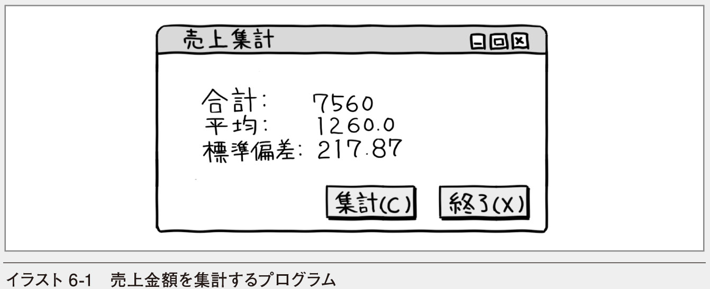
この章では配列を利用する方法を学び、多くのデータを効率よく取り扱うための基礎を身に付けます。繰り返し処理を使って配列を処理すれば、配列のすべての要素を一度に処理できます。この章の最後では配列に入れられた売上金額をもとに、合計や平均値、標準偏差を求めるプログラムを作成します。
6.1 配列の考え方
変数とはデータを入れるための箱のようなものだとChapter3で説明しました。読者のみなさんはもはやそんなたとえ話をしなくても、「〜を入れておくための変数を宣言してください」といわれれば、Dimステートメントを使って、難なく変数の宣言ができると思います。例えば、成績を記憶しておくための変数であれば、Integer型で宣言すればいいでしょう。
Dim Score As Integerでは、成績を記憶しておくための変数を2つ利用するとすればどうでしょう。
Dim Score1 As IntegerDim Score2 As Integerこの程度なら何の問題もないでしょう。しかし、成績を記憶しておくための変数を100個利用するとすればどうでしょう。これまでの方法では宣言のためのステートメントが100個必要になります。しかも、変数名がそれぞれ異なるので、合計や平均などの計算をする場合にも変数名を個別に書かなくてはなりません。想像するだけでも気の遠くなる作業です。
しかし、配列を使えばこの問題は一挙に解決します。配列では複数の要素にすべて同じ名前が付けられます。したがって、宣言は1回だけで構いません。それぞれの要素はインデックスと呼ばれる値で区別されます（図6-1）。
例えば、Scoreの2番といえば、どの要素であるかが特定できます。上の例では、その値は76です。このようにすれば個別に変数名を付ける必要もなく、しかも、それぞれの要素を確実に区別して使えます。また、変数名が同じなので、同じ目的に使うということもよく分かります。
実際には、配列は値型の変数ではなく、参照型の変数なので、正確なイメージは図6-1とは異なります。しかし、とりあえずは同じ型の変数が同じ名前で複数個利用でき、それぞれの要素をインデックスで区別すると考えておいてください。一応、正確なイメージを図にすると図6-2のようになります。
配列の利点はまだまだあります。繰り返し処理と組み合わせて使えば「0番から何番まで処理をする」というコードが書けるので、要素が100個であろうが1,000個であろうが、ほんの数行で大量のデータが処理できます。例えば、100人の平均値を求めるのであれば、以下のような流れになるでしょう。
合計に0を代入する※iの値が0番から99番まで繰り返す 合計に成績のi番目の値を加算する※平均に、合計を100で割った値を代入する配列のインデックスは通常0から始まることに注意してください。したがって、要素が100個あるとすれば、最後の要素のインデックスは99になります。
Visual Basicでは、複数のインデックスを使った多次元配列も可能です。しかし、まずは基本的な配列の使い方をしっかり身に付けましょう。その後で、さらに高度な配列について見ていくこととします。
確認問題
1. 以下の文章のうち正しいものには○を、間違っているものには×を記入してください。
（ ） Visual Basicで大量のデータを取り扱うときには、それらのデータを記憶するための変数を個別に宣言する必要がある
（ ） 配列を使うと、1つの変数名でたくさんの変数が利用できる
（ ） 配列の各要素を区別するには、キーと呼ばれる値を使う
（ ） 配列と繰り返し処理を組み合わせると、大量のデータを簡潔なコードで処理できる
（ ） 配列のインデックスは通常1から始まる
6.2 配列の宣言と利用
ここでは、配列の宣言のしかたと、それぞれの要素の利用のしかたを見ていきます。配列を宣言するには、インデックスの最大値を指定します。また、それぞれの要素はインデックスを指定して利用します。インデックスとして変数を指定することもできます。
■配列を宣言する
配列の宣言にもDimステートメントを使います。宣言の方法はこれまでに見てきた変数の宣言とほとんど同じです。ただし、変数名の後に()を書き、()の中にインデックスの最大値を書きます。例えば、成績を記憶するための変数を10個、整数の配列として宣言するのであれば、以下のようにDimステートメントを書きます。
Dim Score(9) As Integer注意すべき点は、()の中に書く数字です。この値は配列の要素数ではなく、あくまでもインデックスの最大値です。インデックスは0から始まるので、10個の要素を利用するのであれば、インデックスの最大値には9と書きます。
この宣言により、要素数が10個の整数型の配列が利用できるようになりました（図6-3）。

では、一般的な書き方をまとめておきましょう（図6-4）。
データ型にはIntegerのほか、DoubleやStringなど、どのようなものでも指定できます。
Dim DiscountRate(2) As Double ●―――Double型のDiscountRateという配列を宣言する。インデックスの最大値が2なので要素数は3Dim Grade(3) As String ●―――String型のGradeという配列を宣言する。インデックスの最大値が3なので要素数は4配列にも変数のアクセスレベルが指定できるので、Dimの代わりにPublicやPrivateを指定することができます。
Private QuarterSales(3) As Long ●―――Privateを指定しているので、同じフォームやモジュールの中でだけ使える（ほかのモジュールからは利用できない）Public CustomerName(9) As String ●―――Publicを指定しているので、ほかのフォームなどからもアクセスできる■配列を利用する
MatrixTest1
宣言に続いて、配列の基本的な利用方法を見ておきましょう。配列の要素は通常の変数と同じように扱えるので、代入や演算にそのまま使えます。異なるのは()の中にインデックスを書いてどの要素かを指定することだけです。
①Score(0) = 95 ●―――Scoreの0番の要素に95を代入する i = 3②Score(i) = 80 ●―――Scoreのi番目に80を代入する（iの値が3なので、3番の要素に80が代入される）③Score(i+4) = 55 ●―――Scoreのi+4番の要素に55を代入する（iの値が3なので、7番の要素に55が代入される）④Score(5) = Score(3) ●―――Scoreの5番の要素にScoreの3番の要素の値を代入する⑤Score(10) = 100 ●―――Scoreの10番の要素はないので、エラーになる上の例を見ても分かるように、インデックスには変数や式も指定できます。なお、インデックスの値が存在しない要素を示している場合はエラーになります。処理を順に追いかけていくと図6-5のように値が代入されることが分かります。
変数の初期値は？
値が代入されていない要素には、初期値として数値型には0が、Boolean型にはFalseが、文字列型にはNothingと呼ばれる特別な値が入れられています。
ここで、配列を表す変数が参照型であることを思い出してください。以下のようなコードでは、配列の各要素の値がすべて代入されるのではなく、参照が代入されます（LIST6-1）。
6-1 配列を表す変数は参照型なので、参照が代入される
Dim Score(2) As IntegerDim ScoreSave () As IntegerScore(0) = 65Score(1) = 83Score(2) = 76ScoreSave = Score ●―――Scoreに入れられている配列の参照をScoreSaveに代入する図で表すと、図6-6のような感じになります。
配列の各要素の値がScoreSaveに代入されているわけでなく、参照が代入されているだけなので、Scoreという名前で参照される配列を変更すると、ScoreSaveで参照される配列も当然のことながら変更されています。上のコードに続いて、LIST6-2のコードを入力し、プログラムを実行してみると、そのことがよく分かります。
6-2 元の配列を変更する
Score(1) = 90Debug.WriteLine(ScoreSave(1))出力ウィンドウに表示される結果は90です。もし、各要素の値が代入されているのであれば、ScoreとScoreSaveは別のものなので、結果は83になるはずですが、そうはなりません（図6-7）。
配列が大きくなると、値をすべて代入するには処理時間がかかります。しかし、参照を代入するだけであれば、1回の代入だけで処理が終わります。参照型の変数にはそのようなメリットもあります。
■配列を初期化する
MatrixTest2
配列の要素は宣言時に初期化できます。初期値は変数の初期化と同じように「=」の後に書きます。ただし、配列には複数の要素があるので、全体を{}で囲み、各要素を「,」（カンマ）で区切ります。このとき、インデックスの最大値は指定できません。初期値の個数によって要素の数が決められます。
Dim DiscountRate() As Double = {0.1, 0.15, 0.2}Dim Grade() As String = {"不可", "可", "良", "優"}宣言時に配列を初期化する別の方法
以下のような書き方もできます。
Dim DiscountRate As Double()= {0.1, 0.15, 0.2}Dim DiscountRate As Double()= New Double(2) {0.1, 0.15, 0.2}2番目の例の場合、インデックスの最大値を書くことも、省略することもできます。
配列を利用すると、これまでSelect ... Caseステートメントを使って書いていたコードが簡単に書ける場合があります。例えば、月の和名を表示する例であれば、LIST6-3のように書けます。
6-3 月の和名を配列から求めるコード
Dim MonthName() As String = {"睦月", "如月", "弥生", "卯月", "皐月",⇒"水無月", "文月", "葉月", "長月", "神無月", "霜月", "師走", "不明"} Dim MonthNumber As Integer = Today.Month - 1 MessageBox.Show("今月は" & MonthName(MonthNumber) & "です")Today.Monthと書くと、現在の日付から月が取り出せます。月は1から始まるので、1を引いて配列のインデックスと合わせます。例えば、5月であれば4番の要素を取り出すことになります。
配列の宣言にはConstステートメントは使えない
月の和名を入れた配列は内容を変更することがないので、定数として宣言したいところですが、配列の場合Constステートメントを使うことができません。Dimの代わりにConstと書くとエラーになります。
■多次元配列を利用する
MatrixTest3
これまで見てきた配列は、0番から何番かまでの要素が順に並んだデータを表すのに便利です。しかし、データが表のような形に並んでいる場合には、インデックスを0から順に指定するよりも行と列を組み合わせて指定したほうが便利です（図6-8）。
この例では、（行, 列）という形式でそれぞれの要素を指定しています。このように、配列の要素を、行を表すインデックスと列を表すインデックスを使って表すこともできます。Integer型の配列であるとして、上の例をそのまま宣言してみましょう。
Dim DataMatrix(2, 3) As Integerインデックスの最大値は、それぞれ「,」（カンマ）で区切って指定します。このように宣言すると、3×4=12個の要素を持つInteger型の配列が宣言できたことになります。
配列で利用されるインデックスの数は次元と呼ばれ、Visual Basicでは32次元までの配列を利用できます。例えば、さきほどの例はインデックスを2つ使うので2次元の配列となります。また、次の例は3次元の配列になります。
Dim DataCube(2, 3, 4) As Doubleこの例であれば、奥行きが3個、高さが4個、幅が5個の立体のようなデータを想像するといいでしょう（図6-9）。
多次元の配列を利用する場合も考え方は1次元の場合と同じです。それぞれの要素はインデックスを使って指定します。もちろん、インデックスには変数や式も指定できます。いくつか例を見てみましょう。
①DataMatrix(1, 2) = 10 x = 2 y = 3②DataMatrix(x, y) = 15念のため図で示しておくと、図6-10のようになります。
■多次元配列を初期化する
MatrixTest4
多次元配列でも、配列の宣言と同時に初期値の設定ができます。この場合、最初の次元の並びの中に、次の次元の並びをそれぞれ{}で囲んで書きます。
Dim Matrix(, ) As Integer = {{1, 2, 3, 4}, {101, 102, 103, 104},⇒{30, 40, 50, 60}}インデックスの最大値が書かれていないので、(3,2)の配列なのか(2,3)の配列なのか迷ってしまうかもしれません。しかし、最初の次元がいちばん外側の{}にあたると考え、順を追って丁寧に見ていけば難しいことはありません。外側から考えるので、とりあえず内側の{}をX, Y, Zとおけば、要素が3つであることが分かります。したがって、最初の次元の要素は3つ。つまり、最初の次元のインデックスの最大値は2です。
次に内側を見ていきます。Xは{1,2,3,4}、Yは{101, 102, 103, 104}、Zは{30,40,50,60}にあたるわけですから、次の次元の要素は4つ。つまり、次の次元のインデックスの最大値は3となります。
したがって、この配列は（2,3）の配列だということが分かります。全体を図にすると図6-11のようなイメージになるでしょう。
■配列のサイズを変更する
MatrixTest5
配列のサイズは後から変更できるので、あらかじめ宣言していた配列のサイズよりもデータが多くなってしまった場合や、データが少ししかなく、無駄な領域を削除したい場合にも対処できます。配列のサイズを変更するには、ReDimステートメントを使います（LIST6-4）。
6-4 配列のサイズを変更する
Dim x() As Double = {0.5, 1.0 ,1.5}ReDim x(5) ●―――ReDimステートメントに配列名とインデックスの新しい最大値を指定するDebug.WriteLine(x(1).ToString("F1"))ただし、この場合は元の要素の値が失われてしまいます。したがって、出力ウィンドウには1.0ではなく0.0と表示されます。元の要素の値を保持したまま、配列のサイズを変更したいときには、Preserveというキーワードを付けます（LIST6-5）。
6-5 元のデータを保持したまま配列のサイズを変更する
Dim x() As Double = {0.5, 1.0 ,1.5}ReDim Preserve x(5) ●―――Preserveキーワードを付けて配列のサイズを変えるDebug.WriteLine(x(1).ToString("F1"))この場合、出力ウィンドウには1.0が表示されます。なお、配列のサイズを小さくした場合、切り詰められた要素は利用できなくなります。
確認問題
1. 左のステートメントと、その正しい説明を線で結んでください。
2. 以下のコードを実行したときに、右に記した説明の空欄を埋める値を答えてください。エラーになる場合は、エラーと答えてください。
Dim x() As Integer = {1, 2, 3, 4, 5} Dim y() As Integer Dim i As Integer Debug.WriteLine(x(4)) ●─── x(0) = x(1) + x(2) ●─── y = x i = 4 y(i) = 10 ●─── x(4) +=1 ●─── ReDim Preserve x(3) Debug.WriteLine(x(4)) ●───6.3 配列と繰り返し処理
配列の便利なところは、インデックスに変数や式を指定できるということです。変数の値や計算の結果によって利用する要素が決められるので、高度なデータの処理ができるようになります。とりわけ、繰り返し処理と組み合わせて利用すると、多くのデータを一度に処理できるので、その威力は2倍や3倍どころか、何百倍、何千倍にも発揮されます。
■配列の要素をすべて処理する
MatrixTest6
配列のインデックスは0から始まり、要素数-1で終わります。これらはFor ... Nextステートメントによる繰り返し処理の初期値と終了値とまったく同じなので、配列の要素をすべて処理したいときには、For ... Nextステートメントを使うと簡潔なコードが書けます。
例えば、会議室の空き状況を配列で管理するものとしましょう。会議室の数は10とし、とりあえずは空きであるか使用中であるかが区別できればいいので、データ型はBooleanとし、TrueかFalseで状態を表すものとします。配列の宣言は次のようになるでしょう。
Dim RoomStatus(9) As Boolean空きをFalse、使用中をTrueとしましょう。ただし、そのままではどちらが空きでどちらが使用中なのか分かりにくいので、定数を宣言しておきます。
Const VACANT As Boolean = False ' 空きConst OCCUPIED As Boolean = True ' 使用中For ... Nextステートメントを使って、RoomStatusのすべての要素にVACANTを代入すれば、会議室をすべて「空き」にできます（LIST6-6）。
6-6 For ... Nextステートメントを使って配列の要素をすべて初期化する
For i As Integer = 0 To 9 RoomStatus(i) = VACANTNextブール型変数の初期値はFalse
ブール型（Boolean型）変数の既定の値はFalseなので、このような初期化をしなくても最初からすべてが空きになっています。しかし、明示的にコードを書いておけば、どのような値に初期化されているのかがよく分かります。
会議室を利用したければ、必要に応じてインデックスを指定し、その要素にOCCUPIEDを代入します。例えば、3番の会議室を使いたければ、
RoomStatus(3) = OCCUPIEDとすればいいでしょう。
これだけで、もう会議室の空き状況を管理するプログラムの骨格ができます。この配列を使うと、さまざまな処理ができます。例えば、現在空いている会議室の数を数えてみましょう。やはりFor ... Nextステートメントが使えます（LIST6-7）。
6-7 空き会議室の数を数えるコード
Dim VacantCount As Integer = 0For i As Integer = 0 To 9 If RoomStatus(i) = VACANT Then VacantCount += 1 End IfNext■多次元配列の要素をすべて処理する
MatrixTest7
多次元配列にはインデックスが複数個あるので、繰り返し処理を入れ子にする必要があります。作業のシフト表のようなものを考えてみましょう。例えば、毎日点検すべき箇所が4箇所あるものとします。点検は毎日なので、1週間分の表を作るとすれば、日曜日から土曜日までの7日間の表になるはずです（図6-12）。
表の中に担当者の名前を入れるなら、String型の配列を宣言する必要があります。行数が4、列数が7の配列になるので、次のように宣言できます。
Dim ShiftTable(3, 6) As String初期設定として、すべての要素に""（長さ0の文字列）を入れるなら、図6-13のように、まず0行目にすべて""を代入し、次に1行目にすべて""を代入し......と進めていきます。
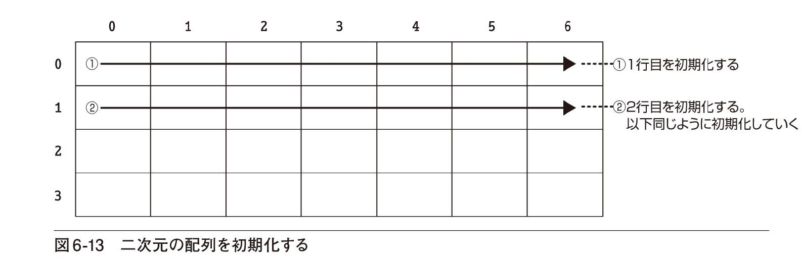
入れ子になった繰り返し処理をいきなり書くのは難しいので、1行ずつ個別に書いてみましょう。これなら、曜日を順に変えるという繰り返しなので、For ... Nextステートメントで書けるはずです。曜日を表すインデックスをidxDayとします。まず、1行目です。このときは、点検箇所を表すインデックスが0なので、以下のようになります（LIST6-8）。
6-8 1行目のすべての列を初期化する
For idxDay = 0 To 6 ShiftTable(0, idxDay) = ""Next2行目から4行目までも同様です（LIST6-9）。
6-9 2行目から4行目までのすべての列を初期化する
For idxDay = 0 To 6 ShiftTable(1, idxDay) = ""NextFor idxDay = 0 To 6 ShiftTable(2, idxDay) = ""NextFor idxDay = 0 To 6 ShiftTable(3, idxDay) = "" ●―――この部分以外はすべて同じ。ここだけが0〜3に変わるので変数にするNext これで、すべての要素を初期化できます。これらのコードを見てみると、点検箇所を表すインデックス以外はすべて同じだということが分かります。点検箇所を表すインデックスをidxPosとすると、4つのコードすべてが以下のように書けます（LIST6-10）。
6-10 行を表すインデックスを変数にする
For idxDay = 0 To 6 ShiftTable(idxPos, idxDay) = ""NextidxPosの値が0から3まで変わればいいのですから、このコード全体をFor ... Nextステートメントで囲みましょう（LIST6-11）。
6-11 For ... Nextステートメントを入れ子にしてすべての行と列を初期化する
For idxPos = 0 To 3 For idxDay = 0 To 6 ShiftTable(idxPos, idxDay) = "" NextNextこれで、繰り返し処理を入れ子にできました。これは、図6-14のようなカウンターと同じ動きをします。
idxPosの値は、最初は0です。まずidxDayが0から6まで変わります。idxDayが1周すると、idxPosの値が1になり、またidxDayが0から6まで変わります。このようにして、最後まで（idxPosの値が3、idxDayの値が6まで）処理を進めるわけです。
多次元の繰り返し処理も、慣れてくればいきなりコードとして書けるようになりますが、最初のうちは、こういうカウンターを想像すればいいでしょう。インデックスの順序とカウンターの桁の順序とは同じで、左のほうのインデックスが外側の繰り返しに対応します。
なお、ここで示した会議室の例や作業のシフト表の例は、あくまで配列の機能を理解するためのものです。実際には予約状況や割り当てを保存しておかないと意味がないので、配列ではなく、9章のファイルや10章のデータベースを利用するのが普通です。
確認問題
1. 説明をもとに空欄を埋めてコードを完成させてください。
（1） Const FREE As Integer = 0 ' 空き Const RESERVED As Integer = 1 ' 予約済み Const VIPONLY As Integer = 2 ' VIPのみ利用可 Dim SeatNumber(（ ）) As Integer ●───座席の状態を表す配列を宣言する。座席数は100とする ' すべてを空席とする。ただし10で割り切れる番号の座席はVIP専用とする （ ） idx As Integer = 0 To （ ） ●───すべての座席について処理する SeatNumber(idx) = （ ） ●───座席を空席とする （ ） idx （ ） 10 = 0 Then SeatNumber(idx) = （ ） ●───インデックスが10で割り切れる場合はVIPのみ利用可とする Next （2） Const HIT As Boolean = True ' 当たり Const MISS As Boolean = False ' はずれ Dim r As Random = New Random() ' 乱数オブジェクトを作成する Dim x(（ ）) As （ ） ' 要素数100個のBoolean型の配列を作る （ ） idx As Integer = 0 To （ ） ' 最初はすべてを「はずれ」にしておく x(（ ）) = MISS Next （ ） i As Integer = 0 To （ ） ●───10個だけ「当たり」を作る x(r.Next(100)) = （ ） ●───100未満の乱数を発生させ、それをインデックスに持つ要素を当たりとする（同じ値が出る可能性があるが重複してもよいものとする） Next（3） Dim x(9,9) As Integer ●─── For i As Integer = 0 To 9 ●─── For （ ） As Integer = 0 To 9 ●─── x(（ ）, j) = i * j ●─── Next j Next i6.4 プログラミングにチャレンジ
実用的なプログラムを作成するためには、配列や繰り返し処理の利用は必須といっても過言ではありません。ここでは、配列に入れられた売上金額をもとに、合計や平均値、標準偏差といった簡単な統計値を求めるプログラムを考えてみます。これらの値を求めるには、すべての値を加算する必要があるので、繰り返し処理を使います。
■売上を集計するプログラム
CalcSales
この章では、スーパーマーケットの売上金額をもとに、簡単な統計値を求めるプログラムを考えてみます。レジの台数は6台として、各レジの売上金額は配列に入れられているものとしましょう。それらの合計、平均値、標準偏差を求めるプログラムを作成してみましょう。標準偏差とはデータの散らばり具合を表す値です。
標準偏差の求め方はそれほど難しくありませんが、最初に数式をお見せするとアレルギーを起こしてしまう人もいるかもしれないので、平均値を求めるところから始めましょう。平均値を求めるには、その前に合計を求める必要があります。合計をデータの個数で割った値が平均値です。
プログラムの完成イメージはイラスト6-2のような感じです。
次に、新しいプロジェクトを作成し、完成イメージにそってフォームをデザインしていきましょう。プロジェクト名はCalcSalesとしておきます。
■フォームのデザイン
このプログラムの処理は、配列を使った内部の処理がほとんどなので、目に見えるものは計算結果と計算を始めるためのボタンだけです。したがって、LabelコントロールとButtonコントロールを配置すればフォームのデザインは終わりです。画面6-1のようにコントロールを配置し、表6-1にそってプロパティの値を設定していってください。
■イベントハンドラーの記述
このプログラムの目的、つまり求めたいものは合計と平均値と標準偏差です。したがって、まずそれらの変数を宣言します。合計はInteger型で構いませんが、平均値と標準偏差は小数点以下の値があるはずなので、Double型にしましょう。合計金額には初期値として0を入れておきます。
次に、それらの値を求めるために利用できる変数を宣言します。利用できるのは各レジの売上金額なので、Integer型の配列として宣言すればいいでしょう。売上金額には初期値として各月の金額をあらかじめ入れておくものとします（LIST6-12）。
6-12 変数を宣言し、配列を初期化する
Dim Sum As Integer = 0Dim Average As Double, SD As DoubleDim Sales() As Integer = {1230, 890, 1450, 1520, 1380, 1090}ListBoxコントロールやDataGridViewコントロールにデータを表示してもよい
売上金額の元のデータはファイルに保存されているのが普通です。また、このプログラムは合計を求めるという目的に限定されたものなので、毎月の値は表示していませんが、毎月の値を表示するならListBoxコントロールやDataGridViewコントロールを使います。
■Buttonコントロールのイベントハンドラー
Buttonコントロールは2つあり、btnCalcが合計や平均値などを計算する求めるためのボタン、btnExitがプログラムを終了させるためのボタンです。
平均値を求めるためには、まず合計を求める必要がありますが、その方法は簡単です。レジの売上金額を順に合計に加算していくだけです。各レジの売上金額は配列になっているので、繰り返し処理を使ってインデックスの値を順に変えていくだけで簡単に合計が求められます。
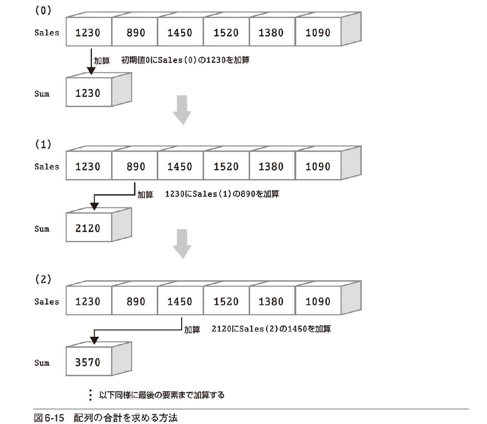
処理の流れを日本語の擬似コードで書いてみましょう。
Sumに0を入れる※iが0から5まで繰り返す Sumに売上のi番目を加算する※繰り返し処理が終了した時点でSumには合計が入っています。その値を6で割れば平均値が求められます。Labelコントロールにこれらの値を表示すればプログラムは半分完成です。btnCalcのClickイベントハンドラーの名前をDoCalcとして、そこまでを書いてみましょう（LIST6-13）。
6-13 売上の合計と平均値を求める
Private Sub DoCalc(sender As Object, e As EventArgs) HandlesbtnCalc.Click Dim Sum As Integer = 0 Dim Average, SD As Double Dim Sales() As Integer = {1230, 890, 1450, 1520, 1380, 1090} For i As Integer = 0 To UBound(Sales) ●―――0から配列のインデックスの最大値まで Sum += Sales(i) ●―――SumにSales(i)を加算していく Next Average = Sum / Sales.Length ●―――Sumを配列のサイズで割る lblSum.Text = Sum.ToString() lblAverage.Text = Average.ToString("F1") End SubUBound関数を使うと配列のインデックスの最大値が求められます。これを利用して「0から5まで繰り返す」と書く代わりに「0から配列のインデックスの最大値まで繰り返す」という書き方にしています。このような書き方にすれば、配列のインデックスがいくつであってもすべての要素を処理できるコードになります。
また、配列名.Lengthというプロパティを使うと配列の要素数が求められます。ここでは、平均値を求めるときに6で割る代わりにSales.Lengthで割っています。この場合も、配列の要素がいくつであっても、要素の個数を使った計算ができます。
平均値は小数点以下1位まで表示することとします。そのため、ToStringメソッドに"F1"という書式を指定しています（P.161参照）。
では、続いて標準偏差の求め方です。標準偏差は以下の式で求められます。
ちょっと見たところ難しそうですが、1つずつステップを踏んでいけば難しくはありません。上の式の中で、各データの値とデータの個数、平均値はすでに分かっています。
まずやるべきことは、各データから平均値を引くことです。次にそれを2乗します。2乗といっても特別な計算ではありません。ただ、同じ値を2回掛けるだけです。ただし、Visual Basicでは、べき乗を求める「＾」演算子を使ったほうが簡単に表せます。
続いて、それらの値の総合計を求めます。あとは総合計をデータの個数で割って※1、正の平方根を求めれば、その値が標準偏差になります（図6-16）。
各データから平均値を引き、2乗するには以下のような式を書きます。
(Sales(i) - Average) ^ 2この総合計を求めるには、iの値を0から5まで変えながら繰り返し処理をします。総合計を求めるための変数がSSE※2という名前であれば、コードはLIST6-14のようになります。
6-14 平均値と各データの差の2乗を合計する
Dim SSE As Double = 0For i = 0 To UBound(Sales) ●―――0から配列のインデックスの最大値まで SSE += (Sales(i) - Average) ^ 2 ●―――(売上 - 平均)の2乗をSSEに加算していくNext繰り返しが終了した時点で、SSEには（各データ−平均値）^2の総合計が入っています。これをデータの個数で割り、平方根を求めれば標準偏差になります。平方根はMath.Sqrt()というメソッドを使って求めます。()内に元の値を指定すれば、その正の平方根が求められます。例えばMath.Sqrt(2)の値は1.41421356...です。コードの続きは次のようになります（LIST6-15）。
6-15 標準偏差を求める
SD = Math.Sqrt(SSE / Sales.Length) ●―――SSEをデータの個数で割り、正の平方根を求めるlblSD.Text = SD.ToString("F2")コードが細切れになったので、イベントハンドラー全体を見ておきましょう。以下が完成したコードです。少し長いですが、間違いのないように入力してください（LIST6-16）。
6-16 売上の合計、平均値、標準偏差を求めるコード
Private Sub DoCalc(sender As Object, e As EventArgs) Handles ⇒btnCalc.Click Dim Sum As Integer = 0 Dim Average As Double, SD As Double Dim Sales() As Integer = {1230, 890, 1450, 1520, 1380, 1090} For i As Integer = 0 To UBound(Sales) Sum += Sales(i) Next Average = Sum / Sales.Length Dim SSE As Double = 0 For i As Integer = 0 To UBound(Sales) SSE += (Sales(i) - Average) ^ 2 Next SD = Math.Sqrt(SSE / Sales.Length) lblSum.Text = Sum.ToString() lblAverage.Text = Average.ToString("F1") lblSD.Text = SD.ToString("F2") End Sub［終了（X）］ボタン（btnExit）のイベントハンドラーを作成し、コードを入力すればプログラムの完成です（LIST6-17）。
6-17 プログラムを終了させるコード
Private Sub ExitProc(sender As Object, e As EventArgs) Handles ⇒btnExit.Click Application.Exit() End Sub※2 平均値と各データの差を誤差あるいは残差と呼び、その2乗の総合計を残差平方和と呼びます。残差平方和は英語で表記するとSum of Squared Errorなので、SSEと略されることがあります。
■プログラムを実行する
コードがすべて入力できたら、［開始］ボタン（）をクリックしてプログラムを実行します。［集計（C）］ボタンをクリックすると、売上の合計、平均値、標準偏差が表示されます（画面6-2）。
❶ ［集計（C）］ボタンをクリックする
② 合計、平均値、標準偏差が表示される
このプログラムでは、配列とFor ... Nextステートメントを組み合わせて使いました。まとめの後の練習問題に取り組み、実践的な知識を身に付けましょう。
Chapter6のまとめ
● 配列を利用すると同じ目的に使う多くのデータを1つの変数名で取り扱えます
● 配列の各要素はインデックスで区別されます
● 配列を表す変数は参照型の変数です
● インデックスには変数も指定できるので、インデックスの値を変えながら繰り返し処理を実行すれば配列の要素がすべて処理できます
● 複数のインデックスを利用する多次元の配列も使えます
● 配列は宣言時に初期化できます
練習問題
CalcSales2, CalcSales3, CalcSales4
［A］サンプルプログラムを変更し、各レジの売上金額をListBoxコントロールにも表示するプログラムを作成してみてください。プロジェクト名はCalcSales2とします。実行結果が以下の画面のようになればいいでしょう。
ヒント ListBoxコントロールに項目を追加するには、ListBoxコントロールのItems.Addメソッドを使います。
［B］サンプルプログラムを変更し、各レジの偏差値を求めるプログラムを作成してみてください。偏差値は、
（それぞれの値－平均値）／標準偏差×10＋50
で求められます。プロジェクト名はCalcSales3とします。実行結果が以下の画面のようになればいいでしょう。CalcSales2では売上金額をListBoxコントロールに表示していますが、このプログラムでは偏差値を表示することに注意してください。
［C］ サンプルプログラムの方法だと平均値を求めるためにすべての値を合計するという繰り返し処理が必要になり、次に各データから平均値を引くためにもう一度繰り返し処理をする必要があります。
本文で紹介した標準偏差の式を変形し、次の式のようにすると、繰り返し処理を1回で済ませることができます。
この式を参考にして、サンプルプログラムを変更し、1回の繰り返し処理で標準偏差を求めてみてください。プロジェクト名はCalcSales4とします。実行結果はサンプルプログラムと同じものになります。
Chapter7
プロシージャを使ってコードをまとめる
膨大な数のプログラムを効率よく開発するためには、一度作ったものは再利用するのが鉄則です。身近なレベルでいえば、よく使われる処理をプロシージャにまとめるのがその第一歩です。プログラムの中には、いくつかの場所で使われる同じ処理や、どのようなプログラムでも使われる処理があります。それらの処理に名前を付けたものがプロシージャです。プロシージャを一度作っておけば、同じコードをふたたび書く必要がなくなり、名前といくつかのデータを指定するだけで決まった処理ができるようになります。
7.1 SubプロシージャとFunctionプロシージャ
Subプロシージャの利用例と特徴／Functionプロシージャの利用例と特徴／プロシージャを作成するにあたって決めておくこと
7.2 Subプロシージャの作成と利用
Subプロシージャを作成する／Subプロシージャを利用する／Subプロシージャを途中で抜ける
7.3 Functionプロシージャの作成と利用
Functionプロシージャを作成する／Functionプロシージャを利用する
7.4 引数の定義と渡し方
値渡しと参照渡し／さまざまな方法で引数を定義する
7.5 プログラミングにチャレンジ
色見本を表示するプログラム／フォームのデザイン／プログラムの設定値を保存する／Subプロシージャを作成する／イベントハンドラーの記述／プログラムを実行する
これから学ぶこと
● SubプロシージャとFunctionプロシージャの違いを学びます
● Subプロシージャの作り方と利用のしかたを学びます
● Functionプロシージャの作り方と利用のしかたを学びます
● 引数の定義のしかたや引数の渡し方について学びます
● この章で学んだことがらを利用してプログラムを作成します

この章ではSubプロシージャやFunctionプロシージャの作り方や使い方を学びます。共通に使われる処理をプロシージャとしてまとめることは、大規模なプログラムを作成するための基本です。この章の最後では、色見本と16進数のカラーコードを表示するプロシージャを作成し、赤、緑、青の度合いを表すTrackBarコントロールを操作したときに、そのプロシージャを呼び出すプログラムを作成します。
7.1 SubプロシージャとFunctionプロシージャ
プロシージャを日本語にすると「手続き」です。手続きというと、所定の用紙に必要事項を書いて......という「申請」のようなイメージを抱く人がいるかもしれませんが、そうではなく、一定の手順に従って進められるひとまとまりの仕事という意味です。Visual Basicのプロシージャも、よく使われる処理に名前を付けておき、いつでも呼び出せるようにしたものです。プロシージャにはSubプロシージャと呼ばれるものやFunctionプロシージャと呼ばれるものがあります。
といっても、プロシージャはここではじめて登場するものではありません。これまでに私たちはプロシージャを何度も使っています。例えば、イベントハンドラーはすべてSubプロシージャです。また、Debug.WriteLineメソッドの正体もSubプロシージャです。
一方、Chapter5で使ったInput関数はFunctionプロシージャです。整数を文字列にするためのToStringメソッドや、平方根を求めるためのMath.Sqrtメソッドの正体も、実はFunctionプロシージャなのです。
つまり、これまではすでに用意されたプロシージャを意識せずに使ってきたわけです。しかし、これからやることは自分でプロシージャを作ることです。ここでは、そのための準備として、これまでに使ったSubプロシージャやFunctionプロシージャを振り返って、特徴を確認しておきましょう。
■Subプロシージャの利用例と特徴
Debug.WriteLineメソッドを例にSubプロシージャの特徴を見てみましょう。Debug.WriteLineメソッドの書き方を図にすると図7-1のようになります。動作のイメージはイラスト7-2のような感じです。

Debugというのはクラス名ですが、クラスについてはChapter8で解説するので、この段階ではあまり気にしないでください。この図を見るといくつかの特徴に気が付きます。
・ Subプロシージャには名前がある。この例であればWriteLineという名前になっている
・ Subプロシージャ名の後には()を書き、そのプロシージャで使うデータを引数として指定する
・ 何らかの機能を実行するが、結果として値が返されることはない
このように、Subプロシージャは引数（ひきすう）として与えられたデータをもとに、決められた仕事をします。
■Functionプロシージャの利用例と特徴
続いて、Math.Sqrtメソッドを例にFunctionプロシージャの特徴を見てみます。Math.Sqrtメソッドの書き方を図にすると図7-2のようになります。動作のイメージはイラスト7-3のような感じです。
Mathもクラス名ですが、この話も後回しにしましょう。Functionプロシージャの特徴を確認しておきます。
■Functionプロシージャには名前がある。この例であればSqrtという名前になっている
■Functionプロシージャ名の後には( )を書き、そのプロシージャで使うデータを引数として指定する
■何らかの機能を実行し、結果として値を返す
Functionプロシージャが返す値は戻り値または返り値と呼ばれます。Functionプロシージャは引数として与えられたデータをもとに、決められた仕事をして、その結果を戻り値として返すというわけです。戻り値は、ほかの変数に代入したり、Ifステートメントの条件として指定できます。
■プロシージャを作成するにあたって決めておくこと
SubプロシージャとFunctionプロシージャの違いは、値を返すか返さないかの違いだけです。いずれの場合でもプロシージャには名前が付いており、必要に応じて引数を指定します。したがって、SubプロシージャやFunctionプロシージャを自分で作るには、以下のような内容を決めておく必要があります。
■プロシージャ名は何か
■引数として受け取るデータは何か
■Functionプロシージャの場合は、戻り値として返すデータは何か
この3つのポイントを頭に入れたうえで、次の節から、実際の書き方と利用のしかたを見ていきましょう。
確認問題
1. 以下の文章のうち正しいものには○を、間違っているものには×を記入してください。
（ ） プロシージャを作成すれば、一連の処理をまとめておくことができる
（ ） プロシージャを呼び出すためには、プロシージャの内容を毎回書く必要がある
（ ） プロシージャにはSubプロシージャやFunctionプロシージャがある
（ ） プロシージャはプロシージャ名や引数を指定するだけで呼び出せる
（ ） Subプロシージャを利用すれば処理結果を戻り値として返せる
7.2 Subプロシージャの作成と利用
Subプロシージャを作成しておくと、複数の箇所で使われる共通の処理を一箇所にまとめて書いておくことができます。ここでは、Subプロシージャの書き方や引数の渡し方などを説明します。
■Subプロシージャを作成する
SubProcTest1
Subプロシージャの例として、PictureBoxコントロールの背景色を変えるコードを作ってみましょう。PictureBoxコントロールははじめて使うコントロールなので、フォームに配置した様子を確認しておきます（画面7-1）。新しいプロジェクトを作成して、ぜひ実際に試してみてください。なお、背景色はBackColorプロパティに設定します。
ここで作るSubプロシージャには、赤、緑、青の色の強さを0〜255の値で渡すことにします。これらの値をもとに色を表すデータを作り、それをPictureBoxコントロールのBackColorプロパティに設定しようというわけです。
Subプロシージャを作るためには、前節で見たようにプロシージャ名と引数を決めておく必要があります。
■プロシージャ名はSetBackColor
■引数は、赤、緑、青の値。引数の名前はRed, Green, Blueで、いずれもInteger型とする
これらが決まれば、Subプロシージャが作成できます。処理の中身はまだ書けませんが、必要最低限の骨格は作成できます（LIST7-1）。
7-1 プロシージャ名と引数を書きSubプロシージャの骨格を作る
Sub SetBackColor(Red As Integer, Green As Integer, Blue As Integer)End Subこのコードはイベントハンドラーとは異なり、自動的に作られるわけではないので、自分でコードウィンドウに入力する必要があります。コードウィンドウを表示するには、［ソリューションエクスプローラー］でフォームを選択し、［コードの表示］ボタンをクリックします（画面7-2）。
Subプロシージャはほかのプロシージャの内側ではなく、外側に書くことに注意してください（画面7-3）。
実際にSub...の行を入力すると、キーを押して改行した時点でEnd Subが自動的に入力されます。次に一般的な書き方をまとめた後、処理の中身も見ていきましょう（図7-3）。
SubプロシージャでもPrivateやPublicなどのアクセス指定子を付けるとアクセスレベルが指定できます。Privateを指定するとそのフォームの中でだけ使えるプロシージャになり、Publicを指定するとほかのフォームなどからも利用できるプロシージャになります。特に何も指定しなければ、Publicが指定されたものと見なされます。
アクセスレベルもスコープと同様、できるだけ小さくしておいたほうが間違いの危険が減ります。ほかのフォームからSetBackColorプロシージャを呼び出さないのであれば、Privateを指定しておいたほうがいいでしょう。
引数が不要なSubプロシージャを作るには？
特にデータを与えずに何らかの処理をしたい場合には、引数のないSubプロシージャを作ることもできます。その場合には引数のリストを書く必要はありません。ただし()は省略できません。
では、SetBackColorプロシージャのアクセスレベルをPrivateとし、プロシージャの中身を書きましょう。PictureBoxコントロールの名前をPictureBox1とします（LIST7-2）。
7-2 PictureBoxコントロールの背景色を変えるSubプロシージャを書く
Private Sub SetBackColor(Red As Integer, Green As Integer,Blue As Integer) PictureBox1.BackColor = Color.FromArgb(Red, Green, Blue) End SubColor.FromArgbは、透明度、赤、緑、青の度合いをもとに、色を表すデータを作るメソッドです。ここでは透明度を省略していますが、その場合は不透明が指定されたものと見なされます。赤、緑、青の度合いは引数として渡されたRed、Green、Blueの値をそのまま使います。これでSetBackColorという名前のSubプロシージャが作成できました。SetBackColorプロシージャを呼び出す方法や、引数がどのように渡されるかは次の項で見ることにしましょう。
■Subプロシージャを利用する
SubProcTest1, SubProcTest2
Subプロシージャは、名前と引数を指定するだけで簡単に呼び出せます。例えば、フォームをはじめて表示する直前にPictureBox1の背景色を赤にしたければ、FormのLoadイベントハンドラーに、SetBackColorプロシージャを呼び出すコードを書きます。以下のコードの骨格部分は自動的に入力できますね。フォームを選択し、［プロパティ］ウィンドウで［イベント］ボタン（）をクリックして［Load］の欄にInitProcというイベントハンドラー名を入力します。そうすれば、SetBackColor(255,0,0）という行を書くだけで済みます。もちろん、コードをすべて自分で入力しても構いません（LIST7-3）。
7-3 SetBackColorプロシージャを呼び出す
Private Sub InitProc(sender As Object, e As EventArgs) HandlesMyBase.Load SetBackColor(255, 0, 0) End Subこのとき、コードは図7-4のような流れで実行されます。引数は順序で対応しているので、最初に指定した引数がRedに、2番目に指定した引数がGreenに、3番目に指定した引数がBlueに渡されます。

プログラムを実行してみると、PictureBox1の背景色が赤になることが分かります。
Subプロシージャはほかの場所からいつでも呼び出すことができます。例えば、それぞれの色の度合いを表すTrackBarコントロールがあるものとします（画面7-4）。
これらのTrackBarコントロールのスクロールボックスが動かされたときにSetBackColorプロシージャを呼び出したければ、LIST7-4のようなコードを書くといいでしょう。さきほどのフォームにTrackBarコントロールを3つ追加し、trbRed、trbGreen、trbBlueという名前を付けて、以下のコードを入力してみましょう。trbRedのScrollイベントハンドラーを1つ作った後、Handlesの後ろに「コントロール名.イベント名」をカンマで区切って追加すると効率よくコードが入力できます。イベントハンドラーの名前はChangeColorとします。
7-4 TrackBarコントロールの値が変わったときにSetBackColorプロシージャを呼び出す
Private Sub ChangeColor(sender As Object, e As EventArgs)Handles trbRed.Scroll, trbGreen.Scroll, trbBlue.Scroll SetBackColor(trbRed.Value, trbGreen.Value, trbBlue.Value) End SubTrackBarコントロールのスクロールボックスを動かすと、Scrollイベントが発生するので、ここで示したイベントハンドラーが実行されます。イベントハンドラーの中ではSetBackColorプロシージャを呼び出し、それぞれのTrackBarコントロールの値を引数として渡します。これでPictureBoxコントロールの背景色が変わります。プログラムを実行して、試してみてください。
SubプロシージャからさらにSubプロシージャを呼び出せる
このChangeColorというイベントハンドラーも、トラックバーの値を変えたときに呼び出されているSubプロシージャであることは、いうまでもありません。Subプロシージャの中から、ほかのSubプロシージャを呼び出すこともできるというわけです。
■Subプロシージャを途中で抜ける
SubProcTest3
SetBackColorプロシージャには、引数として整数を3つ指定します。しかし、その値は0〜255でなければなりません。例えば、500といった値を指定するとプログラムの実行時にエラーとなってしまいます。このようなエラーに対処するには、いくつかの方法があります。1つは、適切な値が指定されていない場合には何もせずにプロシージャを抜けるという方法です。
Subプロシージャを抜けるにはExit Subステートメントを書きます。SetBackColorプロシージャを修正してみましょう（LIST7-5）。
7-5 色の値が0未満であるか255より大きければプロシージャを抜ける
Sub SetBackColor(Red As Integer, Green As Integer, Blue As ⇒Integer) If Red < 0 OrElse Red > 255 Then Exit Sub End If If Green < 0 OrElse Green > 255 Then Exit Sub End If If Blue < 0 OrElse Blue > 255 Then Exit Sub End If PictureBox1.BackColor = Color.FromArgb(Red, Green, Blue) End Sub0未満の値であれば0が指定されたものと見なし、255を超えた場合は255が指定されたものと見なすという対処法もあります。この場合はプロシージャを途中で抜ける必要はありません（LIST7-6）。
7-6 色の値が0未満であれば0と見なし、255より大きければ255と見なす
Sub SetBackColor(Red As Integer, Green As Integer, Blue As ⇒Integer) Red = Math.Max(0, Math.Min(255, Red)) Green = Math.Max(0, Math.Min(255, Green)) Blue = Math.Max(0, Math.Min(255, Blue)) PictureBox1.BackColor = Color.FromArgb(Red, Green, Blue) End Sub値を適切な範囲内に収めるためにIfステートメントで場合分けをしてもいいのですが、Math.Minメソッドを使って255とRedの小さいほうを求め、Math.Maxメソッドを使って、その値と0の大きいほうを求めるという方法も使えます。例えば、Redの値が500だと、Math.Min(255,Red)の値は255になります。Math.Max(0, Math.Min(255,Red))なら、0と255の大きいほうなので255が返されます。したがって、Redの値が500の場合はRedに255が代入されることになります。GreenやBlueについても同様です。
確認問題
1. 左のキーワードと、その正しい説明を線で結んでください。
2. 右側の説明に従って、コードを完成させてください。
（1） Dim x As Double = 3.14 （ ） (x) ●─── : （ ） （ ） Multiply2(v As Double) ●─── v *= 2 Debug.WriteLine(y) End （ ） ●───（2） Dim BaseNumber As String = "2" Dim Suffix As String = "nd" MakeOrdinal(BaseNumber, Suffix) ●─── : （ ） （ ） MakeOrdinal(bn As （ ）, suf As （ ）) ●─── Dim Result As String Result = bn & suf Debug.WriteLine(Result) （ ） （ ） ●───7.3 Functionプロシージャの作成と利用
Functionプロシージャは関数とも呼ばれ、よく使われる計算を簡単に実行するために使います。Functionプロシージャに引数を指定するだけで計算の結果が戻り値として返されるので、さまざまな場所で同じような計算をするときに便利です。引数の定義方法はSubプロシージャと同じなので、ここでは戻り値の指定方法を中心に説明します。
■Functionプロシージャを作成する
FunctionTest1
Functionプロシージャの例として、曜日を整数で指定すると、「Sun」「Mon」などの曜日の名前が求められるようなコードを作ってみましょう※1。Functionプロシージャを作るためには、プロシージャ名と引数のほか、戻り値を決めておく必要があります。
■プロシージャ名はGetDayOfWeek
■引数は曜日を表す整数。引数の名前をDowとする。データ型はInteger型で、0を日曜日とする
■戻り値は曜日の名前を表す文字列なのでString型とする
これらが決まれば、Functionプロシージャの骨格が書けるようになります（LIST7-7）。
7-7 プロシージャ名と引数、戻り値のデータ型を書きFunctionプロシージャの骨格を作る
Function GetDayOfWeek(Dow As Integer) As StringEnd FunctionFunctionプロシージャも自動的に作成されるわけではないので、自分でコードウィンドウに入力する必要があります。ほかのプロシージャの内側ではなく、外側に書くということに注意してください（画面7-5）。
実際にFunction...の行を入力するとキーを押して改行した時点でEnd Functionが自動的に入力されます。Subプロシージャと異なり、Functionステートメントの最後に戻り値のデータ型を書いておくことに注意が必要です。実際の戻り値はプロシージャの中で指定します。
戻り値の指定方法には2通りあります。1つはReturnステートメントに戻り値を指定する方法で、もう1つはプロシージャ名に値を代入する方法です。例えば、String型の変数DowNameの値を戻り値として返すなら、
Return DowNameと書くか、
GetDayOfWeek = DowNameと書きます。Returnステートメントの場合は、その時点でプロシージャを抜け、呼び出し元の次の処理に移ります。一方、プロシージャ名に代入した場合は、End Functionまでコードが実行されたところでプロシージャを抜け、呼び出し元の次の処理に移ります。
では、一般的な書き方をまとめておきましょう。その後、処理の中身を見ていきます（図7-5）。
Functionプロシージャでも、PrivateやPublicなどのアクセス指定子を付けると、アクセスレベルが指定できます。Privateを指定すると、そのフォームの中でだけ使えるプロシージャになり、Publicを指定すると、ほかのフォームなどからも利用できるプロシージャになります。特に何も指定しなければ、Publicが指定されたものと見なされます。
アクセスレベルもスコープと同様、できるだけ小さくしておいたほうが間違いの危険が減ります。ほかのフォームからGetDayOfWeekプロシージャを呼び出さないのであれば、Privateを指定しておいたほうがいいでしょう。
引数が不要なFunctionプロシージャを作るには
特にデータを与えずに何らかの処理をしたい場合には、引数のないFunctionプロシージャを作ることもできます。その場合には引数のリストを書く必要はありません。ただし、()を省略することはできません。また、戻り値の型と戻り値の指定は省略できません。
Functionプロシージャ内での処理は、引数の値をもとに曜日の文字列を求め、それを戻り値として返すだけです。曜日の文字列を求めるにはSelect Caseによる条件分岐を使っても構いませんが、引数の値が0なら「Sun」を、1なら「Mon」を......という具合に文字列を返せばいいので、配列を使うとコードが簡単になります。用意しておく配列はString型の配列で、初期値として最初の要素に「Sun」、次の要素に「Mon」を......という具合に設定しておきます。このような配列ができれば、配列のインデックスに引数の値を指定するだけで曜日の文字列が求められます（LIST7-8）。
7-8 曜日を表す整数から曜日の文字列を求めるFunctionプロシージャを書く（Returnステートメントに戻り値を指定する）
Private Function GetDayOfWeek(Dow As Integer) As String Dim DowName() As String = {"Sun", "Mon", "Tue", "Wed", ⇒"Thu", "Fri", "Sat"} Return DowName(Dow) ●─── 配列DowNameの、引数Dowで指定された要素を返す End FunctionReturnステートメントを使わずにプロシージャ名に戻り値を代入する書き方であれば、LIST7-9のようなコードになります。いずれの書き方でも同じ結果になります。
7-9 曜日を表す整数から曜日の文字列を求めるFunctionプロシージャを書く（プロシージャ名に値を代入して戻り値を指定する）
Private Function GetDayOfWeek(Dow As Integer) As String Dim DowName() As String = {"Sun", "Mon", "Tue", "Wed", ⇒"Thu", "Fri", "Sat"} GetDayOfWeek = DowName(Dow) ●───配列DowNameの、引数Dowで指定された要素を関数の戻り値として指定する End Function※1 単に曜日を求めるだけなら、Functionプロシージャを作らなくても簡単にできる方法があるのですが、ここではFunctionプロシージャの書き方を理解するために、あえて自分で作ってみます。簡単に曜日を求める方法についてはP.255の最後を参照してください。
■Functionプロシージャを利用する
FunctionTest1
Functionプロシージャも、名前と引数を指定するだけで簡単に呼び出せます。例えば、Button1をクリックしたときに曜日を表示したいのであれば、Button1のClickイベントハンドラーに、GetDayOfWeekプロシージャを呼び出すコードを書きます（LIST7-10）。今日の曜日はToday.DayOfWeekプロパティで求めることができます。この値は0が日曜日、1が月曜日......といった値になっているので、GetDayOfWeek関数に渡すには好都合です。
7-10 GetDayOfWeekプロシージャを呼び出す
Private Sub ShowDow(sender As Object, e As EventArgs) Handles ⇒Button1.Click Dim Message As String Dim DowNumber As Integer DowNumber = Today.DayOfWeek ●―――今日の曜日を表す数値を求める Message = GetDayOfWeek(DowNumber) ●―――曜日の名前を求めるGetDayOfWeekプロシージャを呼び出す MessageBox.Show(Message) End SubGetDayOfWeek関数から返される戻り値はMessageという変数に代入され、MessageBox.Showメソッドにより、その日の曜日がメッセージボックスに表示されます。
処理の流れとデータの流れを図7-6で確認しておきましょう。
実は、曜日を求めるだけであれば、ToStringメソッドの引数に、曜日を表す書式文字を指定するだけでもできます。
Message = Today.DayOfWeek.ToString("ddd")「ddd」は0〜6の数値で表された曜日を「Sun」〜「Sat」までの文字列に変換するための書式指定文字列です。「dddd」を指定すると「Sunday」〜「Saturday」の形式に変換されます。しかし、日本語の「日」「月」「火」......などに変換することはできません。
次の節では、引数の定義方法をより詳しく説明します。その中で、曜日を「日」「月」「火」......などの、さまざまな形式の文字列に変換するプロシージャも紹介します。
確認問題
1. 左のキーワードと、その正しい説明を線で結んでください。

2. 右側の説明に従って、コードを完成させてください。
（1） Dim x As Double = 1.14 Debug.WriteLine(（ ）(x))1 ●─── Functionプロシージャを呼び出す : （ ） （ ） Add2(v As Double) As （ ） ●───このモジュールだけで利用できるFunctionプロシージャを定義する v += 2 （ ） v ●─── 戻り値を指定する End （ ） ●─── プロシージャの定義の終わり（2） Dim Bmi As Double Bmi = GetBMI(1.71, 64.5) ●─── : （ ） （ ） （ ） (Height As （ ）, Weight As ⇒ ●───このモジュールだけで利用できるFunctionプロシージャを定義する （ ）) As （ ） If Height > 3 Then （ ） 0 ●─── （ ） Weight / (Height * Height) ●─── （ ） （ ） ●───7.4 引数の定義と渡し方
SubプロシージャやFunctionプロシージャで引数を定義するときには、値渡しであるか、参照渡しであるかが指定できます。また、異なるデータ型の引数を定義したり、省略可能な引数を定義することもできます。より使いやすいプロシージャを作るために、引数の定義の方法と引数の渡し方を身に付けましょう。
■値渡しと参照渡し
SwapTest1, SwapTest2
プロシージャに引数を渡す方法には、値渡しと参照渡しと呼ばれる2つの方法があります。これまでに紹介したプロシージャでは特に何も指定していませんが、その場合は値渡しと見なされます。値渡しと参照渡しの違いは、簡単なコードを書いて実行してみると一目瞭然です。ここでは、引数に1加算するだけのSubプロシージャを例として説明します。
■値渡し
引数の定義の前に何も指定しないか、ByValを指定すると値渡しになります。その場合、元の値がコピーされ、その値が渡されます。したがって、呼び出し側の引数と呼び出されたプロシージャの引数は別のものとして扱われます。「値のコピーをあげるからプロシージャの中で自由に使ってね」という渡し方をイメージするといいでしょう（イラスト7-4）。渡された値を変更しても、元の値は変更されません。
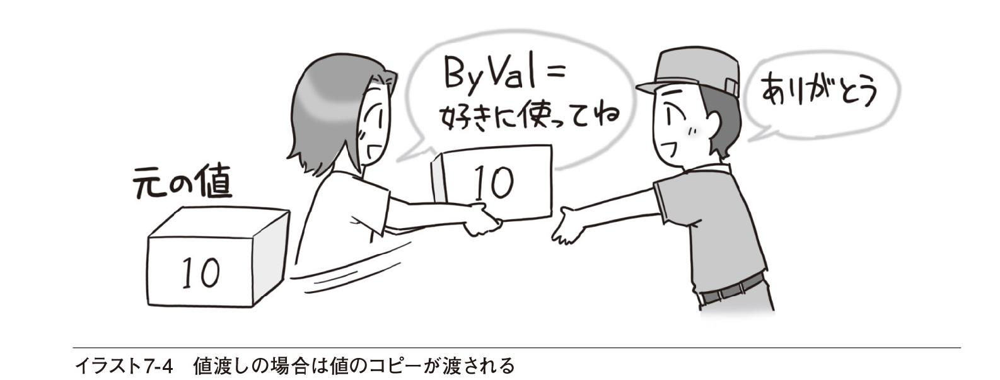
LIST7-11の例を見てみましょう。ここではnというInteger型の変数を用意し、10という値を入れておきます。それを値渡しでAdd1というSubプロシージャに渡します。Add1プロシージャでは、渡された値をiという引数で受け取り、その値を1増やします。
7-11 値渡しで引数を渡す
Dim n As Integer = 10Add1(n) ●─── Add1プロシージャを呼び出す。nの値を渡すDebug.WriteLine(n) ●───nの値を表示する（nの値は変わらない） :Sub Add1(ByVal i As Integer) ●───ByValを指定すると、値が渡される。ByValは省略してもよい i += 1End Subコードを実行し、nの値を出力すると、出力ウィンドウには10という値が表示されます。この例の場合、nの値がコピーされてiに渡されます。Add1プロシージャの中ではiに1を加算していますが、元のnとは関係がないので、nの値は変わりません。したがって、出力ウィンドウには元の10という値が表示されるというわけです。加算されたのはあくまでもプロシージャの中にあるiという変数です。
■参照渡し
引数の定義の前にByRefを指定すると参照渡しになります。その場合は、元の値がどこにあるかという情報がプロシージャに渡されます。したがって、呼び出し側の引数と呼び出されたプロシージャの引数は、同じ変数を参照することになります。「ここにある値をプロシージャの中でも使ってね」という渡し方をイメージするといいでしょう（イラスト7-5）。プロシージャの中で引数の値を変更することにより、呼び出し側の引数の値を変えることができます。
LIST7-12の例を見てみましょう。ここでは、nというInteger型の変数を用意し、10という値を入れておきます。それを参照渡しでAdd1というSubプロシージャに渡します。Add1プロシージャでは、渡された参照をiという引数で受け取り、iで示される場所にある値を1増やします。
7-12 参照渡しで引数を渡す
Dim n As Integer = 10Add1(n) ●───Debug.WriteLine(n) ●─── :Sub Add1(ByRef i As Integer) ●─── i += 1End Subコードを実行し、nの値を出力すると、出力ウィンドウには11という値が表示されます。この例の場合、nがどこにあるかという情報がiに渡され、それに従って計算が行われます。したがってi +=1はiの値を1加算するということではなく、iで示された場所にある値に1加算するということになります。そのため、元のnの値が1増え、出力ウィンドウには11が表示されるというわけです。
普通、参照渡しを使うことはあまりありませんが、呼び出し元の変数の値を変えたいときには参照渡しにする必要があります。これまでに登場した例では、Integer.TryParseというメソッド（関数）で参照渡しが使われています。例えば、
Integer.TryParse(txtMinute.Text, WorkingMinute)では、txtMinute.Textの文字列を整数に変換してWorkingMinuteに入れます。WorkingMinuteの値を変更する必要があるので、参照渡しが使われているというわけです。
自分でプロシージャを作ってみるとさらによく分かります。例えば、2つの変数の値を入れ替えるSubプロシージャは、値渡しではできません（LIST7-13）。
7-13 値渡しの場合、呼び出し元の引数の値は変わらない
Dim n As Integer = 10Dim m As Integer = 20Swap(n, m) ●───Debug.WriteLine(n & ":" & m) ●───Sub Swap(ByVal i As Integer, ByVal j As Integer) ●─── Dim Temp As Integer Temp = i ●─── i = j ●─── j = Temp ●───End Subこの例では、iとjの値はSwapプロシージャの中で入れ替わりますが、nとmの値は入れ替わりません。iとjにはnとmの値のコピーが渡されているからです。したがって、出力ウィンドウに表示される値は元の「10:20」のままとなります。
しかし、参照渡しにすれば変数の値の入れ替えができます（LIST7-14）。
7-14 参照渡しの場合、呼び出し元の引数の値を変えられる
Dim n As Integer = 10Dim m As Integer = 20Swap(n, m) ●───Debug.WriteLine(n & ":" & m) ●───Sub Swap(ByRef i As Integer, ByRef j As Integer) ●─── Dim Temp As Integer Temp = i ●─── i = j ●─── j = Temp ●───End Subこちらの例では、iとjにnとmの場所が渡されるので、iで示される場所にある変数（つまりnのこと）とjで示される場所にある変数（つまりmのこと）の値が、Swapプロシージャの中で入れ替えられます。元のnとmの値が入れ替えられるので、出力ウィンドウには「20:10」と表示されます。
■参照型の変数を値渡しで渡す
ReferenceTest
配列を参照する変数やString型の変数など、参照型の変数を引数として定義するとき、何も指定しないかByValを指定すると、参照がそのまま渡されます。一方、ByRefを指定すると、変数の参照が渡されるので、いわば「参照の参照」が渡されることになります（図7-7）。
この図を読み解くのには参照型に対する慣れが必要なので、いまは読み飛ばしてもらっても構いません。sという変数が100という場所にあり、文字列が200という場所にあるものとしましょう。sの値は200なので、sを見れば文字列がどこにあるかが分かります（つまり、sが文字列を参照しています）。
左側の値渡しだと、sの値（200）がSubプロシージャに渡されます。つまり、引数xの値は200になります。したがって、sとxは同じ文字列を参照します。一方、右側の参照渡しだと、sの参照が渡されます。つまり100が渡されるわけです。引数xの値は100になるので、xは文字列そのものではなくsという変数を参照することになります。
参照型の変数をさらに参照としてByRefで渡すことはめったにありません。参照そのものを変更したい場合を除いて、普通はByValで構わないでしょう。ただし、渡された参照をプロシージャの中でどのように扱うかによって、元の値が変わる場合や変わらない場合があるので注意が必要です。例えば、配列を参照する変数をプロシージャに渡し、For ... NextステートメントとFor Each ... Nextステートメントで処理した場合に違いが出てきます。呼び出し側のコードがLIST7-15のようなものだとします。
7-15 配列を参照する変数をSubプロシージャに渡す
Dim Score(2) As IntegerScore(0) = 78 : Score(1) = 64 : Score(2) = 88Add10ToAll(Score)Debug.WriteLine(Score(0))Add10ToAllプロシージャでは、渡された引数を使って、それぞれの要素に10を加算します。出力ウィンドウに表示される結果は、プロシージャの内容によって変わってきます。まず、For ... Nextステートメントを使った場合です（LIST7-16）。
7-16 配列のすべての要素に10を加算する
Sub Add10ToAll(ByVal Values As Integer()) For i As Integer = 0 To UBound(Values) Values(i) += 10 ●―――Valuesの要素をそのまま使う NextEnd SubValuesには配列の参照がそのまま渡されているので、Values(i)は参照されている配列のi番の要素となります。つまり、元の配列の値が変わります。したがって、出力ウィンドウには78に10を加算した88が表示されます。
続いて、For Each ... Nextステートメントを使った例を見てみましょう（LIST7-17）。
7-17 配列のすべての要素を変数に代入し、10を加算する
Sub Add10ToAll(ByVal Values As Integer()) For Each x As Integer In Values ●───Valuesの要素が順にxに代入される x += 10 ●───xは別の変数なので、元の値は変わらない NextEnd SubValuesに配列の参照がそのまま渡されているのは同じですが、For Each ... Nextステートメントで、Valuesが参照する配列の各要素を順にxに代入します。そして、xの値を加算しているので、元の配列の値は変わりません。加算されたのはあくまでもxという変数の値です。したがって、出力ウィンドウには元の78という値が表示されます。
話がかなり細かくなりましたが、もう1つだけお話しておきましょう。String型の変数の場合も注意が必要です。String型の変数は参照型ですが、文字列の取り扱いが特殊なので、値型のような動きをします。String型の場合、文字列の内容を変更するときには文字列そのものが変更されるのではなく、変更後の新しい文字列が作成され、その参照が代入されます（図7-8）。
引数としてString型の変数を渡した場合も、渡されるのは参照の値そのものですが、Subプロシージャの中で文字列を変更すると、新しい文字列が作られ、その参照が代入されます。したがって、元の文字列は変更されません。LIST7-18で確認しておきましょう。
7-18 文字列の参照の値が渡されるが、内容を変更すると新しい文字列が作られる
Dim Message As String = "今日はいい天気" AddString(Message) Debug.WriteLine(Message) ●───Message（文字列の参照）を渡す。Messageとsは同じ文字列を参照するEnd Sub ：Sub AddString(ByVal s As String) s &= "です" ●───sには文字列の参照が入っているが、内容を変更するために新しい文字列が作られるので、元の文字列は変わらないEnd Subこの場合は、sには「今日はいい天気です」という新しく作られた文字列の参照が代入されますが、元のMessageで参照される文字列の内容は変わりません。したがって、出力ウィンドウには「今日はいい天気」だけが表示されます。
■さまざまな方法で引数を定義する
SubプロシージャやFunctionプロシージャでは、引数のデータ型や個数の違いによって動作を変えるものがあります。例えば、ToStringメソッドは、引数を指定しない場合には数値や日付を文字列に変換するだけですが、引数に書式指定文字列を指定すると、その書式にそった形式の文字列に変換してくれます。このような、さまざまな引数が指定できるプロシージャを作ることもできます。
■異なる個数の引数や異なるデータ型の引数を定義する
OverLoadTest1, OverLoadTest2
前節では、数値で表された曜日を文字列の曜日に変換するFunctionプロシージャを見ました。例えば、引数に0を指定すると「Sun」といった3文字の曜日が返されます。そのFunctionプロシージャを少し拡張し、形式を指定することによって「Sunday」のようなフルスペルの曜日を返したり、「日」「月」のような日本語の曜日を返したりできるようにしましょう。そのためには、同じ名前で、引数リストの内容を変えたプロシージャをもう1つ作ります（LIST7-19）。
7-19 引数の指定方法によって、異なる処理ができるFunctionプロシージャを書く
Private Function GetDayOfWeek(Dow As Integer) As String Dim DowName() As String = {"Sun", "Mon", "Tue", "Wed", ⇒"Thu", "Fri", "Sat"} Return DowName(Dow) End Function Private Function GetDayOfWeek(Dow As Integer, idxFormat As ⇒Integer) As String Dim DowName(,) As String = {{"Sun", "Mon", "Tue", "Wed", ⇒"Thu", "Fri", "Sat"}, _ {"Sunday", "Monday", "Tuesday", "Wednesday", "Thursday", ⇒"Friday", "Saturday"}, _ {"日", "月", "火", "水", "木", "金", "土"}} Return DowName(idxFormat, Dow) End Function同じ名前のプロシージャが複数あるとエラーになるのではないかと心配する人もいるかもしれませんが、大丈夫です。引数のデータ型や個数が異なるので、どのような引数を指定したかによって、どちらのプロシージャを呼び出せばいいか区別できるからです。例えば、
GetDayOfWeek(3)と書くと、Integer型の引数が1個なので、上のGetDayOfWeekプロシージャが呼び出されます。結果はもちろん「Wed」となります。一方、
GetDayOfWeek(3, 2)と書くと、Integer型の引数が2個あるので、下のGetDayOfWeekプロシージャが呼び出されます。下のGetDayOfWeekプロシージャではDowNameという配列は2次元になっており、図7-9のように初期値が設定されています。
最初の引数が曜日を表し、次の引数が形式を表すので、結果は「水」となります。この例では、引数の順序と配列のインデックスの順序が逆になっていることに注意してください。もう1つ例を見ておきましょう。あまり意味のない例ですが、引数の個数は同じでデータ型が異なる場合です（LIST7-20）。
7-20 引数の個数は同じで、データ型が異なるFunctionプロシージャ
Dim i As Integer = 100 Dim s As String = "Hello!" ShowLength(i) ●───引数に整数を指定 ShowLength(s) ●─── 引数に文字列を指定 ：Private Sub ShowLength(value As Integer) ●───引数が整数の場合 Debug.WriteLine(value.ToString().Length) ●───数値を文字列にして、その長さを出力 End SubPrivate Sub ShowLength(value As String) ●─── 引数が文字列の場合 Debug.WriteLine(value.Length) ●───文字列の長さを出力End Sub最初に呼び出されたShowLengthプロシージャにはInteger型の引数が指定されているので、上のほうで定義されたShowLengthプロシージャが呼び出されます。次に呼び出されたShowLengthプロシージャにはString型の引数が指定されているので、下のほうで定義されたShowLengthプロシージャが呼び出されます。
このように、異なる個数の引数や異なるデータ型の引数を指定し、同じ名前のプロシージャを複数個作成することをオーバーロードといいます。
■省略可能な引数を定義する
OptionalTest1, OptionalTest2
さきほどのGetDayOfWeekプロシージャの場合、引数の個数が異なるだけなので、省略可能な引数を意味するOptionalというキーワードを使って1つのプロシージャで書くこともできます（LIST7-21）。
7-21 省略可能な引数を定義する
Private Function GetDayOfWeek(Dow As Integer, Optional⇒idxFormat As Integer = 0) As String Dim DowName(,) As String = {{"Sun", "Mon", "Tue", "Wed",⇒"Thu" , "Fri", "Sat"}, {"Sunday", "Monday", "Tuesday", "Wednesday", "Thursday",⇒"Friday", "Saturday"}, {"日", "月", "火", "水", "木", "金", "土"}} GetDayOfWeek = DowName(idxFormat, Dow) End FunctionOptionalを付けて定義した引数には既定値を指定しておく必要があります。プロシージャを呼び出すときに引数が省略されている場合、どのような値を指定したものと見なすかを決めておくというわけです。書き方は以下のとおりです。
このようにして定義されたプロシージャは、以下のいずれの方法でも呼び出せます。
GetDayOfWeek(3, 2) ●─── GetDayOfWeek(3) ●───なお、Optionalを指定した引数以降のすべての引数は、省略可能である必要があります。つまり、それ以降はすべてOptionalを指定する必要があります。LIST7-22は、簡単な料金計算をするFunctionプロシージャの例です。このFunctionプロシージャでは、基本料金の種類と特約1、特約2の契約により、戻り値として返される合計金額が変わります。
7-22 Optionalを指定した後の引数にはすべてOptionalを指定する必要がある
Private Function GetCharge(ContactNumber As Integer, OptionalSpecial1 As Boolean = False, Optional Special2 As Boolean = False)As Integer Dim Charge As Integer Select Case ContactNumber Case 0 Charge = 1000 Case 1 Charge = 1200 Case Else Charge = 1500 End Select If Special1 Then Charge += 300 If Special2 Then Charge += 500 Return Charge End Functionこのようなプロシージャを呼び出すとき、途中の引数を省略するには、「,」（カンマ）だけを書いておきます。例えば、2番目の引数を省略するなら次のように書きます。
x = GetCharge(1, , True)この場合、基本料金の1,200円と、特約2の500円が適用されるので、GetChargeプロシージャの戻り値は1700になります。したがって、xには1700が代入されます。
■名前付き引数を指定して呼び出す
省略できる引数がたくさんある場合は、「,」が続くと見づらくなります。そのような場合には「引数名:=値」の形式で、指定したい引数だけを書くとコードが見やすくなります。さきほどの例であれば、ContactNumberという引数に1を、Special2という引数にTrueを指定するので、以下のように書くことができます。
x = GetCharge(ContactNumber:=1, Special2:=True)このように、引数の名前を指定したときには、引数はどんな順序で指定しても構いません。例えば、以下のように順序を逆転させても正しく動きます。
x = GetCharge(Special2:=True, ContactNumber:=1)当然のことながら、省略されている引数には既定値が適用されます。この例でもGetCharge関数が返す戻り値は1700なので、xに1700が代入されます。
確認問題
1. 以下のコードを実行したときに、出力ウィンドウに表示される値を答えてください。
（1） Dim x As Double = 3.14 Multiply2(x) Debug.WriteLine(x) : Sub Multiply2(ByVal v As Double) v *= 2 End Sub（2） Dim x As Double = 3.14 Multiply2(x) Debug.WriteLine(x) : Sub Multiply2(ByRef v As Double) v *= 2 End Sub
（3） Dim Message As String = "今日の日付：" AddDate(Message) Debug.WriteLine(Message) ： Sub AddDate(ByVal s As String) s &= Today.Month & "月" & Today.Day & "日" End Sub（4） Debug.WriteLine(GetSeason(2)) ： Function GetSeason(term As Integer, Optional en As Boolean = False) As String Dim enSeason As String = {"Spring", "Summer", "Autumn", "Winter"} Dim jpSeason As String = {"春", "夏", "秋", "冬"} If en Then Return enSeason(term) Else Return jpSeason(term) End If End Function7.5 プログラミングにチャレンジ
7.2節ではPictureBoxコントロールの背景色を変えるためのSubプロシージャを作成しました。そのコードを利用して、色見本とウェブページなどでよく使われる16進数のカラーコードを表示するプログラムを作成してみましょう。
■色見本を表示するプログラム
ColorMaker ,ColorMaker1
ここで作成するプログラムでは、赤（R）、緑（G）、青（B）の度合いを0〜255までTrackBarコントロールで指定したり、TextBoxコントロールに入力して指定できるようにします。指定された3つの値から色を表すデータを求め、PictureBoxコントロールの背景色を変えます。また、16進数のカラーコードも表示します。
プログラムの完成イメージはイラスト7-6のような感じです。
このプログラムでは、プログラムを終了するときに、設定されている色を保存しておくようにしましょう。そして、次にプログラムを実行したときに、保存された色が表示されるようにします。
では、Windowsフォームアプリケーションの新しいプロジェクトを作成してください。プロジェクト名はColorMakerとします。プロジェクトができたらフォームのデザインに取りかかりましょう。
■フォームのデザイン
フォームに配置するコントロールは、TextBoxコントロール、TrackBarコントロール、PictureBoxコントロールなどです。画面7-6のようにコントロールを配置し、表7-1にそってプロパティの値を設定していってください。なお、TrackBarコントロールは［ツールボックス］の［すべてのWindowsフォーム］の下にあります。

TrackBarコントロールのプロパティに注目しましょう。赤、緑、青の度合いは0〜255と決まっているので、それ以外の値が選択できないようにするため、Minimumプロパティに0を指定し、Maximumプロパティの255を指定しています。
■プログラムの設定値を保存する
このプログラムでは、設定されている色をプログラムの終了時に保存しておきます。保存すべき値は、赤の度合い、緑の度合い、青の度合いの3つです。また、プログラムの起動時にはそれらの値を読み出します。そのためには難しいコードを記述しなければ......と思われるかもしれませんが、実はプロパティを設定するだけで可能です。
では、trbRedコントロールの値（Valueプロパティの値）を保存するように設定しましょう。手順は画面7-7に示したとおりです。
Nameの欄には、その設定に付ける名前が自由に指定できます。ここでは、REDと入力しました。同じようにして、trbGreenのValueプロパティをGREENという名前で保存し、trbBlueのValueプロパティをBLUEという名前で保存するように設定しておいてください。
このように設定しておくだけで、プログラムの終了時に自動的にプロパティの値が保存されるようになります。また、プログラムの起動時には保存された値が自動的にプロパティに設定されます。
設定値を手動で保存したり、読み出したりするには
プログラムの終了時以外に設定値を手動で保存したいときには、My.Settings.Saveメソッドを使います。例えば、赤の値を0に設定して保存するのであれば、以下のように記述します。
My.Settings.RED = 0 ●───「My.Settings.設定の名前」に値を代入するMy.Settings.Save() ●───Saveメソッドを使って保存する逆に、プログラムの起動時以外に設定値を手動で読み出したいときには、特にメソッドを使う必要はありません。My.Settingsのプロパティを利用するだけで、設定値が読み出され、利用できるようになります。
txtRed.Text = My.Settings.RED ●───「My.Settings.設定の名前」を利用する■Subプロシージャを作成する
このプログラムでは、フォームを読み込んだときとTrackBarコントロールの値が変わったときに色見本の表示とカラーコードの表示を変更します。複数の場所で同じ処理を実行するので、Subプロシージャにまとめましょう。
Subプロシージャの中でやるべきことは以下のとおりです。
■TextBoxコントロールに現在の設定値を表示する
■PictureBoxコントロールの背景色を変える
■Labelコントロール（lblCode）にカラーコードを表示する
現在の設定値はプログラムの実行時にそれぞれのTrackBarコントロールのValueプロパティに読み込まれているので、それらを利用します。Subプロシージャの名前をSetBackColorとします。引数には赤、緑、青の度合いを指定するものとします。いずれもデータ型はIntegerです。コードウィンドウを表示して、以下のコードを入力しましょう（LIST7-23）。
7-23 PictureBoxコントロールの背景色などを変えるプロシージャを定義する
Private Sub SetBackColor(Red As Integer, Green As Integer,⇒Blue As Integer) txtRed.Text = Red.ToString() txtGreen.Text = Green.ToString() txtBlue.Text = Blue.ToString() picColor.BackColor = Color.FromArgb(Red, Green, Blue) lblCode.Text = "#" & Red.ToString("X2") & Green.ToString("X2") & Blue.ToString("X2") End SubToStringメソッドに指定した"X"は数値を16進数で表した文字列にするという意味で、その後の"2"は2桁で表示するという意味です。
なお、TrackBarコントロールのValueプロパティの値はどのプロシージャからでも使えるので、引数として渡さなくてもSetBackColorプロシージャを書くことができます。しかし、ここでは7.2節で書いたコードを再利用するために、引数を利用しています。
■イベントハンドラーの記述
プログラムの実行時（フォームが表示される前）には、前回の状態を表示するため、PictureBoxコントロールの背景色を変更する必要があります。また、TrackBarコントロールの値が変わったときにもPictureBoxコントロールの背景色を変更する必要があります。TextBoxコントロールにも色の度合いを表す値が入力されます。TextBoxコントロールについてはキーが押されたときに、PictureBoxコントロールの背景色を変更します。もちろん、いずれの場合でも16進数のカラーコードも正しい値に変更して表示します。
■フォームのLoadイベントハンドラー
フォームを読み込んだ時点の処理は、以前の設定を表示するだけです。したがって、SetColorプロシージャを呼び出すコードだけで構いません。イベントハンドラーの名前はInitProcとします。フォームのLoadイベントハンドラーを作成し、以下のように入力しましょう（LIST7-24）。
7-24 フォームを表示する直前にSetBackColorプロシージャを呼び出す
Private Sub InitProc(sender As Object, e As EventArgs) Handles⇒MyBase.Load SetBackColor(trbRed.Value, trbGreen.Value, trbBlue.Value) End Sub3つのTrackBarコントロールのValueプロパティには前回の終了時の値がすでに読み込まれているので、これでPictureBoxコントロールの背景色を変えるなど、必要な処理が実行されます。
■TrackBarコントロールのイベントハンドラー
TrackBarコントロールは3つありますが、いずれも同じイベントハンドラーを呼び出します。TrackBarコントロールのイベント一覧を表示すると、Scrollイベントの欄に入力できる状態になっていますが、このプログラムではScrollイベントは使いません。ScrollイベントはTrackBarコントロールのスクロールボックスをドラッグするなどして動かしたときに発生するので、これを使えばよさそうですが、ScrollイベントではなくValueChangedイベントを使います。ValueChangedイベントは、TrackBarコントロールの値が変わったときに発生するイベントです。コードはLIST7-25のようになります。この場合も、イベントハンドラーを1つ作って、Handlesの後に「コントロール名.イベント名」をカンマで区切って追加すると、効率よく入力できます。
7-25 TrackBarコントロールの値が変わったらSetBackColorプロシージャを呼び出す
Private Sub ChangeColor(sender As Object, e As EventArgs) ⇒Handles trbRed.ValueChanged, trbGreen.ValueChanged, ⇒trbBlue.ValueChanged SetBackColor(trbRed.Value, trbGreen.Value, trbBlue.Value) End SubValueChangedイベントを利用するのはTextBoxコントロールに値を入力したときに対応するためです。TextBoxコントロールの値を使ってTrackBarコントロールのValueプロパティを変更すると、TrackBarコントロールの値が変わり、スクロールボックスの位置も変わります。このとき値が変わるので、ValueChangedイベントが発生しますが、スクロールボックスを操作したわけではないのでScrollイベントは発生しません。
異なるコントロールのイベントでも引数が同じであればイベントハンドラーが共有できる
実は、ChangeColorプロシージャとInitProcプロシージャの処理はまったく同じです。したがって、このプログラムに限っていえばTrackBarコントロールのValueChangedイベントハンドラーとしてInitProcを使っても構いません。ただし、一般的なプログラムでは、フォームの読み込み時とTrackBarコントロールの利用時には異なる処理をするのが普通なので、別のプロシージャにしておくのが自然です。
■TextBoxコントロールのイベントハンドラー
TextBoxコントロールでは、値を入力してキーを押したときに、TrackBarコントロールの値を変えるようにします。どのキーを押したか知りたいときには、KeyDownイベントハンドラーを利用します。
KeyDownイベントとKeyPressイベントの違い
KeyDownイベントに似たものにKeyPressイベントがあります。ただし、KeyPressイベントでは、どの文字が入力されたか分かりますが、どのキーが押されたかは分からないので、キーを押したということを検出できません。
3つあるTextBoxコントロールはすべて同じイベントハンドラーを呼び出すようにします。ChangeColorByTextという名前でイベントハンドラーを作成しましょう。コードの概要だけを先に見ておきます（LIST7-26）。
7-26 TextBoxコントロールでキーが押されたときに実行されるイベントハンドラー
Private Sub ChangeColorByText(sender As Object, e As ⇒KeyEventArgs) Handles txtRed.KeyDown, txtGreen.KeyDown, ⇒txtBlue.KeyDown If e.KeyCode = Keys.Enter Then ●───押されたキーがキーなら ' TextBoxに数値が入力されているときだけ、TrackBarコントロールの値を変える ' ただし、値が0より小さいときは0と見なし、255より大きいときは255と見なす End If End Subこのイベントハンドラーはキーが押されるたびに呼び出されるので、キーを押したときにのみ必要なコードが実行されるようにします。どのキーが押されたかは、イベントハンドラーに渡されるeという引数のKeyCodeプロパティを見れば分かるようになっています。この値がキーを表すKeys.Enterと等しければ、色見本を変えたり、カラーコードを表示する処理を実行します。
赤の度合いを表すTextBoxコントロールの処理に限って、Ifステートメントの中身を書いてみるとLIST7-27のようになります。以下のコードを書くには、Redという作業用の整数型変数を宣言しておく必要があります。Redという名前はSetBackColorプロシージャの引数と同じ名前ですが、変数のスコープが異なるので問題なく使えます。
7-27 赤の度合いを表すTextBoxコントロールの値をもとにTrackBarコントロールの値を変える
If e.KeyCode = Keys.Enter Then If Integer.TryParse(txtRed.Text, Red) Then trbRed.Value = Math.Max(0, Math.Min(255, Red)) Else MessageBox.Show("0〜255の整数を入力してください") txtRed.Focus() txtRed.SelectAll() End If ： ：End Ifまず、Integer.TryParseメソッドでTextBoxコントロールに入力されている文字列を整数に変換します。整数に変換できたら、0〜255の範囲に収まるようにします。255より大きい場合は255とし、0より小さい場合は0としています。これは7.2節でも見た方法です。
文字列が整数に変換できない場合には、メッセージを表示し、TextBoxコントロールにフォーカスを移動して文字列を選択された状態にします。
緑と青についても同様に書けます。イベントハンドラー全体を記しておきましょう。かなり長いですが、がんばって入力してください（LIST7-28）。
7-28 TextBoxコントロールの値をもとにTrackBarコントロールの値を変える
Private Sub ChangeColorByText(sender As Object, e As ⇒KeyEventArgs) Handles txtRed.KeyDown, txtGreen.KeyDown, ⇒txtBlue.KeyDown Dim Red, Green, Blue As Integer If e.KeyCode = Keys.Enter Then If Integer.TryParse(txtRed.Text, Red) Then trbRed.Value = Math.Max(0, Math.Min(255, Red)) Else MessageBox.Show("0〜255の整数を入力してください") txtRed.Focus() txtRed.SelectAll() End If If Integer.TryParse(txtGreen.Text, Green) Then trbGreen.Value = Math.Max(0, Math.Min(255, Green)) Else MessageBox.Show("0〜255の整数を入力してください") txtGreen.Focus() txtGreen.SelectAll() End If If Integer.TryParse(txtBlue.Text, Blue) Then trbBlue.Value = Math.Max(0, Math.Min(255, Blue)) Else MessageBox.Show("0〜255の整数を入力してください") txtBlue.Focus() txtBlue.SelectAll() End If End If End Subこのコードを見ると、色見本の表示を変えたり、カラーコードを表示したりする処理が書かれていません。しかし、TrackBarコントロールのValueプロパティに値を代入しているので、値が変わればTrackBarコントロールのValueChangedイベントハンドラーが自動的に呼び出されます。TrackBarコントロールのValueChangedイベントハンドラーからSetBackColorプロシージャが呼び出されているので、PictureBoxコントロールの背景色やカラーコードの表示が変わります。
■Buttonコントロールのイベントハンドラー
Buttonコントロールのイベントハンドラーはプログラムを終了させるだけの、おなじみのコードです。以下に記しておきます（LIST7-29）。
7-29 プログラムを終了するためのコード
Private Sub ExitProc(sender As Object, e As EventArgs) ⇒Handles btnExit.Click Application.Exit() End Sub■プログラムを実行する
コードがすべて入力できたら、［開始］ボタン（）をクリックして、プログラムを実行します。TextBoxコントロールに数値を入力したり、TrackBarコントロールのスクロールボックスを操作したりして、PictureBoxコントロールの背景色と16進数のカラーコードが変わることを確認しましょう。また、プログラムを終了させた後、もう一度実行し、前回の色やカラーコードが表示されるかどうかも確認してください。以下が実行例です。
① プログラムの起動時には前回の値や色が表示される
❷ 赤、緑、青の度合いを入力するかドラッグして、赤、緑、青の度合いを変更する
③ いずれの方法でも、背景色が変わり、16進数のカラーコードが表示される
なお、このプログラムでは、TextBoxコントロールの値を変更しても、キーを押さずにほかのTextBoxコントロールをクリックすると色が変更されません。そのような場合にも色が変更されるようにするには、TextBoxのLeaveイベントハンドラーにもコードを書いておく必要があります。Leaveイベントハンドラーはコントロールからフォーカスが失われたときに実行されるので、どのキーが押されたかという判定は不要です。それ以外はLIST7-28で書いたコードと同じです。ダウンロード用のサンプルプログラムにはそのような処理も含めたプロジェクト（ColorMaker1）を用意しておきました。ただし、同じようなコードを何度も書くのは美しくないので、さまざまな工夫をこらしています。まとめと練習問題の後で、ぜひダウンロードして読み解いてみてください。
Chapter7のまとめ
● SubプロシージャやFunctionプロシージャを利用すると、よく使われる処理を1箇所にまとめておくことができます
● SubプロシージャやFunctionプロシージャには引数を使って値や参照を渡すことができます
● Functionプロシージャは、処理の結果を戻り値として返します
● SubプロシージャやFunctionプロシージャにもアクセスレベルが指定できるので、モジュール内だけで使えるプロシージャや、モジュールの外からも使えるプロシージャが作成できます
練習問題
ColorMaker
［A］整数が0より小さい場合には0とし、255より大きい場合は255とするコードをFunctionプロシージャにし、呼び出せるようにしてください。プロシージャ名はLimit0To255とします。例えば、
trbRed.Value = Math.Max(0, Math.Min(255, Red))と書く代わりに、
trbRed.Value = Limit0To255(Red)と書いて同じことができるように、Limit0To255プロシージャを作成してください。プロジェクト名はColorMaker2とします。
［B］ChangeColorByTextプロシージャの中には同じようなコードが3つあります。
［A］のプロジェクトのコードを変更し、これをSubプロシージャにしてみてください。プロシージャ名はChangeTrackBarとし、TextBoxコントロールとTrackBarコントロールを渡せば、TextBoxコントロールの値に従って、TrackBarコントロールの値を変えるものとします。
ChangeColorByTextプロシージャが以下のように書けるように、Change TrackBarプロシージャを作成してください。
Private Sub ChangeColorByText(sender As Object ,e As ⇒KeyEventArgs) Handles txtRed.KeyDown, txtGreen.KeyDown, ⇒txtBlue.KeyDown If e.KeyCode = Keys.Enter Then ChangeTrackBar(txtRed, trbRed) ChangeTrackBar(txtGreen, trbGreen) ChangeTrackBar(txtBlue, trbBlue) End If End Subヒント 以下のようなSubプロシージャの中身を考えます。
Private Sub ChangeTrackBar(txtSource As TextBox, trbTarget ⇒As TrackBar) ' ここにコードを書く End Subこのように、引数としてコントロールを渡すこともできます。txtSource.Textと書けば、引数として渡されたTextBoxコントロールのTextプロパティが利用できます。
Chapter8
クラスを利用する
プログラミングとは、世界を記述することといっても過言ではありません。しかし、これまで説明してきたプログラミングの方法は、どちらかというとコンピューターの都合に合わせたものです。例えば身長や成績を変数として表しましたが、世界には身長とか成績といったデータがポツンと存在するのではなく、人間が存在し、その人に身長や成績といった値がついてまわります。クラスを利用すれば、人やモノが持っているデータや働きを目的にそって自然に表し、プログラムの中で利用できるようになります。
8.1 クラスとオブジェクト
クラスとは／オブジェクトとは
8.2 クラスの利用
クラスからオブジェクトを作成する／プロパティやメソッドを利用する／共有メンバーを利用する
8.3 クラスの作成
クラスを定義する／プロパティを定義する／メソッドを定義する／定義したクラスを利用する／共有メンバーを定義する
8.4 クラスの継承
クラスを継承して派生クラスを定義する／インターフェイスを利用する
8.5 プログラミングにチャレンジ
フェイスチャートを表示するプログラム／フォームのデザイン／クラスを定義する／プロパティを定義する／メソッドを定義する／イベントハンドラーの記述
これから学ぶこと
●クラスからオブジェクトを作成する方法を学びます
●クラスを定義する方法を学びます
●クラスのプロパティやメソッドを定義する方法を学びます
●基本クラスの機能を継承するとともに、新たな機能を追加した派生クラスを定義する方法を学びます
●インターフェイスを利用し、さまざまなクラスで使われる機能を派生クラスに組み込む方法を学びます
●この章で学んだことがらを利用してプログラムを作成します
この章ではクラスの定義方法や利用方法を学びます。クラスを利用すると、人やモノを自然に表現でき、さらに拡張していくこともできます。この章の最後では、企業のプロフィールをクラスとして定義し、いくつかの指標をもとに、フェイスチャートを作成するプログラムを作成します。
8.1 クラスとオブジェクト
プログラムの中では、その仕事の目的に合わせて、人は「身長」「体重」「成績」そのほかの変数で表されます。これらの変数を個別に宣言すると、ある特定の人の身長と体重をまとめて表すことはできません。クラスを利用すると、それが可能になります。
■クラスとは
クラスとは、人やモノの性質や働きを表したものです。まず「性質」について考えてみましょう。当然のことながら、人の持つあらゆる性質を表すことは現実的でないので、目的に合わせたデータだけをまとめて表します。例えば、健康管理に関する仕事であれば、成績というデータは必要がないので、人は身長と体重などのデータをまとめたものとして表されます。
一方、成績管理という仕事であれば、身長や体重のデータは必要がないので、人は出席日数や試験の成績などのデータをまとめたものとして表されます。
つまり、クラスとは
ある目的に合わせて、必要な変数をまとめたもの
と考えられます。このような、人やモノの持つ性質をプロパティと呼びます。
次に、「働き」について見ていきます。人は身長や体重といったデータで表されるだけでなく、食べる、寝るなどの動作ができます。健康管理といった目的に合わせて考えると、決められたカロリーの食事を摂ることもあるはずです。
これまで、何らかの動作はSubプロシージャやFunctionプロシージャで表してきましたが、これらもクラスに含まれます。したがって、クラスとは
ある目的に合わせて、必要なプロシージャを含んだもの
ということもいえます。このような、人やモノの持つ動作をメソッドと呼びます。
クラスにはイベントも含まれる
さらに、クラスにはイベントも含まれますが、ここでは、これぐらいにとどめておきます。例えば「ある時間になったら寝る」など、何らかのできごとに対してプロシージャが呼び出されるようにすることも可能です。
■オブジェクトとは
クラスの具体的な利用方法について説明する前に、あと1つだけクラスの特徴について見ておきます。「人」についてもう少し考えてみましょう。
普段、私たちは人という概念と個別の人をあまり区別していません。しかし、改めて考えてみると、「人」というのはあくまで「人というのはこういうものだ」ということを表す概念であって、実体として存在するのは個別の二宮さんとか桜井さんといった人です。
クラスは人の概念にあたるものです。人やモノについて「これはこういうものだ」というのを決めたものがクラスです。一方、それぞれの実体のことはオブジェクトとかインスタンスと呼ばれます。
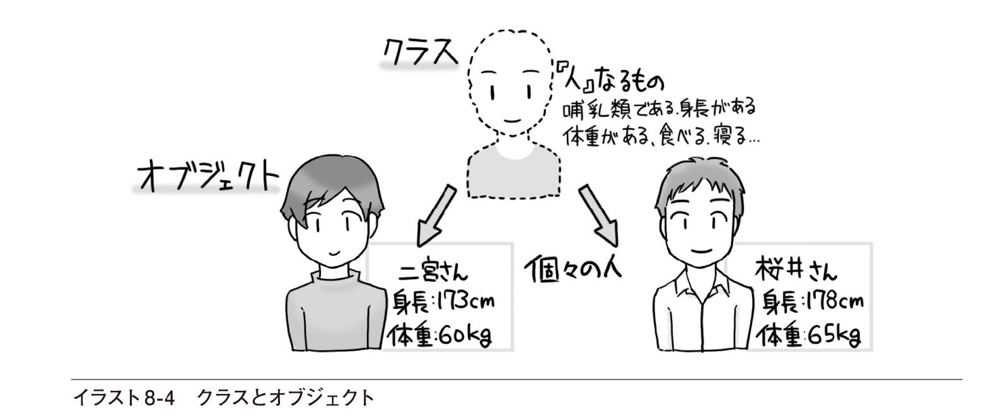
個々のオブジェクトは、クラスをもとにして作られます。クラスは設計図で、オブジェクトが設計図をもとにして作られた個々の実体である、と考えてもいいでしょう。新しい用語や考え方がたくさん出てきたように思われるかもしれませんが、実は、クラスとオブジェクトの関係はこれまで見てきた変数の宣言と同じです。整数という概念をもとに、個々の整数型（Integer型）変数を作ったのと同じことなのです。
クラスとオブジェクトの概略はこれぐらいにしておき、次に具体的な使い方を見ていきます。イメージがつかめないという人も、いまはあまり気にせず、読み進めていってください。具体的な使い方を学んでから、もう一度ここでの説明を読み返してみると、実感が湧いてくると思います。
クラス、オブジェクト、インスタンス
Visual Basicでは、インスタンスとオブジェクトは同じ意味で使われますが、プログラミング言語によっては、クラスとインスタンスをまとめてオブジェクトと呼ぶ場合もあります。
確認問題
1. 以下の文章のうち正しいものには○を、間違っているものには×を記入してください。
（ ）クラスとは目的に合わせてデータや手続きをまとめたものである
（ ）オブジェクトとはひな形のようなものであり、実体はクラスと呼ばれる
（ ）クラスにはプロパティが含まれる
（ ）クラスにはプロシージャは含まれない
（ ）Visual Basicでは、オブジェクトはインスタンスとも呼ばれる
8.2 クラスの利用
この章では、クラスを自分で定義して利用する方法を学びます。しかし、その前に、あらかじめ用意されているクラスの利用方法を確認しておきましょう。そうすれば、自分でクラスを定義するときに、どのようなポイントを押さえておく必要があるかが分かります。また、.NET Frameworkのクラスライブラリに含まれる、さまざまな機能を持つクラスが利用できるようになります。
■クラスからオブジェクトを作成する
ClassTest1
クラスの定義や利用の方法をこれから学ぶわけですが、実は、私たちはすでにクラスを使っています。クラスを利用するには、次のような方法があります。
■あらかじめ用意されたクラスからオブジェクトを作成して利用する
■クラスを自分で定義し、そこからオブジェクトを作成して利用する
この、「あらかじめ用意されたクラス」については、すでに使っているのです。
例えば、5.2節で、乱数を取り出す例を見ました。乱数はRandomクラスからオブジェクトを作成して、Nextメソッドにより取り出したものです。Randomクラスは「乱数」というモノを表したクラスで、Nextというメソッドを含んでいるというわけです。5.2節では
Dim r As Random = New Random()というコードを書きました。これがクラスからオブジェクトを作成するためのコードです。Randomというキーワードが2つも書かれていて、奇妙な感じがします。しかし、これは2つのことを1行にまとめて書いてあるためです。
ここから1つ1つ順を追ってみていきましょう。
まず、クラスからオブジェクトを作成するためには、オブジェクトを参照するための変数が必要です。Randomクラスのオブジェクトを参照するための変数は以下のようにして宣言します。
Dim r As Randomこれは、Randomクラスのオブジェクトそのものではなく、あくまでもオブジェクトを参照するための変数を宣言したにすぎません。図にすると図8-1のようなイメージです。
rという変数は参照型の変数です。その中に乱数の値を入れるために使うのではなく、Randomクラスのオブジェクトがどこにあるのかという情報を入れておくための変数です。このコードでは、rという変数を宣言しただけで、Randomクラスのオブジェクトについてはまだ作成されていないので、うすい点線で描いてあります。
ここまでは大丈夫でしょうか。単なる変数の宣言なので、難しくはないですね。では、続けます。
次に、Randomクラスのオブジェクトを作成してみましょう。Newキーワードを使います。
New Random()これでRandomクラスのオブジェクトが作成されます。()内には何も書いていませんが、初期値の設定などが必要な場合には、引数として書いておくこともできます。ここまでは、図8-2に示したようなイメージです。ただし、まだオブジェクトを作成しただけなので、rという変数にはRandomクラスのオブジェクトがどこにあるかという情報が入れられていません。矢印がうすい点線で描かれているのは、そのためです。
ここからが大事なところです。すべてがつながるので、じっくりと読んでください。
Newキーワードを使ってオブジェクトを作成すると、作成されたオブジェクトの参照が返されます。つまり、そのオブジェクトがどこにあるかという情報が返されます。したがって、それをrに代入してやれば、rがオブジェクトを参照するようになります。コードは次のとおりです。
r = New Random()これについても、図で見ておきましょう（図8-3）。
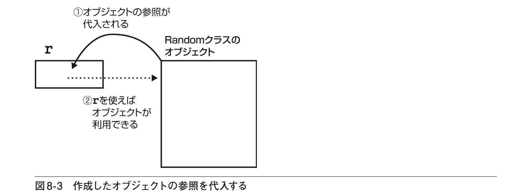
コードの直接的な意味は、Randomクラスがどこにあるかという情報がrに代入される（参照が代入される）というだけのことです。①の実線で示した部分がそれにあたります。参照が代入されると、変数を使ってオブジェクトが利用できるようになります。オブジェクトを利用する流れに注目すると②の点線の矢印のようなイメージになるというわけです。
では、オブジェクトを参照するための変数を宣言する一般的な書き方を見ておきましょう（図8-4）。
クラスから新しいオブジェクトを作成して、その参照を代入するコードの書き方は以下のとおりです（図8-5）。
宣言とオブジェクトの作成をまとめて、図8-6のように書くこともできます。
このコードの意味を日本語で書くと「Randomクラスのオブジェクトを参照する変数rを宣言し、新しく作成したRandomクラスのオブジェクトの参照を代入する」ということになります。ちなみに、宣言と初期化をまとめて書く方法は、通常の変数の初期化でも同じです。
Dim i As Integer ←→ Dim i As Integer = 0i = 0■プロパティやメソッドを利用する
オブジェクトのプロパティやメソッドは、そのオブジェクトを参照する変数名の後に「.」（ピリオド）で区切って書きます。すでにコントロールのプロパティやメソッドを何度も利用してきたので、この知識は十分身に付いていると思います。なお、オブジェクトのプロパティやメソッドをまとめてメンバーと呼ぶこともあります。
念のため、Randomクラスのオブジェクトを作成し、Nextメソッドを呼び出す例で確認しておきましょう（LIST8-1）。
8-1 Randomクラスのオブジェクトを作成し、Nextメソッドを使って乱数を作成する
Dim i As IntegerDim r As Random = New Random()i = r.Next(10) ●───Nextメソッドを使って0以上10未満の整数の乱数を作成し、iに代入する実は、これまで使ってきたコントロールもクラスから作られたオブジェクトです。例えば、フォームにButtonコントロールを配置すると、Button1という名前のコントロールが作成されます。これはButtonクラスから作成されたButton1という名前のオブジェクトなのです。したがって、コントロールをフォームに配置する代わりに、コードの中で作成することもできます（LIST8-2）。
8-2 コードを使ってButtonコントロールを作成する
Dim btnOption As Button = New Button() ●─── Buttonクラスのオブジェクトを作成し、btnOptionという変数で参照できるようにするbtnOption.Text = "オプション(&O)" ●───Textプロパティを設定するbtnOption.Parent = Me ●─── 親コントロールをMe（現在のフォーム）とするフォームデザイナーでコントロールをフォームに配置すると、Visual Basicは自動的に上記のようなコードを追加しています（ただし、それらのコードは、通常は表示されていません）。いかがでしょう。参照型の変数、クラスとオブジェクト、コントロール......と、これまでバラバラだった知識がすべてつながってきました。この節の終わりに、もう1つ重要な知識として、共有メンバーのお話をしておきましょう。
■共有メンバーを利用する
プロパティやメソッドを利用するには「オブジェクト名.プロパティ名」や「オブジェクト名.メソッド名」と書きます。しかし、「クラス名.プロパティ名」や「クラス名.メソッド名」と書く場合もあります。例えば、4.2節や6.4節で見た、
Integer.TryParseMath.Sqrtなどがそれにあたります。IntegerクラスやMath クラスのオブジェクトを作らずに、TryParseやSqrtといったメソッドを呼び出していますね。このようなプロパティやメソッドは共有メンバーと呼ばれるもので、オブジェクトを作成しなくてもそのまま使えます。共有メンバーは、個々のオブジェクトの働きではなく、クラスに特有の機能なのです。なお、共有メンバーは静的メンバーと呼ばれることもあります。
.NET Frameworkのクラスライブラリを利用するには
Visual Basicのプログラムからは、.NET Frameworkのクラスライブラリが利用できます。.NET Frameworkとは、Windowsのプログラムを作成するためのさまざまな道具の集まりのことで、クラスライブラリとは文字通りクラスの図書館（＝ライブラリ）のようなものです。つまり、あらかじめ用意されたさまざまなクラスのことです。実はフォームやコントロールもクラスライブラリに含まれるFormクラスやLabelクラス、Buttonクラスなどから作られたオブジェクトなのです。この節で説明したRandomクラスも.NET Frameworkのクラスライブラリに含まれています。それ以外にも、電子メールの送信に使われるSmtpClientクラスや、電子メールのメッセージを表すMailMessageクラス、XMLドキュメントを表すXmlDocumentクラス、クリップボードを表すClipboardクラスなど、さまざまなクラスが用意されています。これらのクラスを利用する方法はすでに説明したように、次のとおりです。
■オブジェクトを参照するための変数を宣言する
■新しいオブジェクトを作成し、その参照を変数に代入する
.NET Frameworkのクラスライブラリに含まれるクラスの一覧やその説明は、MSDNライブラリのページ（http://msdn.microsoft.com/ja-jp/library)から見ることができます。ページ内の一覧に表示されている［開発ツールおよび言語］の下の［.NET Framework class library］をクリックすれば、「.NET Framework4.6および4.5」というページが表示されます（バージョン番号は本書執筆時点のもの）。そのページの左側の［.NET Framework クラスライブラリ］の階層を開いていけば、さまざまなクラスの一覧やクラスのメンバーが表示できます。なお、クラスのメンバーのうち［S］のマークが付いているものが共有メンバーです。
確認問題
1.右側の説明に従って、コードを完成させてください。
（1） Imports System.Net.Mail ●─── 電子メールの配信に使うクラスを利用するための記述 Public Class Form1 ' Visual Basicを使って電子メールを送信する ' 実際には認証などの必要がある。ここでは骨格のみを書いてみる Private Sub MailSend(sender As Object, e As EventArgs)⇒Handles Button1.Click Dim Msg As MailMessage ●───電子メールのメッセージを表すMailMessageクラスのオブジェクトを参照する変数を宣言 Msg =（ ）MailMessage("sender@example.com",⇒"receiver@example.com") ●───送信者と受信者を指定してMailMessageクラスのオブジェクトを作成する Msg.（ ）= "メールを送信します" ●───件名を表すSubjectプロパティに文字列を設定する Msg.（ ）= "テスト用のメールです" ●───メールの内容を表すBodyプロパティに文字列を設定する Dim Client As SmtpClient ●───電子メールの送信に使われるSmtpClientクラスのオブジェクトを参照する変数を宣言 Client =（ ） SmtpClient("mail.example.com") ●───メールサーバーを指定してSmtpClientクラスのオブジェクトを作成する Client.（ ）(Msg) ●───メッセージを指定し、電子メールを送信するためのSendメソッドを呼び出す End Sub End Class（2） Imports System.XML ●─── XMLドキュメントを取り扱うクラスを利用するための記述 Public Class Form1 ' Visual Basicを使ってXMLドキュメントを作る Private Sub MakeXml(sender As Object, e As EventArgs)⇒Handles Button1.Click Dim xDoc As XmlDocument ●───XMLドキュメントを表すXmlDocumentクラスのオブジェクトを参照する変数を宣言 xDoc =（ ） XmlDocument() ●───XmlDocumentクラスのオブジェクトを作成する xDoc.（ ）("<item><title>明日の天気</title></item>") ●───XMLドキュメントを読み込むためのLoadXmlメソッドを呼び出す MessageBox.Show(xDoc.（ ）) ●───内部のテキストを表すInnerTextプロパティの値をメッセージボックスに表示する End Sub End Class（3） Imports System.Windows ●───Windowsのさまざまな機能を取り扱うクラスを利用するための記述 Public Class Form1 ' クリップボードとテキストのやりとりをする Private Sub SendToClipBoard(sender As Object, e As⇒EventArgs) Handles Button1.Click Clipboard.（ ）("テストデータです") ●───Clipboardクラスの共有メソッドSetTextを使ってクリップボードにテキストを入れる End Sub Private Sub ReceiveFromClipBoard(sender As Object, e As⇒EventArgs) Handles Button2.Click Debug.WriteLine(（ ）.GetText()) ●─── Clipboardクラスの共有メソッドGetTextを使ってクリップボードからテキストを取得する End Sub End Class8.3 クラスの作成
これまでは、すでに用意されているクラスからオブジェクトを作る方法を見てきました。この節では、自分でクラスを定義してみましょう。クラスにはプロパティやメソッドが含まれているので、それらを記述するのが主な作業です。
■クラスを定義する
ClassTest2
8.1節で健康管理の話をしたので、その例をもとにクラスを作ってみましょう。人というクラスを考えてみます。クラスの名前はPersonとしましょう。コードウィンドウに以下のコードを書きます（LIST8-3）。
8-3 Personクラスを定義する
Class PersonEnd Class中身はまだ何もありませんが、これでクラスが定義できました。実際にコードを入力するときには、Class Personという行を入力した時点でEnd Classが自動的に入力されます。
このコードは、フォームのクラス定義の中に書くこともできますし、外側に書くこともできます（LIST8-4）。
8-4 クラス定義を書く位置
Class Form1 Class Person End ClassEnd ClassClass Form1End ClassClass Person End Classフォームのクラス定義の中に書くと、そのクラスの中に含まれるクラスと見なされます。クラスからオブジェクトを作成する方法は、Form1の中では同じです。
Dim aPerson As Person = New Person()=の左辺はPersonオブジェクトを参照するための変数aPersonの宣言で、=の右辺はPersonクラスのオブジェクトを作成するコードですね。Randomクラスのオブジェクトを作ったときとまったく同じ形式です。
ただし、別のフォームなどからオブジェクトを作成する場合は書き方が異なります。クラス定義の中に書いた場合（左側の場合）はForm1の中に含まれるクラスなので、それを明示する必要があります（LIST8-5）。
8-5 Form1に含まれるPersonクラスのオブジェクトを作成する
Class Form2 Dim aPerson As Form1.Person = New Form1.Person() :End ClassForm1のクラス定義の外に書いた場合（右側の場合）は、最初と同じ書き方です（LIST8-6）。
8-6 Personクラスのオブジェクトを作成する
Class Form2 Dim aPerson As Person = New Person() :End Classまた、クラスにもPublicやPrivateなどのアクセスレベルが指定できます。ただし、Privateはクラスの中でクラスを定義した場合にだけ書けます。つまり、LIST8-4の左側の場合だけPrivateが指定できます（LIST8-7）。
8-7 PersonクラスをPrivateなクラスとして定義する
Class Form1 Private Class Person End ClassEnd Classこのとき、Personというクラスは、Form1の中でしか使えません。したがって、別のフォームなどで以下のように書いてもエラーになります。
Dim aPerson As Form1.Person = New Form1.Person()では、Classステートメントの書き方を整理しておきましょう（図8-7）。
アクセスレベルの指定を省略すると、Publicが指定されたものと見なされます。しかし、混乱を防ぐためにも、アクセスレベルは指定しておいたほうがいいでしょう。なお、これ以外にもProtectedなどのアクセスレベルがありますが、P.308で説明することにします。
■プロパティを定義する
ClassTest3
Classステートメントを書いただけでは、まだクラスの中身が決まっていないのでまったく何もできません。そこで、プロパティを定義しましょう。例えばPersonクラスには、身長、体重というプロパティがあるものとします。プロパティの名前はHeight、Weightでいいでしょう。
まずやるべきことは、これらのプロパティの値を記憶しておくために使う変数の宣言です。いずれも浮動小数点数となるはずです（LIST8-8）。
8-8 身長と体重を記憶しておくための変数を宣言する
Public Class Person Private mHeight As Double ' Heightプロパティの値を記憶する変数 Private mWeight As Double ' Weightプロパティの値を記憶する変数End Classクラスの中で宣言された変数はメンバー変数やフィールドと呼ばれることがあります。これらの変数はクラスの中でだけ使うものなので、Privateで宣言しておきます。そうすれば、不用意に身長や体重の値を変更してしまうのを防ぐことができます。身長や体重の値を利用したいときや、それらの値を設定したいときには、プロパティを使うことにします。
プロパティを定義するにはPropertyプロシージャを書きます。まず、Heightプロパティについて見てみましょう。メンバー変数の宣言の後に
Public Property Height() As DoubleEnd Propertyと入力してみてください。これがPropertyプロシージャの骨格です。続けて、プロパティの値を取得するためのGetメソッドとプロパティの値を設定するためのSetメソッドを書きます（LIST8-9）。
8-9 Propertyプロシージャを作成する
Public Class Person Private mHeight As Double ' Heightプロパティの値を記憶する変数 Private mWeight As Double ' Weightプロパティの値を記憶する変数 Public Property Height() As Double Get End Get Set(value As Double) End Set End PropertyEnd Class
コードは少し長いですが、自動的に入力することもできます。Propertyプロシージャの骨格を作った後、その中にGetと入力してキーを押すだけでコードが自動的に挿入され、LIST8-9のようになります（画面8-1）。
❶ Getと入力してキーを押す
② GetメソッドとSetメソッドが自動的に追加される
PropertyプロシージャのGet ... End Getステートメントの中には、プロパティの値を読み出すためのコードを書きます。この例であれば、身長を表すmHeightの値を返すだけでいいので、
Return mHeightと書きます。必要であれば、値を返す前に何らかの処理を実行しておくこともできます。
次に、Set ... End Setステートメントです。この中には、プロパティの値を設定するためのコードを書きます。プロパティに設定した値はvalueという引数に渡されるので、これをmHeightに代入します。つまり、
mHeight = valueと書きます。この場合も、必要であれば値を代入する前に何らかの処理を実行しておくことができます。例えば、身長には負の値が設定されることはありえません。そのために、値の範囲をチェックするコードを書いておくこともできます。
これで、Heightプロパティを定義するPropertyプロシージャが一応完成しました。コードは以下のようになっています（LIST8-10）。
8-10 Propertyプロシージャの完成例
Public Property Height() As Double Get Return mHeight End Get Set(value As Double) mHeight = value End SetEnd Propertyここまでのおさらいとして、メンバー変数とPropertyプロシージャの関係を図で表しておきましょう（図8-8）。
プロパティの実際の値を入れておくための変数はPrivateで宣言されているので、直接変更することはできません。しかし、変数から値を取り出したり、変数に値を代入するためのPropertyプロシージャはPublicで宣言されているので、外部から利用することができます。つまり、プロパティを経由して、内部の変数を取り扱うというわけです。この利点は、すでに触れたように、値を取り出したり、代入したりする前に、値の範囲のチェックなど、必要な処理ができるということです。それにより、不正な値が設定されてしまうことが防げるので、プログラムのエラーを未然に防ぐのに役立ちます。
このように不用意に変更されては困る変数をPrivateにし、Publicなプロパティを経由してのみ使えるようにすることを、情報の隠蔽（いんぺい）といいます。情報の隠蔽は、データの安全性や信頼性を高めるのに有効な考え方です。
Propertyプロシージャの書き方についてもここでまとめておきましょう（図8-9）。
ReadOnlyを指定したときには、読み出し専用のプロパティとなるので、Set ... End Setステートメントを書くことはできません。一方、WriteOnlyを指定したときには、書き込み専用のプロパティとなり、値を読み出すことができないので、Get ... End Getステートメントを書くことはできません。
Getステートメントで値を返すときには、Returnステートメントに戻り値を指定します。プロパティ名に値を代入し、Exit Propertyステートメントを使ってプロシージャを抜け出しても構いません。例えば、Heightプロパティであれば、以下のように書いても構いません（LIST8-11）。
8-11 Propertyプロシージャを途中で抜ける
Public Property Height() As Double Get Height = mHeight Exit Property End Get ：End Property自動実装プロパティを利用するとコードが簡単になる
値の設定と取得だけを行うプロパティであれば、自動実装プロパティの利用が便利です。Propertyの後にプロパティ名とデータ型を書くだけでプロパティが定義できるので、コードがきわめて簡単になります。例えば、LIST8-9と同じように、HeightプロパティとWeightプロパティを持つPersonクラスを作成するには、以下のように書きます。GetステートメントやSetステートメントを書く必要はありません。
Public Class Person Property Height As Double ...... Heightプロパティの定義 Property Weight As Double ...... Weightプロパティの定義End ClassこれだけでLIST8-13と同じようにプロパティの値が設定・取得できるようになります。例えば、以下のように記述すれば、オブジェクトを作成し、Heightプロパティに値が設定できます。
Dim aPerson As Person = New Person() aPerson.Height = 170なお、自動実装プロパティを利用した場合、プロパティ名の前に_を付けた変数がクラス内に自動的に用意されます。例えば、Heightプロパティの値は_Heightという変数に記憶されます。
値の設定や取得時に何らかのチェックをかけたり、処理をしたりする場合、ReadOnlyやWriteOnlyのプロパティを定義したい場合には、自動実装プロパティだけではできないので、GetステートメントやSetステートメントを書く必要があります。
■メソッドを定義する
ClassTest4
メソッドの正体はSubプロシージャやFunctionプロシージャです。身長と体重からBMI指数を求めるメソッドを例として見てみましょう。BMI（Body Mass Index）とは体格を表す指数で、次の式で求められます。
BMI指数 = 体重 / 身長2（ただし、体重はkg単位、身長はm単位）
BMI指数を求めるためのメソッドは値を返す必要があるのでFunctionプロシージャを使います。これまでに学んだFunctionプロシージャをクラス定義の中にそのまま書きます。身長はcm単位で記憶されているものとし、100で割ってm単位に換算しておきます。プロシージャ名はGetBmiとしましょう（LIST8-12）。
8-12 BMI指数を求めるためのメソッドを定義する
Public Function GetBmi() As Double Return mWeight / (mHeight / 100) ^ 2End Functionもちろん、メソッドには必要に応じて引数も指定できます。また、メソッドが値を返さない場合にはSubプロシージャを使います。FunctionプロシージャやSubプロシージャの書き方を忘れた人はChapter7をもう一度読み返してみてください。
単純に値を返すだけならプロパティにしてもよい
BMI指数はメソッドとしてではなく、ReadOnlyのプロパティとして定義することもできます。
■定義したクラスを利用する
CalcBmi1
最後に、この節で作成したPersonクラスからオブジェクトを作成し、BMI指数を求めてみましょう。新しいプロジェクトを作成し、フォームに1つボタンを配置すれば試せるので、ぜひ実際にやってみてください。オブジェクトを作成するには前節で見たようにNewキーワードを使います。Button1をクリックしたときにこのコードが実行されるものとして、クラス定義も含め、コード全体を見ておきましょう（LIST8-13）。
8-13 Personクラスのオブジェクトを作成し、利用する
Public Class Form1 Private Sub ShowBmi(sender As Object, e As EventArgs) Handles ⇒Button1.Click Dim aPerson As Person = New Person() ●───Personクラスのオブジェクトを参照する変数をaPersonとし、作成したオブジェクトの参照を代入する aPerson.Height = 170 ●─── Heightプロパティに170を設定する aPerson.Weight = 65 ●─── Weightプロパティに65を設定する MessageBox.Show(aPerson.GetBmi().ToString("F2")) ●───GetBmiメソッドを使ってBMI指数を求め、メッセージボックスに表示する End Sub End ClassPublic Class Person Private mHeight As Double Private mWeight As Double Public Property Height() As Double Get Return mHeight End Get Set(value As Double) mHeight = value End Set End Property Public Property Weight() As Double Get Return mWeight End Get Set(value As Double) mWeight = value End Set End Property Public Function GetBmi() As Double Return mWeight / (mHeight / 100) ^ 2 End FunctionEnd Classクラスから新しいオブジェクトを作成するためのコードはButton1のClickイベントハンドラーに書かれています。オブジェクトの作成方法やプロパティ、メソッドの利用方法について確認しておきましょう。
このコードを実行し、Button1（［BMI指数］ボタン）をクリックすると、メッセージボックスには「22.49」と表示されます（画面8-2）。
■コンストラクターとデストラクター
MakeMonster
コンストラクターとは、オブジェクトが作成されるときに自動的に実行されるプロシージャのことです。コンストラクターを定義しておくと、メンバー変数の初期値を設定するなど、オブジェクトを利用するにあたっての準備ができます。コンストラクターは、Newという名前のSubプロシージャです。ゲームに登場するモンスターを表すクラスを例にとって見てみましょう。話を簡単にするために、モンスターには生命力（Hp）というプロパティのみがあるものとします。クラスの定義はLIST8-14のようになります。
8-14 モンスターを表すクラスの定義
Public Class Monster Private mHp As Integer Sub New(value As Integer) mHp = value End Sub Public Property Hp() As Integer Get Return mHp End Get Set (value As Integer) mHp = value End Set End PropertyEnd ClassNewという名前のプロシージャは、一般的なSubプロシージャと同じ書き方です。ここでは、引数として与えられた値がmHpに代入されるので、生命力の初期値が設定されるというわけです。
クラスのオブジェクトを作成すると、Newという名前のプロシージャが自動的に実行され、オブジェクトを作成するときに指定した引数が渡されます。LIST8-15のようなコードを実行すると、出力ウィンドウには10という値が表示されます。
8-15 引数を指定してオブジェクトを作成する
Dim aMonster As Monster = New Monster(10) ●───Debug.WriteLine(aMonster.Hp)7.4節では、オーバーロードすることにより、同じ名前のプロシージャを複数定義する方法を学びました。名前が同じでも、引数の個数や引数のデータ型が異なるので、呼び出すときにどのプロシージャかが正しく区別できるという機能でした。これと同じことが、Newプロシージャでもできます。例えば、LIST8-16のような、引数のないNewプロシージャを追加しておけば、既定値の設定ができます。
8-16 Newプロシージャをオーバーロードして既定値を設定する
Sub New() mHp = 20End Subこれで、オブジェクトを作成するときに、引数を省略することも指定することもできるようになります。LIST8-17のようなコードを書けば、出力ウィンドウには20と10が表示されます。
8-17 異なるコンストラクターを利用する
Dim Monster1 As Monster = New Monster() ●───Dim Monster2 As Monster = New Monster(10) ●───Debug.WriteLine(Monster1.Hp) ●───Debug.WriteLine(Monster2.Hp) ●───プロシージャの実行が終了して、オブジェクトがもはや使われなくなってしまうと、オブジェクトは破棄されます。破棄というのは、オブジェクトによって使われていたメモリの領域などをほかの目的で使えるようにすることです。これは、使われなくなった家屋を取り壊して、更地にするようなイメージです。引っ越しをして家を使わなくなったとしても、取り壊すまでは家屋が土地を占有しています。取り壊してはじめてほかの目的に使えるようになるというわけです。オブジェクトの破棄は、オブジェクトが利用されなくなったときに自動的に実行されます。
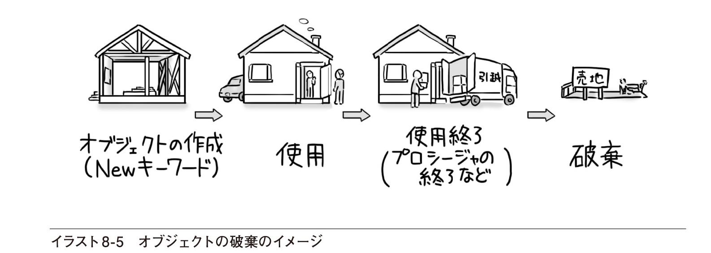
オブジェクトが破棄される直前に実行したい後始末などがあれば、Finalizeプロシージャにコードを書いておきます。Finalizeプロシージャはデストラクターと呼ばれ、オブジェクトが破棄される前に自動的に実行されます。このとき、アクセスレベルはProtectedにし、Overridesというキーワードを付けておく必要があります（LIST8-18）。以下のコードのOverridesの意味やMyBaseの意味については、次の節で説明します。
8-18 Finalizeメソッドに後始末のためのコードを書く
Sub New() mHp = 20 Debug.WriteLine("モンスターを一匹作成しました")End SubProtected Overrides Sub Finalize() Debug.WriteLine("モンスターを一匹破棄しました") MyBase.Finalize()●───基本クラスのFinalizeメソッドも呼び出しておくEnd Sub実際には、オブジェクトが利用されなくなってもすぐにオブジェクトが破棄されるというわけではありません。オブジェクトの破棄は一定のタイミングごとに行われます。したがって、Finalizeプロシージャに書かれたメッセージは少し時間が経ってから表示されます。LIST8-19のコードを例に、オブジェクトの作成と破棄の様子を追いかけてみましょう。
8-19 Monsterオブジェクトを作成し、すぐにプロシージャの実行を終了するコード
Private Sub MakeMonster(sender As Object, e As EventArgs)⇒Handles Button1.Click Dim aMonster As Monster = New Monster() End SubButton1コントロールをクリックすると、MakeMonsterプロシージャにより、Monsterクラスのオブジェクトが作成されます。しかし、aMonsterの宣言がプロシージャレベルなので、プロシージャの実行が終わると作成したオブジェクトはもう使われなくなってしまいます。ところが、オブジェクトの破棄はすぐに行われないので、「モンスターを一匹破棄しました」というメッセージはこのプロシージャが終了した直後ではなく、しばらく経ってから表示されます。ただし、実際にはプロシージャの実行が終了しても、オブジェクトへの参照は保持されたままになっているので、実質的にはウィンドウを閉じたときにメッセージが表示されます（画面8-3）。
❶ ［作成と破棄（D）］ボタンをクリックする
② 「モンスターを一匹作成しました」というメッセージが表示される
❸ ［×］をクリックしてプログラムを終了させる
④ 「モンスターを一匹破棄しました」というメッセージが表示される
オブジェクトを即座に破棄するには
オブジェクトの破棄を即座に実行しなくてはならないケースはほとんどありませんが、オブジェクトを参照する変数にNothingを代入した後、GC.Collect()メソッドを呼び出すという方法が使えます。上の例であれば、
aMonster = Nothing GC.Collect()とします。また、多くのコントロールでは、Disposeメソッドを使ってオブジェクトを破棄できます。例えば、Button1.Dispose()と書くと、即座にButton1コントロールが破棄されます（フォーム上からも消えます）。ただし、Disposeメソッドによりコントロールが破棄される直前に何らかの後始末をする方法は本書の範囲を大きく超えているので、ここでは触れないこととします。
■共有メンバーを定義する
CalcBmi2
個々のオブジェクトの機能ではなく、クラスに特有な機能は共有プロパティや共有メソッドといった共有メンバーとして定義します。例えば、これまで見てきたBMI指数を求めるメソッドは、個々の人に関する機能ととらえることもできますが、どんな人にでも適用される一般的な計算です。そのような場合にはオブジェクトを作成しなくても使える共有メンバーにしておくと便利です。では、BMI指数を求めるメソッドを共有メソッドとしてみましょう。LIST8-20のようにSharedというキーワードをメソッドの定義の最初に指定します。
8-20 BMI指数を求めるメソッドを共有メソッドにする
Public Class Person : Public Shared Function GetBmi(Height As Double, Weight As⇒Double) As Double Return Weight / (Height / 100) ^ 2 End Function共有メソッドとして定義したGetBmiメソッドは、オブジェクトを作成しなくても使えるので、以下のようなコードを書くと、出力ウィンドウにBMI指数が表示されます。
Debug.WriteLine(Person.GetBmi(172.1, 67.5).ToString("F2"))共有プロパティや共有フィールド（変数）を定義する場合も同様にSharedというキーワードを付けるだけです。ただし、共有メソッドの中では共有されていないメンバーを使うことはできません。LIST8-20の例ではPersonクラスでSharedの指定がされていないmWeightやmHeightといった変数は使えません。
なお、共有されていないメンバーのことを、インスタンスメンバー（インスタンス変数、インスタンスプロパティ、インスタンスメソッドなど）と呼ぶことがあります。これらのメンバーはインスタンス（オブジェクト）を作成してはじめて使えます。
確認問題
1.左のキーワードと、その正しい説明を線で結んでください。
2.この節で見たPersonクラスに、氏名を表すNameプロパティを追加するコードを完成させてください。
Private mName As （ ） ●───プロパティの実際の値を記憶するための変数を宣言する Public （ ） Name() As String ●───Nameプロパティを定義する Get Return （ ） ●───プロパティの値を返す End Get Set(value As String) mName = （ ） ●───プロパティに値を設定する End Set End Property3.この節で見たPersonクラスに、食事をするEatメソッドを追加するコードを完成させてください。Eatメソッドを実行すると引数で指定した値だけ体重が増えるものとします。
Public （ ） （ ） (value As Double) mWeight （ ） （ ） ●───mWeightにvalueの値を加算する End Sub8.4 クラスの継承
継承という機能を利用すると、あるクラスの機能をすべて受け継ぎ、さらに新たな機能を加えた新しいクラスを定義できます。例えば、人を表すPersonクラスの機能をすべて受け継ぎ、さらに男性に特有の値をプロパティとして持つようなMaleクラスを作ることができます。MaleクラスではPersonクラスの機能も、Maleクラス独自の機能も利用できます。
■クラスを継承して派生クラスを定義する
InheritTest
前節で定義したPersonクラスは健康管理のために使われるクラスでした。クラスのプロパティとしては身長を表すHeightと体重を表すWeightとを定義しましたが、通常の健康管理のためには、最高血圧、最低血圧、赤血球数、白血球数などなど、さまざまなプロパティを定義しておく必要があります。それらはいずれもPropertyプロシージャで定義できるので、これまでの方法で追加していけば実用的なクラスが作成できるでしょう。
しかし、診断項目の中には男性特有のもの（前立腺肥大、前立腺がんなど）や、女性特有のもの（子宮筋腫や子宮がんなど）もあり、より詳細な健康診断のためにはこれらのプロパティが必要になります。このとき、性別を問わずすべての項目をプロパティとして追加することもできますが、継承の機能を使うと、よりスッキリとクラスを定義することができます。
継承というのは、あるクラスの機能をすべて受け継ぎ、それに新たな機能を加えた新しいクラスを定義することです。例えば、男性であれば、Personクラスの機能はすべて受け継ぎ、さらに男性特有の検査項目の値をプロパティとして持つようなクラスを定義するというわけです。例えば、男性クラスの名前をMaleクラスとすると、イラスト8-6のようなイメージのクラスが作成できるというわけです。
この場合、継承元にあたるクラスを親クラスや基本クラスと呼びます。また、継承されたクラスを子クラスや派生クラスと呼びます。したがって、Personクラスが基本クラス、Maleクラスが派生クラスになるわけです。
具体的なコードを見てみましょう。まず、Maleクラスを作るには、Personクラスの機能を受け継いでいることを書く必要があります（LIST8-21）。
8-21 Personクラスを継承したMaleクラスを定義する
Public Class Male Inherits PersonEnd Classクラスのアクセスレベルに注意
フォームの外側でPersonクラスを作成した場合、Personクラスを継承できるようにするには、Personクラスの定義にPublicキーワードを付けておく必要があります。
Inheritsは「継承する」という意味です。つまり、MaleクラスはPersonクラスの機能を受け継いでいるというわけです。これだけで、Personクラスのさまざまなプロパティやメソッドが使えるようになります。あとは、Maleクラスに特有のプロパティやメソッドを追加しておくだけです。例えば、前立腺がんの検診に使われるPSAという値※1をプロパティとして定義するなら、LIST8-22のようになります。
8-22 MaleクラスにPsaプロパティを定義する
Public Class Male Inherits Person Private mPsa As Double Public Property Psa() As Double Get Return mPsa End Get Set(value As Double) mPsa = value End Set End PropertyEnd Class継承されたクラスは、これまでのクラスと同じように使えます。オブジェクトを作成してプロパティを設定してみましょう（LIST8-23）。
8-23 Maleクラスのオブジェクトを作成し、プロパティを設定する
Dim aMale As Male = New Male()aMale.Height = 172.1aMale.Weight = 67.5aMale.Psa = 0.01注目すべき点はHeightプロパティやWeightプロパティです。これらのプロパティはMaleクラスでは定義していないにもかかわらず、Maleクラスで利用できます。なぜなら、これらのプロパティは基本クラスで定義されていたからです。基本クラスの機能を受け継いでいるので、これらのプロパティが使えるというわけです。
ただし、基本クラスでPrivateを付けて宣言された変数やプロパティ、メソッドは派生クラスでは使えません。
■基本クラスと派生クラスだけで利用できるメンバーを定義する
基本クラスでPublicを指定されたメンバーは、クラスの外側からでも利用できます。派生クラスでは基本クラスのPublicメンバーは何も宣言しなくても利用できます。一方Privateを指定されたメンバーは、クラスの中でだけしか使えません。いくら機能を継承しているといっても、基本クラスのPrivateメンバーは派生クラスで使うことができません。
ところで、基本クラスの外側からは利用できないが、派生クラスで利用できるメンバーが必要になることもあります。そのような場合には基本クラスでの宣言にProtectedを指定します（LIST8-24）。例えば、身長を表すHeightの取り扱いを派生クラスで変更したいような場合に便利です。
8-24 基本クラスのメンバー変数を派生クラスでも使えるようにする
Public Class Person Protected mHeight As Double :このように宣言しておくと、Personクラスから派生したMaleクラスでは自由にmHeightという変数が使えます。次に説明するオーバーライドを利用する場合に必要になるので、具体例は次の項で見ることにしましょう。
■プロパティやメソッドをオーバーライドする
派生クラスは基本クラスの機能を受け継いでいます。しかし、基本クラスの機能が派生クラスでそのまま使えないこともあります。同じ名前の機能ではあっても、基本クラスと派生クラスで取り扱いや計算方法が異なるような場合がそれにあたります。あまり意味のない例ですが、例えば、Personクラスを継承したChildクラスがあるものとします。Childクラスは文字通り、子供を表すクラスです。
小さな子供の場合、大人のBMI指数をそのまま使ってもあまり意味のないことがあるので、身長が100cmよりも小さい場合にはBMI指数を計算せずに0を返したいということもあるはずです。その場合には、GetBmiというメソッドを派生クラスで定義し直します。これがオーバーライドです。そのためには、同じ名前のメソッドを派生クラスに書きます。このとき、メソッドの定義にOverridesというキーワードを付けておきます。ChildクラスのGetBmiメソッドはLIST8-25のようになるでしょう。なお、前節の最後でGetBmiメソッドを共有メソッドにする例を見ましたが、ここでは、共有メソッドではないものとしてコードを見ていきます。
8-25 GetBmiメソッドをオーバーライドする（Childクラス内のコード）
Public Class Child Inherits Person Public Overrides Function GetBmi() As Double If mHeight < 100 Then Return 0 End If Return mWeight (mHeight 100) ^ 2 End Function :End Classこのように、オーバーライドを利用すれば、基本クラスのメソッドと同じ名前で、異なる働きのメソッドを派生クラスで定義できます。
派生クラスでメソッドをオーバーライドしても、基本クラスのメソッドを派生クラスから呼び出すこともできます。基本クラスを表すMyBaseキーワードを利用し、メソッド名を指定します。上の例では、BMI指数を求めるメソッドが基本クラスにあるので、
Return mWeight (mHeight 100) ^ 2のような計算をする代わりに
Return MyBase.GetBmi()と書いて基本クラスのメソッドを呼び出しても構いません。このようにすれば、同じ名前のメソッドであっても、基本クラスのメソッドなのか派生クラスのメソッドなのかが区別できます。
ただし、このとき、基本クラスに書かれている同じ名前のメソッドにはOverridableというキーワードを付けておく必要があります。つまり、PersonクラスのGetBmiメソッドの最初の行を書き換える必要があります。また、派生クラスでも使われる変数についてはProtectedキーワードを付けて宣言しておく必要があります（LIST8-26）。
8-26 基本クラスのメソッドをオーバーライド可能にする（Personクラス内のコード）
Protected mHeight As DoublePublic Overridable Function GetBmi() As Double Return mWeight (mHeight 100) ^ 2End Functionなお、オーバーライドを利用するときには、引数の並びやデータ型も同じでなくてはいけません。
オーバーロードも利用できる
Chapter7で見たオーバーロードを利用することもできます。その場合は、派生クラスのGetBmiメソッドにOverloadsというキーワードを付けます。
Public Overloads Function GetBmi() As Doubleこの場合、基本クラスのGetBmiメソッドを書き換える必要はありません。また、引数の並びやデータ型が異なっても構いません。
■インターフェイスを利用する
InterfaceTest
インターフェイスとは、複数のクラスで共通に使われるような機能を定義するのに便利な機能です。例えば、「歌をうたう」という機能は人を表すクラスでも、鳥を表すクラスでも使われます。そのような機能をインターフェイスとして定義しておき、クラスから利用できるようにします。インターフェイスでは、プロパティやメソッドは定義されますが、どのような処理をするかはインターフェイスには書かれません。処理の内容はインターフェイスを利用するクラスで書きます。
インターフェイスを定義するにはInterfaceキーワードを使います。Singメソッドを持つISingというインターフェイスを定義してみましょう（LIST8-27）。
8-27 インターフェイスを定義する
Public Interface ISing Sub Sing(SongName As String)End Interfaceここでは、歌の名前を引数として受け取るSingメソッドを1つだけ定義していますが、必要であれば、パートを表すPartプロパティ、歌の長さを返すTimeプロシージャなどを以下のように書いておくこともできます（図8-10）。
インターフェイスでは、プロシージャの中身を書かないという点に注目してください。話を簡単にするために、最初のSingメソッドだけが定義されたISingインターフェイスを利用するものとします。MaleクラスでISingインターフェイスを利用するためのコードを見てみましょう（LIST8-28）。
8-28 クラスでインターフェイスを利用する
Public Class Male Inherits Person Implements ISing ： Public Sub Sing(value As String) Implements ISing.Sing My.Computer.Audio.Play(value, AudioPlayMode.Background) End Sub ：インターフェイスを利用するには、クラス定義の後に「Implements インターフェイス名」と書き、インターフェイスで定義されているプロシージャの内容を書きます。プロシージャ名の後にもImplementsキーワードと「インターフェイス名.プロシージャ名」を書く必要があります。Implementsとは「実装する」という意味です。
ここでは、Singメソッドの中でMy.Computer.AudioというオブジェクトのPlayメソッドを使い、valueで指定されたサウンドファイルを再生します。ただし、再生できるサウンドファイルはwav形式のものに限ります。サウンドファイルの拡張子が「.wav」であっても、内容がmp3などほかの形式である場合にはエラーとなるので注意してください。
サウンドを繰り返して再生するには
My.Computer.Audio.Playメソッドでは、サウンドファイル名と再生の方法を指定します。再生の方法にはAudioPlayMode.Background（再生の終了を待たずに次のコードを実行する）、AudioPalyMode.BackgroundLoop（繰り返し再生する。再生の終了を待たずに次のコードを実行する）、AudioPalyMode.WaitToComplete（再生が終了してから次のコードを実行する）が指定できます）。
ポイントは、インターフェイスを利用するクラスでプロシージャの内容を書くということです。書き方をまとめておきましょう（図8-11）。
このように定義しておけば、MaleクラスのオブジェクトからSingメソッドが呼び出せます（LIST8-29）。Singメソッドに指定するサウンドファイル名を実際のサウンドファイルのパス名に書き換えて実行してみてください。
8-29 インターフェイスのメソッドを呼び出す
Dim aMale As Male = New Male()aMale.Sing("C:￥Users￥User1￥Music￥海の歌.wav")以上、クラスの継承、オーバーライド、インターフェイスについて見てきました。クラスにはほかにもさまざまな機能がありますが、一般的なプログラムの作成にはこれで十分です。確認問題で知識を確実なものにし、次の節で、クラスを利用したプログラムに取り組みましょう。
確認問題
1.以下の文章のうち正しいものには○を、間違っているものには×を記入してください。
（ ）継承とはクラスをコピーすることである
（ ）継承とはあるクラスの機能を受け継いだクラスを定義することである
（ ）派生クラスでは基本クラスにない機能が追加できる
（ ）派生クラスでは基本クラスのプロシージャと同じ名前のプロシージャは定義できない
（ ）インターフェイスではプロシージャなどを定義するだけで、処理の内容は書かない
2.右側の説明を参考に、PersonクラスからRogueクラスを派生させ、さらにIMagicインターフェイスを利用するコードを書いてください。
Public Class Form1 Private Sub Button1_Click(sender As Object, e As EventArgs) ⇒Handles Button1.Click Dim aRogue As （ ） = New （ ）() ●───Rogueクラスのオブジェクトを作成する aRogue.Hp = 50 ●─── 各プロパティに値を代入する aRogue.Ap = 80 aRogue.Mp = 10 End Sub End Class Public Class Person （ ） mHitPoint As Integer ' 生命力 ●───この変数を派生クラスでも使えるようにする Public Property Hp() As Integer Get Return mHitPoint End Get Set(value As Integer) mHitPoint = value End Set End Property End Class Public Class Rogue （ ） Person Person ●───クラスを継承する （ ）IMagic IMagic ●───インターフェイスを実装する Private mAttackPower As Integer ' 攻撃力 Private mMagicPower As Integer ' 魔力 Public Property Ap() As Integer Get Return mAttackPower End Get Set(value As Integer) mAttackPower = value End Set End Property Public Sub Regene() ' 回復メソッド （ ） += 1 ●───生命力を表す基本クラスの変数の値を1増やす End Sub Public Property Mp() As Integer （ ） （ ） ●───IMagicインターフェイスのMpプロパティの内容を書く Get Return mMagicPower End Get Set(value As Integer) mMagicPower = value End Set End Property End Class Public （ ） IMagic ●───IMagicインターフェイスを定義する Property Mp() As Integer ' 魔力 End （ ） ●───IMagicインターフェイスの定義の終わり8.5 プログラミングにチャレンジ
クラスを利用すれば、人やモノを変数で表すよりも自然な形で表現できます。この節では、企業のプロフィールを表すクラスを定義し、企業の評価に利用できるようにします。クラスには企業の評価に使われるいくつかの指標をプロパティとして含むものとします。
■フェイスチャートを表示するプログラム
FaceChart
経営分析や株価の分析には、自己資本比率や一株当たり経常利益などさまざまな指標が使われます。しかし、一般の人には意味が分かりにくいので、イメージが湧くように、それらの値をもとに、企業の成長性や株価の割安性などを点数で表すことがよくあります。ここでは、企業の評価に使われる「成長性」「割安性」「財務健全性」について、1〜10までの10段階の点数が得られているものとして、簡単なフェイスチャートを作ってみます。まず、プログラムの完成イメージはイラスト8-7のようになります。
顔はPictureBoxコントロールに描くものとし、眉毛が「成長性」、目が「割安性」、口が「財務健全性」を表すものとします。顔の具体的な描き方はコードを書くときに説明しますが、成長性が1のときは下がった眉になり、10のときは上がった眉になるようにします。割安性が1のときは目は小さく、10のときは目を大きくします。また、財務健全性が1のときはへの字型の口になり、10のときはにっこりとした口になります。つまり、評価が高いほど、活力のあるきりっとした顔になり、評価が低いほど元気のない顔になります。
このプログラムでは、成長性や割安性といった点数で表される企業のプロフィールをクラスとして定義し、それをもとにオブジェクトを作成します。
では、新しいプロジェクトを作成してフォームをデザインしていきましょう。プロジェクト名はFaceChartとします。
■フォームのデザイン
フォームに配置するコントロールは、Labelコントロール、TextBoxコントロール、Buttonコントロール、PictureBoxコントロールなどです。画面8-4のようにコントロールを配置し、表8-1にそってプロパティの値を設定していってください。
■クラスを定義する
最初に、企業のプロフィールを表すクラスを作っておきましょう。クラス名はFaceとします。Faceクラスには、成長性、割安性、財務健全性を表すプロパティが必要です。したがって、それらの値を保持しておくための変数が必要です。また、実際にフェイスチャートを描くために使うPictureBoxコントロールを参照するための変数もクラスに含めておきましょう。クラスの定義と、変数の宣言まで書いてみます（LIST8-30）。
8-30 クラスのメンバー変数を宣言する
Public Class Face Private mGrowth As Integer ' 成長性 Private mUnderValue As Integer ' 割安性 Private mHealth As Integer ' 財務健全性 Private picFace As PictureBox ' 顔 ：End Class■プロパティを定義する
成長性、割安性、財務健全性を表すプロパティは名前こそ異なりますが、コードの内容は同じです。いずれも1〜10までの整数値しか取らないので、その範囲外の値を設定しようとしたら、1〜10になるように調節することにしましょう（LIST8-31）。
8-31 成長性を表すGrowthプロパティを定義する
Public Property Growth() As Integer Get Return mGrowth End Get Set(value As Integer) mGrowth = Math.Min(10, Math.Max(1, value)) End SetEnd Propertyプロパティの値を設定するためのSet ... End Setステートメントでは、設定された値が1より小さいときは1にし、10より大きいときには10にするコードが書かれています。これは7.2節などで見たのと同じ方法です。
ほかのプロパティも同様に書けます。Propertyプロシージャをすべて書き終わったところまで、コードを見ておきましょう（LIST8-32）。
8-32 すべてのプロパティを定義した
Public Class Face Private mGrowth As Integer ' 成長性 Private mUnderValue As Integer ' 割安性 Private mHealth As Integer ' 財務健全性 Private picFace As PictureBox ' 顔 Public Property Growth() As Integer Get Return mGrowth End Get Set(value As Integer) mGrowth = Math.Min(10, Math.Max(1, value)) End Set End Property Public Property UnderValue() As Integer Get Return mUnderValue End Get Set(value As Integer) mUnderValue = Math.Min(10, Math.Max(1, value)) End Set End Property Public Property Health() As Integer Get Return mHealth End Get Set(value As Integer) mHealth = Math.Min(10, Math.Max(1, value)) End Set End Property Public Property Picture() As PictureBox Get Return picFace End Get Set(value As PictureBox) picFace = value End Set End Property ：End Class最後のPictureプロパティは、フェイスチャートを描画するために使うPictureBoxコントロールへの参照を記憶しておくためのものです。フォーム上のpicCanvasというPictureBoxコントロールは、Faceクラスの中ではpicFaceという変数で参照できるようになります。
■メソッドを定義する
Faceクラスで使われるメソッドは、PictureBoxコントロールにフェイスチャートを描くメソッドだけです。しかし、単純に絵を描けばいいというものではありません。Windowsのプログラムでは、ウィンドウの重なり方が変わったり、ウィンドウのサイズが変わったり、最小化から元のサイズに戻されたりするので、そのつど描画された内容を再描画する必要があります。つまり、どのタイミングで描画すればよいか、私たちがあらかじめ決めておくことはできないのです。しかし、Windowsはウィンドウの操作などを管理しているので、再描画が必要になったかどうかを知っています。そこで、発想を転換します。自分で絵を描くのではなく、再描画の必要が生じときに描画するコードを用意しておき、Windowsに呼び出してもらうのです。
それに対処するための機能がPictureBoxコントロールのPaintイベントです。再描画が必要になるとWindowsによってPaintイベントハンドラーが自動的に呼び出されます（図8-12）。
したがって、Faceクラスの中にPaintイベントハンドラーを書いておき、その中でフェイスチャートを描画します。Paintイベントハンドラーは、クラスの外から呼び出すものではなく、再描画が必要になったときに自動的に呼び出されるので、Privateキーワードを指定しておきます（LIST8-33）。
8-33 PictureBoxコントロールのPaintイベントハンドラーを書く
Private Sub DrawFace(sender As Object, e As PaintEventArgs)⇒Handles picFace.Paint e.Graphics.Clear(picFace.BackColor) ' 輪郭 e.Graphics.DrawEllipse(Pens.Black, 0, 0, 45, 45) ' 眉毛を描く e.Graphics.DrawLine(Pens.Black, 10, 10, 20, mGrowth + 5) e.Graphics.DrawLine(Pens.Black, 25, mGrowth + 5, 35, 10) ' 目を描く e.Graphics.DrawEllipse(Pens.Black, 15 - mUnderValue ￥ 2,⇒20 - mUnderValue ￥ 2, mUnderValue, mUnderValue) e.Graphics.DrawEllipse(Pens.Black, 30 - mUnderValue ￥ 2,⇒20 - mUnderValue ￥ 2, mUnderValue, mUnderValue) ' 口を描く If (mHealth < 6) Then e.Graphics.DrawArc(Pens.Black, 15, 30, 15, 6 - mHealth,⇒180, 180) Else e.Graphics.DrawArc(Pens.Black, 15, 30, 15, mHealth, 0,⇒180) End If End Subプロシージャはすべて自分でFaceクラスの中に入力する必要があります。イベントハンドラーの引数として渡されたeという変数のGraphicsプロパティを参照すれば、描画に使われるGrapchicsオブジェクトを利用できます。Graphicsオブジェクトには、表示をクリアするClearメソッド、線を引くためのDrawLineメソッド、楕円を描くためのDrawEllipseメソッド、円弧を描くためのDrawArcメソッドなどが使えるので、これらを利用してフェイスチャートを描画します。
なお、変数で参照されたオブジェクトのイベントを利用したい場合には、そのオブジェクトを参照する変数の宣言にWithEventsキーワードを指定しておく必要があります。したがって、Faceクラスの最初に宣言されているpicFaceという変数は
Private WithEvents picFace As PictureBox ' 顔と書き換えておいてください。WithEventsを書いていない場合は、上に示したpicFace.Paintというイベントハンドラーが使えません。
■線を引く
DrawLineメソッドにはいくつかの形式がありますが、ここで使っているのは以下のような書き方です。
DrawLine(ペン, 始点のX位置, 始点のY位置, 終点のX位置, 終点のY位置)ここでは、眉を描くためにDrawLineメソッドを使っています。例えば、mGrowthの値が8の場合、
e.Graphics.DrawLine(Pens.Black, 10, 10, 20, mGrowth + 5)によって描かれる左眉の線は、図8-13のようになります。左上が（0,0）で、右にいくほどXの値が増え、下に行くほどYの値が増えます。mGrowth（成長性）の値によって終点のY位置が変わるので、mGrowthが大きくなるほど吊り上がった眉になることが分かります。
最初の引数（ペン）には、Penクラスのオブジェクトを指定します。このオブジェクトは描画に使われる線の太さや色、塗りつぶしを決めるのに使われます。Pensクラスのオブジェクトを作成して、細かく指定してもいいのですが、「Pens.色名」で表されるPenオブジェクトを利用すれば、よく使う設定が簡単に指定できます。ここでは、Pens.Blackを指定し、太さ1の黒いペンで描画することにしています。
■楕円を描く
楕円はDrawEllipseメソッドを使って書きます。ここでは、左上の位置と幅、高さを指定する形式を使っています。
DrawEllipse(ペン, 左上のX位置, 左上のY位置, 幅, 高さ)例えば、mUnderValueの値が5であれば、mUnderValue ￥2の値が2となるので、
DrawEllipse(Pens.Black, 15 - mUnderValue ￥ 2, 20 - mUnder⇒Value ￥ 2, mUnderValue, mUnderValue)は、
DrawEllipse(Pens.Black, 13, 18, 5, 5)と同じです。したがって、図8-14のような円が描かれます。mUnderValue（割安性）の値が大きいほど円の左上のX位置とY位置が小さくなり、幅と高さが大きくなるので、目が大きくなることが分かります。
■円弧を描く
円弧はDrawArcメソッドを使います。ここでは、左上の位置と幅、高さ、開始位置の角度、終了位置の角度を指定します。
DrawArc(ペン, 左上のX座標, 左上のY座標, 幅, 高さ, 開始角, 終了角)mHealthの値が6であれば、
DrawArc(Pens.Black, 15, 30, 15, mHealth, 0, 180)で図8-15のような円弧が描かれます。円弧は開始角から終了角まで時計回りに描かれます。mHealth（財務健全性）の値が大きいほど円弧の高さが高くなるのでり、にっこりした口になることが分かります。
picFaceのPaintイベントハンドラーは、コントロールの再描画が必要になったときには自動的に呼び出されます。しかし、それ以外の場合に自分で描画したいこともあるでしょう。例えば、btnDrawコントロールをクリックしたときにフェイスチャートを描画したい場合などがそれにあたります。ボタンをクリックしただけではpicFaceコントロールを再描画する必要がないので、Paintイベントハンドラーは呼び出されません。したがって、picFaceの表示は変わりません。そのような場合にもpicFaceコントロールのPaintイベントを発生させ、picFaceコントロールを再描画したいときには、Refreshメソッドを呼び出します。つまり、
picFace.Refresh()と書けば、picFaceが再描画され（Paintイベントハンドラーが呼び出され）、フェイスチャートが表示されます。
そこで、Faceクラスのメソッドとして、picFaceのRefreshメソッドを呼び出すコードを書いておきましょう（LIST8-34）。
8-34 picFaceコントロールを再描画するためのメソッド
Public Sub Refresh() picFace.Refresh()End Sub■イベントハンドラーの記述
このプログラムでは、3つのTextBoxコントロールにそれぞれ値を入力し、btnDrawボタンをクリックしたらフェイスチャートを表示します。したがって、btnDrawコントロールのClickイベントハンドラーにそのためのコードを書きます。コードの内容は、Faceクラスの新しいオブジェクトを作成し、TextBoxコントロールに入力されている値をGrowth、UnderValue、Healthの各プロパティに設定した後、利用するPictureBoxコントロールをPictureプロパティに設定します。あとは、Refreshメソッドを呼び出すだけです。
btnDrawコントロールのClickイベントハンドラーの名前をMakeFaceChartとして、コードを書いてみましょう（LIST8-35）。
8-35 成長性、割安性、財務健全性の値をもとにフェイスチャートを描画するイベントハンドラー
Private Sub MakeFaceChart(sender As Object, e As EventArgs)⇒Handles btnDraw.Click Dim aFace As Face = New Face() ●─── Faceクラスのオブジェクトを作る aFace.Picture = picCanvas ●─── PictureプロパティでpicCanvasを参照できるようにする aFace.Growth = CInt(txtGrowth.Text) aFace.UnderValue = CInt(txtUnderValue.Text) ●───入力された値を設定する aFace.Health = CInt(txtHealth.Text) aFace.Refresh() ●─── PictureBoxが再描画されるように指示する End Subここまではコードを少しずつ見てきたので、それぞれの働きは理解できたかもしれませんが、全体の関係が把握しづらいかもしれません。そこで、コード全体を確認しておきましょう（LIST8-36）。
8-36 フェイスチャートを描くためのコード（全体）
Option Strict OnPublic Class Form1 Private Sub MakeFaceChart(sender As Object, e As EventArgs)⇒Handles btnDraw.Click Dim aFace As Face = New Face() aFace.Picture = picCanvas aFace.Growth = CInt(txtGrowth.Text) aFace.UnderValue = CInt(txtUnderValue.Text) aFace.Health = CInt(txtHealth.Text) aFace.Refresh() End Sub Private Sub ExitProc(sender As Object, e As EventArgs)⇒Handles btnExit.Click Application.Exit() End SubEnd ClassPublic Class Face Private mGrowth As Integer ' 成長性 Private mUnderValue As Integer ' 割安性 Private mHealth As Integer ' 財務健全性 Private WithEvents picFace As PictureBox ' 顔 Public Property Growth() As Integer Get Return mGrowth End Get Set(value As Integer) mGrowth = Math.Min(10, Math.Max(1, value)) End Set End Property Public Property UnderValue() As Integer Get Return mUnderValue End Get Set(value As Integer) mUnderValue = Math.Min(10, Math.Max(1, value)) End Set End Property Public Property Health() As Integer Get Return mHealth End Get Set(value As Integer) mHealth = Math.Min(10, Math.Max(1, value)) End Set End Property Public Property Picture() As PictureBox Get Return picFace End Get Set(value As PictureBox) picFace = value End Set End Property Private Sub DrawFace(sender As Object, e As PaintEventArgs)⇒Handles picFace.Paint e.Graphics.Clear(picFace.BackColor) ' 輪郭 e.Graphics.DrawEllipse(Pens.Black, 0, 0, 45, 45) ' 眉毛を描く e.Graphics.DrawLine(Pens.Black, 10, 10, 20, mGrowth + 5) e.Graphics.DrawLine(Pens.Black, 25, mGrowth + 5, 35, 10) ' 目を描く e.Graphics.DrawEllipse(Pens.Black, 15 - mUnderValue ￥ 2,⇒20 - mUnderValue ￥ 2, mUnderValue, mUnderValue) e.Graphics.DrawEllipse(Pens.Black, 30 - mUnderValue ￥ 2,⇒20 - mUnderValue ￥ 2, mUnderValue, mUnderValue) ' 口を描く If (mHealth < 6) Then e.Graphics.DrawArc(Pens.Black, 15, 30, 15, 6 - mHealth,⇒180, 180) Else e.Graphics.DrawArc(Pens.Black, 15, 30, 15, mHealth, 0,⇒180) End If End Sub Public Sub Refresh() picFace.Refresh() End SubEnd Class■プログラムを実行する
コードがすべて入力できたら［開始］ボタン（）をクリックして、プログラムを実行します。TextBoxコントロールにさまざまな数値を入力し、［イメージ表示（D）］ボタンをクリックすればPictureBoxコントロールにフェイスチャートが表示されます（画面8-5）。
❶ ［成長性（G）］、［割安性（V）］、［財務健全性（H）］の値を入力する
❷ ［イメージ表示（D）］ボタンをクリックする
③ フェイスチャートが表示される
Chapter8のまとめ
●クラスを利用すると、人やモノを目的に合わせて自然に表現できます
●クラスにはプロパティやメソッドを定義できます
●オブジェクトを作成するとコンストラクターが自動的に実行されます
●オブジェクトを破棄するときに必要な後始末はデストラクターに書きます
●共有プロパティや共有メソッドを利用すると、オブジェクトを作成しなくても使える、クラス特有の機能が定義できます
●クラスを継承すると基本クラスの機能を備え、しかも独自の機能が追加できる派生クラスが作成できます
●派生クラスでは基本クラスのプロパティやメソッドをオーバーライドできます。オーバーライドにより、同じ名前で異なる機能を持つプロパティやメソッドが定義できます
●インターフェイスを利用すると、さまざまなクラスで使われる機能をクラスに組み込むことができます
練習問題
Insect
［A］新しいプロジェクトInsectを作成し、平面上をランダムに動き回る昆虫ロボットを表すクラスを作ってみましょう。クラス名はInsectroidとします。プロパティとしては、水平位置を表すXプロパティ、垂直位置を表すYプロパティを作成し、メソッドとしては、ランダムに一歩動くRandomWalkメソッドを作成してください。なお、水平位置と垂直位置の初期値は（10,10）とします。
［B］フォームのLoadイベントハンドラーで上記のInsectroidクラスから新しいオブジェクトを作成し、ボタンをクリックするたびに位置を変えるプログラムを作成してください。昆虫ロボットの絵を描く必要はありません。右の実行例のように位置を表示するだけで構いません。
Part3
本格的なプログラミングに
チャレンジする
Part3では、これまでに学んだ言語の基礎をもとにして、実践的なプログラミングに取り組みます。実際の業務で使われるプログラムでは、複雑な例外に対応するため、かなり細かな処理を書く必要がありますが、ここでは、大きな流れがつかめるように、ある程度単純化してあります。プログラムの規模はそれほど大きくはありませんが、エッセンスとなる要素を押さえてあるので、応用のための足がかりとなるはずです。
Chapter9
ファイルを取り扱う～ Fortune プログラム
この章では、日々の格言を表示するFortuneプログラムを作成します。格言はファイルに保存されているので、ファイルのデータを読み出したり、新しい格言をファイルに書き込んだりする必要があります。その方法を学ぶとともに、メニューの設定、ステータスバーの利用、構造化例外処理、クリップボードの使い方などについても学び、本格的なプログラミングへとステップアップします。
9.1 ここで作成するプログラム
格言を表示するプログラム
9.2 Fortuneプログラムを作成する
フォームをデザインする／メニューをデザインする／ステータスバーをデザインする／格言をファイルから読み出して表示する／構造化例外処理を書く／新しい格言をファイルに書き込む／格言をクリップボードにコピーする／プログラムを終了させる／プログラムを実行する
これから学ぶこと
● ファイルのデータを読み出したり、ファイルにデータを書き込む方法を学びます
● メニューの設定と利用方法を学びます
● ステータスバーの設定と利用方法を学びます
● 構造化例外処理の方法を学びます
● プログラムからクリップボードにデータをコピーしたり、クリップボードからデータを取り出す方法を学びます
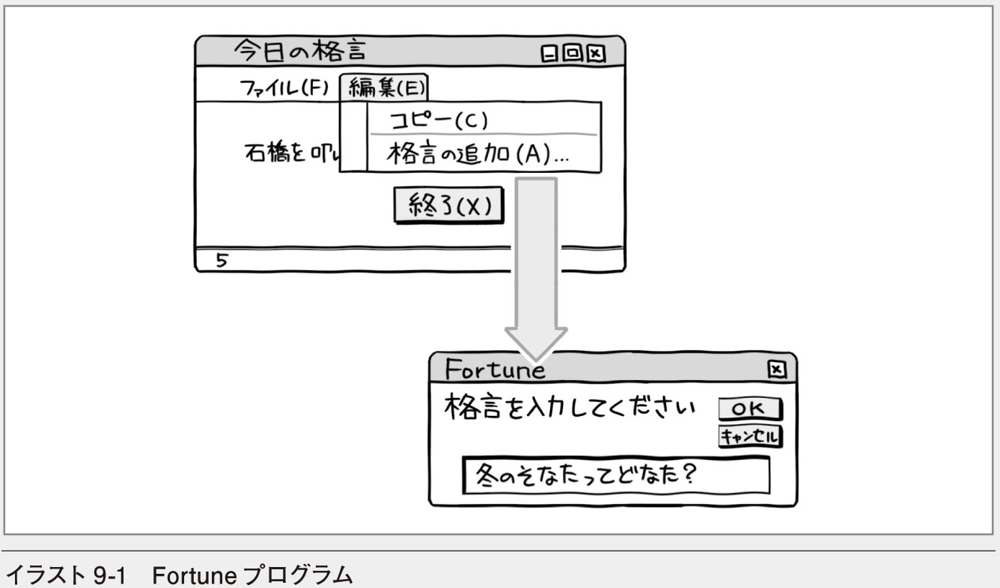
この章では格言を表示するFortuneプログラムの作成を通して、ファイルからデータを読み出したり、ファイルにデータを書き込んだりする処理を学びます。あわせて構造化例外処理の方法やクリップボードの利用方法についても学びます。
9.1 ここで作成するプログラム
格言を表示するためのプログラムは、一般にFortune（フォーチュン）と呼ばれます。この章では、ファイル処理、メニューの設定と利用、例外処理、クリップボードの利用などの機能を盛り込んだFortuneプログラムを作成します。
■格言を表示するプログラム
ここで作成するFortuneプログラムでは、ファイルに保存されている格言をランダムに読み出し、フォーム上に表示します。また、自分で格言を追加することもできるようにします。ファイルには1行につき1つの格言が保存されているものとします。
プログラムの完成イメージをラフスケッチで描いてみましょう。
プログラムの表面的な動きはだいたい分かると思いますが、どのようなファイルにどのようなデータが保存されているか、プログラムとデータをどうやりとりするかといったことはこれだけでは見えません。ファイルまで含めた処理のイメージは図9-1のようになります。
このプログラムではファイルを2つ利用します。1つは格言の行数が保存されているfortune.ctrファイルです。もう1つは実際に格言が保存されているfortune.txtファイルです。プログラムが実行されると、まず、fortune.ctrファイルから行数を読み出します。この行数をもとにランダムな行位置を選び、fortune.txtファイルから格言を読み出してフォーム上に表示します。
また、フォームのメニューから［編集（E）］−［格言の追加（A）...］を選ぶと、新しい格言が追加できるようにします。このときfortune.txtファイルに新しい格言を追加するとともに、fortune.ctrファイルに保存されている行数も1増やしておきます。
プログラムのイメージがつかめたら、Fortuneという名前のプロジェクトを作成し、プログラミングに取り組みましょう。
9.2 Fortuneプログラムを作成する
このプログラムでは、これまで使ってきたコントロールのほかに、メニューとステータスバーを使います。実行すべき主な処理は、プログラムが起動されたときにファイルから格言を読み出して表示すること、入力された新しい格言をファイルに追加することです。さらに、例外処理を加え、プログラムをより堅牢で安定したものにしたり、クリップボードとのやりとりを加え、プログラムをより使いやすいものにします。
■フォームをデザインする
Fortune
フォーム上にメニューを表示するにはMenuStripコントロールを使い、ステータスバーを表示するにはStatusStripコントロールを使います。ただし、この段階では、MenuStripコントロールとStatusStripコントロールはフォーム上に配置しておくだけにします（画面9-1）。使い慣れたLabelコントロールやButtonコントロールについては、プロパティを設定しておきましょう（表9-1）。
❶ MenuStripコントロールを配置する
② 何も表示されていないメニューが追加される
③ MenuStripコントロールを表すアイコンが表示される
❹ StatusStripコントロールを配置する
⑤ 何も表示されていないステータスバーが追加される
⑥ StatusStripコントロールを表すアイコンが表示される
MenuStripコントロールとStatusStripコントロールを配置すると、ウィンドウの下のほうにコントロールを表すアイコンが表示されます。ウィンドウ内に表示されないコントロールやプロパティの設定が複雑なコントロールには、このようなアイコンが表示されるものもあります。MenuStripコントロールにはサブメニューがあり、StatusStripコントロールの中にはラベルやボタンが表示できるので、ここからメニュー項目を追加していきます。
では、メニューのデザインに移りましょう。
■メニューをデザインする
MenuStripコントロールを配置すると、フォームに空のメニューと、ウィンドウの下のほうにアイコンが表示されます。空のメニューには「ここへ入力」と表示された項目があるので、そこに直接メニュー項目のテキストを入力していきます（画面9-2）。入力した文字列はTextプロパティに設定されます。
❶ 「ここへ入力」と表示されている場所にメニュー項目のテキストを入力する
同じようにして、メニューバーの右側にメインメニューの項目を、それらの項目の下にサブメニューの項目を入力していきましょう。項目の区切りを追加するには、項目名として「-」（ハイフン）を入力します。画面9-3が完成例です。

❶ ［編集（E）］メニューのサブメニューも定義しておく
❷ 区切り線を入れるには「ここへ入力」と表示されている場所に「-」を入力する
個々のメニュー項目も実はToolStripMenuItemというコントロールの一種です。コントロールのNameプロパティにはメニュー項目のテキストに指定した文字列をもとに名前が付けられます。例えば、「ファイル（&F）」という項目であれば「ファイルFToolStripMenuItem」のようなコントロール名になります。コードの中でこの名前を使うことはあまりないので、そのままにしておいても構いませんが、mnuFなどのように、アクセスキーの文字を使った簡潔な名前にしておいたほうが、取り扱いが楽です（表9-2）。
標準的なメニュー項目を一発で設定するには
MenuStripコントロールの右にある［ ▶ ］ボタンをクリックし、［標準項目の挿入］を選択すると、一般的なアプリケーションでよく使われるメニューが自動的に設定されます。
■ステータスバーをデザインする
ステータスバーには表示された格言の番号を表示します。そこで、ステータスバー上にラベルを追加し、文字列が表示できるようにしましょう。フォーム上に表示されているStatusStripコントロールをクリックし、［ToolStripStatusLabelの追加］ボタンをクリックします（画面9-4）。すると、ToolStripStatusLabelと呼ばれるコントロールが追加されます。このコントロールの使い方はLabelコントロールとほとんど同じです。
❶ ［ToolStripStatusLabelの追加］ボタンをクリックする
プロパティは表9-3のように変更します。最初はラベルに何も表示しないので、Textプロパティの文字列は削除しておきます。
［▼］をクリックすればステータスバーに表示するコントロールが選択できる
［ToolStripStatusLabelの追加］ボタンの右にある［▼］をクリックすれば、StatusLabelのほか、ProgressBar、DropDownButton、SplitButtonのいずれかのコントロールを選択してステータスバーに追加できます。
■格言をファイルから読み出して表示する
ただ格言を表示するだけといっても、やるべきことがかなりたくさんあるので、大きな流れを確認しておきます。おおまかにいうと、格言の行数が入ったファイル（fortune.ctr）から行数を読み出し、その行数を最大値とする乱数をもとに、格言ファイル（fortune.txt）から目的の行を読み出して表示する、ということになります。
もう少し細かく見ると、次のようになるでしょう。
■ ステップ1 コントロールファイルから行数を読み出す
fortune.ctrファイルを開く
1行読み出す
読み出した行を整数にして「行数」に入れる
■ ステップ2 格言ファイルから、ランダムに行を読み出す
fortune.txtファイルを開く
0以上「行数」未満の乱数を作成し「読み飛ばす行数」に入れる
「読み飛ばす行数」だけ、行を読み飛ばす
目的の行を読み出す
■ ステップ3 読み出した行を表示する
読み出した行をラベルに表示する
読み出した行の番号をステータスバーのラベルに表示する
ファイルからは1行ずつデータを読み出すので、一度に何行かを読み飛ばすことはできません。そこで、0から「読み飛ばす行数」までの繰り返し処理により、ファイルから1行ずつ読み出します。繰り返し処理が終わった後、次に読み出した行が目的の行となるわけです（図9-2）。
Part2では、新しい知識を学びながら、それらを積み上げてプログラムを作ってきましたが、Part3の各章（Chapter9〜10）では、コードが少し長くなる場合もあるので、先にイベントハンドラーなどのひとまとまりのコードを見て、その後、各部分を詳細に見ていくこととします。
■フォームのLoadイベントハンドラー
格言はプログラムを起動したときに表示すればいいので、フォームのLoadイベントハンドラーに記述します。コードの全体像を見ておきましょう。この段階ではおおまかな流れを追いかけておくだけで構いません（LIST9-1）。
9-1 フォームのLoadイベントハンドラー（格言を表示する）
Private TotalCount As Integer ' 格言ファイルの行数 Private Sub InitProc(sender As Object, e As EventArgs) Handles⇒MyBase.LoadDim OneLine As String ' ファイルから読み出した1行 ●─── ステップ1 コントロールファイルから行数を読み出す→P.338 Dim sr As System.IO.StreamReader
Try ●───構造化例外処理 ファイルが見つからないなどのエラーに対応する→P.343 sr = New System.IO.StreamReader("fortune.ctr") ' ファイル⇒ を開く OneLine = sr.ReadLine() ' 1行読み出す TotalCount = Integer.Parse(OneLine) ' 整数に変換する sr.Close() Dim SkipLine As Integer ' 読み飛ばす行数 Dim r As Random = New Random() SkipLine = r.Next(TotalCount) ' 読み飛ばす行数をランダムに決める ' 格言ファイルを開く sr = New System.IO.StreamReader("fortune.txt", System.Text.Encoding.GetEncoding("shift_jis")) Dim i As Integer = 0 Do While i < SkipLine ●───ステップ2 格言ファイルから、ランダムに行を読み出す→P.340
sr.ReadLine() ' 空読みする i += 1 Loop OneLine = sr.ReadLine() sr.Close() lblFortune.Text = OneLine lblNumber.Text = (SkipLine + 1).ToString() ●───ステップ3 読み出した行を表示する→P.342
Catch ex As Exception MessageBox.Show(ex.Message) Application.Exit() ●───構造化例外処理ファイルが見つからないなどのエラーに対応する→P.343End Try End Sub■ステップ1 コントロールファイルから行数を読み出す
ここからコードを詳細に見ていきます。最初は、行数の入ったファイル（fortune.ctr）を開いて1行読み出し、それを数値に変換するところまでです。このステップでは、格言そのものを読み出すのではなく、格言の行数を読み出します。したがって、結果として欲しいものは行数です。そこで、行数を記憶しておくためのInteger型の変数を宣言します。変数名はTotalCountとしています。少し先の話になりますが、TotalCountはファイルに書き込むためのプロシージャでも使うので、フォームレベルで宣言してあることに注意してください。
続いて、TotalCountの値を求めるためにfortune.ctrファイルから1行読み出すので、そのデータを記憶するための変数も必要です。ファイルには文字列が入っているので、String型のOneLineという変数を宣言します（LIST9-2）。
9-2 行数を読み出すために必要な変数を宣言する
Private TotalCount As Integer ●───格言ファイルの行数Private Sub InitProc(sender As Object, e As EventArgs)⇒Handles MyBase.Load Dim OneLine As String ●───ファイルから読み出した1行ファイルから行を読み出すには、StreamReaderクラスのオブジェクトを使います。このオブジェクトを参照する変数をsrという名前で宣言しましょう。続いて、オブジェクトを作成し、その参照を代入します。オブジェクトの作成時には、引数にファイル名が指定できます（LIST9-3）。
9-3 StreamReaderクラスのオブジェクトを作成する
Dim sr As System.IO.StreamReadersr = New System.IO.StreamReader("fortune.ctr")StreamReaderクラスのフルネームはSystem.IO.StreamReaderなので、上記のようなコードになります。StreamReaderクラスをコードの中でよく使うのであれば、コードの先頭に
Imports System.IOと書いておくといいでしょう。そうすれば、System.IO.StreamReaderと書く代わりにStreamReaderと略して書けるようになります。
なお、"fortune.ctr"のようにファイル名だけを指定した場合には、実行用プログラムと同じフォルダー（プロジェクトのbin¥Debugフォルダーまたはbin¥Releaseフォルダー）に「fortune.ctr」があるものと見なされます。あらかじめ、格言の行数を入力したテキストファイルを作成しておいてください。もちろん、ファイル名は絶対パス名でも指定できるので、ほかのフォルダーに作成しておいても構いません。
ここまでを図にして表すと、図9-3のような感じになります。
これで、fortune.ctrファイルを利用するためのStreamReaderオブジェクトが使えるようになりました。この後、srという変数を使って行を読み出すことができます。
My.Computer.FileSystemオブジェクトも利用できる
My.Computer.FileSystemオブジェクトのOpenTextFileReaderメソッドを利用すれば、StreamReaderオブジェクトが取得できます。したがって、以下のように書くこともできます。なお、P.340と同様に文字コードの指定もできます。
Dim sr As System.IO.StreamReadersr = My.Computer.FileSystem.OpenTextFileReader("fortune.ctr")ファイルから1行読み出すには、StreamReaderクラスのReadLineメソッドを使います。ReadLineメソッドは読み出した行を返すので、それをOneLineに代入します。さらに、OneLineを整数に変換してTotalCountに代入します。ファイルの利用が終わったらCloseメソッドを呼び出してファイルを閉じておきます（LIST9-4）。CloseメソッドからはDisposeメソッドが自動的に呼び出されるので、ここでオブジェクトが破棄されます。
9-4 ファイルから1行読み出し、整数に変換する
OneLine = sr.ReadLine() ' 1行読み出すTotalCount = Integer.Parse(OneLine)sr.Close()これで、fortune.txtに保存されている格言の行数が求められます。イベントハンドラーの後半（ステップ2）で必要となるので、TotalCountに行数が代入されることを覚えておいてください。
4.2節や7.5節では、文字列を整数に変換するためにTryParseというメソッドを使いましたが、ここではParseメソッドを使っています。実際にはTryParseメソッドのほうが効率はいいのですが、Parseメソッドを使うとエラー処理をまとめて書けるからです。どのようにエラー処理をするのかは少し後の楽しみということにして、イベントハンドラーの続きを見ていきましょう。
■ステップ2 格言ファイルから、ランダムに行を読み出す
後半の処理は、fortune.txtファイルから目的の行を読み出す処理です。この場合もまず必要な変数から考えましょう。当然のことながら、読み出した行を記憶しておく変数が必要です。この変数を新しく用意してもいいのですが、ステップ1で使ったOneLineという変数がそのまま使えます。
次に、目的の行が何行目であるかを表す変数が必要になりそうです。しかし、ここでは目的の行にたどり着くまで何行読み飛ばすかを表す変数を宣言します。例えば、5行目を取り出したいときには、4行読み飛ばすのでこの変数に4が代入されるようにします。
また、読み飛ばす行数を求めるために乱数を使うので、Randomクラスのオブジェクトを作成する必要もあります（LIST9-5）。
9-5 読み飛ばしの行数を記憶する変数を宣言し、Randomオブジェクトを作成する
Dim SkipLine As IntegerDim r As Random = New Random()ファイルの先頭の行を読み出したいときには0行読み飛ばすことになり、ファイルの最後の行を読み出したいときには、ファイルの行数−1行読み飛ばすことになります。したがって、読み飛ばす行数をランダムに決めるには、0行からファイルの行数未満までの乱数を作成すればいいということが分かります。以下のようにRandomクラスのNextメソッドを使い、0からTotalCount未満の値を作成しましょう。
SkipLine = r.Next(TotalCount) ' 読み飛ばす行数を決めるファイルを開く方法は、fortune.ctrファイルの場合と同じです。StreamReaderクラスのオブジェクトを参照するための変数を新たに宣言してもいいのですが、もはやfortune.ctrは使わないので、StreamReaderクラスのオブジェクトを参照するsrをもう一度使いましょう。
sr = New System.IO.StreamReader("fortune.txt",⇒System.Text.Encoding.GetEncoding("shift_jis"))変数とオブジェクトの関係は図9-4のようになります。
fortune.ctrを指定したときと違って、引数がもう1つ指定されていることに注目してください。2番目の引数は文字コードを指定するためのものです。コード化の方法を表す引数は、見た目は複雑ですが、
System.Text.Encoding.GetEncoding()の()内にコードページと呼ばれる値を指定するだけです。Shift-JISコードであれば"shift_jis"という文字列または932という整数を指定します。
コードページの一覧を見るには
Microsoft Developer Network（MSDN）のウェブページにある.NET Frameworkクラスライブラリの一覧で、System.Textの下のEncodingクラスのリファレンスを表示すれば、そのページの下の方に掲載されています。本書の執筆時点でのURLはhttps://msdn.microsoft.com/ja-JP/library/system.text.encoding(v=vs.110).aspxです。
さらに続きを見ていきましょう。
SkipLineの行数だけ行を読み飛ばすには、繰り返し処理が使えます。iの値がSkipLineよりも小さい間、ファイルから1行ずつ読み出す処理を繰り返すといいでしょう（LIST9-6）。
9-6 SkipLineで示される行数だけ読み飛ばすためのコード
' 取り出す行を選択するDim i As Integer = 0Do While i < SkipLine sr.ReadLine() ' 空読みする i += 1Loop例えば、SkipLineの値が3であれば、iの値が0、1、2のときに繰り返し処理の中にあるReadLineメソッドが実行され、順に行が読み出されます。ただし、これらの行は利用せずに読み飛ばすだけなので、変数に代入していません。
For ... Nextステートメントを使って同じ処理をするには
For ... Nextステートメントを使ってこの繰り返し処理を書くこともできます。
For i As Integer = 0 To SkipLine - 1 sr.ReadLine()Next終了値から1を引いていることに注意しましょう。10回繰り返すときにはFor i =0 To9と書いたのを思い出してください。SkipLine回繰り返すのであれば、終了値はSkipLine -1になります。
読み飛ばしのための繰り返し処理が終わった後、その次の行が格言として表示したい行です。行を読み出してOneLineに代入します。また、必要なデータが取り出せたので、ファイルを閉じておきます（LIST9-7）。
9-7 目的の行を読み出し、ファイルを閉じる
OneLine = sr.ReadLine() ' 目的の行を読み出すsr.Close()以上で目的の行が取り出せました。あとはこれを表示するだけです。
■ステップ3 読み出した行を表示する
読み出した行はOneLineに代入されているので、これをlblFortuneコントロールに表示し、ステータスバーのラベルにも格言の番号を表示しておきましょう（LIST9-8）。
9-8 読み出した行と行の番号を表示する
lblFortune.Text = OneLinelblNumber.Text = (SkipLine + 1).ToString()以上で、目的の行を表示する処理は終わりです。
なお、このプログラムではファイルから行を読み出し、ラベルに表示するまでを、
lblFortune.Text = sr.ReadLine()のようにまとめて書いても構いません。ただし、一般的には、読み出した行をさらに加工することもあるので、いったんOneLineなどの変数に代入しておいたほうがより柔軟な処理ができます。
このプログラムのイベントハンドラーには、ほかにもメニュー項目を選択したときの処理やボタンをクリックしたときの処理があります。しかし、その前に例外処理について見ておきます。
■構造化例外処理を書く
例外処理は、エラー処理と考えてもらっても構いません。しかし、「本来の目的とは異なる事態に対処する方法」という広い意味で、例外処理と呼ばれます。例えば、ファイルを利用するときには、開こうとしたファイルがなかったり、データを読み出せないことがあります。これらが例外にあたります。そのような例外に対処するためには、Try ... Catch ... Finally ... End Tryというステートメントを使います。このステートメントを使った例外処理は構造化例外処理と呼ばれます。
構造化例外処理では、Tryの後に書かれたコードで例外が発生すると、Catchの後に書かれたコードが実行されます。したがって、例外が起こる可能性のあるコードはTryの後に書き、必要な例外処理はCatchの後に書いておきます。このとき、Catchの後に書かれた変数には、例外を表すオブジェクトの参照が自動的に代入されるので、この変数を利用して例外の種類を調べたり、例外の原因を表示したりできます（LIST9-9）。
9-9 Try ... Catch ...Finally ... End Tryステートメントの使い方
Try 実行したいコード ←例外が起こる可能性があるコードをここに書くCatch 変数名 As 例外の種類を表すクラス名 例外処理 ←例外に対処するためのコードをここに書く ：Finally 最後に実行したい処理 ←いずれの場合にも最後に実行したいコードをここに書くEnd Tryこのステートメントに、fortune.ctrファイルから行数を読み出すためのコードを埋め込んでみましょう。実際には、Tryと入力して キーを押した時点でCatch ex As ExceptionやEnd Tryが自動的に入力されます。コードはLIST9-10のようになります。
9-10 furtune.ctrファイルを処理するときの例外に対処する
Private Sub InitProc(sender As Object, e As EventArgs) Handles⇒MyBase.Load Dim OneLine As String Dim sr As System.IO.StreamReader ' コントロールファイルから行数を読み出す Try sr = New System.IO.StreamReader("fortune.ctr") OneLine = sr.ReadLine() TotalCount = Integer.Parse(OneLine) sr.Close() Catch ex As Exception MessageBox.Show(ex.Message) ' 例外のメッセージを表示する Application.Exit() End Tryexで参照されるオブジェクトのMessageプロパティにエラーメッセージが入れられているので、例外が起こったときにはそれを表示します。このプログラムでは、ファイルからデータが読み込めなかったり、文字列が整数に変換できなかったりしたときには、実行を続けても意味がないので、そのままプログラムを終了させています。
fortune.txtファイルから格言を読み出すコードについても同様にTry ... End Tryの中に書いておくといいでしょう。最初に示したLIST9-1には、そのコードも含まれています。全体像を確認しておいてください。なお、行数を読み出すコードと、格言を読み出すコードを別のTry ... End Tryに入れ、個別に例外処理をしても構いません。
このようなコードを書くと、例外が起こったときに画面9-5のようなメッセージが表示されます。
Catchステートメントは複数個書くこともできます。As の後に例外を表すクラスの名前を書けば、例外の種類によって対処方法を変えられるというわけです。例えば、As Exceptionと書くと、すべての例外に対処できますが、As FileNotFoundExceptionと書くと、ファイルが見つからなかったという例外だけに対処するコードが書けます。また、Integer.Parseメソッドは、文字列が整数に変換できないときにFormatExceptionという例外を発生させるので、その場合にはAs FormatExceptionの後に書かれたコードが実行されます（LIST9-11）。
9-11 さまざまな例外に対処するためのコード
Try sr = New System.IO.StreamReader("fortune.ctr") OneLine = sr.ReadLine() TotalCount = Integer.Parse(OneLine) sr.Close()Catch ex As System.IO.FileNotFoundException MessageBox.Show("コントロールファイルが見つかりません") Application.Exit()Catch ex As FormatException MessageBox.Show("数値の形式が不正です") Application.Exit()End Try4.2節や7.5節で使ったInteger.TryParseメソッドは、文字列が整数に変換できたかどうかをBoolean型の戻り値として返します（整数に変換できなくても例外は発生しません）。ここではTry ... Catch ... Finally ... End Tryを使った例外処理を利用するため、整数に変換できないときに例外を発生させるInteger.Parseメソッドを使ったというわけです。
なお、Throwステートメントを使って自分で例外を発生させることもできます。例えば、Parseメソッドの代わりにTryParseメソッドを使い、数値に変換できないときに例外を発生させるようにするには、LIST9-12のようなコードを書きます。ただし、TryParseメソッドは、そもそも例外を発生させずに、戻り値によって変換が成功したかどうかを調べるためのメソッドなので、このコードはあまり適切なものではありません。あくまでも書き方の例として見てください。
9-12 Throwステートメントを使って例外を発生させる
Try sr = New System.IO.StreamReader("fortune.ctr") OneLine = sr.ReadLine() If Integer.TryParse(OneLine, TotalCount) = False Then Throw New Exception("数字と見なされません") End If sr.Close()Catch ex As Exception MessageBox.Show(ex.Message) Application.Exit()End TryThrowステートメントには例外を表すオブジェクトへの参照を指定します。ここではExceptionクラスのオブジェクトを作成し、それを指定しています。Exceptionクラスのオブジェクトを作成するときに引数に指定した文字列がMessageプロパティの値になります。Throwは「投げる」という意味です。自分で例外を発生させることを例外をスローするということもあります。
Finallyステートメントについても簡単に見ておきましょう。このプログラムではFinallyステートメントを使っていませんが、例外処理の最後に実行したいことがあれば、Finallyの後にコードを書いておきます。注意しなければならないのはFinallyの後に書かれたコードは例外が起こった場合にも、起こらなかった場合にも実行されるということです。これまでのコードでは、例外が発生した場合にはプログラムを終了させているので、Finallyの後にコードを書いてもあまり意味がありませんが、例えば、ファイルを閉じるためのCloseメソッドなどを書くことがあります（LIST9-13）。
9-13 Finallyステートメントに、最後に必ず実行する処理を書く
Try sr = New System.IO.StreamReader("fortune.ctr") OneLine = sr.ReadLine() TotalCount = Integer.Parse(OneLine)Catch ex As Exception MessageBox.Show(ex.Message)Finally sr.Close()End Tryこのコードでは、例外が起こった場合にメッセージを表示するだけで、特に何もしていません。しかし、Finallyの後にCloseメソッドが書かれているので、例外が起こった場合でも起こらなかった場合でも正しくファイルが閉じられます。
■新しい格言をファイルに書き込む
このプログラムの便利なところは、単に格言を表示するだけでなく、自分で格言を追加できることです。格言を追加するには、メニューから［編集（E）］−［格言の追加（A）...］を選びます。したがって、このメニュー項目を選択したときのイベントハンドラーに、格言を追加するためのコードを書けばいいということが分かります。
格言を追加するための処理は以下のようになります。
■ ステップ1 新しい格言を入力する
InputBoxを表示して格言を入力する
キャンセルされたり、格言が入力されていなければプロシージャを抜ける
■ ステップ2 格言ファイルに新しい格言を追加する
fortune.txtファイルを開く
格言を追加する
■ ステップ3 コントロールファイルに新しい行数を書き込む
現在の行数に1加える
コントロールファイルに書き込む
■メニュー項目のClickイベントハンドラー
［編集（E）］−［格言の追加（A）...］のClickイベントハンドラーは、LIST9-14のようになります。まずはコードの全体像を眺めておいてください。後で少しずつ詳しく見ていくので、この段階ではおおまかな流れを確認するだけで十分です。
9-14 ［編集（E）］−［格言の追加（A）...］のClickイベントハンドラー（格言を追加する）
Private Sub AddFortune(sender As Object, e As EventArgs)⇒Handles mnuEA.ClickDim NewFortune As String ●───ステップ1 新しい格言を入力する→P.348NewFortune = InputBox("格言を入力してください")If NewFortune = "" Then Exit SubTry Dim sw As System.IO.StreamWriter ●───ステップ2 格言ファイルに新しい格言を追加する→P.348 ' 行を追加 sw = New System.IO.StreamWriter("fortune.txt",True, System.Text.Encoding.GetEncoding("shift_jis")) sw.WriteLine(NewFortune) sw.Close() TotalCount += 1 ' コントロールファイルの行数を増やす sw = New System.IO.StreamWriter("fortune.ctr", False) sw.WriteLine(TotalCount) sw.Close() ●───ステップ3 コントロールファイルに新しい行数を書き込む→P.349 Catch ex As Exception
MessageBox.Show(ex.Message) Application.Exit() End Try End Subステップ2とステップ3では、ファイルにデータを書き込むので、ファイルが見つからなかった場合などのエラーに備えて構造化例外処理を書いてあります。では、各ステップの詳細を見ていきましょう。
■ステップ1 新しい格言を入力する
LIST9-14はメニュー項目をクリックしたときのイベントハンドラーです。メニュー項目といっても、イベントハンドラーの追加の方法はほかのコントロールと同じです。フォームに配置されているメニューから［格言の追加（A）...］を選択し、プロパティウィンドウのイベント一覧にある［Click］の欄にイベントハンドラー名を入力します。イベントハンドラーの名前をAddFortuneとすると、以下のようなコードが追加されます（LIST9-15）。
9-15 メニュー項目のClickイベントハンドラー
Private Sub AddFortune (sender As Object, e As EventArgs)⇒Handles mnuEA.Click End Subここでも、必要な変数から考えていきます。入力された格言をファイルに保存したいので、格言を記憶しておくための変数が必要になります。String型で宣言しておくといいでしょう。
Dim NewFortune As Stringとりあえず必要な変数はこれだけなので、コードの続きを書いていきましょう。格言を入力するためにはInputBoxを表示します。InputBoxに何も入力されていなかったり、［キャンセル］ボタンがクリックされたときには、長さ0の文字列が返されるので、その場合は何もせずにイベントハンドラーを抜けます（LIST9-16）。
9-16 InputBoxを使って格言を入力するためのコード
NewFortune = InputBox("格言を入力してください")If NewFortune = "" Then Exit Subここまでが格言を入力するためのコードです。InputBoxで新しい格言を入力し［OK］ボタンをクリックすれば、続くステップ2のコードが実行されます。
■ステップ2 格言ファイルに新しい格言を追加する
続くコードでは、格言をfortune.txtファイルに追加書き込みします。ファイルに行を書き込むためには、StreamWriterクラスのオブジェクトを使います。このオブジェクトを参照する変数をswという名前で宣言し、ファイルを開きましょう。StreamWriterクラスのフルネームはSystem.IO.StreamWriterです（LIST9-17）。
9-17 StreamWriterクラスのオブジェクトを作成する
Dim sw As System.IO.StreamWriter sw = New System.IO.StreamWriter("fortune.txt", True, System.Text.Encoding.GetEncoding("shift_jis"))StreamWriterクラスをコードの中でよく使うのであれば、コードの先頭に
Imports System.IOと書いておくといいでしょう。そうすれば、System.IO.StreamWriterと書く代わりにStreamWriterと略して書けるようになります。
StreamWriterクラスのオブジェクトを作成するときには、引数にファイル名が指定できます。fortune.txtファイルには日本語文字が含まれており、Shift-JISコードで内容を書き込むので、コードの種類も指定します。
このコードを見て「おや」と思った方もおられるでしょう。StreamReaderクラスの場合とは異なり、2番目の引数にTrueを指定してあります。その後にコードの種類が指定されています。実は、ファイルに書き込むときには、追加書き込みであるか新規書き込みであるかが指定できます。Trueを指定すると追加になるので、入力された格言はfortune.txtファイルのこれまでの内容の末尾に追加されます。一方、Falseを指定すると新規書き込みになり、それまでに保存されていたデータを消して新しくデータを書き込むことになるので注意が必要です。
ファイルに書き込むためには、StreamWriterクラスのWriteLineメソッドを使います。これは引数に文字列を指定するだけなので簡単です。行を追加書き込みしたら、Closeメソッドを呼び出してファイルを閉じておきます（LIST9-18）。
9-18 ファイルに格言を書き込んだ後、ファイルを閉じる
sw.WriteLine(NewFortune)sw.Close()■ステップ3 コントロールファイルに新しい行数を書き込む
最後に、fortune.ctrファイルに保存されている行数を増やします。以前のファイルの内容を書き換えるので、新規書き込みとします（LIST9-19）。
9-19 行数を加算し、fortune.ctrファイルに書き込む
TotalCount += 1 ' コントロールファイルの行数を増やすsw = New System.IO.StreamWriter("fortune.ctr", False)sw.WriteLine(TotalCount)sw.Close()今度は、StreamWriterクラスのオブジェクトを作成するときに、2番目の引数にFalseを指定していることに注意してください。これは、ファイルに新規書き込みするためです。また、WriteLineメソッドの引数に文字列でなく整数を指定していることにも注目してください。StreamWriterクラスのWriteLineメソッドはさまざまなデータ型の引数を指定できるようにオーバーライドされており、引数がWriteLineメソッドの中で文字列に変換されているからです。したがって、
sw.WriteLine(TotalCount.ToString())のようにTotalCountを文字列に変換してから引数に指定する必要はありません。
My.Computer.FileSystemオブジェクトも利用できる
My.Computer.FileSystemオブジェクトのOpenTextFileWriterメソッドを利用すれば、StreamWriterオブジェクトが取得できます。したがって、以下のように書くこともできます。なお、P.349と同様に文字コードの指定もできます。
Dim sw As System.IO.StreamWriter sw = My.Computer.FileSystem.OpenTextFileWriter (⇒"fortune.ctr", False)■格言をクリップボードにコピーする
このプログラムには、表示された格言をクリップボードにコピーする機能があります。この機能は［編集（E）］−［コピー（C）］を選択したときに実行するので、mnuECコントロールのClickイベントハンドラーに記述します。
クリップボードにデータをコピーするにはClipboardクラスのSetDataメソッドを使います。SetDataメソッドは共有メソッド（静的メソッド）なので、Clipboardクラスの新しいオブジェクトを作らなくてもそのまま使えます。引数にはデータの形式とデータを指定します（LIST9-20）。
9-20 クリップボードにデータをコピーする
Private Sub CopyProc(sender As Object, e As EventArgs)⇒Handles mnuEC.Click Clipboard.SetData(DataFormats.Text, lblFortune.Text) End Subデータの形式にはDataFormats.Text以外にもさまざまな形式が指定できます。よく使うのは表9-4のような形式です。
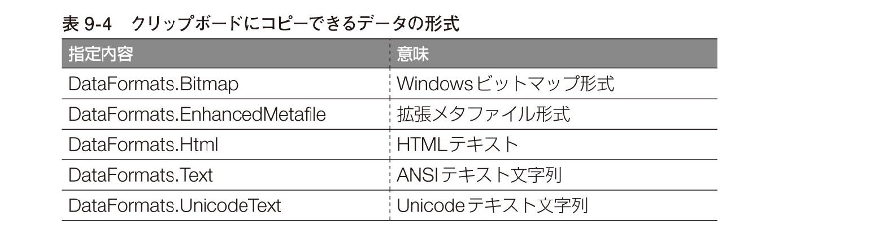
テキストデータの場合は、ClipboardクラスのSetTextメソッドも使えます。テキストはUnicodeテキスト文字列としてクリップボードにコピーされます。
クリップボードのデータを取り出したいときには、GetDataメソッドを使います。これも共有メソッドなのでオブジェクトを作成せずにそのまま使えます。GetDataメソッドにデータの形式を指定して呼び出すと、クリップボードから取り出されたデータが返されます。
また、テキストデータの場合は、GetTextメソッドも使えます。テキストはUnicodeテキスト文字列としてクリップボードから取り出されます。
■プログラムを終了させる
最後に［終了（X）］ボタンと［ファイル（F）］−［終了（X）］のClickイベントハンドラーを書きます。いずれを選択してもプログラムを終了させるので、同じイベントハンドラーを使います。btnExitコントロールのClickイベントハンドラーとしてExitProcプロシージャを書いておき、mnuFXのイベントハンドラーとしてもExitProcプロシージャを選択すればいいでしょう。Private Subステートメントの最後にカンマで区切ってmnuFX.Clickという文字列を自分で入力しても構いません。コードは以下のとおりです（LIST9-21）。
9-21 プログラムを終了させるためのコード
Private Sub ExitProc(sender As Object, e As EventArgs)⇒Handles btnExit.Click, mnuFX.Click Application.Exit() End Sub■プログラムを実行する
コードがすべて入力できたら［開始］ボタン（）をクリックして、プログラムを実行します。プログラムが実行されると、格言がランダムに表示されます。ステータスバーに格言の番号が表示されていることにも注目してください（画面9-6）。
表示された格言はクリップボードにコピーして、テキストエディターやワープロソフトの文書に貼り付けることもできます。さらに、さまざまな機能を追加すれば、より便利で役に立つプログラムが作成できるはずです。演習問題に取り組み、プログラムの拡張にぜひチャレンジしてみてください。
カンマ区切りのファイルや固定長フィールドのファイルを取り扱う
ShowCSV, ShowFixed
この章のプログラムでは、1行のデータをそのまま読み出しましたが、ファイルには、区切り文字によって1行がいくつかのフィールド（項目）に区切られているものや、フィールドの桁数が決まっているものなどもあります。それらについては、Microsoft.VisualBasic.FileIO.TextFieldParserクラスのオブジェクトを利用して取り扱うことができます。
フィールドの区切り文字はDelimitersプロパティまたはSetDelimtersメソッドに文字列の配列を指定することによって設定します。1行のすべてのフィールドを読み出すにはReadFieldsメソッドが使えます。ReadFieldsメソッドは、各フィールドの内容を文字列の配列として返します。以下のコードはフィールドが「:」（コロン）または「,」（カンマ）で区切られたファイルから1行ずつ各フィールドを読み出し、出力ウィンドウに表示する例です。
Imports Microsoft.VisualBasic.FileIOPublic Class Form1 Private Sub ShowCSVFile(sender As Object, e As EventArgs)⇒Handles Button1.Click Dim aRow As String() ●───1行に含まれる各フィールドのデータ。文字列の配列 Dim tfp As TextFieldParser = New TextFieldParser ( "sample.txt", System.Text.Encoding.GetEncoding("shift_⇒jis")) ●───TextFieldParserクラスのオブジェクトを作成する tfp.Delimiters = New String() { ":", ","} ●───フィールドの区切りを「:」（コロン）または「,」（カンマ）とする
Do While Not tfp.EndOfData ●───データがなくなるまで aRow = tfp.ReadFields() ●───フィールドを読み出す。文字列の配列として読み出されるので、その参照をaRowに代入 For Each aField As String In aRow ●───aRowの各フィールドについて Debug.WriteLine(aField) ●─── フィールドを表示する Next Loop End SubEnd Class以下に示すのはファイルの内容がどのように読み出され、表示されるかを図にしたものです。
一方、固定長のフィールドの場合は、TextFieldTypeプロパティにFieldType.FixedWidthを指定し、FieldWidthsプロパティに各フィールドの長さを整数の配列として指定します。以下のコードは1行が5文字,4文字,4文字,3文字の各フィールドから成り立っているファイルから1行ずつ各フィールドを読み出し、出力ウィンドウに表示する例です。地色の濃い箇所が、前のコードと異なるコードです。
Imports Microsoft.VisualBasic.FileIOPublic Class Form1 Private Sub ShowFixedFile(sender As Object, e As EventArgs)⇒Handles Button1.Click Dim aRow As String() Dim tfp As TextFieldParser = New TextFieldParser ( "sample.txt", System.Text.Encoding.GetEncoding("shift_⇒jis")) tfp.TextFieldType = FieldType.FixedWidth ●───固定長フィールドであることを指定する tfp.FieldWidths = New Integer() {5, 4, 4, 3} ●───フィールドの長さを整数の配列として指定する Do While Not tfp.EndOfData
aRow = tfp.ReadFields() For Each aField As String In aRow Debug.WriteLine(aField) Next Loop End SubEnd Classこちらも、ファイルの内容がどのように読み出され、表示されるかを図にしておきます。

Chapter9のまとめ
●ファイルのデータを1行読み出すにはStreamReaderクラスのReadLineメソッドが使えます
● ファイルにデータを1行書き込むにはStreamWriterクラスのWriteLineメソッドが使えます
● ファイルにデータを書き込むときには、追加書き込みと新規書き込みの違いに注意する必要があります
● Try ... Catch ... Finally ... End Tryステートメントを利用すると構造化例外処理ができます
● 構造化例外処理では、例外の種類によってきめ細かく対処法を変えることができます
● Clipboardクラスの共有メソッドを使うと、クリップボードとのデータのやりとりができます
練習問題
Fortune2, ShowFixed2
［A］この章で見たFortuneプログラムは、プログラムを実行したときに（フォームが表示される直前に）格言が表示されるものでした。フォーム上にButtonコントロールを配置し、クリックすれば、別の格言がランダムに表示されるようにしてみましょう。プロジェクト名はFortune2とします。
［B］この章の最後のコラムにあるコードには例外処理が書かれていません。固定長フィールドの行を読み出すコードに構造化例外処理を適用したコードを書いてみてください。対処する例外は以下の2つとします。
System.IO.FileNotFoundException ●───ファイルが見つからない Microsoft.VisualBasic.FileIO.MalformedLineException ●───フィールドの形式が正しくない（フィールドの桁数が1行の幅よりも短い場合など）
例外が発生した場合は、右側の説明に書いた文章をメッセージとして表示し、プログラムを終了するものとします。プログラムができたら、データファイルの名前を変えたり、フィールドの幅を変えたりして例外を発生させ、動作を確認してみてください。プロジェクト名はShowFixed2とします。なお、データファイルの正しい名前はsample.txtとし、実行用プログラムと同じフォルダーに作成しておいてください。
Chapter10
データベースを取り扱う〜アイディアプロセッサ
Visual Basicでは、コントロールを配置してプロパティを設定するだけでSQL ServerやMicrosoft Accessなどのデータベースが簡単に取り扱えます。さらに、コードを記述することにより、きめ細かな処理のできるプログラムが作成できます。この章では、思いついたアイディアをキーワードとともに記録しておいたり、キーワードを使ってアイディアを検索したりできる簡単なデータベースアプリケーションを作成してみます。
10.1 いちばん簡単なデータベースアプリケーション
データの取り扱い方を知る／データベースをプロジェクトに追加する／データベースを利用するためのコントロールを配置する／プログラムを実行する／テキストボックスにテーブルの内容を表示する／自動的に追加されたコードを見る／検索機能を追加する
10.2 コードを使ってデータベースを操作する
ここで使うコントロール／フォームをデザインする／ダイアログボックスをデザインする／レコードを検索するためのコードを書く／レコードを追加するためのコードを書く／レコードを修正するためのコードを書く／レコードを削除するためのコードを書く／プログラムを終了させる／プログラムを実行する
これから学ぶこと
● データベースのレコードをDataGridViewコントロールやTextBoxコントロールに表示する方法を学びます
● データベースを操作するためのさまざまなコントロールの働きと使い方を学びます
● データベースのレコードを検索、追加、修正、削除するためのコードの書き方を学びます
● 自分でデザインしたダイアログボックスを表示する方法を学びます
この章ではアイディアが保存されたデータベースをキーワードによって検索するプログラムを作成します。データベースの検索だけでなく、新しいアイディアをキーワードとともに保存したり、すでに保存されているデータを修正したり、削除したりする方法も学び、データベースのひととおりの取り扱い方を身に付けます。
10.1 いちばん簡単なデータベースアプリケーション
データベースを利用すると、必要な項目だけを取り出して表示したり、キーワードを含む行を検索したり、並べ替えたり、集計したり、とさまざまな方法でデータが活用できます。ここでは、手始めにデータベースの内容を表示するプログラムから見ていきます。驚くべきことに、コードを1行も書かなくても、データの表示、修正、追加、削除ができてしまいます。
■データの取り扱い方を知る
データベースを利用するプログラムの基本を理解しておくために、データベースに含まれるテーブルの内容を表示するだけのプログラムを見ておきます。最初のプログラムでは、コードを書く必要はまったくありません。
データベースとしては、思いついたアイディアにキーワードを付けて保存したようなものを使うことにします。内容は以下のような簡単なものとし、すでにMicrosoft Accessを使って作られているものとします。データベースでデータを取り扱うときに使う「テーブル」「レコード」「フィールド」などの用語の意味を確認しておいてください（図10-1）。
1つのデータベースの中には複数のテーブル（表）が作られていることもありますが、ここでは、テーブルは1つだけとします。レコードは「行」にあたるもので、フィールドは「項目」にあたるものです。各フィールドはデータ型が決められていることにも注意しましょう。
では、ShowDBという名前の新しいプロジェクトを作成し、ideadb.mdbというデータベースのideatableというテーブルを利用できるようにしましょう。
■データベースをプロジェクトに追加する
ShowDB
いつもの手順では、プロジェクトを作成した後、フォームのデザインに移っていました。しかし、プロジェクトにデータベースを追加すると、なんと、フォームのデザインも自動的にできてしまいます。したがって、データベースの追加から始めましょう。フォームのデザインを細かく調整するのはその後にします。
データベースの追加はきわめて簡単です。エクスプローラーに表示されているデータベースファイルのアイコンをドラッグし、ソリューションエクスプローラーのプロジェクト名にドロップするだけです（画面10-1）※1。
ただし、これだけでは、データベースのファイルを取り込んだだけで、プログラムから利用できる状態にはなっていません。そこで、データベースに接続する操作を行います。
※1 次の［データソース］ウィンドウからの操作だけでデータベースのファイルを取り込むこともできます。しかしながら、あらかじめファイルを取り込んでおいた方が、手順が少し簡単になるので、ここでは画面10-1の操作を行っておきます。
まず、メニューから［表示（V）］－［その他のウィンドウ（E）］－［データソース（D）］を選択して、［データソース］ウィンドウを表示しておきましょう。そのウィンドウで［新しいデータソースの追加］をクリックします（画面10-2）。
❶ ［新しいデータソースの追加...］をクリックする
① ［データベース構成］ウィザードの［データソースの種類の選択］画面が表示される
❷ ［アプリケーションのデータの取得元（W）］の一覧に表示されている［データベース］をクリックする
❸ ［次へ（N）>］をクリックする
④ ［データベースモデルの選択］画面が表示される
❺ ［データセット］をクリックする
❻ ［次へ（N）>］をクリックする
ここでは、データベースの種類とデータベースモデルを選択しました。「データソース」というのはデータの出どころといった意味です。一般的なデータベースだけでなく、各種のサービスやオブジェクト、SharePointサイトのデータが利用できますが、このプログラムでは、Microsoft Accessのデータベースを利用するので［データベース］を選択しました。
データベースモデルとは、データベースの形式とでも考えておいてください。ここで選択した［データセット］とは、行と列からなる表と、表同士の関連を含んだ形式です。
先に進みましょう。
① ［データ接続の選択］画面が表示される
❷ ［次へ（N）>］をクリックする
③ ［接続文字列をアプリケーション構成ファイルに保存する］画面が表示される
❹ ［次へ（N）>］をクリックする
［データ接続の選択］画面ではデータソースの接続文字列を指定します。これはデータベースの種類やファイル名、接続時のオプションなどを文字列として表したものです。ここではすでに取り込んだデータベース名が表示されているので、そのまま［次へ（N）>］をクリックして先に進みます。なお、実際にどのような文字列になるのかを見たい場合は［アプリケーションの保存する接続文字列（S）］の前にある［＋］をクリックすれば、接続文字列が表示されます。
次の画面では、接続文字列をアプリケーション構成ファイル（App.configファイル）に保存するかどうかを指定します。接続文字列を保存しておけば、修正が必要になった場合にも、保存した内容を編集するだけで対応できるようになります。ここでも、そのまま［次へ（N）>］をクリックして先に進みましょう。続いて、データベース内のどの情報を利用するかを指定します。
❶ ［▷］をクリックする（クリックすると表示が［ ］に変わる）
］に変わる）
② 下位のテーブルやフィールドが表示される
❸ テーブルのチェックマークをクリックしてオンにする
④ テーブルとすべてのフィールドが選択される
❺ ［完了（F）］ボタンをクリックする
このプログラムでは、ideatableのすべてのフィールドを利用します。ideatableの前にあるチェックボックスをクリックしてチェックマークを付けましょう。テーブルにチェックマークを付けると、すべてのフィールドに自動的にチェックマークが付けられます。［完了（F）］ボタンをクリックすれば、設定の終了です。
また、データベースのファイル名の末尾にDataSetという文字列を付加した名前が［データセット名（D）］に設定されていることにも注意しましょう。データセットとは、データベースの内容を読み込んでおくためのオブジェクトです。データベースの内容を操作するときには、データベースを直接操作するのではなく、データセットを操作します。データベースの更新が必要になった時点で、データセットの内容をデータベースに書き出すというわけです（図10-2）。
■データベースを利用するためのコントロールを配置する
次に、データセットをもとにコントロールを自動的に配置します。Visual Studioの画面の左に表示されている［データソース］タブをクリックし、データセットのテーブル名を選択します。ここではideadbDataSetの下位にあるideatableを選択し、以下のようにフォーム上にドラッグして配置してください（画面10-6）。
❶ テーブル名の右の［∨］をクリックする
❷ ［DataGridView］をクリックする
❸ テーブル名の前に表示されているアイコンをドラッグする
DataGridViewコントロールがフォーム上に配置されるとともに、ツールバーが表示されます。このツールバーはデータベースを操作するために使われるBindingNavigatorコントロールです（画面10-7）。
① BindingNavigatorコントロールが自動的に配置される
② DataGridViewコントロールが配置される。列は自動的に追加され、項目名も設定されている
③ データベースを利用するために使われる各種のコントロールが配置される。コントロールが重なって表示されている場合は何も表示されていない部分を右クリックして［等間隔に整列（L）］を選択する
画面の下を見ると、ほかにもデータセット、BindingSourceコントロール、TableAdapterコントロール、TableAdapterManagerコントロールが表示されていることが分かります。それぞれの働きを整理すると図10-3のようになります。このプログラムでは、これらのコントロールを意識する必要はほとんどありませんが、全体像と各コントロールの関係について、ざっと確認しておきましょう。
■BindingNavigator：データベースを操作するために使うツールバー
■BindingSource：フォーム上のコントロールとデータセットを結びつけるために使われる
■TableAdapter：データセットとデータベースとの間でデータをやりとりするために使われる
■TableAdapterManager：データベースの更新順序を変えるなど、データの保存をきめ細かく、簡単に実行するために使われる
以上でデータベースの追加とコントロールの配置は終了です。あとは、フォームの境界線のスタイルを変えたり、コントロールのサイズや位置を変えるなど、デザインを調整するだけでプログラムは完成です。データベースの内容が自動的にDataGridViewコントロールに表示され、データの変更や追加などもできるようになります。表10-1にプロパティをまとめておきます。フォームのプロパティ以外は変更する必要はありませんが、それぞれのコントロールにどのようなプロパティが設定されているか、ひととおり見ておいてください。確認ができたら、さっそく［開始］ボタン（）をクリックして、プログラムを実行してみましょう。
■プログラムを実行する
プログラムを実行すると、データベースのテーブルの内容がDataGridViewコントロールに表示されます。BindingNavigatorのボタンをクリックすれば、レコードの移動、新規レコードの追加、削除、変更内容の保存ができます（画面10-8）。
以上で、はじめてのデータベースアプリケーションが完成しました。続いて、重要な関連知識をまとめておきましょう。
■テキストボックスにテーブルの内容を表示する
ShowDBCard
はじめてのデータベースプログラムでは、テーブルの内容をDataGridViewコントロールに一覧表示しました。しかし、一覧形式ではなく1画面につき1レコードの、いわゆるカード型データベースのような形式で表示したいこともあるでしょう。そのような場合には、［データソース］ウィンドウで、データの表示方法として［詳細］を選びます。
ShowDBプロジェクトは後でまた使うので、ここではShowDBプロジェクトをコピーしたもので試してみましょう。もちろん、おさらいをかねて、新しいプロジェクトを作り、前項の操作をもう一度やってみても構いません。
コピーの手順を箇条書きにしておきます。
● エクスプローラーを起動する
● ［ドキュメント］-［Visual Studio 2015］-［Projects］の順にフォルダーを開き、その下の［ShowDB］フォルダーを選択する
● +キーを押してコピーを実行する
● +キーを押して貼り付けを実行する
コピーされたフォルダーは［ShowDB - コピー］という名前になっています。キーを押してフォルダー名を「ShowDBCard」に変えておきましょう。
あとは、［ShowDBCard］フォルダーを開き、［ShowDB.sln］ファイルをダブルクリックすれば、Visual Studioが起動し、プロジェクトが読み込まれます。拡張子を表示しない設定になっている場合は、ファイル名が［ShowDB］としか表示されていませんが、Visual Studioのアイコンが表示されているので、それと分かるはずです。
Visual Studioが起動したら、［ソリューションエクスプローラー］の［Form1.vb］をダブルリックして、フォームデザイナーを表示しておきましょう。
では、始めましょう。まずは、すでに配置されているDataGridViewコントロールを削除してください。次に、［データソース］ウィンドウで、データを表示する方法として［詳細］を選び、テーブルのアイコンをフォーム上にドラッグします（画面10-9）。
❶ テーブル名の右の［∨］をクリックする
❷ ［詳細］をクリックする
❸ テーブル名の前に表示されているアイコンをドラッグする
LabelコントロールとTextBoxコントロールがフォーム上に配置されます。日付に関しては、データベースでのデータ型の指定が日付／時刻型なので、自動的にDateTimePickerコントロールが配置されることに注目してください（画面10-10）。
では、プログラムを実行してみましょう。データベースの1レコードが１画面に表示されるようになります。ツールバーのボタンを使えば、次のレコードや前のレコードも表示できます。また、データを修正して［保存］ボタンをクリックすれば、データベースの内容が書き換えられます。いろいろな操作を試してみてください。

利用されるデータベースについての注意
実際にプログラムを実行してみると分かるのですが、プロジェクトに追加されたデータベースはこのままでは更新されないように見えます。例えば、データを追加しても、次にプログラムを実行すると元の内容に戻っていることがあります。プログラムが正しく動いていないのか、と心配になる人も多いのですが、これはエラーではありません。
プログラムをビルド（実行用のプログラムを作成）すると、プロジェクトに追加されたデータベースがプロジェクトのbin¥Debugフォルダーにコピーされ、コピー先のデータベースが更新されます。プログラムを修正した後、実行すると、実行用のプログラムが作成し直されるとともに、プロジェクトに追加されたデータベースがコピーされるので、データベースが更新されていないように見えるというわけです。プログラムを修正せずにもう一度実行した場合には、実行用のプログラムが作成し直されないので、データベースも前回の状態のままになっています。また、Visual Studioの画面からではなく、Debugフォルダーの下にある実行用プログラム（exeファイル）を直接実行したときにも、オリジナルのデータベースがコピーされないので、データベースが正しく更新されていることが確認できます（図10-4）。
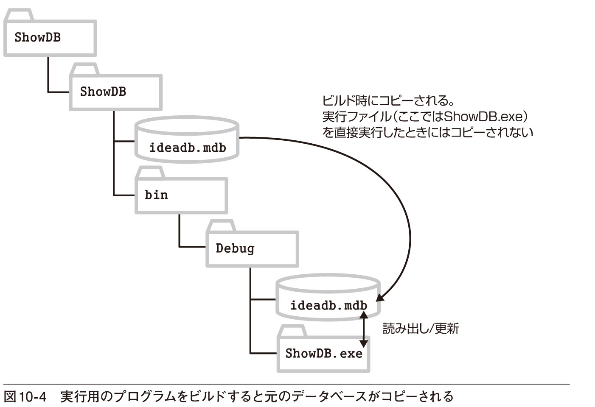
■自動的に追加されたコードを見る
現在のところ、まだコードを書いてはいませんが、フォームをデザインした時点で以下のようなコードが自動的に追加されています。プログラムの動きを確認するために、ひととおり見ておきましょう。まず、フォームのLoadイベントハンドラーです（LIST10-1）。
10-1 自動的に追加されたフォームのLoadイベントハンドラー
Private Sub Form1_Load(sender As Object, e As EventArgs)⇒Handles MyBase.Load 'TODO: このコード行はデータを 'IdeadbDataSet.ideatable' テーブルに⇒読み込みます。必要に応じて移動、または削除をしてください。 Me.IdeatableTableAdapter.Fill(Me.IdeadbDataSet.ideatable) End Subフォームを読み込んだときには、TableAdapterコントロールのFillメソッドを利用して、データセットのテーブルにデータを読み出します。データセットにデータが入れられると、BindingSourceコントロールの働きにより、DataGridViewコントロールにデータが自動的に表示されます（図10-5）。
自動的に追加されたイベントハンドラーは、もう1つあります。これは、BindingNavigatorコントロールのツールバーにある［データの保存］ボタンをクリックしたときに実行されます（LIST10-2）。
10-2 自動的に追加された［データの保存］ボタンのClickイベントハンドラー
Private Sub IdeatableBindingNavigatorSaveItem_Click(sender As⇒Object, e As EventArgs) Handles IdeatableBindingNavigatorSaveItem.⇒Click Me.Validate() ●─── 入力終了時のデータチェックなどを実行する Me.IdeatableBindingSource.EndEdit() ●─── コントロールのデータをデータセットに書き込む Me.TableAdapterManager.UpdateAll(Me.IdeadbDataSet) ●─── End Sub Validateメソッドは、正しいデータが入力されているかを検証するために使われるValidatingイベントとValidatedイベントを発生させ、入力フォーカスを失ったコントロールでのデータチェックができるようにするメソッドです。それぞれのコントロールでValidatingイベントハンドラーとValidatedイベントハンドラーが実行されるので、そこにデータチェックのためのコードを書いておけば、保存される前に間違ったデータを排除できるというわけです。ただし、このプログラムでは特に何もしていません。
次のBindingSourceコントロールのEndEditメソッドはコントロール上での変更をデータセットに書き込むためのメソッドです。最後のUpdateAllメソッドはデータセットへの変更をデータベースに書き込むためのメソッドです。これらをまとめると図10-6のような動作になります。
■検索機能を追加する
ShowDB2
以上で、コードをまったく書かなくても、データベースのほとんどの操作ができることが分かったと思います。しかし、それだけではできないことがあるのも確かです。この章の最終的な目標はキーワードを使ってデータを検索できることでした。しかし、ここまでの機能だけでは、キーワード検索はできません。そこで、少しだけコードを書いてキーワード検索（レコードの抽出）の機能を追加し、プログラムを充実させましょう。最初のShowDBプロジェクトに戻って続きを進めます。
まず、キーワードを入力するためのTextBoxコントロールと、検索状態を解除するためのButtonコントロールをBindingNavigatorコントロールのツールバーに追加しておきます（画面10-12）。
❶ ［▼］をクリックする
❷ ［TextBox］をクリックする
③ ツールバーにTextBoxコントロールが追加される 同様にしてButtonも追加する
TextBoxコントロールの名前はtxtSearchとしておき、Buttonコントロールの名前はbtnResetとしておきます。Buttonコントロールに好きなアイコンを表示したい場合は、プロパティウィンドウのImageの欄をクリックし、右端の［...］をクリックします。画面10-13のようなダイアログボックスが表示されるので、［インポート］をクリックし、画像ファイルの名前を指定します。
❶ ［インポート（M）...］ボタンをクリックする
❷ ファイルを選択するためのダイアログボックスが表示されるので、画像ファイルを選択する
イベントハンドラーは2つです。TextBoxコントロールではキーを押したときに検索を実行するようにします。したがって、KeyDownイベントハンドラーで、キーが押されたかどうかを調べ、検索を実行します（LIST10-3）。
10-3 入力されたキーワードを含む行を抽出する
Private Sub Search(sender As Object, e As KeyEventArgs)Handles txtSearch.KeyDown If e.KeyCode = Keys.Enter Then If txtSearch.Text = "" Then Exit Sub Me.IdeatableBindingSource.Filter = 検索フィルターを設定する "キーワード LIKE '" & txtSearch.Text & "'" End If End Subコードを見ると、BindingSourceコントロールのFilterプロパティに、抽出のために使う式を代入するだけだというのが分かります。Filterプロパティには「フィールド名 演算子 値」のような形式で条件（フィルター）を指定します。ここでは、LIKE演算子を使って「キーワード」というフィールドが、txtSearchコントロールのTextプロパティに指定したパターンに一致している場合、という条件を指定しています。
よく使う演算子には表10-2のようなものがあります。
LIKE演算子に指定するパターンには単なる文字列のほか、ワイルドカードを使えます。ワイルドカードとは、一致する文字列のパターンを表す特殊な文字で、任意の文字列という意味の「*」や「%」が使えます。ただし、ワイルドカードを文字列の途中に含めることはできません。例えば「書*」のように書くことはできますが、「書*籍」のような書き方はできません（EvaluateExceptionという例外が発生します）。
Filterプロパティに代入される値の指定が複雑な形になっているので、念のため、図10-7で確認しておきましょう。
LIST10-3のコードが実行されると、条件にあった行だけが抽出され、自動的にDataGridViewコントロールの表示が更新されます（図10-8）。
もう1つのイベントハンドラーは、btnResetのClickイベントハンドラーです。ここでは、RemoveFilterメソッドを使ってフィルターの設定を解除します。これは簡単ですね（LIST10-4)。
10-4 レコードを抽出するためのフィルターを解除する
Private Sub ResetSearch(sender As Object, e As EventArgs)⇒Handles btnReset.Click Me.IdeatableBindingSource.RemoveFilter() ●─── 検索フィルターを解除する txtSearch.Text = "" End Subフィルターが解除されると、またすべてのレコードが表示されるようになります。ただし、RemoveFilterメソッドだけだと、IDの値が-1の空白の行が表示されることがあります。そのような場合には、RemoveFilterメソッドを使う代わりに、
Me.IdeatableBindingSource.Filter = ""のようにFilterプロパティに空文字列を設定するとよいでしょう。コードが入力できたら、プログラムを実行し、検索の操作を試してみてください。
以上でデータベースの基本的な利用ができるようになりました。次の節では、これまでのプログラムと同等の機能を持つプログラムを、コードを使って書いてみます。それにより、自由にデータベースを取り扱える知識を身に付けましょう。
10.2 コードを使ってデータベースを操作する
ここではプログラムのユーザーインターフェイスを自由に作成するとともに、コードを記述してデータセットとのやりとりをきめ細かく処理します。これまでは、BindingNavigatorコントロールやBindingSourceコントロールを使って、ユーザーインターフェイスとデータセットのやりとりをほぼ自動的に処理していましたが、その処理をコードで記述しようというわけです。
■ここで使うコントロール
IdeaMaker
このプログラムでは、データセットを表すDataSetコントロールと、データセットとデータベースのやりとりをするTableAdapterコントロールだけを使います。データセットからレコードを読み出したり、データセットのレコードを修正したりする処理は、自分で書いたコードによって実行されるようにします。したがって、BindingNavigatorコントロールやBindingSourceコントロールは使いません。また、データベースの更新順序の変更なども不要なので、TableAdapterManagerコントロールは使いません（図10-9）。
処理の流れを見る前に、フォームのデザインを片付けておきましょう。IdeaMakerという名前のWindowsフォームアプリケーションプロジェクトを作成し、ideadb.mdbファイルをソリューションエクスプローラーのプロジェクト名の位置にドラッグしてデータベースを追加し、接続の設定をしておいてください。ここまでの手順は前節と同じです。
■フォームをデザインする
前節では、データセットのテーブルをもとにフォームをデザインしました。このプログラムではフォームのデザインが自由に作成できるようにします。完成時のイメージはイラスト10-2のような感じです。
フォームを自由にデザインするといっても、一からデザインしていくよりは、テーブルの内容をもとに自動的にコントロールを配置し、そこから修正を加えていくほうが簡単です。そこで、前節と同じ方法で［データソース］ウィンドウを表示し、［ideatable］をドラッグしてDataGridViewコントロールをフォーム上に配置してください。以下の5つのコントロールが画面の下に表示されます。
■DateSetコントロール（IdeadbDataSet）
■BindingSourceコントロール（IdeatableBindingSource）
■TableAdapterコントロール（IdeatableTableAdapter）
■TableAdapterManagerコントロール（TableAdapterManager）
■BindingNavigatorコントロール（IdeatableBindingNavigator）
このうち、BindingSourceコントロール、TableAdapterManagerコントロール、BindingNavigatorコントロールは使わないので、削除しておきます。画面の下に表示されているそれぞれのコントロールをクリックし、キーを押して削除しておいてください。
ここで1つ重要な注意点です。BindingSourceコントロールを削除したので、DataGridViewコントロールとデータセットを結びつけるものは何もなくなりました。したがって、このままではDataGridViewコントロールには何も表示されません。それまで表示されていた見出しも表示されなくなったはずです。見出しの表示もデータの表示もプロパティやコードを指定して、すべて自前で処理する必要があります。
そこで、DataGridViewコントロールの右上に表示されている［▶］ボタンをクリックし、［列の追加...］というリンクをクリックしてください。画面10-14のダイアログボックスが表示され、列が追加できるようになります。［追加（A）］ボタンを4回クリックし、列を4つ追加しておきましょう。
続いて、もう一度［▶］ボタンをクリックし、［列の編集...］というリンクをクリックします。各列のプロパティが設定できるようになるので、表10-3に従って設定を変更しておいてください。
最後に、データベースを操作するためのボタンなどを配置して、メインフォームのデザインを仕上げましょう（画面10-15・表10-4）。
DataGridView、DataSet、TableAdapterの各コントロールについては、設定値を変更する必要はありませんが、参考のために掲載しておきます。
なお、BindingNavigatorコントロールを削除したので、コードウィンドウに入力されていた以下のコードは削除しておいてください。
Private Sub IdeatableBindingNavigatorSaveItem_Click(⇒sender As Object, e As EventArgs) Handles⇒IdeatableBindingNavigatorSaveItem.Click Me.Validate() Me.IdeatableBindingSource.EndEdit() Me.TableAdapterManager.UpdateAll(Me.IdeadbDataSet) End Subただし、フォームのLoadイベントハンドラーは削除しないでください。フォームが読み込まれたときにデータベースの内容をデータセットに読み込むために必要です。
■ダイアログボックスをデザインする
続いて、新規レコードの追加や修正に使うダイアログボックスのデザインです。メニューから［プロジェクト（P）］−［Windowsフォームの追加（F）...］を選択すると、画面10-16のような画面が表示されるので、ダイアログボックスとして使う新しいフォームが追加できます。［ダイアログ］は一覧の最後の方にあるので、スクロールバーを下の方にドラッグすれば表示できます。

❶ ［テンプレート］の一覧から［ダイアログ］を選択する
❷ ファイル名を指定する。ここではDialog1.vbのままとする
❸ ［追加（A）］ボタンをクリックする
フォームが表示されたら、画面10-17のようにLabelコントロールやTextBoxコントロールを追加し、表10-5のようにプロパティを設定しておきましょう。TextBoxコントロールのMultiLineプロパティをTrueにすると、コントロールの高さが変更できるようになります。
［OK］ボタンと［キャンセル］ボタンは、あらかじめ配置されているので、表には記していません。
■レコードを検索するためのコードを書く
ここから、さまざまな機能を実行するためのコードを書いていきます。まず、検索機能から始めましょう。検索は［キーワード（K）:］ボックスでキーを押したときに実行します。したがって、txtKeywordコントロールのKeyDownイベントハンドラーにコードを書き、キーが押されたときだけ実行されるようにします。実行すべき内容は以下の2つです。
■ ステップ1 キーワードに一致するレコードを抽出する
抽出したレコード（複数）を参照する変数を用意する
レコードを抽出し、変数で参照できるようにする
■ ステップ2 抽出されたレコードを表示する
DataGridViewコントロールの内容をクリアする
DataGridViewコントロールの行を追加し、抽出されたレコードを1行ずつ入れる
Form1フォームを表示して、txtKeywordコントロールのKeyDownイベントハンドラーを追加しましょう。イベントハンドラー名はSearchDataとし、LIST10-5のようなコードを入力します。
10-5 データセットのテーブルから検索されたレコードを表示する
Private Sub SearchData(sender As Object, e As KeyEventArgs)⇒Handles txtKeyword.KeyDown If e.KeyCode <> Keys.Enter Then Exit Sub ' Enterキーのときだけ実行 If txtKeyword.Text = "" Then Exit Sub Dim SelRows As DataRow() ●───ステップ1 キーワードに一致するレコードを抽出する→P.384
SelRows = IdeadbDataSet.ideatable.Select( "キーワード LIKE '" & txtKeyword.Text & "'") IdeatableDataGridView.Rows.Clear() ●───ステップ2 抽出されたレコードを表示する→P.385
For Each aRow As DataRow In SelRows IdeatableDataGridView.Rows.Add( CType(aRow, ideadbDataSet.ideatableRow).ID, CType(aRow, ideadbDataSet.ideatableRow).日付.⇒ToString("yyyy/MM/dd"), CType(aRow, ideadbDataSet.ideatableRow).キーワード, CType(aRow, ideadbDataSet.ideatableRow).アイディア) Next End Subはじめて見るメソッドや関数がたくさんあるので、少しずつコードを見ていきしょう。まずは、キーワードに一致するレコードを抽出する処理からです。
■ステップ1 キーワードに一致するレコードを抽出する
データセット（IdeadbDataSet）にはすでにテーブルの内容が読み込まれているので、Selectメソッドを使ってキーワードに一致するレコードを抽出します。
そのためには抽出されたレコードを参照するための変数が必要になります。そこでDataRowクラスのオブジェクトの配列を参照するための変数SelRowsを宣言します。DataRowクラスのオブジェクトは、データベースのレコードを格納するために使われます。
Dim SelRows As DataRow()これでSelRowsという変数が利用できるようになりました。抽出されるレコードは1つとは限らないので（複数のレコードが抽出されるはずなので）、SelRowsが参照するのは1つのDataRowオブジェクトではなく、DataRowオブジェクトの配列であることに注意してください。イメージとしては図10-10のような感じです。

データセットのテーブルのSelectメソッドを利用すれば、条件に合ったレコードを抽出できます。その参照をSelRowsに代入しておきます。Selectメソッドの引数には、BindingSourceコントロールのFilterプロパティで指定したのと同じ形式で条件を書きます。
SelRows = IdeadbDataSet.ideatable.Select("キーワード LIKE '"⇒& txtKeyword.Text & "'")例えば、キーワードとして「書籍」という文字列が入力されていれば、図10-11のようなレコードをSelRowsで参照できるようになります。
■ステップ2 抽出されたレコードを表示する
続いて、DataGridViewコントロールに行を追加し、SelRowsで参照されるレコードを順に表示します。For Each ... Next ステートメントを使ってSelRowsのレコードをすべて処理するだけです。
DataGridViewコントロールに行を追加するにはRows.Addメソッドを使います。Addメソッドでは単に行を追加するだけでなく、列の内容も入れておくことができます。列の内容は左から順にAddメソッドの引数に指定します。この例ではレコードの各フィールドを順に列の内容として指定すればいいでしょう。コードは複雑に見えますが、処理の流れは簡単な繰り返し処理です。まず、骨格だけを示しておきましょう（LIST10-6）。
10-6 DataGridViewコントロールに行を追加するコードの骨格
For Each aRow As DataRow In SelRows ideatableDataGridView.Rows.Add(ID, 日付, キーワード, アイディア)NextIDや日付はSelRowsの各行（aRow）に含まれるフィールドなので、aRow.IDやaRow.日付と書きたいところなのですが、aRowはDataRow型なので、IDプロパティや日付プロパティがありません。一方、ideadbDataSet.ideatableRow型であれば、IDプロパティや日付プロパティが使えます。そこで、CType関数を使ってaRowをideadbDataSet.ideatableRow型に変換し、そのIDプロパティを指定します。
したがって、IDというフィールドを指定するために
aRow.IDではなく、
CType(aRow, ideadbDataSet.ideatableRow).IDのように書くわけです。
CType関数には、変数と変換後のデータ型を指定します。もちろん、どんなデータ型でも自由に変換できるわけではなく、互換性のあるデータ型だけにしか変換できません。DataRow型は一般的なデータセットのレコードを表し、ideadbDataSet.ideatableRow型は、ideadbDataSetというデータセットのideatableRowという特定の型のレコードを表します。いずれもテーブルのレコードを表しているので、変換ができるというわけです。
日付やキーワード、アイディアについても同様にデータ型を変換し、Addメソッドの引数に指定すればコードの完成です。
なお、For Each ... Nextステートメントで変数aRowのデータ型をideadbDataSet.ideatableRow型として指定すれば、このような変換は必要ありません。その場合は次のように簡単に書くことができます（LIST10-7）。
10-7 変数aRowのデータ型をideadbDataSet.ideatableRow型とする
For Each aRow As ideadbDataSet.ideatableRow In SelRows IdeatableDataGridView.Rows.Add( aRow.ID, aRow.日付.ToString("yyyy/MM/dd"), aRow.キーワード, aRow.アイディア)Next■レコードを追加するためのコードを書く
レコードを追加するには、ダイアログボックスを表示する必要があります。そして、そこで入力されたキーワードとアイディアを、レコードとしてデータベースに追加します。IDは自動的に設定するものとし、日付にはそのときの日付を代入しておきます。この処理も2つのステップに分けて見ていきましょう。
■ ステップ1 ダイアログボックスに入力された内容をもとにレコードを作成する
レコードを作成する
日付フィールドに日付を入れる
キーワードフィールドに、ダイアログボックスに入力されたキーワードを入れる
アイディアフィールドに、ダイアログボックスに入力されたアイディアを入れる
■ ステップ2 データベースにレコードを追加する
データセットのテーブルにレコードを追加する
データベースを更新する
コードは［新規（N）］ボタンのClickイベントハンドラーに書きます。イベントハンドラー名はAddDataとします。全体像を見ておきましょう（LIST10-8）。
10-8 新しいレコードをデータベースに追加する
Private Sub AddData(sender As Object, e As EventArgs)⇒Handles btnNew.Click dlgRecord.Text = "レコードの追加" dlgRecord.txtKeyword.Text = "" dlgRecord.txtIdea.Text = "" If dlgRecord.ShowDialog() <> DialogResult.OK Then⇒Exit Sub ' レコードを新規作成する ●───ステップ1 ダイアログボックスに入力された内容をもとにレコードを作成する→P.387
Dim aRow As DataRow aRow = IdeadbDataSet.ideatable.NewRow() ' フィールドに内容を入れる aRow.Item("日付") = Today aRow.Item("キーワード") = dlgRecord.txtKeyword.Text aRow.Item("アイディア") = dlgRecord.txtIdea.Text IdeadbDataSet.ideatable.Rows.Add(aRow) ●───ステップ2 データセットのテーブルにレコードを追加する→P.389 ' データベースを更新し、再度読み込む IdeatableTableAdapter.Update(IdeadbDataSet.ideatable) IdeatableTableAdapter.Fill(IdeadbDataSet.ideatable) End Sub■ステップ1 ダイアログボックスに入力された内容をもとにレコードを作成する
このコードについても少しずつ見ていきましょう。最初にレコードを追加するためのダイアログボックスを表示します。ダイアログボックスとして表示したいフォームのShowDialogメソッドを呼び出します（LIST10-9）。
10-9 フォームをダイアログボックスとして表示する
dlgRecord.Text = "レコードの追加" ●─── ダイアログボックスのタイトル dlgRecord.txtKeyword.Text = "" ●─── キーワードをクリアしておく dlgRecord.txtIdea.Text = "" ●─── アイディアをクリアしておく If dlgRecord.ShowDialog() <> DialogResult.OK Then Exit Sub ●─── ダイアログボックスを表示する。［OK］がクリックされなかった場合は、何もせずプロシージャを抜ける ：最初の3行はダイアログボックスの準備です。タイトルを設定したり、表示をクリアしているだけです。
ダイアログボックスのフォーム名はdlgRecordなので、dlgRecord.ShowDialog()というメソッドを使って、このフォームをダイアログボックスとして表示します。
フォームを新規作成するときに「ダイアログ」を選択した場合には、［OK］ボタンと［キャンセル］ボタンがあらかじめ追加されていたことを思い出してください。実は、そのときにボタンだけでなく簡単なコードも追加されており、いずれのボタンをクリックしたかが、このShowDialogメソッドの戻り値として返されるようになっています。［OK］をクリックしたときの戻り値はDialogResult.OKという値で、［キャンセル］をクリックしたときの戻り値はDialogResult.Cancelという値です。そこで、Ifステートメントにより、ShowDialogメソッドの戻り値を調べ、［OK］ボタンがクリックされたときだけ、レコードを追加するようにしています。［キャンセル］ボタンをクリックしたときには、何もせずプロシージャを抜けます。
続きを見てみましょう。ダイアログボックスで［OK］がクリックされたときには、IdeadbDataSet.ideatableで使われているものと同じ形式の行を作成し、それをaRowという変数で参照できるようにします。まず、テーブルのNewRowメソッドを利用して、新しい行を作成します（LIST10-10）。
10-10 テーブルの行と同じ形式の行を作成する
Dim aRow As DataRowaRow = IdeadbDataSet.ideatable.NewRow()念のため、図でこのイメージを示しておきましょう（図10-12）。
次に、作成した行の各フィールドにデータを入れます。各フィールドはフィールド名をキーとして指定できるので、
aRow.Item("フィールド名") = 値の形式でコードを書けばデータが入れられます。図10-13は日付、キーワード、アイディアにデータを入れた様子です。
このデータベースでは、IDはテーブルの主キーとなっており、自動的に付番されるようになっているので、プログラムでは特に値を指定しません。値を指定しないと、すでに設定されている値と重複しないように、データセット上では-1から1ずつ引いた負の値が設定されます（続くUpdateメソッドを使ってデータベースを更新すると、データベースの中で自動的に付番し直されます）。これでレコードの準備ができました。
■ステップ2 データベースにレコードを追加する
各フィールドにデータを入れ、レコードの準備ができたら、Addメソッドを使ってそのレコードをデータセットに追加します。実際にデータベースに書き込む処理は、TableAdapterの助けを借りましょう。TableAdapterコントロールのUpdateメソッドの引数に、更新内容を書き込むテーブルを指定します。また、Fillメソッドを使って、更新されたデータをもう一度データセットに読み込んでおきます（LIST10-11）。
10-11 行をテーブルに追加し、データベースを更新する
IdeadbDataSet.ideatable.Rows.Add(aRow) ●─── 行をテーブルに追加するIdeatableTableAdapter.Update(IdeadbDataSet.ideatable) ●─── データベースに更新内容を書き込むIdeatableTableAdapter.Fill(IdeadbDataSet.ideatable) ●─── データベースからもう一度テーブルを読み出しておくここでFillメソッドを書いていないと、IDには-1、-2......といった負の値が表示されます。付番し直されたIDを表示するために、Fillメソッドを使ってデータベースからテーブルの内容をもう一度読み出しているというわけです。ただし、実際に表示されるのはキーワード検索をしてレコードを表示し直したときになります。
■レコードを修正するためのコードを書く
修正のためのコードは、追加のためのコードと似ています。すでにあるレコードを更新するのでNewRowメソッドは使わず、現在の内容をダイアログボックスに表示しておきます。ダイアログボックスで［OK］ボタンがクリックされれば、そのとき表示されているデータを書き込みます。ステップは以下のようになるでしょう。
■ ステップ1 現在のレコードの内容をダイアログボックスに表示する
グリッドの現在行の2列目のセルをダイアログボックスのキーワードに入れる
グリッドの現在行の3列目のセルをダイアログボックスのアイディアに入れる
■ ステップ2 入力された内容をもとにレコードを修正する
IDをもとに、現在のレコードを選択する
日付フィールドに今日の日付を入れる
キーワードフィールドに、ダイアログボックスに入力されたキーワードを入れる
アイディアフィールドに、ダイアログボックスに入力されたアイディアを入れる
■ ステップ3 データベースを更新する
データベースを更新する
表示内容を更新する
これらのステップと対比させながら、コード全体を眺めておきましょう。［修正］ボタンのClickイベントハンドラーはChangeDataという名前にします（LIST10-12）。
10-12 選択されている行を修正し、データベースを更新する
Private Sub ChangeData(sender As Object, e As EventArgs)⇒Handles btnChange.Click ' 行が選択されてない場合は何もしない If IdeatableDataGridView.CurrentRow Is Nothing Then Exit Sub With IdeatableDataGridView.CurrentRow dlgRecord.Text = "レコードの修正" ●───ステップ1 現在のレコードの内容をダイアログボックスに表示する→P.391
dlgRecord.txtKeyword.Text = .Cells(2).Value.ToString() dlgRecord.txtIdea.Text = .Cells(3).Value.ToString() If (dlgRecord.ShowDialog() <> DialogResult.OK)⇒Then Exit Sub Dim SelRows As DataRow() ●───ステップ2 入力された内容をもとにレコードを修正する→P.391 SelRows = IdeadbDataSet.ideatable.Select( "ID='" & .Cells(0).Value.ToString() & "'") SelRows(0).Item("日付") = Today SelRows(0).Item("キーワード") = dlgRecord.txtKeyword.Text SelRows(0).Item("アイディア") = dlgRecord.txtIdea.Text IdeatableTableAdapter.Update(IdeadbDataSet.ideatable) ' 表示の更新 .Cells(1).Value = Today.ToString("yyyy/MM/dd") .Cells(2).Value = dlgRecord.txtKeyword.Text .Cells(3).Value = dlgRecord.txtIdea.Text ●───ステップ3 データベースを更新する→P.392
End With End Subレコードを修正するには、DataGridViewコントロールのいずれかの行を選択しておく必要があります。もし、行が選択されていなければ、何もせずプロシージャを抜けます。
If IdeatableDataGridView.CurrentRow Is Nothing Then Exit SubDataGridViewコントロールのCurrentRowプロパティは、アクティブなセルがある行を返します。
各ステップに入る前に、全体がWith ... End Withで囲まれていることに注目してください。名前の長いオブジェクトを何度も使う場合には、このような書き方によって、オブジェクトの名前が省略できます（図10-14）。
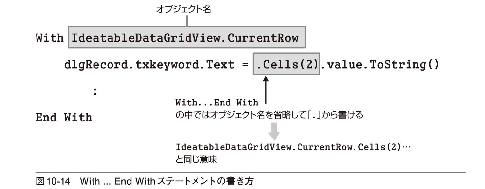
■ステップ1 現在のレコードの内容をダイアログボックスに表示する
ダイアログボックスを表示する前に、DataGridViewコントロールの現在行の2番目のセル（キーワード）と3番目のセル（アイディア）の内容をダイアログボックスのtxtKeywordコントロールとtxtIdeaコントロールのTextプロパティに代入しておきます。このようにすれば、ダイアログボックスが表示されたときに、修正前のデータが表示されるようになります（LIST10-13）。
10-13 選択された行のキーワードとアイディアをダイアログボックスに表示しておく
dlgRecord.txtKeyword.Text = .Cells(2).Value.ToString()dlgRecord.txtIdea.Text = .Cells(3).Value.ToString()CellsプロパティはDataGridViewコントロールのセルを表します。1行にセルは複数あるので、左から0、1、2......とインデックス（列位置）を指定して区別します。セルの内容はValueプロパティで参照できますが、データ型がObject型なので、ToStringメソッドを使って文字列に変換しています。
■ステップ2 入力された内容をもとにレコードを更新する
ダイアログボックスの表示方法はすでに述べたとおりです。［OK］ボタンがクリックされたら、ダイアログボックスに表示されている内容をもとに、レコードを書き換えます。まず、IdeadbDataSet.ideatableのSelectメソッドを使って、DataGridViewコントロールで選択された行のIDと等しいレコードを選択します（LIST10-14）。
10-14 IDを利用して、更新すべきレコードを選択する
Dim SelRows As DataRow() SelRows = IdeadbDataSet.ideatable.Select("ID='" & .Cells(0).⇒Value.ToString() & "'")どのようにレコードが選択されるか、図10-15で確認しておきましょう。
SelRowsは配列を参照しますが、IDには重複する値がないので、選択されるレコードは1つだけです。そのレコードはSelRows(0)と表されます。
次に、そのレコードのキーワードフィールドとアイディアフィールドに、ダイアログボックスに入力されている内容を入れます。IDフィールドはそのままにしておき、日付フィールドにはその日の日付を入れます（LIST10-15）。
10-15 レコードの各フィールドを修正する
SelRows(0).Item("日付") = TodaySelRows(0).Item("キーワード") = dlgRecord.txtKeyword.TextSelRows(0).Item("アイディア") = dlgRecord.txtIdea.Text■ステップ3 データベースを更新する
最後にTableAdapterコントロールのUpdateメソッドを呼び出して、データベースに書き込みます。DataGridViewコントロールの表示も忘れずに修正しておきましょう（LIST10-16）。
10-16 データベースを更新し、修正内容をDataGridViewコントロールに表示し直す
IdeatableTableAdapter.Update(IdeadbDataSet.ideatable).Cells(1).Value = Today.ToString("yyyy/MM/dd").Cells(2).Value = dlgRecord.txtKeyword.Text.Cells(3).Value = dlgRecord.txtIdea.Text■レコードを削除するためのコードを書く
レコードを削除するには、DataGridViewコントロールで選択されている行をもとに、データセットのテーブルから削除したいレコードを選択し、そのレコードのDeleteメソッドを呼び出します。イベントハンドラー名はDeleteDataとします（LIST10-17）。
10-17 選択されている行を削除し、データベースを更新する
Private Sub DeleteData(sender As Object, e As EventArgs)⇒Handles btnDelete.Click ' 削除の対象となるレコードを選択する Dim SelRows() As DataRow SelRows = IdeadbDataSet.ideatable.Select( "ID='" & IdeatableDataGridView.CurrentRow.Cells(0).⇒Value.ToString() & "'") ' 削除の確認をする If MessageBox.Show("本当に削除していいですか？","削除", MessageBoxButtons.YesNo) <> DialogResult.Yes Then Exit Sub ' 選択されたレコードを削除する SelRows(0).Delete() ' データベースを更新する IdeatableTableAdapter.Update(IdeadbDataSet.ideatable) ' DataGridViewコントロールの現在行を削除する IdeatableDataGridView.Rows.Remove(IdeatableDataGridView.⇒CurrentRow) End Subこのコードは簡単なので一気に見てみましょう。ここでも、削除の対象となるレコードを選択するために、DataGridViewコントロールで選択された行のIDの値を利用しています。レコードの選択にはIdeadbDataSet.ideatableのSelectメソッドを使います。考え方は図10-15とまったく同じです。
レコードが選択できたら、確認のメッセージを表示した後、Deleteメソッドでその行を削除します。最後に、データセットへの変更をデータベースに書き出すためにTableAdapterコントロールのUpdateメソッドを呼び出すのを忘れないでください。また、行を削除した後、DataGridViewコントロールの現在行も削除しておく必要があります。それが最後の行です。DataGridViewコントロールのRows.Removeメソッドに削除したい行を指定しています。
■プログラムを終了させる
最後に［終了（X）］ボタンのClickイベントハンドラーを書きます。おなじみのコードですね（LIST10-18）。これでプログラムが完成しました。
10-18 ［終了（X）］ボタンのClickイベントハンドラー
Private Sub ExitProc(sender As Object, e As EventArgs)⇒Handles btnExit.Click Application.Exit() End Sub■プログラムを実行する
コードがすべて入力できたら［開始］ボタン（）をクリックして、プログラムを実行します。［キーワード（K）:］ボックスにキーワードを入力し、キーを押すと、そのキーワードが含まれる行が表示されます。レコードの追加や修正、削除も試してみてください（画面10-18）。
LINQクエリを使う
IdeaMakerLINQ
Visual Basic 2008からは統合言語クエリ（LINQ：Language-Integrated Query）と呼ばれる方法を使って、SQLクエリを書くのと同じような感覚で柔軟にレコードの操作ができるようになっています。
基本的な書き方は以下のとおりです（LIST10-19）。
10-19 LINQクエリの書き方
Dim 変数名 = From 範囲変数名 In データソース Where 抽出条件 Select 項目名のリスト Order By 並べ替えのキー項目検索などの結果は、宣言した変数で参照できます。範囲変数では、データソースの各要素が参照されます。データソースにはテーブルなどを指定します。Where以降の句は、ここでは一部しか示していませんが、SQLクエリと同様の書き方ができます。
例えば、この節のプログラムの検索処理をLINQで書くと次のようになります（LIST10-20）。
10-20 LINQクエリを使ってレコードを検索する
Dim SelRows = From ideas In IdeadbDataSet.ideatable Where(ideas.キーワード Like txtKeyword.Text) IdeatableDataGridView.Rows.Clear() For Each aRow As ideadbDataSet.ideatableRow In SelRows IdeatableDataGridView.Rows.Add( aRow.ID, aRow.日付.ToString("yyyy/MM/dd"), aRow.キーワード, aRow.アイディア) Nextこの場合、データソースがIdeadbDataSet.ideatableというテーブルで、ideasはその中の各要素（各レコード）と考えていいでしょう。範囲変数には好きな変数名が使えるので、別にideasという名前でなくても構いません。Where句には「ideas.キーワード Like txtKeyword.Text」とあるので、キーワードがtxtKeywordコントロールに入力されたパターンと一致するものが抽出されます。抽出の結果はSelRowsという変数で参照できます。それ以降のコードはまったく同じです。
Chapter10のまとめ
● プロジェクトにデータベースを追加すると、コードを書かなくてもレコードの表示、追加、修正、削除ができます
● データベースから読み出されたデータはTableAdapterコントロールのFillメソッドによりデータセットのテーブルに入れられます
● データセットの内容はTableAdapterコントロールのUpdateメソッドによりデータベースに書き込まれます
● BindingSourceコントロールの働きにより、コントロールとデータセットの間でデータのやりとりができます
● BindingNavigatorコントロールによって、データベースのレコードの表示や追加、修正、削除のできるツールバーが表示されます
● BindingSourceコントロールやBindingNavigatorコントロールの機能を使わず、コードを書いてデータベースを取り扱うこともできます
練習問題
IdeaMaker2
［A］このプログラムでは、プログラムの実行時にはDataGridViewコントロールには何も表示されていません。プログラムの実行時にすべてのレコードを表示するようにコードを追加してください。プロジェクト名はIdeaMaker2とします（IdeaMakerにコードを追加しても構いません）。
［B］さらに、検索条件をクリアするためのボタンを用意し、検索条件が入力されていないときにはすべてのレコードを表示するようにしてください。
［C］このプログラムでは、DataGridViewコントロールの最終行を選択し、［削除］ボタンをクリックするとエラーになります。構造化例外処理を追加し、何も入力されていない行を削除しようした場合にもエラーとならないようにしてください。また、ほかにもエラーが起こる可能性のある箇所があるので、それらにも対処できるようなコードを書いてみてください。
Appendix
付録 確認・練習問題の解答
Chapter1
▼ 練習問題（P32）
［A］の解答
順に、×、○、○、×
［B］の解答
1−（c） 2−（a） 3−（e） 4−（b） 5−（d）
Chapter2
▼ 練習問題（P70）
［A］の解答
（あ）−（D） （い）−（B） （う）−（E） （え）−（C） （お）−（A）
［B］の解答
（1）ア−（d） イ−（c） ウ−（a） エ−（b） オ−（e）
（2）順に、×、○、×、×、×
［C］の解答
Private Sub ShowMessage(sender As Object, e As EventArgs)Handles btnMessage.Click lblMessage.Text = "こんにちは Visual Basic!" End SubChapter3
▽ 確認問題（P81）
1.の解答
（あ）−（C） （い）−（E） （う）−（D） （え）−（A）
2.の解答
整数型（Integerでも可） 文字列型（Stringでも可） 倍精度浮動小数点型（Doubleでも可） 文字列型（Stringでも可）
3.の解答
順に、○、×、×、○
▽ 確認問題（P96）
1.の解答
順に、○、×、○、×、×、○
2.の解答
Integer Double Const Private Integer3.の解答
順に、×、○、○、×、×
▽ 確認問題（P110）
1.の解答
順に、○、×、×、○、×
2.の解答
7 28 2.5 "123456" False
3.の解答
（1）Dim WeekNumber As Integer = 0（2）WeekNumber = CurrentDay / 7（3）DayOfWeek = StartOffset + CurrentDay Mod 7▼ 練習問題（P120）
［A］の解答
Option Strict OnPublic Class Form1 Private Sub DoCalc(sender As Object, e As EventArgs)Handles btnCalc.Click Dim Payment As Integer Dim WorkingTime As Double Dim PayPerHour, WorkingHour, WorkingMinute As Integer ' 入力された文字列を数値に変換する PayPerHour = CInt(txtPayPerHour.Text) WorkingHour = CInt(txtHour.Text) WorkingMinute = CInt(txtMinute.Text) ' 時間の計算をする WorkingTime = WorkingHour + WorkingMinute / 60 ' 時給を計算する（時給の小数以下は切り上げとする） Payment = CInt(Math.Ceiling(WorkingTime * PayPerHour)) ' 時給を表示する lblPayment.Text = Payment.ToString() End Sub Private Sub ExitProc(sender As Object, e As EventArgs)Handles btnExit.Click Application.Exit() End SubEnd Class［B］の解答
Option Strict OnPublic Class Form1 Private Sub DivideValue(sender As Object, e As EventArgs)Handles btnDivide.Click Dim a, b As Double Dim OriginalValue As Double OriginalValue = CDbl(txtValue.Text) a = OriginalValue ((1 + (1 + Math.Sqrt(5)) 2)) b = a * ((1 + Math.Sqrt(5)) / 2) lblA.Text = a.ToString() lblB.Text = b.ToString() End Sub Private Sub ExitProc(sender As Object, e As EventArgs)Handles btnExit.Click Application.Exit() End SubEnd ClassChapter4
▽ 確認問題（P126）
1.の解答
順に、×、×、○、×
▽ 確認問題（P137）
1.の解答
順に、○、○、×、○
2.の解答
（1）apX > 100（2）OptionFlag = True（OptionFlagだけでも可） Else（3）Or（OrElseでも可）▽ 確認問題（P146）
1.の解答
（1）ElseIf ElseIf Else（2）Focus() SelectAll() ElseIf Focus() SelectAll() Else2.の解答
Ifステートメントを以下のように書き換えるIf Integer.TryParse(txtHour.Text, WorkingHour) = False OrElseWorkingHour >= 24 Then ：ElseIf Integer.TryParse(txtMinute.Text, WorkingMinute) = False OrElseWorkingMinute >= 60 Then ：Else ：End If▽ 確認問題（P152）
1.の解答
順に、○、×、○、○
2.の解答
（1）Select Case Else Select （2）0,5 Is < 5▼ 練習問題（P167）
［A］の解答
Option Strict OnPublic Class Form1 Private Sub ReCalc(sender As Object, e As EventArgs)Handles btnRecalc.Click Dim SalesPrice As Integer ' 販売価格 Dim StandardPrice As Integer ' 標準価格 If Integer.TryParse(txtStandardPrice.Text, StandardPrice) =False Then MessageBox.Show("標準価格に正しい値を入力してください") txtStandardPrice.Focus() txtStandardPrice.SelectAll() Else If rbNone.Checked = True Then SalesPrice = StandardPrice ElseIf rbStudent.Checked = True Then SalesPrice = CInt(Int(StandardPrice * 0.9)) Else SalesPrice = CInt(Int(StandardPrice * 0.85)) End If lblSalesPrice.Text = SalesPrice.ToString("#,##0円") End If End Sub Private Sub ExitProc(sender As Object, e As EventArgs)Handles btnExit.Click Application.Exit() End SubEnd Class［B］の解答
Public Class Form1 Private Sub DoEvaluate(sender As Object, e As EventArgs)Handles btnShow.Click Dim Score As Integer Dim Grade As String If Integer.TryParse(txtScore.Text, Score) = False _ OrElse Score < 0 OrElse Score > 100 Then MessageBox.Show("成績を正しく入力してください") txtScore.Focus() txtScore.SelectAll() Else Select Case Score Case Is < 60 Grade = "不可" Case Is < 70 Grade = "可" Case Is < 80 Grade = "良" Case Else Grade = "優" End Select lblGrade.Text = Grade End If End Sub Private Sub ExitProc(sender As Object, e As EventArgs)Handles btnExit.Click Application.Exit() End SubEnd ClassChapter5
▽ 確認問題（P184）
1.の解答
順に、×、○、○、×
2.の解答
（1）Until += （2）While <▽ 確認問題（P188）
1.の解答
順に、○、×、×
2.の解答
（1）To Step （2）Integer 2 InputNumber▽ 確認問題（P193）
1.の解答
順に、×、○、×
2.の解答
（1）For MyCollection Next （2）Each In▽ 確認問題（P201）
1.の解答
順に、×、×、○
▼ 練習問題（P210）
［A］の解答
Option Strict OnPublic Class Form1 Private Sub InitProc(sender As Object, e As EventArgs)Handles MyBase.Load Dim r As Random = New Random() lstScore.Items.Clear() For i = 0 To 9 lstScore.Items.Add(r.Next(101)) Next End Sub Private Sub SearchMinValue(sender As Object, e As EventArgs)Handles btnMinValue.Click Dim MinScore As Integer MinScore = Integer.MaxValue For Each Score As Integer In lstScore.Items If Score < MinScore Then MinScore = Score End If Next MessageBox.Show("最低点は" & MinScore & "です") End Sub Private Sub ExitProc(sender As Object, e As EventArgs)Handles btnExit.Click Application.Exit() End SubEnd Class［B］の解答
Option Strict OnPublic Class Form1 Private Sub InitProc(sender As Object, e As EventArgs)Handles MyBase.Load Dim r As Random = New Random() lstScore.Items.Clear() For i = 0 To 9 lstScore.Items.Add(r.Next(101)) Next End Sub Private Sub CountProc(sender As Object, e As EventArgs)Handles btnPassCount.Click Dim PassCount As Integer = 0 For Each Score As Integer In lstScore.Items If Score >= 60 Then PassCount += 1 End If Next MessageBox.Show("合格者数は" & PassCount & "人です") End Sub Private Sub ExitProc(sender As Object, e As EventArgs)Handles btnExit.Click Application.Exit() End SubEnd ClassChapter6
▽ 確認問題（P215）
1.の解答
順に、×、○、×、○、×
▽ 確認問題（P223）
1.の解答
（あ）−（E） （い）−（F） （う）−（C） （え）−（B） （お）−（A）
2.の解答
5 5 5 10 11 エラー
▽ 確認問題（P229）
1.の解答
（1）99 For 99 FREE If Mod VIPONLY（2）99 Boolean For 99 idx For 9 HIT（3）j i▼ 練習問題（P238）
［A］の解答
Option Strict OnPublic Class Form1 Private Sales() As Integer = {1230, 890, 1450, 1520, 1380, 1090} Private Sub InitProc(sender As Object, e As EventArgs)Handles MyBase.Load For i As Integer = 0 To UBound(Sales) lstSales.Items.Add(Sales(i)) Next End Sub Private Sub DoCalc(sender As Object, e As EventArgs)Handles btnCalc.Click Dim Sum As Integer = 0 Dim Average As Double, SD As Double For i As Integer = 0 To UBound(Sales) Sum += Sales(i) Next Average = Sum / Sales.Length Dim SSE As Double = 0 For i As Integer = 0 To UBound(Sales) SSE += (Sales(i) - Average) ^ 2 Next SD = Math.Sqrt(SSE / Sales.Length) lblSum.Text = Sum.ToString() lblAverage.Text = Average.ToString("F1") lblSD.Text = SD.ToString("F2") End Sub Private Sub ExitProc(sender As Object, e As EventArgs)Handles btnExit.Click Application.Exit() End SubEnd Class［B］の解答
Option Strict OnPublic Class Form1 Private Sales() As Integer = {1230, 890, 1450, 1520, 1380, 1090} Private Sub DoCalc(sender As Object, e As EventArgs)Handles btnCalc.Click Dim Sum As Integer = 0 Dim Average As Double, SD As Double For i As Integer = 0 To UBound(Sales) Sum += Sales(i) Next Average = Sum / Sales.Length Dim SSE As Double = 0 For i As Integer = 0 To UBound(Sales) SSE += (Sales(i) - Average) ^ 2 Next SD = Math.Sqrt(SSE / Sales.Length) lblSum.Text = Sum.ToString() lblAverage.Text = Average.ToString("F1") lblSD.Text = SD.ToString("F2") Dim SS As Double lstSalesSD.Items.Clear() For i As Integer = 0 To UBound(Sales) SS = (Sales(i) - Average) / SD * 10 + 50 lstSalesSD.Items.Add(SS.ToString("F1")) Next End Sub Private Sub ExitProc(sender As Object, e As EventArgs)Handles btnExit.Click Application.Exit() End SubEnd Class［C］の解答
Option Strict OnPublic Class Form1 Private Sub DoCalc(sender As Object, e As EventArgs)Handles btnCalc.Click Dim Sum As Integer = 0 Dim Average As Double, SD As Double Dim SS As Double = 0 ' 各データの2乗の総合計 Dim Sales() As Integer = {1230, 890, 1450, 1520, 1380, 1090} For i As Integer = 0 To UBound(Sales) Sum += Sales(i) SS += Sales(i) ^ 2 Next Average = Sum / Sales.Length SD = Math.Sqrt((Sales.Length * SS - Sum ^ 2) / Sales.Length^ 2) lblSum.Text = Sum.ToString() lblAverage.Text = Average.ToString("F1") lblSD.Text = SD.ToString("F2") End Sub Private Sub ExitProc(sender As Object, e As EventArgs)Handles btnExit.Click Application.Exit() End SubEnd ClassChapter7
▽ 確認問題（P244）
1.の解答
順に、○、×、○、○、×
▽ 確認問題（P251）
1.の解答
（あ）−（D） （い）−（E） （う）−（A） （え）−（C）
2.の解答
（1）Multiply2 Private Sub Sub（2）Private Sub String String End Sub▽ 確認問題（P256）
1.の解答
（あ）−（B） （い）−（C） （う）−（F） （え）−（A） （お）−（D）
2.の解答
（1）Add2 Private Function Double Return（Add2 =でも可） Function（2）Private Function GetBMI Double Double Double Return Return（GetBMI =でも可） End Function▽ 確認問題（P267）
1.の解答
（1）3.14 （2）6.28 （3）今日の日付： （4）秋
▼ 練習問題（P279）
［A］の解答
Private Function Limit0To255(value As Integer) As Integer Return Math.Max(0, Math.Min(255, value)) End Function［B］の解答
Private Sub ChangeTrackBar(txtSource As TextBox,trbTarget As TrackBar) Dim ColorValue As Integer If Integer.TryParse(txtSource.Text, ColorValue) Then trbTarget.Value = Limit0To255(ColorValue) Else MessageBox.Show("0〜255の整数を入力してください") txtSource.Focus() txtSource.SelectAll() End If End SubChapter8
▽ 確認問題（P284）
1.の解答
順に、○、×、○、×、○
▽ 確認問題（P290）
1.の解答
（1）New Subject Body New Send（2）New LoadXml InnerText（3）SetText Clipboard▽ 確認問題（P305）
1.の解答
（あ）−（C） （い）−（B） （う）−（D） （え）−（E） （お）−（A）
2.の解答
String Property mName value3.の解答
Sub Eat += value▽ 確認問題（P313）
1.の解答
順に、×、○、○、×、○
2.の解答
Rogue Rogue Protected Inherits Implements mHitPoint Implements IMagic.Mp Interface Interface▼ 練習問題（P326）
［A］の解答
Public Class Insectroid Private apX As Integer Private apY As Integer Private r As Random = New Random() Sub New() apX = 10 apY = 10 End Sub Public Property X() As Integer Get Return apX End Get Set(ByVal value As Integer) apX = value End Set End Property Public Property Y() As Integer Get Return apY End Get Set(ByVal value As Integer) apY = value End Set End Property Public Sub RandomWalk() apX += r.Next(-1, 2) apY += r.Next(-1, 2) End SubEnd Class［B］の解答
Option Strict OnPublic Class Form1 Private anInsect As Insectroid Private Sub InitProc(sender As Object, e As EventArgs)Handles MyBase.Load anInsect = New Insectroid() End Sub Private Sub RandomWalk(sender As Object, e As EventArgs)Handles btnWalk.Click anInsect.RandomWalk() lblPosition.Text = "X:" & anInsect.X.ToString() & "-Y:" &anInsect.Y.ToString() End Sub Private Sub ExitProc(sender As Object, e As EventArgs)Handles btnExit.Click Application.Exit() End SubEnd ClassChapter9
▼ 練習問題（P356）
［A］の解答
［次（N）］ボタンをフォームに配置し、フォームのLoadイベントハンドラーを以下のように変える。［次（N）］ボタンのコントロール名はbtnNextとする。
Private Sub InitProc(sender As Object, e As EventArgs) ⇒Handles MyBase.Load, btnNext.Click ：（これ以降はまったく同じ）［B］の解答
Imports Microsoft.VisualBasic.FileIOPublic Class Form1 Private Sub ShowFixedFile(sender As Object, e As EventArgs)Handles Button1.Click Dim aRow As String() Try Dim tfp As TextFieldParser = New TextFieldParser("sample.txt", System.Text.Encoding.GetEncoding("shift_jis")) tfp.TextFieldType = FieldType.FixedWidth tfp.FieldWidths = New Integer() {5, 4, 4, 3} Do While Not tfp.EndOfData aRow = tfp.ReadFields() For Each aField As String In aRow Debug.WriteLine(aField) Next Loop Catch ex As System.IO.FileNotFoundException MessageBox.Show("ファイルが見つかりません") Application.Exit() Catch ex As MalformedLineException MessageBox.Show("フィールドの形式が正しくありません") Application.Exit() End Try End SubEnd ClassChapter10
▼ 練習問題（P396）
［A］の解答
フォームのLoadイベントハンドラーを以下のように書き換える。
Private Sub Form1_Load(sender As Object, e As EventArgs)Handles MyBase.Load Try Me.IdeatableTableAdapter.Fill(Me.IdeadbDataSet.ideatable) txtKeyword.Text = "" IdeatableDataGridView.Rows.Clear() For Each aRow As ideadbDataSet.ideatableRow InIdeadbDataSet.ideatable.Rows IdeatableDataGridView.Rows.Add(aRow.ID, aRow.日付.ToString("yyyy/MM/dd"), aRow.キーワード, aRow.アイディア) Next Catch ex As Exception MessageBox.Show("データが読み出せません") Application.Exit() End Try End Sub［B］の解答
［クリア］ボタンをフォームに配置し、フォームのLoadイベントハンドラーを以下のように変える。［クリア］ボタンのコントロール名はbtnClearとする。
Private Sub InitProc(sender As Object, e As EventArgs)Handles MyBase.Load, btnClear.Click ：（これ以降はまったく同じ）［C］の解答
SearchData、AddData、ChangeData、DeleteDataの各プロシージャを以下のように書き換える。Try ... Catch ... End Tryに注目。
Private Sub SearchData(sender As Object, e As KeyEventArgs)Handles txtKeyword.KeyDown If e.KeyCode <> Keys.Enter Then Exit Sub ' Enterキーを押したときだけ実行 Dim Keyword As String If txtKeyword.Text = "" Then Keyword = "*" Else Keyword = txtKeyword.Text End If Try Dim SelRows As DataRow() SelRows = IdeadbDataSet.ideatable.Select( "キーワード LIKE '" & Keyword & "'") IdeatableDataGridView.Rows.Clear() For Each aRow As ideadbDataSet.ideatableRow In SelRows IdeatableDataGridView.Rows.Add(aRow.ID, aRow.日付.ToString("yyyy/MM/dd"), aRow.キーワード, aRow.アイディア) Next Catch ex As EvaluateException MessageBox.Show("検索条件の指定が間違っています") Catch ex As Exception MessageBox.Show("データが読み出せません") Application.Exit() End Try End Sub Private Sub AddData(sender As Object, e As EventArgs)Handles btnNew.Click dlgRecord.Text = "レコードの追加" dlgRecord.txtKeyword.Text = "" dlgRecord.txtIdea.Text = "" If (dlgRecord.ShowDialog() = DialogResult.OK) Then Try Dim aRow As DataRow aRow = IdeadbDataSet.ideatable.NewRow() aRow.Item("日付") = Today aRow.Item("キーワード") = dlgRecord.txtKeyword.Text aRow.Item("アイディア") = dlgRecord.txtIdea.Text IdeadbDataSet.ideatable.Rows.Add(aRow) IdeatableTableAdapter.Update(IdeadbDataSet.ideatable) IdeatableTableAdapter.Fill(IdeadbDataSet.ideatable) ' 表示を更新する（ここではキーワードはクリアする） txtKeyword.Text = "" IdeatableDataGridView.Rows.Clear() ' aRowという変数名をすでに使っているので別の名前にする For Each aRow1 As ideadbDataSet.ideatableRow In IdeadbDataSet.ideatable.Rows IdeatableDataGridView.Rows.Add( aRow1.ID, aRow1.日付.ToString("yyyy/MM/dd"), aRow1.キーワード, aRow1.アイディア) Next Catch ex As Exception MessageBox.Show("データの追加ができません") Application.Exit() End Try End If End Sub Private Sub ChangeData(sender As Object, e As EventArgs)Handles btnChange.Click If IdeatableDataGridView.CurrentRow Is Nothing Then Exit Sub With IdeatableDataGridView.CurrentRow dlgRecord.Text = "レコードの修正" dlgRecord.txtKeyword.Text = .Cells(2).Value.ToString() dlgRecord.txtIdea.Text = .Cells(3).Value.ToString() If dlgRecord.ShowDialog() = DialogResult.OK Then Try Dim SelRows As DataRow() SelRows = IdeadbDataSet.ideatable.Select("ID='" & .Cells(0).Value.ToString() & "'") SelRows(0).Item("日付") = Today SelRows(0).Item("キーワード") = dlgRecord.txtKeyword.Text SelRows(0).Item("アイディア") = dlgRecord.txtIdea.Text ' データベース更新 IdeatableTableAdapter.Update(IdeadbDataSet.ideatable) ' 表示の更新 .Cells(1).Value = Today.ToString("yyyy/MM/dd") .Cells(2).Value = dlgRecord.txtKeyword.Text .Cells(3).Value = dlgRecord.txtIdea.Text Catch ex As NullReferenceException MessageBox.Show("レコードが選択されていません") Catch ex As Exception MessageBox.Show("データの更新ができません") Application.Exit() End Try End If End With End Sub Private Sub DeleteData(sender As Object, e As EventArgs)Handles btnDelete.Click Try Dim SelRows As DataRow() SelRows = IdeadbDataSet.ideatable.Select("ID='" &IdeatableDataGridView.CurrentRow.Cells(0).Value.ToString() & "'") If MessageBox.Show("本当に削除していいですか？", "削除",MessageBoxButtons.YesNo) = DialogResult.Yes Then SelRows(0).Delete() IdeatableTableAdapter.Update(IdeadbDataSet.ideatable) IdeatableDataGridView.Rows.Remove( IdeatableDataGridView.CurrentRow) End If Catch ex As NullReferenceException MessageBox.Show("レコードが選択されていません") Catch ex As Exception MessageBox.Show("データの削除ができません" & ex.ToString) Application.Exit() End Try End Sub■ 著者
羽山 博（はやま ひろし）
1961年大阪生まれ。京都大学文学部哲学科（心理学専攻）卒業後、日本電気株式会社でコンピューターのユーザー教育や社内要員教育を担当。1991年にライターとして独立し、ソフトウェアの基本からプログラミング、認知科学まで幅広く雑誌や書籍で執筆。Visual Basicとのつきあいは『ビギナーズVisual Basic』『アドバンスドVisual Basic』（いずれも1994年、インプレス）の執筆から。当時のバージョンはまだ2.0であった。2006年には東京大学大学院学際情報学府博士課程を単位取得後退学。現在、有限会社ローグ・インターナショナル代表取締役、東京大学、お茶の水女子大学、青山学院大学、日本大学講師。最近の趣味は献血、書道、絵画、ウクレレ。熱烈なトレッキー（スタートレックのファン）でもある。
著書には『イラストでよくわかるAndroidアプリのつくり方Android Studio対応版』、『できる大事典 Windows10 Home/Pro/Enterprise対応』『できるExcel 関数&マクロ 困った！ &便利技パーフェクトブック』『できるやさしく学ぶExcel統計入門 難しいことはパソコンにまかせて仕事で役立つデータ分析ができる本』（以上インプレス）、『WSHクイックリファレンス』（オライリー / オーム社）、『らくらくマスター 例解 LPICレベル1教科書』『らくらくマスター 実践 LPICレベル1問題集』（以上、共著・オーム社）、『Pages&Numbersで仕事。』『Keynoteでプレゼン。〔改訂版〕』（BNN新社）、『プログラミングの基礎』（マイナビ出版）などがある。
STAFF
カバーデザイン ハヤカワデザイン・早川いくを
本文デザイン トップスタジオ
本文レイアウト トップスタジオ
イラスト サワダサワコ
編集 鈴木教之（コンピューターテクノロジー編集部）、伊藤隆司(コンピューターテクノロジー編集部)